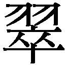

| 千年の愉楽 (河出文庫) | |
| 中上健次 | |
| (1992) | |
この作品は縦書きでレイアウトされています。
また、ご覧になる機種により、表示の差が認められることがあります。
一部の漢字の字体は簡略化されて表示される場合があります。
本作品の全部あるいは一部を無断で複製・転載・配信等を行うことを禁止します。
本作品の内容を無断で改変、改ざん等を行うことも禁止します。
また、有償・無償にかかわらず本作品を第三者に譲渡することはできません。
千年の愉楽 目次
千年の愉楽
◆半蔵の鳥
明け方になって急に家の裏口から夏芙蓉の甘いにおいが入り込んで来たので息苦しく、まるで花のにおいに息をとめられるように思ってオリュウノオバは眼をさまし、仏壇の横にしつらえた台に乗せた夫の礼如さんの額に入った写真が微かに白く闇の中に浮きあがっているのをみて、尊い仏様のような人だった礼如さんと夫婦だった事が有り得ない幻だったような気がした。体をよこたえたままその礼如さんの写真を見て手を組んでオリュウノオバは「おおきに、有難うございます」と声にならない声でつぶやき、あらためて家に入ってくる夏芙蓉のにおいをかぎ、自分にも夏芙蓉のような白粉のにおいを立てていた若い時分があったのだと思って一人微笑んだ。
明けてくるとまるで瑠璃を張るような声で裏の雑木の茂みで鳥が鳴く。それが誰から耳にしたのか忘れたが昔から路地の山に夏時に咲く夏芙蓉の花の蜜を吸いに来る金色の体の小さな鳥の声だと教えられ、オリュウノオバは年を取ってなお路地の山の脇に住みつづけられる自分が誰よりも幸せ者だと思うのだった。夏芙蓉は暮れ時に花をひらきはじめて日が昇る頃一夜だけの命を終えてしぼむので金色の小鳥が蜜を吸いに来た鳴き声を耳にするたびに、幻のようにかき消えた夜をおしむのか、明るい日の昼を喜ぶのか問うてもみたい気がした。オリュウノオバの耳にその金色の小鳥の鳴き声は、半蔵が飼っていた天鼓という名の鶯の鳴き声のようにも響くのだった。半蔵が大事に育てていた天鼓を、年の寄りすぎで体のどこが悪いと言うのではないのに寝たきりになってしまったオリュウノオバに聴かせてやるというように、毎年の夏時に裏の山の茂みに放って声を聴かせてくれる。
夫の礼如さんが突然長い間年季奉公して身につけた靴つくりをやめ、坊主になると言って京都の寺に修行に行ったのが、三歳まで育った男の子が茶粥を頭からかぶって大やけどをして死んだ翌年の事だったので、オリュウノオバが路地のただ一人の産婆になったのは二十三の歳だった。それからは、今、路地の親のあらかたはオリュウノオバが取り上げた。その半蔵もそうだった。オリュウノオバは床についたまま、朝が明けて方々から軍鶏や鶏が時をつくり子供らの声がするのを閉ざした雨戸のむこうからひびいてくるのを耳にしながら、眠っているのか起きているのか分からぬまま眼に浮かんだ半蔵の姿にむかって、「ねえ、半蔵。誰よりも先にこの手に抱いたんじゃのにねえ」と言う。半蔵はバツの悪い顔をつくり、白い歯のこぼれる、人にいつも歯をみせてと言われるほどのくったくのない笑みをまた浮かべ、「わがの飯の種じゃだ」と憎まれ口をつくる。「おうよ、飯の種やよ。そうじゃけど、半蔵、おまえを産んだ女の親より先に、この手に抱いたんじぇ。そうやんで今こんなに年寄ってから、おまえに天鼓の声も耳にさせてもらうよ」
半蔵の姓は中本、オリュウノオバの夫の礼如さんの一統にも当り、西村へ養子に行った勝一郎や弦とはイトコ同士だった。中本彦之助が半蔵の男親で、彦之助の男親がタツ、女親がナミノで、彦之助の弟が勝一郎や弦の親キクドウになる。タツとナミノはその二人の子を産んで別れ、タツは田口マサエの腹に女の子を一人もうけている。彦之助は半蔵一人を女に産せてそれで町の後家と駆け落ちして田辺に行き、三人ほど子をつくったと風のが路地に届いた。半蔵の女親は有馬から来たが有馬出の女があらかたそうであるように情が強く気性をおさえる事が出来ず、それに彦之助の弟のキクドウに弦が生れた事もあって中本の血がよどみ腐っていると言い、半蔵が十の歳に紡績の口入れに来た男の後を追って出奔した。半蔵は二親から置き去りにされて育ったが、昏いかげりなど毛ほどもみせずに中本の血を引いたのか路地の中でも一、二をあらそうほどの男振りの若衆に育ち、十九の時にはもう人を三人ほど使う土方の親方になっていた。
半蔵が住んでいた家はオリュウノオバの家から狭い石段を降りたところにあったので、半蔵が女を家に連れて来て暮らしはじめたのは鳥が巣をつくっていくのをみるようなものだった。半蔵は二十歳だった。半蔵は浴衣を着ていなせに袖口をたくし上げ、それで女を連れて町の方へ物でも食いに行くのか路地を歩いていて、ふと何を思ったのか女をそこに待たせて石段を大股で駆けてきてオリュウノオバの前に立ち、「あれ、身籠っとるんじゃ」と言い、そんな事は当り前の事だと言うふうに眼をつぶって見せたオリュウノオバに真顔で口説きでもしようというように耳元に口を寄せて小声で「かまんかいね。アレなんにも知らんけど、弦みたいなの生れへんかいね」と言う。オリュウノオバは一瞬、何を聞かされたのか分からなかったが、半蔵の顔を見て、左手に指がなくただ獣のひづめのように二つに裂けた弦のような子が中本の一統の自分にも生れてくるのではないかと怖れているのだと知って腹立ったように「何を言うとるんなよ」と声を強めた。「弦は仏様やのに。仏様がそうそう生れてくれるもんか」
もともとさっぱりした気性なので路地の者の事なら何から何まで知っているオリュウノオバにそう言ってもらい、「信心も足りんくせにナマイキ言うな」と叱られて胸のつかえがとれる気がしたのだろう。半蔵は石段を駆け降り所在なげに立った女に「さあ、行こか」と声を掛け、路地を蓮池跡の方へ歩いて行くのだった。オリュウノオバにしてみれば二十歳の半蔵の抱いた不安も得心も若いというだけに危っかしく映ったし、他の二十の男なら花が自分のかさ一ぱいに開くような歳にはどこを斬っても自信以外のものがあろうはずがないのに、と快活な半蔵にかげりのようなものが付いているのが気がかりだった。
ほどなくして半蔵の祝言が路地の半蔵の家でおこなわれ、その年はまた路地に不幸が重なった年だったので、二親に棄てられて言ってみれば路地の大人らが誰彼なしに親がわりになって育てたような半蔵の祝い事を潮にしてきっぱりと凶事とは縁を切ろうと思ってでもいるように、半蔵が自分で用意した酒や肴の他に倍ほどの飲み物食い物が集まり、家に入りきらないくらい人が集まり、区長は長々と演説をやり、宴会になると花婿花嫁をそっちのけで路地の者らは踊りをおどり歌をうたった。二月ほど前に組をくんで山仕事に行っていた路地の男らのうち、東の方と人が呼ぶ蓮池脇の井戸そばのヒデ、サゴ、トシの三人が、川を越えて出かけた大里の奥から伐り出した材木を木馬と呼ぶ木ゾリに積んで運んでいる最中に積荷が崩れて下敷きになって、ヒデとサゴが死に、命だけは助かったトシも足の骨をくだかれもう二度と自分の足で立ち上る事は無理だろうと医者に言われるほどの怪我をした。凶事はまたすぐに起った。これは何が悪いのか、ヒデの家からしばらく行ったところにある家で律義者のヨシサブロウがまだ小さな子を五人残して製糸工場から持ち込んできた毒を飲んで死んだ。オリュウノオバの夫の礼如さんは過去帳に月日を入れ名前を書き、あとから誰が見ても得心するように詳しく死んだ理由を書き入れる。それをオリュウノオバは字が読めないので、ヒデの生れたのは十二月一日、死んだのは五月の末の日とそらんじる。来年の五月の末の日にも再来年の五月の末の日にも朝の御勤めを済まし茶を飲んでいる礼如さんに、今日は東の方のヒデの命日、トモジノオジがキクに産せた子のサゴの命日と、うっかりしたところのある礼如さんが忘れないようにそらんじた事を繰りかえす。礼如さんはうなずき、もう心から若いさかりに死んだヒデやサゴにむかって悔む気に体がひたされたようにふらふらと立ちあがり、袈裟を身につける。
半蔵の最初の男の子が生れたのは祝言をあげて六月経った時で、はた目にもにおいたつような男振りの半蔵が、仕事が終ると脇目もふらず家へもどってまだ首のすわらない赤子に乳を飲ませている女にまといつきじっと見ているのをそれとなしに眼にするのは、路地に降る雨も雪も決して冷たいばかりではない、痛いばかりではないと大きなものに心で手をあわせる気持にさせた。それからすぐに半蔵は兵役に取られたので、一年ほどしてもどってきた時、男の子はもうどこから見ても、路地に廻ってくる講釈師や説教師に聴いたやんごとない身の貴人さながらの中本の一統の顔に半蔵の男振りが加わり、その子を、銭湯につれて行くのか肩車してサラシ一つ下穿き一つで路地の中を歩いていく姿は、女でなくても惚れぼれする。
「オバ、この子ァ、だいぶ俺より色黒いね」
半蔵は兵役からもどって来て土方仕事するのに日に焼いても元々生地が白いために黒くならない事がまた中本の血のせいだと言うように胸を見せ、それから、密生した黒いわき毛をわざと見せるようにオリュウノオバの方へ身をよじり、「女ならみんなええ色じゃ言うて、この胸にすがりつくけどよ」と、いつそんなふうな男の色気そのもののような笑みを覚えて来たのかとききたくなるような笑みをうかべる。半蔵には親以上に年の離れたオリュウノオバをからかってみる気もあった。十の歳から二親に残され、親戚もあるし子供一人ですむには大きすぎる家もあったが、自分で飯を食う方法も分からない十歳の子に路地の中に住む大人の誰彼なしに頼る以外に大きくなる道はなかった。十の歳に中本とは血が重なっているという馬喰をやっていた久市の家に行き、十の歳に半蔵は女を知った。久市の嫁は久市が馬喰に他へ出かけるたびに半蔵を寝間に呼び、半蔵が自分の愉しみのための生きた玩具だというように舌を吸わせ乳をふくませ半蔵の手を茂みの奥に誘った。それが子供心にも引き取って飯を食わせてくれる久市への裏切りだと分かっていたが、二度三度そうやって寝間に誘われると面白いものだと知りもしたので、一年も経ち、久市の女房に言われなくとも、自分で姿を見て若衆に育った時の男振りのよさに気づいたころは、久市が馬喰に早く他所へ出かけてくれないものかとさえ思うようになった。初めて男の精があふれた時、半蔵は久市の女房の中に、自分の血が思わず流れ出してしまった気がしたのだった。
それから十五の時に大阪のメッキ工場へ働きに出るまで久市の家にいて、久市が不審がるまで女房と大人同然の仲だった。
十八で大阪から路地にもどり、路地の入口にあったとびの組に入ってから、半蔵は路地の山ひとつ越えたら浮島に遊廓があるのに、われながらたちが悪いと思うほど、手をつけていないのは産婆のオリュウノオバくらいのものだと自分から朋輩に言い出したように路地の人の女房や娘に声をかけた。半蔵は自分で自分に惚れていると思っていた。獣のひづめそのもののように二つに裂けた手に生れついた弦の生れた中本の一統である事がさらに半蔵の男振りを上げるのだというように、「あんたの好きなこれの中に、あんなんが幾つも入ったあるんじゃだ」と笑う半蔵に路地の女はきまってぐったりして身を寄せ、半蔵が何をしてもいいというように腕をまきつける。
半蔵が幽霊を見たと言い出したのは、二番目の子が女房の腹に入った時だった。半蔵はそれを腹にさわるといけないと思って女房には黙り、半蔵の朋輩の充造に言い、その充造の女房がまた耳にとめておく事の出来ない性分なので路地の者誰彼なしに言って廻った。半蔵は土方仕事からもどり、子供を連れて銭湯に行き飯も食い、それでこれから路地の会館で開かれる青年団の寄り合いに出かけると口実をつくって、浮島の遊廓の跡に住む後家に会いに外へ出て路地から近道をしようとして山の細い道を歩き出したところだった。
半蔵は汗のにおいを消すために時たまそうするように女房の白粉を盗み借りして両の肩や脇腹に薄くぬっていたが山の道は暗く夏の初めだがひんやりと肌寒く、その肩の方から寒さが伝ってくる。身をすくめ、浮島の後家に汗が出るほど思いっきり抱きしめてもらおうと足を早め、ふと首筋に誰かが触れたような寒気がして身をすくめる。その山道はオリュウノオバの家の脇を過ぎると、家一軒もない雑木の暗がりになって山の向う側がのぞける見晴らしのいい場所まで続くが、半蔵が何の気なしに後を振り返ってみると、薄明るい月に浮かびあがった道に坊主頭の男が一人、首をうなだれて立っている。驚いた半蔵が咄嵯に思ったのは、路地の誰かが物事を思いつめて首をくくっているという事だった。思いつめる暇があるなら女を口説いて抱いて良い目をするといつも半蔵は思うが、路地には自分で手をかけて死ぬ人間が多い。そのまま走ってでも山を越えようと思ったが、もし路地の者が本当に首をつったのなら縄をほどいてやらなければかわいそうだと心に決め、今一度、眼をこらし、すると、その首をうなだれた男は暗闇に吸い込まれるようにゆっくりと消えた。半蔵は狐につままれた気持のまま、今あってそこから消えた坊主頭の男がよく人が視たという幽霊なのか、と思い、幽霊なら誰のものかと考えた。
オリュウノオバはその話を聞き、礼如さんが折に触れて言う浄泉寺の前の代の和尚だろうと思い、あの人なら何のくったくもない半蔵に姿を見せるだろうと一人うなずいたのだった。前の和尚は半蔵の親の彦之助やキクドウら路地の者を集めて、実のところ怖ろしい悪人だった者を他から呼び話をきかせ天子様に弓を引く計画をしたとして監獄に入れられ首をくくられたと聴いたが、その和尚なら路地の者らがどうなったのか心配で路地の周りをさまよいかねない、とオリュウノオバは考え、丁度、通りかかった半蔵を呼びとめ、「幽霊みた言うて、怖ろしことないど」と言った。
半蔵はオリュウノオバの顔を見てにやりと笑い、「オバ、これ見てみ」とちぢみの襦袢をひっぱって丁度首筋からの筋肉が薄くなって鎖骨が浮きあがった辺りにある紫のあざ二つをみせる。「オバらもう歯も抜けて来て齢じゃから、礼如さんにこんなふうな吸い跡もようつけんじゃろ？」
半蔵は歯を見せて笑みをつくり、オリュウノオバがあっけに取られそのうちムッとするのを見て、なおからかうというように「オバ」と言う。「俺も女に悪り事をしとるさか、女を取られた男らの亡霊じゃろかいネと思て、なるほど、そうじゃろ、と思たよ。オバでも礼如さんに内緒にするんじゃったらこんな吸い跡つけてもかまんど。色白いし、少々日焼けしてもすぐ消えてしまうさか、この吸い跡も、女、自分でびっくりするくらい赤かった」
オリュウノオバは何を半蔵に言っても冗談にするだけだと思って口をつぐみ、心底ではそうではないのに腹立ってならないようにふくれっつらをして「行け」と犬を追うように手を払った。「オバ、吸い跡つけたいと言うなら言うてこいよ」と半蔵は言って、子供の頃からそうやって犬のように追われる事になれているというように路地の下へつづいた坂を駆け降りた。
半蔵はオリュウノオバが言う気持は分かったが、それが自分の身の周りに起る怖ろしい事のきざしのように思えて不安になった。女房が二人目の子を孕んでいた。中本の一統の者なら勝一郎も、それにデンスも、智彦も、半蔵と同じ気持でいるだろうが、その中本の血の出所の男がいま半蔵の女房の腹に入った子に異変が起っている事を男親である自分に伝えに来たとも疑った。
女房の腹がせり上りはじめると半蔵は家に居るのがたまらず、浮島の後家の家に出かけた。大日近く十二月の二十日に生れた子はどこ一つ疵ついたところのない女の子で、オリュウノオバは朋輩の家に泊り込んでいた半蔵を呼びにやらせ、明け方の暗い闇の中に立っておびえたように中に入って来ない半蔵に「こっち来てみよ。こんな仏様みたいなかわいらしい女の子やのに」と言うと、半蔵は後ずさりして逃げ出そうと身がまえている。オリュウノオバはその姿をみて、確か弦が生れた時親にむかって言った言葉と一緒だったと思い出し、半蔵が中本の血である事に苦しみすぎている事に気づいて涙を流し、「何を考えとるんじゃろねえ」とつぶやいた。
半蔵は二十五にもなると体のどこかに残っていた青臭さが取れて男振りは異様なほどに映え、それを自分で知っての事か仕事を終えてこざっぱりした服に着替え路地の若い衆らと混っている時も、服のえりを立てたり、折らなくてもいい袖を折り返して崩れた格好を好んでやり、それがまた心を惹くのか半蔵に色目をつかう女は後をたたなかった。半蔵が女をもてあそんでいるのかそれとも女が半蔵を放っておかずにもてあそんでいるのか、さすがに路地にはそういう女はいなかったが、半蔵と二度三度逢引しそれっきりふっつりと糸を切られた形の女は路地の家まで押しかけ、乳呑み子を抱えた女房を苦しめるだけなのに、こうもした、ああもしたと寝間の事までぶちまけてウサを晴らして帰る事もあった。
そんな時半蔵は耐えに耐えて他の女の前で取り乱しもせず涙を見せもしなかった女房の前に手をつき、悪かったと謝り、半蔵が外へ出て行かずそばにいる事で一層カンが昂ったように小さな子供のささいな事にきつい声をあげる女房を寝間で抱いてなだめようとすると、「気色の悪い。触らんといて」と言い、なおのばす半蔵の手をつかみ、「ああせえと言うたらして、こうせえと言うたらハイハイとすなおにするんやて」とどなり、隣に寝かせた女の子が声におどろき泣きはじめるのを見て、蒲団をはね上げていきなり起きあがって女の子にとりすがり胸倉を摑んで人形をするように打ちつけはじめた。女の子を殺してしまうと起きあがって女房の手から抱き取ると、女房は急に怒りが消えたようにうなだれ半蔵の裸の胸に唇をつけさえして泣きじゃくる。
二人の子を連れて銭湯に行ってからふと浴衣のまま外に出ようとして自分の湯上りの体から湯上りの男の肌がにおってくるようで厭で女房の白粉を脇腹と肩に薄くはたき、いつか後家が半蔵の体を待ちこがれていたように片膝立てて酒を飲んでいる半蔵を後から抱き、「また違う女抱いてきてついでにここへ寄ったんやねェ」と言ったのを思い出した。違う女の移り香が体についているのではなく半蔵が汗くさい男の臭いが厭でつけた女房の白粉が先のものとは違う種類だというだけだった。
半蔵はまるでその白粉のにおいに誘われるように早い歳から性の味を知って、女をもてあそび女にもてあそばれて二十五の歳まで来た自分に欲情したように外へ出て、路地の山道を浮島の方へ急いだ。いつぞやのように背中が寒く首筋に誰かの手が触れるような気がするが、半蔵は関わる筋合いではないと道を先に歩いた。足早に白粉のにおいを立てて歩く自分が陰間のような気がした。
そこは浮島の沼の脇から遊廓とは反対の道をしばらく行った辺りにある家で、格子戸のはまった玄関のほのぐらい灯りも鍵のかかっていない軽やかな戸のすべりも半蔵を待ち受けているようにみえ、女は半蔵が姿を見せなかったのは他に気を通わせる女が出来たせいだろうと言い、半蔵が黙っていると、先の亭主の親戚筋から伏見の酒とあぶって食えば旨い魚を運んで来たと立ってから半蔵の顔が怖いように見えると首をすくめ、くっくっと笑いをこらえながら台所に行く。酒を熱くしすぎた、魚を焦がしすぎたと女は言ってひじで枕をして横になった半蔵の横に置いてすわり、半蔵が酒を飲む気も魚を食う気もないというように身を横たえたままなのに間がもてなくなったのか、おずおずと手をのばして半蔵のふとももに手をかけ、半蔵が顔を上げると意を決したように浴衣のすそをはね上げ荒い仕種で手を股間に入れる。女の手を邪慳に払って半蔵は起きあがって女に促されるように猛った気持がむらむらとわき起り、女にもてあそばれ女をもてあそんで来たが一度として女になど惚れた事などないと居なおるように、女の帯をほどいて着物をむき、裸にした。女は情の強い質で紐で縛っても縄で縛っても半蔵が口に含ませた物を神経を逆なでするような音を立てみだらな姿で舐め、いつぞや仏壇からみつけた半蔵のものより太いろうそくを与えて自分で慰めさせても羞かしがる事もせず一心不乱に行い、一たび手足の束縛を解くと声を上げんばかりの勢いで半蔵に取りすがって、半蔵の体に馬乗りになってよがり声を出す。今度は上になってくれと言い、女の体の中心がめくれ上り半蔵を体ごと呑み込んでしまうというように尻をつかみ、そのうち、半蔵から逃げようとする。時どき半蔵は女の騒ぎように鼻白み、他の女のほとんどがそうなように半蔵が腰を強くうちつけるなら遠く逃げ、逃げつづけているうちにもうそこから先が袋小路で行きどまりだというところに迷い込み、半蔵がふと浅く引くなら所在なくじりじりとこがれ、そうやっているうちに遊びに耐えきれず首にしがみつき、唇を胸に押しつけ身を固くし次々襲ってくる身震いのうちに半蔵が気を放つのを待つ方がよいと思う事があった。
ただその女が他の女と違うところは半蔵に惚れ込み、半蔵の為なら人殺しでもやるという一途な想い入れがある事で、それ以前から半蔵に女房子供と別れて路地を出て来て一緒に所帯を持ってくれと言っていた。半蔵はその女の申し入れを最初は聞き流していたが、何度も言い募るので腹にすえかねて、路地で暮らしていて何が悪いと腹立ちまぎれに「言うて悪り事とええ事があるど」とぶった事があるが、ぶたれて喜ぶ癖のある女に通じる道理がない。「あんたが仕事するのに使おと思うのやったら使てええ金があるし、ここへ来てくれたら人にひけを取らんし羞かし目をせんようにするくらいの自信もある」
「おまえの色欲に殺された旦那の代りになって働けと言うかい。まっぴらごめんじゃ」
「仕事せんと言うんやったらそれでもええし」
「昼日中から犬みたいにやれたらええと思とるんかい」
半蔵はそう悪たれをついて思いつめたような声を殺して泣き出す女が半蔵の事を一つも考えていないと思って溜息をつき、路地に戻ると女房子供が待っている男と乳くり合うからこそ面白い事も出来るのだと、女の足元に蛇のようにのびた赤い細紐を触れて動かした。女がそれで半蔵を後手に縛り、われながら色の白い腕の筋肉に喰い込んだ赤い細紐の色がなまめかしいと言って半蔵がわざと女を真似て声をあげると女は酷い仕置きをしているように昂りなのか怒りなのか顔をこわばらせ眉をつりあげ半蔵の肩を嚙み、くっきりと歯型を残す。痛みを耐えて口をあけた半蔵を見てねたむように女は身を寄りそい、半蔵の身動きつかぬ体をかかえ込み、歯型のついた肩の肉に唇を当てる。溜息のでる女でもねたむような男振りで、その浮島の後家でなくとも二十五歳の半蔵に入れ揚げてみたくもなる。
オリュウノオバはそんな半蔵そのものがこの世の者ではないのではないかと疑い、一度、礼如さんに半蔵の事を自分が産婆としてこの手に取り上げた子だと分かっているのに現実の者だとは思えないと言い、そう言えば半蔵のイトコの弦がそうであるように長じるに従って別の世の者のように見えてくると言った事があった。オリュウノオバの言葉を耳にしても礼如さんは男だから分からなかったらしく、いまさっきまで路地の家の狭い小さな仏壇にむかっておがんでいた死んだ者を眼にし死んだ者だけと心を通わせているように、「そんな楽しいに暮らしていく者もおるんやさかの」と低い静かな声で世迷い事のように言い、開け放した仏壇の間から線香がゆらめきながらゆっくり外に出ていくのを眼で追う。外は路地の早い夏で、オリュウノオバが坐ったそこからも礼如さんが坐ったそこからも眼に痛いような明るい緑の若葉が茂った路地の山の端が見える。オリュウノオバの家の下方から家が山に沿って立ち並び、荷車が一台通ればそれでいっぱいになってしまう路地が広がる。
その路地の若衆の誰もがそうだと言うわけではなかったし、そこにたとえ昔から見知った者といえもっとどうにかならなかったのかと神仏にでも叱言を言いたい気にさせるような狭い額や落ちくぼんだ眼の不細工なのもいたし、どこから見ても阿呆顔としか言いようのないのもいたが、路地には、西川の一統にしても出口の一統にしても女であるオリュウノオバから見れば綺麗な若衆が多かった。それはそれなりにやつしもしたし、町家の女をたぶらかして金づるにする者がいたりするが、半蔵はちょうど一気に二十五の歳で開いた花のようで、路地にこんな風な若衆がいままでいただろうかと思うほどの男振りが群を抜いている。どこへあわてて行くのか坂道を駆けあがってひょいと思いついたように家の中をのぞいて、坂道を駆けて来たから呼吸の音が荒いのだと分かっているのに、「オバ」と言って立った半蔵にオリュウノオバは不安になるのだった。かさの多い髪が風に吹かれているだけなのに一本一本が風に応じ溶けてしまうような愉悦を味っているようで、半蔵が路地にもありこの山にも濃密にある人の意を越えた力のようなものに狙われ、もみくちゃにされなぐさみ物にされるのではないかと怖れた。オリュウノオバは半蔵に何も自分の不安に思っている事を言わなかったが、半蔵はその顔をみて夜になると家をあけ女房や子供を放って置くと母親のように不満を言うと思ったのか機先を制するように「オバよ、鳥を要らんか？」と訊く。
オリュウノオバはまた半蔵が自分をからかうのだと思ったので、「なんの鳥なよ？ いまさらわしにホトトギスでもつかまえて来たると言うんかよ」と軽口を言い、半蔵が面白いというように歯を見せてわらうのに促されて、「ここにねえ、ホトトギスがいっつも来るわ」と言う。それを朝がはじまるというのか夜が終るというのかオリュウノオバの気持は定かでないが、深く眠ってからうつらうつらとしている時にホトトギスは裏の雑木の中を渡っていく。事さらとなりに寝ている礼如さんに言わなかったが、或る時、声が聴こえ尾を引いて消えてから、「そうやろね、産婆と坊主が二人こうして夫婦でおるんやさかね」と礼如さんがつぶやくのを耳にしてから一層、夜と朝のあわい、死ぬ事と生きる事のあわいをその鳥の声がぬい合わせているように思うのだった。
半蔵はホトトギスを知らないと言ってどんな鳥だと訊いたが、オリュウノオバも目にした事がなかったので当てずっぽうに「こんな鳥やろ」と鶏の雛ほどの大きさをつくると、半蔵はまた笑ってから、「わがらもう使わんさかこんなに細うなってしもたやがい？ もうあかんな」と指の先を丸めて言う。オリュウノオバは半蔵に言われて今は夫であっても有難いと思う礼如さんと一緒に神仏の事しか考えないで暮らしているのに、と思って腹立ったが、にやりと笑って、「半蔵、女をなめるなよ」と言う。「おまえのがどんなに大っきてもしれたある。数えられんくらい何遍も女ら子を産むの見たけど、アレ、考えてみい。たとえ鬼のものでもかなわんど」「ここへ来たら血のにおいがしてくるみたいじゃね」
オリュウノオバは半蔵をやりこめてやったと、「おお」と男のように相を打った。「わしのこの手で何人も血まみれの子供ら湯で洗われたんやのに」半蔵は気遅れを取り戻すように「鶯、鶯」と言い、急にその鶯を手放すのがおしくなったように今度そのたとえようのない声で鳴く天鼓という名の鶯を持って来て聴かせてやると言い、路地の山道を浮島の方に駆けてゆく。半蔵の姿が見えなくなってオリュウノオバは縁側に坐り込んで、子供らの諍う声が聞こえてくる低い粗末な杉皮ぶきの屋根が並んだ路地を見降ろして、ふうっと溜息をつき、そこがまだ路地が出来ていない雑木林だった姿を思い描き、自分が見たわけではないのにさながら落ち葉が降りつもるように一人二人と方々から寄り集まって来て住みつく姿を現実に眼にするように想い浮かべたのだった。オリュウノオバが娘時代になってからも丁度一軒あいていた西の井戸の脇の家に遍路姿の男が住みついたし、その男がいつのまにか女をつくり子が生れ、その子が今、路地の若衆の男親として暮らしているのを知っていた。オリュウノオバは日を受けて光りの粉が降りつもってかすんだように見える路地の家並を見つめ、生きる事と死ぬ事がよじれ合ってたてるふつふつという音が耳に聴こえる気がして何もかも一切が有難いと涙を浮かべた。生きる事の次に死ぬ事があるのか、死ぬ事の次に生きる事があるのか、とオリュウノオバは溜息をつき、半蔵の気遅れした顔を思い出してからやっと他の若衆の誰よりも男振りの勝ったどこから見ても張りつめた男の性そのものの半蔵が、一つ傷をつけられるとそこから腐り萎れはじめる青い茎のように崩れてしまうのではないか、半蔵が大きな猛ったものの気を刺激してもてあそばれ腹を裂かれ内臓をわしづかみにされて風に感応する髪も女に吸われた唇も腕ももとの形が分からないほどに壊されて喰いちぎられるのではないか、とオリュウノオバは有り得ない事を想像した。それはひょっとすると半蔵の言うように、もうすでに現実の女としてどのように男に応じたのか礼如さんに応えたのか忘れてしまったオリュウノオバだけの想いかもしらなかったが、夜叉鬼人ならずとも人間を喰うのなら半蔵の肉がえもいわれぬ香があり味があるのは分かるはずだった。昔から路地の山に出没する天狗ならば最初から夜叉鬼人のように単にうまそうだからと喰う事はないだろう、男振りがよく男にしておくのはもったいない半蔵だから稚児にもしようとするだろうと考えたが、いつか路地の山道を牛を引いていたジツノという馬喰をする荒くれ者が一本しかない道を塞ぐように立った男に道を開けてくれと頼むかわりに「そこにおるのは誰じゃら」とどなって牛もろとも下の路地に残っていた雑木林にたたきつけられた事があったように、男振りがよくとも他の若衆同様に気の強い半蔵が何ぬかすと出喰わした天狗に喰ってかかり、腹から裂かれてしまうかもしれないと案じた。路地の山の若葉が半蔵の体から流れ出した血に染ったように日の光をにじませて風に揺れ、それが眼に幾つも傷をつけたように痛かった。
路地の山を駆けていった半蔵の顔をしばらく見ないと思っていると、路地に女房と子供二人を置いたまま浮島の後家の家に入りびたりになっていると聞く。
女と一緒に半蔵が大阪からやってきたと通りににぎにぎしく看板のかかった芝居を見に行っていた、繁華街のはずれを歩いていたと路地の中にが入ってくるのを耳にする度に、オリュウノオバは半蔵がつまらない小金を持った若後家にはした金で買われているように思え、若後家が半蔵に金を幾らつかったとしても男の着物や服にさしてかかるわけでもないと思い、いらだってくる。ふとオリュウノオバは半蔵に自分が恋しているから、日に焼けて薄い桜色の半蔵の体が形の残らないほどに壊されている姿を想像するのだろうかと一人おかしく思い、酷い事が起るよりも若後家に買われている方がまだよいと慰めるのだった。
一月ほど経って半蔵が路地に戻って来て女房の前に手をついて謝り、路地の若い衆らの山仕事仲間に入れてもらい働きはじめてから半蔵のいなせな装束姿を眼にして、またオリュウノオバは半蔵がこの世の者ではないと思いはじめ、仲間のジンノスケや辰吉らに混ってうまく毎日を難なくやり過ごせるだろうかと案じるのだった。半蔵は半蔵で朝早く家を出て路地の角で仲間らと待ち合わせて天気の具合をあるかないかの風に測って山林地主の事務所に行き、そこから近くの山なら歩いて、山の奥なら仮ごしらえの小屋を立てて泊り込みで雑木払いや杉の下草刈りに出かける仕事を新鮮にも思っていた。というのもジンノスケや辰吉とは子供の頃からウマがあった。半蔵の方が二人より早く女を知り、女がどう出れば喜ぶのか手練手管を知っていたが、女の方から色目をつかい腰をすりつけ手をのばせば届く距離にいてくれる半蔵とは違いジンノスケも辰吉も、どうか一度だけさせてくれと頼み込むその話が尋常な気がして面白かったし、自分には欠けているところだと思いもしたのだった。女が汗くさいと言うと思ったから肩や脇腹に白粉をつけたのではなく自分の汗のにおい、汗と共に立ちのぼる半蔵の体の甘やかなにおいが厭でたまらずにそれで女房の白粉を盗み借りしてはたいたと思った。
半蔵は泊り込んだ仮小屋の中で眼ざめてジンノスケや辰吉の頓着しない体のにおいと同じように自然に汗が甘やかににおうのを知って、自分がはじめて中本の一統に生れついたのを納得した。ジンノスケや辰吉らに習って山の低いところで頂から身をかくすように背をむけて小便し、仕事をはじめた。半蔵が初めに入れた刀のひとふりが朝のうちにはなるたけ斬ってもいけないという榊だとジンノスケや辰吉は青ざめ、一町ほどもどって仮小屋から酒を運び注いで浄めた。その日、榊を斬った当の半蔵は何ともなかったが辰吉が下枝を払うナタで地下足袋の上から足を斬りつけてしまい、右足の甲の骨が裂けた足袋の間からのぞけるほどの怪我をした。血が流れ出さないように手拭いで二重、三重に足首を縛り、骨も斬れているはずだと副木をしてから辰吉を交互に負うて山を降りた。
大怪我をした辰吉もジンノスケも何も言わなかったが半蔵は自分の犯した罪を辰吉が引き受けたのだと思い、もともと強く言わなければ、日傭賃を値切りにかかる山林地主に医者代も払う気がないのを分かっていたので、半蔵は辰吉の医者代くらい償ってやろうと夜になって浮島の後家の家に足を運んだ。女は情が強く男なしでいられない質で半蔵が路地の家にもどってから半蔵とさして歳の違わない若い男を家に引き入れていたが、半蔵を顔を見ると僧からず思うのか、安い御用だと言って貸してほしいと申し出た医者代の三倍ほどの金を持って来て、何を思ったのか奥で半蔵の声を聴きつけて女に酷く当るように早くもどって来て酌をしろと声を荒げている男と一緒に酒を飲んでいかないかと誘った。一月その家にいて女の情の強さも手前勝手に見えるほどつきあってあきもきていたが、奥の方から聞こえてくる男の声に半蔵はむずむずと無頼の気持が起り、金を無心に来た以上は上れと言われて帰る手はないと妙な理屈をつけて上った。男は朝から女と一緒にいたのか腹にさらしを巻いて下穿きひとつの裸で、女の後について入って来た半蔵を見て、半蔵がどこにも非のうちどころのないさわやかな笑みをつくる男振りだった事に余計女に酷く当ろうとする気を募らせたように、「人を連れ込んどいて何をぐしゃぐしゃと話しとるんじゃ」と言う。半蔵が男の前に坐りながら、挨拶のつもりで「どこぞで会うたと思うんじゃが」と言うと、男は手酌で酒を飲みながら、「どこでも会わせんわい」と手を払う仕種をする。
女の魂胆は半蔵に分かりすぎるほど分かっていた。女は目の前にいる男を離したくないしそうかと言って山仕事の仲間の医者代を払うのだと言って金を借りに来た半蔵ともヨリをもどせるものならもどしてみたい。半蔵が帰っても男が業を煮やして衣裳をつかんで立ってもどちらかが一人残り、男を甘く見るものではないと打ちすえられ縄で縛られ羞かしくて身もだえする事を男に見られながら一人で行い、もう体の芯が溶けてしまうほど苦しみあえいでからやっとゆるしを受けるように男にしがみつく。ふと半蔵はその女に今一度そうやってみたいと思った。何故なのか分からない。女が運んできた酒をさかずきに受けて、男が黙り込み体の毛穴からいままでぎらぎらと光りを放ち空中ににおい出すようにあった半蔵に対する敵意が抜け落ちていくのがはっきりとわかり、内に潜るような光りの鈍い男の眼に見つめられながら、半蔵は自分のかさの分だけ光りが濃く輝いてくるのを知った。
その半蔵に女が、「このあいだ、他からもろたものやけど、あんたによう鳴く鶯を渡したなァ」と言い、その鶯を女の家に持ってきてくれたのがその男だと言った。半蔵が、「そうか」とうなずくと、男は今はじめて耳にしたというように「あの鶯があんたとこで飼われとるんかい？」と訊いた。鶯に名前をつけたのは女だったが、雛の時に竹藪の巣から取り出してだみ声の癖をつけぬよう箱の中に入れて、競鳴会で金賞を取った鳥の持ち主に頼み込んでそばに置かせてもらい、芸者が師匠から三味を習ったり唄を習ったりするように声の張り方を真似させたのは男だった。半蔵はその男の顔をあらためて見つめた。
半蔵に見つめられて男はいまさっき女が親切ごかしに説明した天鼓という名鶯を仕込んだという事がそっくり自分の素生の卑しさを表わす事にもなると言うように薄っぺらい笑いをつくるのを見て、半蔵は女ではなくその男をいたぶってみたくなる。「そうか、鶯の声をあんなに綺麗になるほどに仕込んだんか」半蔵はおまえが一所懸命つくった鶯を女に差し出し、女は半蔵に献上したとひとりごちるように思い、女が酒をつけに入った間に男を呼んで耳を貸せと言い、女に二人で天鼓のように仕込んでやろうともちかけた。男がその話にか、半蔵が耳に唇をつけるようにして言ったせいか酒の酔いで赭らんだ顔を余計赭らめ、灯りにてらてら光る額を何のつもりかかいて、面白いと言う。それで女がもどってきたのを合図に女を裸にして、灯りを消して欲しいと言うのもきかず、半蔵のやり方ではなく女が半蔵を縛るやり方で後手に紐でしばり、さらにその上から乳首が外にとび出るように乳房にくい込ませて縄をかけ、下穿きをはずした男に挑ませた。男のふぐりが尻の下からぶらぶらと所在なく腰を使うたびにゆれ、半蔵は壁際に置いた膳の上から徳利に口をつけて立ち飲みし、味気なく腰を使うものだと薄笑いを浮かべ、思いついて重なった二人を反対にしてやり女の後手をほどいてやった。女は弾き出されるように下に男を敷いたまま、半蔵の腰を抱き寄せて口をつけた。徳利に入っていた酒が熱い小便のように胸にこぼれ、男が女の乳房の谷間に伝って流れ落ちたそれをなめている。女の唇から流れ出した唾液が半蔵の陰毛にたまり、ふと見ると男が、半蔵の股の下から神経を逆なでする音をたてて女が舌を立て吸うのを物におびえたような眼で見ている。半蔵はにやりと白い歯を見せて笑う。
女が男を半蔵にするように縛ったのが気に喰わず口に手ぬぐいをかませて縛り、おびえた眼の男を縛り直して、面白いと言う女にられるように男の足を曲げさせ毛の生えた尻に刃物のように当てた。固い石穴に指で穴をうがつようだが、半蔵は女の味のする唾液を口で嚙んで手につけて通りをよくするために先にまぶして男の尻穴につき立てる。身をかわそうとして動くが男の足は女のように上げられ折りまげているので半蔵が女にするようにずぶずぶと入ろうと抜こうと意のままで、そのうち早く腰を打ちつけはじめると女が体を脇に横たえ半蔵の顔を両手ではさみ唇をすり寄せて吸ってきた。一時そうやっていたぶってそのまま女の方へ鞍がえすると女はまるで天鼓のように声をあげる。半蔵は柔らかく押しつつむような女の中で気を放ちながら男が縛られたままの姿であおむけにされた芋虫のように二人ににじり寄ってくるのを見た。
半蔵は事が終ってから酒の酔いにつられてそのまま寝つき眼ざめて男の顔が腹のすぐそばにあり、女の手が自分の胸をかかえているのを知って悪い夢を見たように思い、起きあがり、まだ夜が明けずに暗いのに着物をつけて二人をそのままにして外へ出ようとした。下穿きを身につけて男は奥からやって来て「もう帰るんかい」と言う。半蔵は「もう帰るんじゃよ」とおうむ返しに女に言うように「ええもんじゃった」と笑みを浮かべて言い、ふと自分の体が山仕事に行って汗のにおいにまみれたままのように甘やかににおうのを知った。
「朋輩が怪我したんで金を借りに来たんじゃが」
半蔵をそう言うと男は切端つまった顔で一緒に帰るから待ってくれと言うのだった。方向が違う、浮島の遊廓の脇から山に上って路地へ降りると言うと、男は心底おどろいた顔をして「長山から来とるのか」と路地の別名を言い、牛の皮はぎやら下駄なおしやら籠編みらが入り混っている長山から兄さんは来ていたのかと感心するように繰り返し、急に自分が優位にでも立ったように「男前やのう」と言う。「おおきに」と半蔵は言ってから、また可愛いがってやるとヘラズ口を返してから男の尻の穴などに突っ込むのではなかったと後悔した。女にもて遊ばれ女をもて遊ぶならかまわないが、他の土地の男に陰間のように男前だからともて遊ばれるのはまっぴらだと半蔵は唾を吐き、自分が恋しい路地の朋輩のために体を売って来た優男のように思え傷つき、また唾を吐きながら路地の山道をのぼった。
半蔵の右頬に肉がえぐれるような傷がついたのはその頃で、半蔵は路地の誰がきいても山で刃物を持っていて転んだからだと言ったがオリュウノオバは半蔵が自分で自分の男振りに腹立って傷をつけたのだと思った。ただ刀でえぐった傷跡は半蔵が思ったほど効果は上げず、むしろ見ようによっては、半蔵が繰り返す女遊びで半蔵を思いつめた女が半蔵を引き止められないなら顔を台なしにしてしまえと刃物沙汰になった時につけたともとれ、爽やかな笑顔にすごみさえつき非の打ちどころのない男振りは一向に変らない。どこに行っても半蔵に一目惚れする女は後をたたなかったし、また半蔵はこまめに粉をかけてまわり、こまめに応じた。
オリュウノオバが、「半蔵、えらいねェ」とからかうと、「豆、煮えたかいねと見に行たら、みんな煮崩せすぎて皮むけとる」ととぼけ、股間を手でおさえて「人のはまだ赤いのとか白いのが多いのに、俺の松茸、焼け焦げてしもとる」と言う。オリュウノオバが口をおさえて笑うのを見て「カカだけにまかせといたら焦さんと上手に焼くんじゃろが」と追い討ちをかけて言い、他の者が言うなら野卑な言葉なのに半蔵が言うと言葉までこころよい色気に包まれると思う。その時もオリュウノオバは獣のひづめのように二つに裂けた手を持って生れた弦と男振りが輝くような半蔵はこの世の者だがこの世の者でない二つの化身だと思い、夜叉鬼人に出喰わさなければいいがと思ったのだった。夜叉鬼人にも天狗にも出喰わさなかった。半蔵は二十五のその歳でいきなり絶頂で幕が引かれるように、女に手を出してそれを怨んだ男に背後から刺され、炎のように血を吹き出しながら走って路地のとば口まで来て、血のほとんど出てしまったために体が半分ほど縮み、これが輝くほどの男振りの半蔵かと疑うほど醜く見える姿でまだ小さい子を二人残してこと切れた。九かさなりの九月九日。
流れ出てしまったのは中本の血だった。
◆六道の
路地の中で物覚えの良さはオリュウノオバにかなうものはないと誰彼なしにそう思っていたが、オリュウノオバ自身は自分で物覚えの良い性質だとは思うた事など一度もなかった。人の祥月命日を覚え、人の子の生年月日を覚えたのは夫の礼如さんが、和尚のいなくなった浄泉寺の代りに路地の家に経をあげに行くのを日課にしていて、誰々は月の二日に祥事、誰々は何月何日が命日と、字に書いておけばよいがそれを記憶するのは字の読み書きが出来ないからで、物覚えが良くても悪くてもどうしようもない事だった。時々、人の子の生年月日と死んだ年月がそらんじたとおり口をついてでて、忙しさにかまけている時不意に路地が、死んだ者や生きている者らの生命があぶくのようにふつふつと沸いているところのような気がして手を止め、縁側に腰かけて雨上りの道が光を撥ね、雑木に架かった主のいないくもの巣が破れ風に揺れているのを見て溜息をついた。今から考えるともう人に体をいたわられるような年になっていたがその頃はまだ若く、ここに吹く風はあそこで吹いているのだろうか、あそこで自分の手で取り上げた可愛いい子どもらの声が届くのだろうかと考え、死んだ者がすぐそばに呼べば届くほどの距離に居ると知っているのに、そこにはこんなに明るいか、何もかも光に打たれて光に応じるように隈取り濃く眼にありありと立ち現われているのかとたずね、自分が息をしている事、その息のむこうに何人も死んだ者らがいて見てくれているのをはっきりと確かめたいとも思った。全てこの世に在るものが各々の音で鳴り出す甘い楽の音を今のように聴こうと思えば出来るのに、その頃はそれをよう知らず楽の音がどんなものかたずねたいとさえ思ったのだった。
人はオリュウノオバは路地に起った悉くを知っていると言ったし、時には昔、路地に住んでいた者らが狭い石段を息せき切って駆け上って来て、オリュウノオバが占いをでもするように商売の苦労を言いたててどうしたらよいのかと訊ねるふうでもなしに訊ねるのだった。
「老呆けしたバアさに分かるかいよ」とオリュウノオバは決って答えるが、元々愚痴を言いに来ただけのそのアニはそれをききもせず昔はこうだったアアだったと子供の頃みた路地の景色をなつかしげに言い、涙を浮かべる風情さえ見せている。そのアニの言いたい事はオリュウノオバには分からない事だった。昔のものは昔のもの、今のものは今のもの、オリュウノオバはそう思っていた。
昔まだ男衆らがまともな職につこうにも職がなくて屈強の者は山の木馬引き、手先の器用なものなら下駄や草履の直しをしに路地の山の頂上にある門を通って城下町の方へ降りて御一新で花町になった屋敷跡に車をひいて行くか、路地の蓮池近辺にわき出る清水を利用しての獣のなめしをするしかなく、博奕、盗人、スリが男らの茶飯事としてあった時、律義だった事もあって物心ついた頃には城下町の方に乾物屋を出した親に連れられてそのアニは、他所で暮らしていた。そのアニは子供の頃見た路地と今は随分変ってしまったので妙に味気ない気がすると言ったがオリュウノオバはその時はさして齢も行っていないアニが昔をなつかしんでどうするのだと言ってやった。ただオリュウノオバはそのアニが路地を何も知らないのだ、昔、まだオリュウノオバが子供の時代に路地の裏山が城下町と他所とを区切る境界になり、その頂きにある小さなほこらを人は御堂と呼んでいたがそこに柵が設けられ門が取りつけられてあったことも知らないのだとわかり、普段の時は日暮れると路地と町の行き交を閉ざすように門が閉められ、正月になると松の内が終るまでは城下町には入ってはならないと閉められたままだし、町に入った者が居たなら棒を持った町の者らに追いかけ廻されたと教えてやった。
路地はオリュウノオバが耳にしただけでも何百年もの昔から、今も昔も市内を大きく立ち割る形で臥している蛇とも龍とも見えるという山を背にして、そこがまるでこの狭い城下町に出来たもう一つの国のように、他所との境界は仕切られて来た。路地の言葉が地外の言葉と違うのも先祖が殿様に連れられてアキノクニから来たともイズモノクニから来たとも言い伝えられていたからその何百年もの昔の言葉の訛が今に残っているのだとオリュウノオバは考え、その昔、船に乗って徒で歩く先祖の姿を想い浮かべた。
臥した蛇とも龍とも見える山の腹の部分に路地が在るなら、頭の部分は川に突き出した形になっている城跡だった。その昔、そこに丹鶴姫なる熊野別当の妻が住み、源平の戦の頃、水軍や僧兵をひきいて最初は平家方に、機を見て源氏方に加勢し、田辺に住む息子の湛三とともに屋島の合戦で平家をさんざんに打ちまかしたが、オリュウノオバは博奕打ちのヒデや馬喰をしに他所へよく出かけてあげくは女房を遊廓に売りとばしたヨシキらが軍鶏を育てながら合い言葉のように源氏じゃ、とその湛三が神前で占うために紅白の印をつけた軍鶏を戦わせたのにあやかるように言っているのを見て、その度に負けた方に同情すると思い丹鶴姫が弱きをくじくだけの目はしの利いた女にすぎないと思うのだった。
二十五で死んだ半蔵が中本の血なら直一郎も中本の一統だが、直一郎は半蔵と何から何まで違って顔も十人並み。
中本の血の事を考えると路地で唯一人の取り上げ婆のオリュウノオバでなくとも胸が苦しくなる。まだ寝たきりになる以前、足腰の達者なうちにとさしたる用事もないのに路地の誰彼のうちに遊びに行き、血の濁りがそうさせるのか、それとも元々二、三の者がかたくなに信じ込んでいるように貴人らの血が流れているからそうなのか、秀でた整った顔だちの若い衆や娘を見るたびにオリュウノオバはおうよ、そうじゃったねえと一人胸の内で得心し、心の中で神や仏に手をあわせるのだった。
中本から西村へ養子に行った勝一郎も若死にしたし、その初めての男の子の郁男は自殺しその次の子は早くに死んでいて生き残っている勝一郎の子は女ばかりだったし、さらにイトコ同士になる半蔵や勝一郎の祖父にあたるタツが田口マサエに産せた男の子二人らも若死にしている。それが、何によるのか分からないが、オリュウノオバの知る限りタツの血でつながった中本の血筋の男はことごとく若くして死ぬか、体のどこにも目立って悪いというところがないのに色白くただ内裏雛に山仕事の装束をさせたり板前の衣裳を着せたようで、それはそれで男振りがいいので似合いはするがいまひとつどんな事をしてでもこの世を生き抜き通すという気迫が足りない。タツの産んだ娘の子で終戦後、景気もようなって東京でオリンピックを開いた年に生れた子が中学を卒業して大阪へ寿司屋に丁稚奉公に行って一人前の職人になってから、それまでも夜になると眼が見えなくなる鳥眼のきみがあったが、突然、昼間ですら眼が利かなくなりどんな手術をしても薬を飲んでもなおらないのでたつきの道を開きなおす為にあんまの勉強をはじめたと耳にしてオリュウノオバは一人涙を流したのだった。
タツの子の田口三好と言えば半蔵からは叔父に当るが、齢は半蔵よりも十も若く終戦になった頃は十五ほどで、もうその頃は大人の中に立ち混って闇市の中で商売をはじめ、不良少年団の親分でもしているらしく路地の子や近辺の子を引きつれて、新地の狭い長屋を根城にしていた。
三好はその頃他所からやって来たという頬骨のとび出たハンチングの男と連れ立っていたが、一度オリュウノオバの家への石段を駆け上って来て中をのぞき廻して「なんにもないんじゃね」とうそぶき、それからオリュウノオバに「今度進駐軍から持って来た罐詰を運んで来たるわよ」と言ってから石段を降りかかり、音させてチッと歯と歯の隙間から唾をとばして、「オバ、ありゃおとなしそうに闇屋しとるけどこの間、ぐっすり金盗んで来たんじゃ。人殺しもしとる」と言って下の道に立ったハンチングの男をあごでさした。オリュウノオバはそれからその男が繁華街の一角に料理屋を出しそのうちにパチンコ店をつくり、さらにスーパーマーケットに手を出して、海と山と川に四方を囲まれた市内に四軒、海岸沿いの町のいたるところに店を広げているのを知っていた。
三好の言った事が噓か本当か分からなかったし、今繁盛している店や町の第一線で活躍する者をタメにする噂は路地にも市全体にも幾つもあり、時に噂は理由もなしに枯草に燃え移ったように思いもかけぬ時に炎が立ち上るが、人の家の中まで人の秘しどころまでのぞき見る産婆と坊主の家だから否応なしに噂の中に巻き込まれているが、元々オリュウノオバは自分の眼で確かめもしない事を言うのも耳にするのも好きではなかった。オリュウノオバは噂というこの世の架空の、根も葉もない夢のような事ではなく、ありありと眼にみえ隈取り濃く立ち現われる現実が好きだった。
三好が十五の歳で一人前の男以上に金を取るのは単に闇市で物を商っているからではなく、自分でもひょいともらしたように幾人もの年端のいかない不良らを使って川向うの井田や阿田和に盗人に行き、見つかればその場で居なおるからで、三好らはそれを汽車で勝浦まで運んで商っていた。終戦後一年も経てば南方の方へ召集になって行った者らが次々復員して来て路地の裏山の中ほどに男らの手によって小屋が建てられ、そのうち遊廓から足抜けさせて来たのだという女らが昼日中から派手な、買い出しに持って行っても米の一升にもかえてくれぬだろうというようなじゅばんを着て酒の相手をし、博奕をやっているのか男らの荒げた声が路地に届き、誰もが眉をしかめだす頃になると三好ら不良少年団らの闇市の商いも川向うの土地でかき集めた品物を勝浦や太地で売るという仕事も復員した男らに取って代られたのだった。そうこうするうちに三好は路地の脇に出来た新地と人が呼ぶ一杯飲屋の立ち並んだ長屋に出入りするようになり、そこで当時日常茶飯事の事として皆飲んだり射ったりしていたヒロポンの味を覚え、三好の頭寸の若い衆がそうだったように地廻りでもないのに昼日中からダンスホールや玉突き場のあたりを、どこで仕入れてくるのか新品の靴をはき、白の背広を着て何か獲物がないかさがしているようにただ立っている。
玉突き場が新地の角に出来たのは、終戦直後の震災とそれに乗じるようにひんぴんと起ったつけ火で御一新になったように城下町が焼け、路地が背にした山の向うの浮島の遊廓一帯や新地の長屋が焼けてからだったので、進駐軍の真似をしたのか英語で看板をかけたのきの高いその玉突き場は、新しいものずきの若衆が好むのかいつもきまって二、三人前にたむろしていたが、三好の眼にそこを通りかかる礼如さんが奇異にうつるのか「どこへ行くんない」ときまって声を掛ける。初め礼如さんはきまじめに切り通しの方で祥事があるさか、とか、浮島の角の家で戦死の遺骨が届いたからと十七、八のまだあどけなさの残った三好に答え返していたが、二度、三度同じように、どこへ行くんない、御経あげてどうするんない？ と分けのわからぬ事を訊かれて答えずに声が聞こえぬふりをして通ると、「今日はどこの葬式ない？」と言い出す。
「葬式がしょっちゅうそうそうあるかよ」
礼如さんが立ちどまり、ひとつヒロポン売って遊び廻っている三好を説教してやろうと、晩生なのか背が伸びきっていない礼如さんと同じくらいの背丈の三好をみつめて、「三好よ」と声を掛けると、「礼如さんらええねえ、葬式まんじゅうもろたら一日食えるさか」と言い、三好のそばにいた若い衆らは礼如さんを軽蔑したように鼻でわらう。
三好は礼如さんが腹立って言おうとした言葉を呑み込むのをわかり黙ったが、三好の朋輩のサンドウやヨシキは「オジ、葬式まんじゅうばっかし食っとったら腹ばっかしふくれるだけで動きもつかんようになってくるど」とからかう。礼如さんは顔を赧らめて言いたい事が腹にたまっているともじもじしていたが、こらえかねたように「不信心者めら」と言って来た道を引き返した。三好は袈裟をひるがえして路地の方へ引き返す礼如さんを見て悪い事をしてしまったと思ったが、心の中で路地の若い衆や男衆らが礼如さんを言う時かならずそう念仏をとなえるようにムカデムチムチクイッククイックと言うからかいの文句をとなえていて、その胸の中でとなえる文句に合わせるように礼如さんが小さい体をひょこひょことゆすって歩いていくと思って一人わらった。礼如さんの姿が路地の杉皮ぶきの家の角にかくれるのを見て、その角のむこうで路地の若衆の誰彼も生れ落ちてオリュウノオバに取り上げられ、その角の向うで土間に置いた棺桶の中に屈み込む形で入れられ礼如さんに経を上げられるのだと思い、妙にムカデクイッククイックがおかしくてたまらなくなる気がした。
三好は壁にもたれたサンドウに声を掛け、これから駅の向うの製材所が立ち並ぶ浜の方へ行って田中の闘鶏場に顔を出してみようと言った。三好の頭の中にはこの間まで一緒に組をくんでいた頬骨の出た桑原という男と直一郎にそこで出喰わし、仕事の分け前をもらえるかもしれないという考えがあった。
三好がそれをやったのではなかった。最初、ただ桑原と名のる男が、よく闇市で自分に便宜を図ってくれ他所から新たに流れ込んで来る男らが年端がいかないというだけで場所をあけろと言ってくるのを、地廻りの者を使って追い返してくれるので、桑原が入れあげている女郎や他の女に物を届けたりしただけだったが、そのうち桑原は三好が身軽ではしっこく口が堅いのが分かったのか、三好をいい所へ連れていってやると、新地の「一寸亭」の二階に連れて行った。一寸亭は一見したところ何の変哲もない居酒屋で、桑原は丸い椅子に坐るとそこが落ち着くところなのかハンチングを取ってから奥から声をききつけて出て来た亭主に、「蘭子はおるか？」と訊き、亭主がうなずくと「この坊の筆おろししたって欲しんじゃが」と言い、三好が馬鹿にされたと思って女など何人も知っていると言うと、桑原は「まア、まア」となだめるようにさかずきに酒をついだ。
「坊、そこの壁見てみ？」
桑原が言うので三好は振り返り、安普請の為、板をうちつけた上に紙を貼っていると思って「どしたんなよ？」と訊ねると、桑原は亭主にうなずいて合図を送り、立って壁をポンとたたく。壁は木戸になっていてそこから台所と勝手口に出れるようになっている。
「いつでも使たらええわい。まだ誰も警察に追いかけられる者もおらんさかせっかく作っても宝のもちぐされじゃが、外へ出て行くんやったら勝手口からとび出したら山の方までつづいた竹藪がすぐにあるし、二階にひそんどこと思たら台所の脇にひとつ階段あるさかそれを使たらええ」
三好はそこでどれほど酒を飲んだのか分からない、蘭子という三好と幾つも違わないような子供のような顔つきの女に連れられて酔いざましだと風呂に入れられ、気がつくと素裸のまま女の体を横抱きにして眠っていた。女の腹に廻した手をゆっくりと胸に上げ、指の腹に粘るように当る女の肌理が心地よく乳房を広げた手で圧さえて乳首をつかむと女はめざめたように顔をしかめ「痛い」と言う。三好が手をゆるめると女の手が三好の股間にのび、さぐりあてたというように先を握ろうとし、三好が乳首を指でこすると耳元で「あんた、昨日してる最中で寝てしもた」と言う。女は確かに三好がこれまで経験してきたどの女よりもはるかに上手にただ強く激しく腰を使っていればいいという三好を、声をあげてよがり、三好がもう充分通用する一人前の男だと言葉に出して言い、強く時にはゆるく締めつけ、三好がまだ山場の半分しかとおっていないというところで呻くだけの声になってふるえて果て、三好が動きつづけるとまたよがり声を立てる。
女に手を取られて風呂に入り、服を着てから二階の部屋にもどると桑原が一人いて、一升瓶を置いて酒を飲んでいた。三好は桑原に見られていたようでバツが悪く、路地の朋輩の家に用事があるのでと外に出かかると、桑原はちょっとだけ仕事の話をしたいんじゃがと持ちかけ、尾呂志の奥に一軒、昔、郡長をしていた金持ちが居る、そこは昔なら何人もの下男や女中が居るが世の中が変ったので夫婦二人で住んでいるはずだと言い、金のありかも金目のもののありかもすべて分かっているから、それをもらいに一緒に行ってくれないかと切り出した。
三好は盗人も馴れていたので二つ返事で引きうけて、ふとそんな金持ちの家を何故知っているのだろうと思って桑原に尾呂志に住んでいたのかと訊くと、生れたのは尾鷲だが物心ついてから朝鮮や満洲を転々としていて終戦になって戻って来たのだと言った。
尾呂志に行く時機が来たら言うからそれまでいつでも行けるように気持の準備だけでもしておいてくれと桑原は言い、その時はそれで別れたのだった。
桑原が三好を呼びだしたのはそれから一月経ってからで、その時、直一郎が一緒だった。けげんな気のままでいると桑原が仕事の場所だと連れていったのは先に話のあった尾呂志ではなく、市内から川を越えた向う岸にある鵜殿の家だった。直一郎は普段路地で見かける顔とひとつも変りなかったが、桑原がここだと指さす家に来るとまるで十年来盗人稼業一本で暮らして来た者のように音もたてず軽々と塀をのぼり、裏の木戸をはずして中に入る道をつくり、桑原が指示する掛け軸をおろし、飾り棚から金杯を取り、夫婦が寝入っている脇の金庫をあけかかった。金庫はそのままにしてタンスの中をくまなく調べろと桑原は言い、一体それにどんな価値があるのか着物の下に折りたたんで置いてある証書の類を三好に取り出させ、一つ一つマッチの火をかざして見てシャツの首筋から中に入れ、一番最後に開かないのなら金庫を二人でかつぎ出せと言う。
直一郎と三好の二人が小さいが重い金庫を持って家を出て、それを持ったまま塀をのぼれないので二人で息を合わせて塀の外に放り投げると塀の土壁に当り音が立つ。あわてて二人でひろいあげ、差し上げて外に突き落とし塀をよじのぼろうとすると、物音におどろいた家人が、金切り声でどなっているのがきこえ、待てと男の声がする。塀の外にとびおり、桑原が鵜殿の川のはずれに用意していた舟に乗り込み、そこまで知恵の廻る追手もいないだろうと、二人でこもを被り横になって、夜が明けるのを待ったのだった。月が水面に浮かんでいるのを見ながら、三好は盗人が何よりも面白い仕事だと感じ入り、金庫を開けたならその面白い仕事で手に入れた金で思いっきり女とやってみようと思い、直一郎に「アニ、女郎というもんはええもんじゃね」と言うと、
「カカにかなうかいのう」と桑原が直一郎に言い、直一郎は「そうやねえ」と相をうつ。目立たずおとなしい、しかしそのくせ何を考えているか分からない直一郎が、女郎に入れ揚げるより女房にいい暮らしをさせうまい物を食わせる方がいいというのなら分かるが、何人もの女郎や女に入れ揚げている桑原がそう言うと、はぐらかされた気がする。
その鵜殿に盗人に入ったすぐ後に桑原が言っていた尾呂志の奥で郡長をしていた金持ちの家に盗人が入り、金目のもの一切とられそれに気づいた家人が騒ぐと刃物をつきつけ、剣術の達人だったという主人が刺し殺されたというが入ってきた。その話を耳にして桑原が直一郎と組んで鵜殿をやったすぐ後にそれをやったと三好は思ったが、案の定、町のどこにも直一郎と桑原の姿は見えなかった。
おとなしい直一郎しか知らない者なら盗人には入っても人を刺し殺すような大それた事をするはずがないと言うだろうが、三好は一緒に組んで盗人に入ってみて、直一郎が路地の誰よりも物をおそれず大胆だというのを分かっていた。
桑原と直一郎が逃げているのは理解出来たが、金庫をどこであけたのか、自分のわけ前はどうなっているのか三好は不安だった。それで、路地の山のはずれにある竹田の闘鶏場に顔を出したり浜の田中の闘鶏場に出かけるが、二人が一体どこへ行ったのか杳としてつかめなかった。サンドウやキチジが、三好に連れ舞うのは三好が兄貴分としてダンスや玉突きの金の分のめんどうをみるからだった。あてにしたわけ前を手に出来ないし、世の中が元の戦争前と同じように落ちついてくると、三好とてナタのつかい方も草刈りがまの使い方一つ知らなくとも、山仕事に出掛けるか材木かつぎをするかしなくてはしようがない。
オリュウノオバは、白い背広を着て昼日中から人が見ていようがいまいが玉突き場の前で若い衆らを動するように腕をまくり上げ、ヒロポンを射っている三好のなんとも生きづらいと思っている気持を、わかりすぎるほどわかっていた。オリュウノオバは、髪をリーゼントにして胸ポケットから取り出して玉突き場の硝子窓に上目づかいに頭をうつして髪を手でおさえながらすく三好を見ていた。五人の若衆が同じように流行の白い背広を着ていても三好一人似合い一人だけ光り輝くように見えるのは、色白の断ち割って切って食べるとさぞかしうまいだろうと思うような肌の中を流れるまぎれもない中本の血のせいで、それは甘い砂糖菓子が湿気でぼろぼろと崩れていくようなものに似ていた。その三好にむかって時々オリュウノオバは、いつまでも人の物も自分のものも区別のつかん子供の時代のままでおいてくれんど、いつまでも盗人がおもしろいと言うてられる時代と違うぞと説教してやりたかったが、中本の一統の血を引く礼如さんがそうだったように中本の一統の血は何よりもがまんして耐えぬく事に適さぬように出来ているのだと、言うてもせんない事だとあきらめたのだった。路地の二、三の者が言うようにその目と鼻の先に城をかまえた丹鶴姫らの加勢で屋島の合戦に源氏に打ち負かされた者らの血なのかもしれない、路地の中でも中本は歌舞音曲で日夜をついやして来た者らの血の澱みそのままに、汗して働いて飯を食う考えにうとく、世の中に取って食おうとする者らがいないというように腹に力が入らずそれで何をしても途中で嫌気がさし、食うものに事かくありさまでも浮かれて遊び酒を飲んでいたいし、女の脂粉のにおいの中につかっていたい。ただそう考えてもオリュウノオバはそれが中本の一統がきまって早死にし病弱だという事の充分な理由ではない事を知っていた。それなら七代ほど前か十代ほど前にか罰当り者がいて孕んだ獣の腹を裂いたからだとか、それがたまたま御釈迦様の化身だった事も気づかず水をくれと立ちよった者を酷く追い払ったからだと因果を言った方が中本の一統の者には分かりはよいだろうが、そう言ったとしても今、現にまた若衆が一人、自分の内に流れるその澱んだ、いやそれゆえに浄らかな血によって徐々に亡びていくのを止める事も出来ない。
確かに世間の親らのようにオリュウノオバには人の物を盗んではいけない、人を殺めてもいけない、殺傷してもいけない、という道徳はあたうる限りない。何をやってもよい、そこにおまえが在るだけでよいといつも思ったし、礼如さんと暮らし続けて仏につかえる道は何もかもをそうだったと肯い得心する事だと思っていたので、物を食わないためかやせこけてなお注射針を体に射して、血管から逆流して注射器にまじる血を圧し返すように射つ三好を、親にもらった体に針など射してはいけないとも言わないし、血管は血の他に異物などいれるものではないとも言わない。
オリュウノオバは半蔵をそう思ったように三好もこの世に生き永らえる自分とは違い、針の先が入った途端に極楽とはこの事かと思うと自分で言うようにこの世でない別の世からやって来て今ここにいてこの世の者らとまみれて暮らしているのだと考えた。オリュウノオバはそれでも何をやって暮らしているのか、三好が白い服が汚れるようにやせこけてよごれて来るのが不憫だと思い、一度、下の道を通りかかった三好を坂の上から呼んだ。
「なんなよ？」と三好は坂道をめんどうくさげに歩いて来て家の前に立ち、縁側に坐れと言うと夏の最中に日なたぼっこでもさせるつもりかと言い、それでもオリュウノオバが自分を取り上げた産婆だと知っているので気持が通じるのか、縁側に坐り、冷えた茶を持って来て勧めるとうまいと言って喉を鳴らして飲み干し、その横顔がひところよりもめっきり男臭くかげりが出て来たと思って「幾つになったんな？」と訊ねると、十九になったと答える。
「もう九年も経ったんじゃね」
オリュウノオバがつぶやくと「何がよ？」と訊き返してから分かったようにああとうなずき誰も言いはしないのに「ようけ死んどるよ」と舌ったらずの口調で答える。三好は髪につけたポマードの質が悪いのか、額に髪が落ちかかりその度に白いネルのような生地のシャツのポケットからくしを取り出してかきあげ、オリュウノオバの顔をおそろしいものを見るように見てから、「オバ、この間、朋輩らと久し振りに盗人にいて犬に追いかけ廻されたんじゃ」と歯をみせてわらった。
「ヒロポン射つなよ」
「違う、違う、このごろは自分で射たんと、人に売りつけとるんじゃ」三好はそう言ってシャツの袖をはだけて腕を見せ、オリュウノオバは袖の端に刺青があるのに気づいて「どうしたんな？」と思わず訊いた。三好はバレてしまったと言うように顔をしかめて「もう二年にもなるど」とつぶやいてから見せてやろうかとシャツを脱いだ。背中一面に龍が牡丹の花の茂みから空に翔けのぼろうとしている絵があり、オリュウノオバはその刺青の見事さよりも彫る時の肌の痛みによく三好が耐えられたと思って、心の中でこれが三好の生命を守る御守にでもなってくれたらと念じた。「この入墨ほってからあんまり面白い事おこらんのじゃ」と言うのを聴いてオリュウノオバは急に半蔵が刺青を背に彫って三好と一緒に生き返った気がした。「どう？」と墨の具合を確かめるように牡丹の花の辺りに手をふれ、脂肪のひとつもついてない張り切った肌に青だけの牡丹の花はなまめかしいと思い、オリュウノオバは男振りなら半蔵に一歩も二歩もひけをとるが、十九で何も面白い事がないから刺青をした三好もまた男振りをみがくなら半蔵のように女が放っておかなくなると思った。ただ三好は半蔵ほど色事にこまめではなく、女が寄って来ても他所で遊ぶように仕事の出来る盗人や博奕や馬喰や地廻りの者とのつきあいの方が面白いらしく、オリュウノオバはそれを半蔵と三好と育ち方の違いだと思ったのだった。半蔵は親に棄てられた子同然で早くから人の家で育ったので同じ頭寸との遊びは知らず色事だけを知ったが、三好は二親がそろっていて路地の普通の子として育った。
三好はオリュウノオバが何を心配しているのか十九になれば充分に分かったが、三好はさして中本の血筋だという事を気にもとめていなかった。確かに言われれば早死にする者が多かったが、それにこだわったところでどうにもなるものでもないというのは分かっていたし、それに三好の中には漠然と中本という一統に対して反感があった。もちろん反感と言っても若さの中にいる三好には男親が中本だと言われてからやっと自分は田口という母の姓を名のる男だと思う時に感じる漠然とした反感で、そんな事よりも世の中が急速に鎮まり返りダンスホールへ顔を出しても玉突き屋に顔を出しても顔見知りの者が一人欠け二人欠けして、地廻りの安田という男の路地のサンドウやキチジしか昼日中から歩んでいる者がいなくなった方が気がかりだった。駅前でひっかけた女を女郎に売り飛ばし尾鷲の遊廓から籠抜けさせた女をまた売りとばしてその度に三好を連れて女郎屋をおごってくれたテツという男は、どういう風の吹きまわしか山奥の飯場に土方に行ってしまっていた。
それで何をするにも面白くないと思っていた頃、地廻りの安田が勝浦の一つ手前の天満に用事があるというので退屈しのぎに従いていって、安田が用事を済ますまでと天満の浜をぶらついていて女に声を掛けられたのだった。女は大阪から勝浦の温泉に働きに来たのだが、頼りにしていた旅館に今は暇だからと断わられ、それならばと他の旅館に女中ややとなの口はないか訊ねに行く元気はあるが妙に幸先が悪いと思って景気なおしに浜を歩いていたところだと言った。三好はその女が一緒に旅館まで行ってくれないかと言うのに二つ返事で引き受けて、安田が一時間もすれば用事が片づくと分かっていたが、女と一緒に勝浦まで歩き、それで浜そばの温泉宿を二つほどあたったが、景気が悪く客足が跡絶えているからと断わられて、日暮れて来たが宿をとるにも二人分の金を持ちあわせていず仕方なく女を連れて元の天満まで引き返した。女を浜に待たせて安田が用事があると出掛けた先に訊ねると、三好がもどって来るのが遅いから勝浦で芸者をあげて騒ごうと思ったのをとりやめて酒を飲んでいたのだとすでに安田はチンピラたちにかこまれて赧い顔をしている。
安田に小声で訳を話すと天満のチンピラたちの手前おうように札入れから真新しい札を十枚取り出してポケットにねじ込んで呉れ、「どしたんじゃ」と訊くチンピラに、「そこの浜で女を釣ってベベをしたいんじゃと」と安田がぶちまけるように言うと、十九の三好よりはるかに年嵩のチンピラが、「兄貴ら、男前やさかいくらでも女が釣れるやろのー」
三好は安田のさし出したさかずきを受け、一息に呑み干してチンピラたちが新宮から来た安田を迎えて酒盛りしている機嫌をそこねないように、「ベベしてこ」と立ち上り、安田が犬を追うように「ほら、行て来い」と尻をひとつたたいたのを合図に外へ飛び出した。浜で待っている女がどんな顔をしていたのか定かではないのに三好は女のよがり顔をありありと想像出来ると思い、体中の血管が脹れ上ってくるのがたまらず暗い夜の道を駆けて女の待っている浜につき、旅館に幾晩も泊れるほどの金を持って来たのに三好は浜のそこで女を抱いた。
天満の浜で女と朝の明けるのを待ってから魚売りらの乗り込む一番列車に乗って新宮に着き、テツや安田らに教えられたとおり女を朋輩の家に連れ込んで今いちど弄んでから遊廓に売りとばしでもしようと、家の横から家人に見つからぬように出入り出来るサンドウの部屋をたずねると誰もいない。それで仕方なく路地の三叉路の角にある青年会館の裏戸をあけようとすると、女が小声で「誰かこっちをみてはる」と言うので舌うちし、それなら誰はばかる事なく心ゆくまで女を抱くと思って、女を連れて新地の一寸亭の裏に廻り追手から逃げるためにつくった裏木戸をあけて二階に上り、まだ寝入っている主人や女や客を起さぬように開いた部屋がないか確かめ、起き出してきた主人に教えられて一等奥のそこだけ板戸になっている部屋に入り、朝の日の射し込む窓をそのままにして女に誇示するように裸になった。女は日の光に浮かびあがった三好の背から尻にかけて牡丹の茂みの中から天空に翔け上っていく龍の刺青に体の力が抜けてしまったように三好が片ひじついて服をぬがすのをされるままにし、猛った三好の男根を両手で支えさせ、口に含ませ腰をつき出すと喉がつまったような音を立てうっすらと眼に涙さえ浮かべて舌で触り、眼を閉じると三好には女の舌が蛇のように動くと思え、女の乳首が日の光で黄金色の産毛が生えているように思えてたまらず女の頭を持って離させその唇に唇をつけようとすると女は唾を音させて呑み込む。女の毛は黄金色に光ってみえ、指一本が辛うじて入るくらいなのにそれがよく収まると三好自身がおどろくような石くれのような男根を当てがったまま、その女陰の燃えるような黄金に変ってみえる毛をくるくると指でまき、桃色の乳首を吸って舌で転がし、それから誰に教わったわけでもないが女の腰を抱え上げるように右手をさしのべ、大きく広げさせた股間の中心めがけてさぐりを入れるようにそろそろとしかしたとえ痛みに呻いても後には引きかえす事などしない気持のまま、動いてもはずれる事のない深さまで入れて、腰をあおり、女の腰と尻に当てた手で圧しつける。女は三好の優しさに一時に昂ったように乳房に顔をつけて乳首を強く弱く腰のあおりにあわせて吸う三好の唇をもとめ、それが叶わないと知ると、三好の肩を強く吸い歯を立てようとする。
三好は長く楽しみたかった。最初あんなにも小さかった女陰がゆっくり時間をかけて細かいひだのひとつひとつを圧しひろげてやると、くしゃくしゃにたたんでいた千代紙が広げられるように女陰は石くれの男根そのものが全部入ってもまだ足りないというように充血してふくれ上り、欲深になって突いて欲しい、乱暴に入り込んでくる固いものが欲しいと駄々をこね、固い物が入り切ると身をそらして苦しみを耐えるように快楽に耐え、なお激しく腰を上下にあおると力なく果てる。
女は熱を出した子供のように桃色の肌をしていた。
寝入ろうとする三好の顔を女は見つめていてまぶたに触れかかり唇に触れかかるので寝返りをうち女に背をむけると、女は刺青の背中を見たくないように三好の背にぴったりと胸をつけ首筋に顔を圧しつけ、「ヤクザでもかまへんよ」と世迷い事のようにつぶやいた。
三好が眼ざめたのは昼を過ぎてからで、服を着て女を連れて外に出てから女を抱えたままどこへ行こうかと三好は思案して、結局、路地の家に連れて行くにもうっとうしいしそうかと言って安田に頼めば何人もの女がそうなったように遊廓に売るのが見えているので、三好は一寸亭にもぐり、女中の一人としておいてやってくれるように頼んだ。一寸亭の主人は三好に「ええんか、たまには客の相手をして寝やんならんようになるで」と念を押し、遊廓に売りとばされるよりはまだいいだろうと一人で納得してうなずいた。
駅前にパチンコ店が三軒出来、繁華街の中にさらに一軒出来た頃、三好は田中の闘鶏場で直一郎に会ったのだった。直一郎は最初、三好に眼を合わせても知らぬ顔をしていると気づかないだろうと言うように、賭けた賭けたと言って廻る田中の親爺に金を渡し賭け帳に名前と金額を書きうつしていたが、三好が「アニ」と声を出して人混みの中を近寄ろうとすると、ゴングが鳴らされ二羽の軍鶏がムシロで囲った土俵の中に入れられて「それいけ」と方々から声が掛かる面白い場面になったと言うのに身を屈めるようにして音もなしに軍鶏のムシロの土俵から離れて女らが台を出してトウモロコシや餅を焼いて売っている方に歩いていきかかる。
「アニ」と三好は呼び、観念したように立ちどまって笑いもせず三好の顔を見る直一郎に追いついた。「どこへ行とったんな？」
三好が訊くと直一郎は答えずに三好の視線をそらすように胸ポケットから金を取り出して餅を一つ買いおつりを受け取った。「ずっとこの一年ばっかし、アニらどこにおるんじゃろねとさがしとったんじゃ」と言っても直一郎は三好の顔を見つめたまま焼き立ての熱い餅をせんべいをかじるように食べるだけだった。三好はその直一郎の食い方がうまそうに思えたので四個袋に入れてもらい、つり銭を客のほとんどがそうするように受けとらず、直一郎が何を思ったのか「行くど」と小声でつぶやいて歩き出す後に従いた。直一郎がよくそんなふうに食えたものだと感心するくらい餅は水気が多くて柔らかく熱く、子供のようだと思いながら、「あれからもうダンスホールへ行ても玉突きに行ても知った者は誰もおらんのじゃ、ジルバ踊るの面白いけど、知った者もおらんし、一緒に遊んで廻れる者もおらんし」と独り言のように直一郎の脇に並んで餅を食いながらしゃべり、田中の闘鶏場から広角の山に来て、やっと直一郎は立ち止まり、「ずっと飯場におったんじゃ」と自分から言い出した。飯場は十津川の玉置山からさらに吉野の方へ向って行ったところで、一年ほどそこに居てある程度金がまとまったので下りて来たと言った。
「アニ、あの金庫あけたんかい？」
「金庫？」直一郎はとぼけて三好が「あの金庫よ」と言ってからやっと思い出したように「ああ」とうなずき、そう言えば鵜殿の旦那衆の家に押し入って金庫の鍵が開からないので重い金庫ごと外に持ち出した事があったと言って、「はて」とまたとぼける。その金庫の事はすっかり忘れてしまっていたが、確かに桑原がそれを一人で自分の手元に持ち込んで開けたはずだが中に何が入っていたのかも聞かなかったし分け前などもらっていない。
三好は直一郎がとぼけつづけこれ以上何を訊いても本当の事を話すはずがないと思い、昔の盗人の分け前をもらうなら桑原をさがす事だと口をつぐんだが、日の当った山の草むらに立っていると分け前をあてに盗人をしたのではなく盗む事そのものが楽しかったからだったような気がして、舞い戻ってきた直一郎がもう一度組んで仕事をしないだろうかと誘った。直一郎は初めて声を立ててわらい「三好よ、もう簡単に行くものか」と三好の申し出を一蹴した。
直一郎と出会ってから、三好は桑原も確実に戻って来ているはずだと桑原の出没しそうな飯屋や立ち飲み屋の内儀らに、現われたら言ってくれと頼み、自分では網を幾重にも張りめぐらしたと思ったが、幾ら待っても桑原が現われる気配もないのにしびれをきらして、このところ温泉地まで手をのばした組の勢いにのって羽振りのよい安田に昔の秘密じゃがと前置きして桑原という男と組んで盗人を何軒かたくらみ、一緒に人の家へ押し入って金目のものや証書の類、金庫を運び出したが桑原が姿をくらましたままでネコババをきめ込むおそれがあると言うと、安田はそれほどの男なら一年や二年で舞い戻らないだろうから直一郎を痛めつけて白状させて桑原の居場所を訊きただした方がよいと言う。
三好は直一郎をいためつけて白状させる事も路地の若衆が口の堅い事を知っていたのであきらめていたが、一寸亭に住み込んだ女の元に泊り込んだあけ方、安田が寝室にいる三好の枕元にやってきて直一郎が痛めつけもしないのに桑原がどこにいるのかを白状したと言った。桑原はとうの昔に新宮にもどってきていた。元々桑原が立てた盗人の計画は金品が目当てではなく、山持ちらの証書が目当てで、金に替るのは何年も先の話だと言われ直一郎さえ分け前を受け取れず桑原にだまされたようなものだと言っていたと安田は伝え、三好にあきらめろと言った。
三好は尾呂志の奥の家はどうしたのだと思ったが、それを言っても自分が見たわけでもないし証拠がないので黙ったまま、安田が蒲団の中に顔ごともぐり込んでいる女をみてにやにや笑うて出て行くのを見ていた。
安田が出て行って女が眠りを起されたと言って三好の手を自分の乳房に引き寄せ、三好の手が応えるのががまん出来ないと蒲団をはねのけ、三好の胸に唇を当てゆっくりと下にむかってさがり、女の手の中で力なくだらんとしていたものが熱を吸って固くなりはじめて、薄闇の中に所在なく突き立っているのを知りながら、十九で三好はこの世が生きていてもそう面白いものではないと思ったのだった。女の唇の音と舌の音が辛うじて急速に腹の辺りから力が抜けていく三好を正気づかせるが、三好は自分がその女に応じる事しか能がないように思えて、盗人をしている時の体が宙に浮くような気持、昼の日中にヒロポンを射ち、一瞬に何もかもが秩序だち、それはそれ、これはこれとくっきりと鮮明に在ると見えるのが幻だった気がした。
三好がオリュウノオバの家をたずねてきたのは桑原にいいようにしてやられたと気づいてからすぐの事で、三好は秋の肌寒い朝、何の加減か坂道を走って上って来て、礼如さんと二人で朝の勤めを終えて、昔、若い頃に死なせた女の子の想い出話にふけっていると、「オバよい」と声を掛け、二人が沈んでいると思ったのか、「なんな、朝から辛気臭い顔して」と言う。
礼如さんは日頃、路地の若い衆にからかわれたりかつがれたりしているので他人の眼には分からぬかもしれないがムカッ腹たったのか顔色を変え、「朝から念仏唱えるのが何が悪いものか」とつぶやき、オリュウノオバが割って入らねばむこうへ行けと言いかねないと思って、「今日はどんな風の吹きまわしやら？」と三好を反対にからかった。
三好は縁側に腰を下ろしてオリュウノオバのからかいを気づかないように、「サンドウやキチジら行っとる飯場の方へ行こかいねと思て、サンドウの家で親方の家を聞いてきて今日からでも行こかいねと思とるんじゃ」と言い、オリュウノオバに片目をつぶり、「もう盗人をするのもヒロポンを射ったり人に売り歩いたりするのも嫌になっての。女でも連れて地道に生きよと思ての」
「おまえら、思うだけじゃのに」礼如さんはまだ腹立ちがおさまらないように言った。
三好は礼如さんの言葉が心外だと言うように口をとがらせ、一瞬奥に火花が走るような眼を向け、「思うだけでも大したもんじゃのに」と言い、火花がゆっくり眼の奥から広がりかき消えて急に力が萎えていくように、「おれも礼如さんみたいに坊主にでもなって一日中念仏をとなえておろかいね」と言い、何を想像したのか笑って、「ねえ、オバ、おれじゃったら人の家へ上り込んだら念仏をあげんと夜になったらどんなふうにしのび込んで盗んだろうと、口でぐしゃぐしゃ言いもて絵図面を書いとるで」
「礼如さんやて何枚も絵図面を書いとる」
オリュウノオバが言うと、「ほんとかァ」とまた火花が点いたような眼で見てオリュウノオバがわらっているのを知って、腹たったように唾を前の石段の雑木の茂みの中に音させて吐き、「何が出来よか」と言う。それ以上三好をからかっていると礼如さんに叱られるので口をつぐんだが、オリュウノオバは人の家に上り込み物を盗る事はさして難しい事でもないがそれをする必要もないからやらないのだと三好に言ってやりたい気がしてむずむずし、どうせこの世がうたかたの夢で自分一人どこまでも自由だと思っても御釈迦様の手のひらに乗っているものなら何をやって暮らしてもよいと言いたかった。オリュウノオバの眼に今さっき音させて吐いた三好の唾が雑木の葉にくもの巣か白い綿のような虫のたまごのようにくっつきそれが風に揺れているのが見える。それは現実の事だが一瞬の夢だった。
オリュウノオバには自分が生れ礼如さんと暮らし今ここにいて息をつく山の端の路地が、夕方に開いて朝にとじる夏芙蓉の見る一夜の夢だとしても一向にかまわないのだった。三好はそのオリュウノオバにむかって、自分の気持をうまく伝えられないと思ったのか、縁側から立ち上り声を掛けずにそのまま坂道を下に駆け降りて路地の角に消える。
それから本当に三好は山奥の飯場に出かけたらしく路地にも玉突き場の前にも姿を見せなかった。その年は路地のあちこちで例年になく子供が生れ、オリュウノオバは年も取っているし難産の時に力が及ばないと困ると思ったので坂の下の光造の女房サトに御産の時は手伝ってもらう事にして無事に五人の子を産せたのだった。
赤ん坊は決して虫と同じものではないが、生命は水たまりにわいてくるボウフラのようになんの大仰な手続きもなく甘い香りを放つ白い夏芙蓉の一夜の夢のような路地の中に次々とわき出し、その度にこれが食う事もかなわぬ親たちによって昔の事ならつかの間の明りを見ただけで闇にもどされたのだと思い、何よりも手足を振って泣く赤ん坊そのものが貴い小さい仏の化身のような気がし、虫のようにわく生命そのものが有難いものだとオリュウノオバは手を合わせたかった。
人の生命は消えるもの、うたかたの夢はさめるもの、と知り、礼如さんにも教えられ、死んだ者を畏れうやまう気持に変りはなかったが、オリュウノオバは時々、自分が万年も億年も生きてきたように思え、路地に息をし生きる者が生きつづけ増え続けてせきを切ったようにこの地上にこぼれ散らばって朝鮮にも中国にもアメリカにもブラジルにも増え続けるのを想い描いた。オリュウノオバにその事を言ったのはブラジルのサンパウロにつてを頼って子供を二人連れて移民した藤一郎だったが、サンパウロというどこまで行っても山の形も見えないところで、同じようにうたかたの夢の中にいて生命が増え続けているのを想うと、オリュウノオバは何者か大きなものが自分を救けてくれている気がして気持が安らぐ。
ことごとくがオリュウノオバの眼の内にあり、オリュウノオバは見ようと思えば藤一郎がサンパウロでそうなように昔、山の端にいずこからかやってきて住みついた者らの顔が見え、それが波がうねるように人の数が増え続けたり減ったりしてサンジェゴにもサンパウロにもブェノスアイレスにも広がってゆくのが眼に見えるが、ただボウフラのようにわく生命が人の腹を裂くように圧しひろげてこの世のうたかたの夢の中に出てくるのに立ち会いつづけると、自分が生れてくる生命らの神々しさに眼を射られて盲い、耳が聴こえず、声が喉元で貼りつき固まってしまっている者だという気がし、それでなお一層仏様にすりより慈悲を乞いたくなる。
亡びる者は亡び増え続ける者は増え続けるというのが仏様の慈悲だというのなら、男らが何人も早死にしている中本の一統が緩慢な眼にしかと見えない速さで一統の血が根絶やしになろうとしているのならそれもこの世をおおう大きな者の力の慈悲だろうが、小さな仏様が何のせいか亡びてゆく血を持って生れて来たのかと思うとどう手のほどこしようもないのに、あわれでしようがなかった。屋島の合戦で海の藻とかき消えた公達なら憎い敵の所在が分かり、亡霊ともなってたたり殺そうとする事も可能だろうが、中本の一統にはたたり殺す相手の所在も分からず、ただ自分自身の体の内に流れる血の澱みが原因でそうなると言うしかなかった。
オリュウノオバは考えた。確か子供が次々に路地で生れたその年の次の年の正月は、路地の若衆ら青年団を中心にして何を思ったのか火事にそなえて金を出しあって買ってあった消防団のハッピを着て、城下町の材木商や呉服問屋が一年の景気を祝うように店の前にこも被りの酒を置いて道行く人に「飲んでいてよ」と酒を振る舞い、町内会のものが辻々に七輪を持ち出して餅を焼いて誰でも幾らでも食っていてくれと言うのを真似たように、路地から外に出る三つの辻にそれぞれ一つずつ酒を置いて、「飲んでいてくれ」と初詣や年賀に出かける他所の土地の者に呼びかけたのだった。オリュウノオバは青年団の若衆らのその行動を馬鹿げた物を一つも考える事の出来ぬ者らのやる事だと思い、昔、正月に御堂の門が閉じられた事を知らないのか、材木商らの前に置いた酒から一杯の酒を呑んだ若い衆がどういう眼にあったのか親から聴いていないのかと問いただしてやりたかった。
誰も救けてはくれなかった、むしろことごとく敵だった、すでに政令が届き、一杯の酒をその材木商の店の前に据え置いたの中からんで飲んだとしても人を打ちすえる理由など一つもないのに、正月の城下町に迷い込んだ路地の若衆は材木商の若衆らから一年の景気にけちをつけるのかと棒で方々から殴られ蹴られ、廻りに集まった年賀の者らに救けて欲しいと頼んだが、神社に御参りして一年の祈願を祈った者らは長山の者が打たれているとわらいこそすれ、手を貸して救けようとする者などいない。それでも路地には若衆が振る舞い酒に口をつけて打たれていると知らせが入り、救けに行かなければ殺されてしまうと若衆も男衆も押しかけたが、血だらけになったその若衆を抱えあげ背負うだけでキヨラカな気持でいる初詣や年賀の者らに取り囲まれて仕返しの一つも出来なかった。鳴りをひそめていたその若衆は顔を覚えていた男を一人つかまえて来て、三人がかりで裏の山で殴りつけ足の骨が折れ肉を破ってつき破るほどにして、材木商の店の前に放り投げて来たが、今の青年団らは眼から火が吹くような屈辱を知らないのか物欲しげに、「飲んでいてくれ、飲んでいかんかい？」と言うのだった。
オリュウノオバにはそんな意地も屈託もない青年団の若衆よりも、同じように頼りないが飯場で手に入れた金を一晩出かけた博奕であらかたなくし、残った金で一寸亭に置き去りにしたままの女に流行の柄のゆかたを買って使い切り、花火のように瞬間に燃え上ればいいと思っている三好の方が数段女としては惹かれると思ったのだった。
三好は一年の山奥での飯場暮らしがほんの一瞬だったように、胸をはだけ暑いのか日焼けして見違えるように男臭くなった肌を手ぬぐいでぬぐい、川筋からここに出てくると確かに町だという気がすると言い、三日ここにいただけで退屈になりまた盗人でも出来ないものかと面白い事を求めてむずむずするとわらった。三好はそれから坂道の脇の葉だけ青々とした貧弱な松の方に眼をやり、ふと気づいたように「オバ、夜になると眼がみえんと言うのは鳥目かい？」と訊き、うなずくと「鳥目かいねェ。盗人も出来んようになって来たんじゃねえ」と言う。
「おまえみたいに盗人する、盗人するという者に何が出来るものか」
「うまいんじゃよ」三好はオリュウノオバに振り向いて言う。
「うまいか下手か分かるものかいよ。オバと一緒にした訳でもあるまいのに」
三好はオリュウノオバの言い方に苦笑して、オバと話していると幾つの人間と話しているのか分からなくなると言い、「三好と同い齢じゃだ」と言うと、「イヤじゃよ」とませた言い方をする。「礼如さんは体が小っさいけど馬ほどのものをぶら下げとると皆んな言うて、そうやんで体を右左に振るように歩いとると言うのに」と言い、オリュウノオバがなおも、「半蔵はオバやったらいつでもしたるさか言うて来いと言うてくれたのに」とからかうと、「鳥目で昼間でも眼が見えんようになった親戚もあるし、盗人の下見する為に坊主になっても、眼がみえなんだら絵図面も書けん」と言う。
「ヒロポンを射つさかじゃよ」
オリュウノオバが言うと「そうかいね」と言うので人の生命の半分もいかずに三好が盲いてしまうと不憫になり、三好の顔に顔を近づけ眼の中をのぞき込み、形のよい切れ長の眼に自分の山姥のような顔がうつっていると思って涙が浮かんだ。
それからすぐに盆が来て、盆の十五日の夜半に外から声がし、裏の土間の方の戸板がかたかたと揺れまた低い息だけのような声がするのに気づき、まさか口は達者だが立って歩く事がせいいっぱいになってきたオリュウノオバと逢瀬を楽しみに来たのではあるまいし、物盗りや盗人が来たのでもあるまいと起き出して土間に降り、下駄を突っかけ、「誰な？」と訊ねると、「三好じゃ」と言う。その声を耳にして何が起ったのだろうと戸を開けると、外は銀色の月の光が昼のようにくまなく照らした明るさで三好がそこに上半身裸になって立っている。オリュウノオバが声を掛けようとすると、「オバ、人を殺してしもた」と三好はかすれ声で言う。救けてくれと言うので、取りあえず中に入れと言うと「もう一人おる」と言い、「来い」と家の入口の方に手招きする。太り肉の夜目にも三好よりも十ほども年嵩だと分かる女が三好の脇に寄り、三好に後から頭をこづかれて頭を下げた。オリュウノオバは驚きとわけの分からぬ腹立たしさがこみ上ってくる気がして、「入れ」と言って土間に入り、後で三好が女の耳に「心配するな」と言う声をききつけ振り返り、上半身裸のところどころが黒くみえるのは血のりがかかったせいだと気づき、月の光に照らし出された三好の横顔をみて、オリュウノオバは乳房の辺りから鳥肌立ち、一瞬に仏の化身のような赤ん坊をうやまい畏れたのは酷さ極まりない者の化身に変るからだとも思い、三好より十も年嵩に見える女を憎いともうらやましいとも思った。
物音に気づいて礼如さんが蚊屋の中から起き出して来たがオリュウノオバは「礼如さんは何にも見んといてくれんかん」と蚊屋の中に押しもどし、土間に呆けたように立った二人に「理由は後でええさか、そこのひしゃくを使てかめから手桶に水をんで体を洗て、それから血で濡れたズボンを脱げ。おまえも」とオリュウノオバは女に言い、押し入れから礼如さんのまだ新しい浴衣を取り出し、自分の古いじゅばんを二つに裂いてかまどの前に持ってきて置いた。女はかめから手桶に黙って水をみ、三好はズボンを脱ぎくるくるとまるめてそれで体の血をぬぐい、オリュウノオバはかまどに木を入れて火を起しながら、外から泥遊びをしてきて叱られ土間に立ってここにもついているというように背中をよじってのぞき見る三好を見ていた。
かまどに火がつくと三好がまるでその刺青を彫った体の皮膚が破れて吹き出したようにおびただしく返り血をあびているのがわかった。肥り肉の、一目で町衆の女房だと分かる女に、だらだらと水をんでいないで早く血をふいてやれと命じた。女はやっと気づいたように手桶を三好の足元に運び、じゅばんを水の中につける。水の音が立つ。じゅばんの手拭いで三好の胸をふきかかり三好は自分でやると胸をぬぐい、それから下穿きも血に濡れているのに気づいて脱ぐのをみて、オリュウノオバは三好のズボンと下穿きを受け取ってかまどの中に放り込み、燃えやすい木を中につっ込んだ。
女がもうひとつのじゅばんの手拭いを持って三好の裸の背中や背を、置物を拭うようにふくのを見て、オリュウノオバは年嵩のその女と三好の寝室の姿を実際に見ているような気がした。
三好とその女とが出来たのは飯場からもどってオリュウノオバの家に立ち寄ったその日の事でオリュウノオバもその話を聞いてなるほど確かに中本の一統の血だ、色事となるとどんなになまけ根性のものでも天性の力を発揮するとうなずくほど、丹鶴町をぶらぶら歩き、角を曲がっていく女に口笛を吹き、それで女が立ちどまらないので走って追いかけて行って映画女優が歩いているのかと思ったと歯の浮くような事を言い、女が三好をまこうとするのか角を曲がり、また角を曲がるのを同じようについて歩き、女は人に出くわしたくないし、三好に家を知られたくないばかりに狭い市内をくまなく歩く事になって、ついに昔、川口をつかっての船の出入りする港だった池田までやって来てくたびれて三好と並んで坐るはめになって唇を吸われ三好の石くれのようなものを手に握らされるはめになった。女にしてみれば三好はざらにはいない色男で、亭主を持って何不自由なく暮らして来たがいまひとつ燃えきらない女の盛りに丁度よい火遊びのように思え、それで三好に誘われるまま一度も行った事のなかった駅裏の宿屋に泊った。中本の一統の男は口あたりがよいが確実にどこかを麻痺させる毒があるとオリュウノオバも思っていたが、乳房に顔をうずめ、体のくまぐまをときほぐすように撫ぜ、女陰をなぶり唇で吸い女をまさに下にもおかぬように自分の体の重みがかからぬように持ちあげて、のの字にもこの字にも腰を廻して女の体すべてに血が行き渡りもう後は上へ昇りつめるしか道はないようにしておいて女の女陰の壁が破けるほど深々と貫く。女はのぼせあがり、女の汗をすすり女の女陰のひだを舌で圧しひろげ吸いつづける男の背に刺青がしてあるのを知り、手の届く距離に今まで無縁だと思っていた火傷をしそうなほど熱い男がいて自分を甘く酔わしてさいなむと思い、「大きいのが欲しんじゃろ？」と昏い眼のまま訊く三好に、「欲し」と答えた。何もかも欲しかった。服を着ているなら鋭さと甘さの混じったまだ充分に男に成り切っていない美男子だが、裸になるとどこに淫乱さがかくれていたのだろうと言うほど大胆に、性の事なら知っているという女を導き、亭主のいない家に昼間連れて風呂に入らせると、服をつけたまま風呂場に来いと言う。湯から上り、昏い眼のまま女を床に坐らせ眼をとじて口をあけろと言う。三好は固くなっていないいちじくのようなそれをつかみ、女のまぶたの辺り、鼻のあたりをこすりいきなり熱い尿をする。女が驚いて眼をあけにかかると、止まらない熱い尿は黄金色に光って女の顔一面にかかり、三好が逃げ出さないように髪をおさえたので女は自分の中からも一頭の淫乱な獣が出てくるように口をあけ、熱い黄金の雨のように受けて呑み込む。女は三好のものを吸った。三好は女を風呂の中に着物ごとつけてぬれた服をぬがせ、丁寧に詫びをするように髪を湯で洗い顔を洗い、石鹸をつけて女の体のすみずみを洗い、そのまま閉め切った夫婦の寝室に抱き上げて運び蒲団の上に横たえ、女にかしずくように体をもみしだいた。
女が亭主と不仲になるのはすぐだった。
女はそれまでに三好からいつも口をついて出る盗人の話を聞かされそれならその女の家に押し込めばいいという事になった。「刃物持っとったさか、取っ組み合いになった時、刺してしもたんじゃ」と三好は言った。オリュウノオバは一つふに落ちないと思って、女が刺したのではないのかと訊くが三好は俺がやったと人を殺した事が重大な事ではないように言う。鳥目でみえなくなり台所の台に当ったのが聞き取られたのか出て来た亭主と取っ組み合い刺し殺した。
その夜二人をオリュウノオバの蒲団に寝かせオリュウノオバは礼如さんの蒲団に入って寝たが、二人が抱えあって寝息を立てているのを見て眠る事が出来ず、無事逃げおおせず三好がつかまると盗人に入って偶然亭主を殺したのと、それとも女の口車に乗って盗人が来たように見せかけるから亭主を殺してくれと頼まれてやったのと、どちらが罪が重くなるのだろうかと考えた。どちらも人を殺したのが露見すれば死刑なら同じ事だった。逃げてほとぼりがさめてから連絡すると三好にさとされた女が朝になって家にもどってから三好は坐って、オリュウノオバが黙り込んだまま昨日服をもやしたかまどの灰をかき出し幹の細い松の根方に運んでいるのをみて、「人、殺しても何にも変らんねえ」と言う。
何を朝から世迷い事を言っているのだと取り合わず、裏で瑠璃を張る黄金の鳥の声がするのを耳にしながら毎朝起き抜けに仏壇に上げる白米の御飯を炊く為に小さなかまに米をとぎ、水を張って火を起し三好の分が入ったので一合ほど増やして米をといで大きい方のかまに水を張り、片方のかまどに火を起した。手桶は昨夜のうちに洗ったが、これはもう口に入るものや口に当るものには使えないと思って拭き掃除したり打ち水したりする時に使おうと、外に運んで戸袋に立てかけた。オリュウノオバは何も言わなかったし、礼如さんも黙っていた。
三好は二人が黙って茶粥を食べるのが重っ苦しくてやり切れないらしく茶粥にはしもつけず、礼如さんのひざまでしかない浴衣を着たまま「朋輩の家へ行てくる」と言って立ち上り、飯を食っていけと勧めるのもきかず草履をつっかけて外に出て坂道をゆっくりと歩いてゆく。不意に思いついたように走り出し、翔ぶように走って路地の角を曲がった。
三好はそのまま走って新地の一寸亭に向い、草の生い茂った裏木戸から中に入って天満で知り合った女が使っている部屋に置いてあった服をつけ、まだ酒のにおいをさせて眠っている女を起して金を出させて、その足でバスに乗り、ダム工事をしている山奥の飯場にむかったのだった。
確かに三好はオリュウノオバに言ったとおり夜になるとすこしくらいの灯りでは皆目どこに何があるのか見当がつかなくなっていたし、飯場に行って、雨の日、すこし辺りが暗いと飯場の敷きっぱなしの蒲団の上で博奕をしていてもその絵柄が何なのか坊主なのか雁なのか外の日にかざしてみなければ分からなくなっていた。飯場にやってきた荒くれ者らは「どうしたんじゃ」とどなり出すので暗いと眼が見えなくなる事を悟られるのが厭で、一体どんな手なのか分からぬまま棄てる時がある。
仕事は発破で吹きとばした岩をモッコや一輪車で運んだり、機械が入れるように道を均らしたりする作業が主で三好は人一倍働いたが、時折りその岩を運び出す現場が大きな視界に入りきらないくらいの崖だった事に気づき、人知を越えたものが自分を取り巻いている事に身震いして、岩にとりついて削ったりコンクリを流して表面を平らにしているだけだと思い、仕事の手をやすめて日の当った岩肌の崖を見つめていた。現場監督が崖の上の方からどなるがその崖を歩いて来れば上るのに一時間はかかると思って、岩に日が当り、乾いた岩粘の混った土に日が当りコンクリを打つ為に組んだ足場に日が当るのを見て、三好は自分の眼の中から日にあぶられて炎のような泡が幾つもたつと思った。
三好が勝一郎の子の郁男に連れられて路地にもどったのはそれからすぐの事だったが、オリュウノオバは後で思い出しても年格好もたいして違わない中本の血の二人が、玉置山の奥の飯場で出喰わしたという事がこの世で起る不思議の一つだと思うのだった。郁男は飯場の中で盲目のように花札をじっと日にかざしてみてから棄てたり放ったりしている三好を見つけた時三好の変りように驚いたと言った。オリュウノオバは兄弟のようだと山の飯場目当てに小屋掛けした女郎屋の女らから言われたという事よりも、山の中で、別々に育ったが同じ中本の血を引く郁男に出会って「アニよ」と人なつっこく言われた三好が、人に言わずに、眼を患っている最中に、大きい者の力が郁男を連れて来ておまえも中本の血だと教えられて息が詰まるほど苦しんだのを分かった。人殺しなら当人が気にやまなかったら逃げようと思えば逃げられるし、忘れようと思えば忘れる事も出来る。現に三好が路地にもどってすぐに直一郎は繁華街の一等地にどこから金を手にいれたのかパチンコ屋を大々的に開いたし、桑原も駅前の元の闇市の跡にビルを建てたのだった。
三好は人なつっこくついて離れない郁男の見ている前で、仕事現場にしているその崖の岩場で自分の振りあげたハンマーで自分の親指を打ってしまったのだった。手を圧さえてうめいている三好のそばに郁男が駆け寄り流れ出る血が親指からだと気づき、一瞬、仕事は厭だが遊ぶ金が欲しい者が自分の指をたたき、折り曲がらぬ程度に潰すタコを三好もやったのではないかと疑ったが、歩いて飯場まで連れて行こうとして何度も岩に足をぶつけるのを見て、三好が日でむせかえり何もかも隈取り濃く見える日中でも眼がおぼろげにしか見えなくなってきたと知ったのだった。飯場にもどり、すぐ薬を塗り包帯をして郁男がつきそって次のバスに乗って新宮の病院へ行く事にして服を着替えさせ二人共今日までの労賃をもらってバスの通るところまで山道を歩いている途中、三好は泣いた。三好は二十歳だった。オリュウノオバはその話を郁男から聴いた時も泣き、老呆けしてそれがいつの事なのか一瞬いまさっき郁男から話を耳にしたような気がして郁男に、「泣いてもしょうあるもんか、運命は運命じゃと言うたれ」と言いかける床に横たわったきりの今も涙を流している。
二十と言えばオリュウノオバの四分の一、いや自分が生きてきたという気持を含めれば百分の一にも満たないまだ見守ってやる事の要る齢だと思い、オリュウノオバはまた涙を浮かべため息をついた。
三好は郁男に連れられてもどったその日に病院に行き、治療を受けてから路地にもどり、丁度サンドウやキチジがいたので家に遊びに出かけ、飯場で出会った女郎の話をしていたが、一つ面白くないのか、すぐに一寸亭の方にむかったのだった。
一寸亭の主人は三好の顔を見て「どこへ行っとんたんじゃ」と言い、二十で急にやつれた三好を不思議に思ったのか昼日中から酒でもあるまいと思ったが、三好が酒をくれと言うので酒を出して、「どこぞでまた女に追いかけられとったんかい」と訊くと、三好は酒を口に含んでにやっとわらい、「ポンを射ちすぎたんか先祖が昔悪い事をしたんか、眼がボウーとかすんだようになってしもて物がはっきりみえんのじゃ」と打ちあけた。
「ヒロポンか？」
「血が腐っとるんじゃろけどの」
三好がわらうと、「ヒロポンまだかくれて射っとるのおるけど、この間も空をとべるんじゃとここの二階からとんだやつがおったなァ」と言い、話が変るがと主人は前置きして、桑原が安田に弱味を握られているのは本当か？ と声を低めて訊き、桑原が昔、権利証や借用証をごっそり手に入れたのを知らないか？ と訊いた。三好は知らないと答え、それからふと桑原の使い走りをしていた頃礼如さんを葬式まんじゅうの事でからかったと思い出し、いまからではもう遅いがあの時に坊主になっていてもよかったのだと思った。
直一郎や桑原が今何をしていようと興味はなかったし、飯場に行く前に知り合った女の亭主を押し込み強盗を装って亭主が寝込んだところを馬乗りになって刺し殺した事も三好にしてみれば小便を飲ませたりする事と同じ成り行きだった。女の頭には別の考えがあったかもしれないが、三好の頭には女を亭主の体から吹き出た血の中に転がして女によがり声を立てさせるという想いつきだけだった気がして、三好は自分が路地の誰よりもバチ当りで、眼玉の一つや二つなくなったとしても不思議はない男だと思い、急にうっとうしい霧が晴れた気がして、「オジよ、いっちょう桑原をゆさぶったらんか？」と訊いた。一寸亭の主人は三好が言い出した事をすぐに分からずにとまどい、気づいたように手をふり、「もう、安田がやっとるんであかんな」とつぶやく。その主人の言い種が猛ってきた三好の気持に水をさすと思って、「かまうもんか」と腹立ったように言い、心の中であれらは金品を盗る為に人殺しをしたのだと自分が現場に居合わせたようにつぶやいて、どいつもこいつも気が小さくしみったれて生きていると思い、体から炎を吹きあげ、燃え上るようにして生きていけないのなら、首をくくって死んだ方がましだとうそぶいた。
オリュウノオバはその三好の気持が分かりすぎるほど分かった。生きながらえ増え続けボウフラの如く生命がわきつづける事が慈悲なら空蟬のように生れて声をかぎりに鳴いて消える生命も慈悲のたまものだった。それなら声をかぎりに鳴いて死んでいく赤ん坊がどんな状態で生れても無垢なように、人を殺しても悪かったと思わない三好は罪に気づかないだけ無垢で、たとえ血の中で女を裸にしてつがるという人の考えられそうもない事をやろうとしての事でも、三好に罪はなかった。
三好が日の射して来る朝まで一寸亭の裏からすぐの竹藪でどういう気持で過ごしたのかとオリュウノオバは思った。日が当り始め地温が上り出して夏芙蓉の花が閉じはじめる頃、竹藪から横に廻り込んだところに植えられていた桜の木に三好は縄をかけて首をつって死んだ。八月十日だった。オリュウノオバは溜息をついて、三好の背に彫られてあった龍がいま手足を動かしてゆっくりとい上って三好の背から頭をつき出して抜け出るのを思い描いた。これが背中の中に収まっていた龍かというほど大きくふくれ上り梢にぶらさがった三好の体を二重に胴で巻きつけて、人が近寄ってくる気配がないかとうかがうような眼をむけてからそろりそろりと時間をかけいぶした銀の固まりのようなうろこが付いた太い蛇腹を見せて抜け出しつづけ、すっかり現われた時は三好の体は頭から足の先まで十重にも巻きついた龍の蛇腹におおわれてかくれていた。龍が抜け出た背中の痛みをなめてなだめるように舌を出して腹のとぐろの中に頭を入れる度に宙に浮いた形のまま龍の腹はズルズルと廻り、風で物音が立つと飛び立とうとして顔を上げた。龍が急に顔を空に上げ、空にむかって次々と巻いた縄をほどくようにとぐろを解きながら上り一瞬に天空に舞い上って地と天を裂くように一直線に飛ぶと、稲妻が起り、雲の上に来て一回ぐるりと周囲を廻ってみて吠えると、音は雲にはね返って雷になる。
三好が死んだその日から雨が降りつづけた。
オリュウノオバはその雨が、中本の血に生れたこの世の者でない者が早死にして天にもどって一つこの世の罪を償い浄めてくれたしるしの甘露だと思い、有難い事だと何度も三好にむかって手をあわせた。
◆天狗の松
夜から夜明けまでの一瞬、淡い霧の粒が、随分昔、それは礼如さんが生きていた頃、二百円を越える金で板を買って改修した裏の板戸のかすかな隙間から入り込むようになったのを気づいて、季節がまた変ってあんなにもせつなく呼吸をするにも苦しくなるような甘いにおいを放つ夏芙蓉の花が終り、裏に萩が花をつける頃になったとオリュウノオバは知って、礼如さんの仏壇に体が元気であったらその萩を一本切って飾ってやるところだとうつらうつらしながら思った。
夏芙蓉が若い盛りに似合うように裏山の草の茂みに混って夏を過ごし、朝夕肌寒くなるこの時期に最初に肌にかける小紋の一重のようにさりげなく開いた野萩の花は、盛りを越え渋みを知った頃によく合う。いつも枝一本では仏壇の花筒が小さいので倒れてしまうから、おおきによ、と花の幾らかついた枝の先を摘ませてもらい、清水をんだ花筒に入れた。
萩の咲く頃ひぐらしが裏山から一筋も二筋も尾を引いて鳴く声がし、うつせみを嘆いているのか、現身がそうである事の快楽の声を上げているのかオリュウノオバは心の中でつぶやき、自分が床に臥したまま空に浮き上るような気がする。確かにオリュウノオバが一日に食べる量は少く床についたままのオリュウノオバの身辺の世話をしに来た路地の女らが拍子抜けするほどで、女らが、「御飯さんほども食べんのやの」と仏壇に毎朝そなえる小さな米の飯を指さして言うのに「五穀断っとるわけじゃないんじゃけど」とわらう。路地の女らも、オリュウノオバと見た眼も変らないほど老け込んだ二十ほど違う老婆も五穀断ちが何なのか分からぬという顔をしているのを見て、内心、本当に体が宙に浮くような気がする。
ひぐらしの声に耳を澄まして聴き入りその声がたっぷり筆に墨をつけて一筆峨峨とした山の絵を描いているようだと言ったのも、「あの声を聴いとると、体がふわふわ浮いて来るような気がするね」と言ったのも半蔵や三好と同じ血を持つ文彦だった。文彦は生れた時から妙に変ったところのある子で、髪が黒々として体中くまなく産毛と言えぬような毛でおおわれ、オリュウノオバは声にこそ出さなかったが女親のカネが異類の子を孕み産んだのではないかと手に抱きあげた子をまじまじとみ、障子をへだてた板間で湯をわかして待っていた男親のヨシが、産声を耳にして、
「なんない？」
と訊いたのに一瞬とまどい、それが、生れた赤ん坊が男か女かどっちなのかと訊いただけだと気づいて「男じゃよ」とオリュウノオバは言ったのだった。湯をつかわせると子供はオリュウノオバが取り上げたどの子よりも活きがよく、しっかり首をささえ自分の腕にまるまると肥った背中全体をうまく当てていないと湯の中に落とし込みかねない勢いで泣いて動いた。
全身の毛が消えたのは一月経っての事だがその後に腹を中心に茶色のあざが幾つか出来、それも消えてしまったのは六つの時だった。文彦にどんな異類の徴候もみられなかったが、オリュウノオバはその年が、特別なものとして記憶があるのは路地にさながら輪を描くように次々と不幸が起り、誰もが次はどこに飛び火するのかとをしおびえた時だったからで、或る時、文彦が路地の裏山についた道を走って来るのをオリュウノオバが見つけ、「どこへ行て来たんなよ？」と訊ねると息を切らした青ざめた顔で、「鴉天狗が何人もおった」と言う。
「ほんまにや？」
オリュウノオバは生れた時からは予想もつかない色白で、どこの祭りの稚児に出しても羞じる事のないほどの、男親のヨシから中本の血を受けついだ美形の文彦が荒い息を吐きながら言うのをきいて、「鴉みたいな顔をして背中に羽根があったかよ」とからかうと真顔でうなずき、丹鶴城から続いた路地の裏山の一等端の頂上にある大人の腕で二かかえほどの太い幹の松の根方に鴉天狗らは何人も車座をつくって、文彦が雑木の茂みからのぞいているのに気づいて羽根を広げて宙に翔け上ったと言った。文彦が一人だという事を知って、「食たろか？」「さろて連れて行こか？」と言ったが、山の下の方から犬の声がしたのでそのまま空高く舞い上り、鴉のように羽根をはばたかせて飛び去った。
オリュウノオバは文彦が丁度鴉を見ても鴉天狗だと思いたくなる年頃だと思い、よく話をこしらえたとほめるようにうん、うんと相を打ち、「むちゃくちゃに暴れまくったるんじゃ、怖ろしのは犬と鷲しかない」と鴉天狗が言っていたという話も、どうせ貸本屋で借りた漫画の中にそのような筋があったのだろうと声さえ立ててわらった。
文彦がオリュウノオバがわらうと訝かしげな顔をして、文彦と同じ頭寸の子らが、下の路地に姿を見せたのを見て、急に石段を駆け降りて「鴉天狗、鴉天狗」と声をあげる。
それから様々な事が起った。オリュウノオバは文彦が眼にしたという鴉天狗を信じているわけではないのに確かにこの世の者ではない者がいて、人をおどろかせて喜び、人を苦しませて楽しみ、悲しませて拍子をしわらう悪さをしているのだと思ったのだった。学校の禁止や親の意見を無視して早くから水が凍るほど冷たいうちから川へ行き泳ぎを覚えている路地の子が、神社の森のすぐ下の川でおぼれて死んだ。七月十一日、丁度雨の後で川が濁り水かさが増えていたが、その子は水中メガネを首にぶらさげ水底に体をまるめる形で、沈んでいたのを発見されたが、駆けつけて探索に当った路地の者誰もが、雨で増水して勢いの強い川の水に流されて川口から海に運び出されず、しかもその日のうちに親の手元にもどったのが不幸中の幸いだと思ったが、さらに日を置かずにその水難の中に見つけた路地の者らの安堵をこそいたぶるように、川に季節には幾分早いズガニ取りに夜中出かけたまま三叉路の青年会館の隣の若衆が戻らず、青年会の若衆らが三日三晩にわたってズガニを取る川上から川口まで潜ったり岸から岸ヘロープをはって伝馬舟を二艘出して底に沈んでいないか竹竿でさぐったが現われなかった。そのうち町の食堂の内儀の姿が見えないという噂を聴き込んで来たものがいて、そうあって欲しいと願っての事だがどうやってもみつからぬのはズガニを取りに行ったのではなく若衆は食堂の内儀と駆け落ちしたのだと言い出し、「あれも色男で手が早かったから」と得心して探索を打ち切り、そうしてズガニを取りに行って十五日目にドザエモンとして二駅むこうの井田の浜に打ち上げられた。町の葬儀の二日後に、オリュウノオバは広場にラジオ体操に行く子らの声がしたのにいつまでもラジオが鳴らないのを不思議に思っていると、朝、広場の脇から四軒目の、昔、国鉄の機関区に勤めていたが博奕で身を持ちくずして日雇人夫をしていた鉄ドと呼ばれた四十三になる男が、市から一軒一軒に配布されたむかつくにおいのするネコイラズを飲んだ、と下の道に面した家の女が石段を駆け上って来て伝えた。緑色の泡を吐き胸をかきむしって苦しむので飲んだものを吐き出させる為に四人がかりで押えつけようとしたが体が人よりもさして大きいわけでもないのに力が強くてはねとばし、何人もの手助けを要るとさがしたが、起きているのは子供と年寄りだけの時間だから余計手間どり、七人がかりで押えつけて口に手をつっ込み吐き出させた時にはすでに手遅れだった。さらに不幸はつづいた。路地を嫌って早くから自分一人、町家の学校そばに下宿して一等いい大学に入るのだと勉強していたのが十七の若さで首を縊った。その隣の若夫婦の歩きはじめの子がたきたての茶粥の中に尻餅をついて大やけどをし、さらにその隣がボヤを出し、そうこうするうちにこれは輪を描いて災難が起るという噂には当てはまらない地域だが、路地の山の端で百姓をしている者から農地解放で手に入れた土地を借りて長屋を建てて住んでいたそこが、災難がまさに飛び火したように火事になり長屋が全焼した。
が幾つも広がり、路地の者らはたて続けに起る災いが人によって起されたものではないと言って路地に悪鬼がついているので御祓いしてもらうと言い出したが、災いがあまりに身近に起ったせいか、文彦が眼にした鴉天狗が引き起したと言う者はなかった。そのうち誰からともなく、災いを神に頼って祓ってもらうのではなく死んだ者や苦しんだ者の供養をするしかないと言い、九月の末にその供養を浄泉寺でやると決めたのだった。オリュウノオバはその時、納得出来なかった。戦争が終って新たに名古屋からやってきた浄泉寺の新しい住職に不満ではないが、路地に寺はなくとも祥月命日や月々の命日に必らずまいりつづけてきた礼如さんが居る。路地の青年会館でなら浄泉寺に一歩譲る形で住職を呼んで礼如さんも経を上げられるが、浄泉寺でやるなら住職は当然の事として礼如さんを並みの毛坊主扱いにして呼んでくれるはずがなかった。その日は一人の檀徒として浄泉寺に行くという礼如さんを止め、二人で家で経を上げてすごしたのだった。
経を上げる礼如さんの後に坐り、礼如さんの体が左右に揺れるのを見ながら諳じた経を礼如さんの清々しい声に合わせて小声で唱えていると、死んだ者や苦しんだ者らが自分の腹から出たわけではないのに、生きながらえて次々と味わわなくても済む苦しみを味わうと思い、今ここに来てオバの涙を見るのはつらいと声をかけてくれぬものかと思うのだった。経をあらかた終る頃になって線香が燃えつきかけたので、礼如さんの後から読経の邪魔をしないようにいざり寄って線香をつけて、ふと、障子を見ると影が映っている。その影が仏壇にとぼしたろうそくと天井から下がった電燈で出来上った礼如さんとオリュウノオバの影だと分かっているのに、それが大きく羽根を広げこちらの出方によってはすぐにも宙に翔けのぼろうとする鴉天狗のように見え、礼如さんの声の他に異様な物音はないかと耳を澄まし、裏山から聴こえる様々な虫の声、ぐるっぐるっと喉の奥で声を立てるような鳥の聴き馴れた声しかないのを知って鳥肌立った。
今から思えば、その頃は人から年寄り扱いを受ける齢になってはいたがまだ若く、自分のすぐそばにぽっかりと奈落が口をあけているのが眼に見えてそれが恐く怖ろしい事だと思い、どうか仏様救ってくれ阿弥陀如来様しっかり抱きとめておくれと南無阿弥陀仏の御六字をただ一心に唱えたが、身の凍りつくような奈落が幾つもそばにあり、奈落があるからこそ夏芙蓉の蜜を吸いに早朝に裏山に来てえもいわれぬ声でさえずる金色の鳥の声も、夢のように消え果てる昼の現身を喜ぶようなひぐらしの声も耳にする事が出来るとは考えなかったのだった。オリュウノオバは溜息をつき、胸の中でただその時、何もないただの路地のしじま、毎日繰り返される路地のさりげない一夜だというその事がむこう側に奈落をくっきりと感じさせるなら、ただ怖れていないで障子を開けて「誰な？」と物言わぬ奈落に問いかけるように声を出してみるべきだったと思うのだった。奈落が、いや在りもしない羽根を持ち鴉の顔をし山伏の姿をした鴉天狗が「おう」と返事をしなくてもいいししてもよい。
文彦が行方が分からなくなったと路地の者が騒ぎ出したのは浄泉寺で供養のあった二日後の事で、日が暮れても飯を食べに戻らないと言い、最初、女らがくまなくフミヒコー、フミヒコーと、路地や裏山や町中をよんでまわった。一連の災いが続出した後だったので、路地の子らはもう川遊びもあきる季節だったにもかかわらず今度は路地の者総出で川に出かけてまさかそんな事はあるまいと口々に言いながら、いや、きっとそうかもしれないと、胃や肺の中に水を吸い込めるだけ吸い込んで土気色になって水底に沈んでいる姿を想い浮かべ、泣く事が習い性になっているように男も女も泣きながらかがり火を赤々とたき何本もたいまつを持って川ざらいをはじめたのだった。文彦が女親のカネと男親のヨシの間の一人子だったせいか一層の悲しさを募り、路地の男らは秋の水の冷たさに震え上りながら切り上げる潮時がいつなのか判断がつかぬように充分たき火で暖を取る暇もなく幾度となく水にもぐった。ひょうきん者が「水にもぐったらごつごつ当るんじゃ」と素手でつかんだ一尺ほどの見事な鯉を引き上げてたき火のそばに放り投げたが、肌寒さに身をすぼめ、たき火にかけた薬罐がぐらぐら音を立てるのさえ疎ましいと思っているのに、呼吸の苦しさにびくっびくっとはねる鯉が一層疎ましく誰も声を掛ける者はいない。そのうち鯉の撥ねる力が弱まって急に気づいたように女の一人が「川に放したてこうか？」と訊き、オリュウノオバが「おうよ」と心から賛同するというようにうなずくと、女は両手で、まるで赤子を抱くように持って撥ねる力のあるうちに川に放とうと夜の暗闇の川原を走る。
行方不明になってそのうちドザエモンになって海岸にうちあげられると思っていた文彦が、一週間後、路地の裏山の端にある大きな松の根方に眠そうな顔をして立っていたと牛飼をしている秀市が背中に負って山道を歩いて来るのを見て、オリュウノオバは、文彦が以前そこで眼にしたと話したことごとくを本当の事として信じたのだった。文彦が水におぼれて死に川から海に流されたと信じていたのが、何度も捜した山の中で見つかった。それがことさら不思議だと急にそれまで路地をおおっていた悪気が晴れたように路地の若衆は、神隠しに会ったのだ、天狗に連れられて伯母峰峠から玉置山、かつらぎ山から高野山まで跳んで廻ったのだと勝手に話をつくって面白がったし、さらに文彦が、「いづみというとこへ行て来た、そこに何人も鴉天狗がおった」と人に訊かれる度に答えたので、それまでどうして酷い災難ばかり次々起るのか分からないと悲しく思い重っ苦しく思い戸惑っていたのが、正月と祭りが一度に来たように浮かれ、博奕を打って昼から酒を飲んでいる悪党連らは興に乗りすぎ、その文彦を神隠しにした天狗をつかまえ生け捕りにして見世物にしようと組をくんで夜更けて山に登り、持ち込んだ酒をのんでかがり火をたいて天狗を挑発するように随分離れたオリュウノオバの家にまで届くほどの声で歌をうたい拍手をし踊りをおどった。二晩そうやっても三晩松の木の下でそうやっても一向に天狗が現われないらしく明け方、格闘が出来るように山仕事の装束をしたまま手に手に持った木刀を振り廻しながら、酔いの残った不機嫌な顔で山道をオリュウノオバの家の方に歩いてくる悪党らを見て、鴉天狗にしろ普通の天狗にしろ、若衆らの騒ぎ好きにつきあうほど親切ではあるまいとおかしく、いつか川に沈んだという文彦を捜して鯉をつかまえたというひょうきん者を、「ヒサシ」と呼び、顔を上げたヒサシに、「昨夜、この家の裏の方で、ビュンビュン大きな者が宙をとんで廻る音して、なにやろね、と眼さめたら丁度家の上の方から話し声がするんや」
「なんと言うとったんない？」
「一緒になって踊ったろかい言うて。アレら酔うとるさか一人や二人増えとっても分からん」
ヒサシはオリュウノオバの言葉を一瞬真に受けたのか、驚いたようにあわてて先を行く連の姿を眼で追い、その中に天狗の化身も混っていないと確かめてそれで急に興ざめしたように、「オバ、天狗らがおるかよ」と唾を吐き、「天狗がおったりするんやったら、誰よりもこの俺に一番に、アニ、遊ばんこ、と言うて誘い出しに来る」と言って口を大きくあけて欠伸した。オリュウノオバはそのヒサシが、また中本の一統だった事に気づき、波のように人の血は人に伝わり、酷さも優しさもその波の血の中に在るのだと思って、たとえ天狗が同じ中本の一統の幼い文彦のつくり出した幻だったとしても、中本の血の者こそ幻に出会えると言いたかった。ヒサシはオリュウノオバがそんな事を考えているのを気づきもせず、手に持った木刀を振り廻しながら石段を降りてゆく。そのヒサシの後姿を見つめながら、オリュウノオバはヒサシもまた半蔵や三好がそうだったように体全体にどこかぼうっとこの世ならざる者のかげりが着いていると思い、一体何の因果なのか、他の若衆と較べても見劣りする事のない体軀が幻を視るよりも早い速度で崩れ始めているのだと思ったのだった。それをヒサシが知るにはあまりに性がひょうきんだったし、荒かったし、それにオリュウノオバは浄らかだからこそ澱んでいる中本の血の意味を知るのは親よりも先にその子を腕に抱き上げた産婆の自分一人でよいと思ったのだった。
人の秘密の中に立ち入り人が生れ出て来た最初に立ち会う仕事なので自分一人の胸におさめておき、他人には言うまいし言えないと心に誓った事は幾つもあった。オリュウノオバは生れてくる者、礼如さんは死んでいく者を相手にしてそうやって産婆を長い事やっていて身についたのは、生れてくるのは確かに生命のある生き物だがそれがすぐ人ではないという事だった。血をぬぐい落としてへその緒を切り、さらに五体満足でもそうでなくとも親や親に代る者が人の子として認めてやっと人の赤ん坊という事になり、人の腹から出てつかの間に光を受けてまた闇にもどされても、生き物のままの子は自分一人で人の子になる事が出来ないから一層、小さく畏ろしい者に問いつめられているようで苦しいが、知らない者は知らないままでよい、とオリュウノオバはつぶやいた。
ヒサシがそう言ったにもかかわらず、次の日もその次の日もオリュウノオバのその気持を知ってか知らずか悪党連は天狗を捕まえるのだと日暮れ時から山の松の木のある頂上に集まったのだった。ヒサシ、トメ、菊造、喜平、数一郎らが仕事装束のままでいつの間にかつくり上げた樫の立派な木刀を持って石段を上って来て、オリュウノオバの家の前を通って道を山の端の方へ歩き、下の道で遊んでいる子供らを見つけると、「暗なって来たら天狗にさらわれるさか、早よ家へ入れ」と声を掛けて、体の中にある騒ぎ好きの血がうずくのだと言うように声をあげて走り出して木刀を振り廻して山に生えた雑木をたたく。その音が朱と金に染った西日の音のように路地の下に響いて来る。
路地の者はいつのまにか始まったその若衆らの騒ぎようを不安がった。在るのか、ないのかも分からないものを捕まえると言って力がありあまっているのを消すように夜中酒をのんで遊んでいるが、どうせ集まった連中が路地の棒引組なら飯場へでも船にでも乗ってそこで力を出してくればよい、と言ったが、剣の訓練だと奇声をあげ格闘の練習だと言って声を出し、果ては若衆らが耳にしたありとあらゆる鳥の声の真似をするのを、時におかしく吹き出す事もあったがおおかたは眉をしかめて、それでも夜中遊んでいる若衆らに迷惑だからやめろと面と向って言う者はなかった。いつの時でもどこでも若衆らは夜の暗闇を好きで暗い方に歩いて行きたがり暗くなってから急に気分が荒くなって獣のような淫蕩な血がうずきそれがたまらず外に出て遊び廻るものだったと思ったし、それにオリュウノオバも路地の者らも同じだったが、他の誰かが声を荒げて騒ぎでもしていないと次々と災難が振りかかってくるような気がしていた。
山のその松の木の下に集まった若衆らにしてもそうだった。
ただ若衆らは山の上で夜を明かしはじめて三日目には、夜の冷え込みにそなえて酒を一升ビンで用意して飲むだけ飲んでから、誰も本気になって天狗が松の木にやって来ると信じていないので相撲を取ったりおどけて鳥の声を出したりするのにもあきて、それはヒサシが言い出した事だったが、二人ずつ組をくんで路地の山の向う側の浮島や藺之沢に天狗だ幽霊だとおどしに行こうと降りて行く手はずをととのえた。路地で子供の頃から一緒に育ったし、一人前になってから組をくんで山仕事に行ったり船に乗ったりしたので悪さをするにしてもすぐうまがあい、トメと菊造がカアカアと鴉の真似をしピーヒョロロとトンビの真似をして、下への道を走って路地の家へもどりおどしに行くための衣裳を持って上ってきて、それでまず最初に菊造と数一郎が服の上から着物を着て帯の代りに荒縄を巻き、トメの家の納屋にあったというすげ笠を両手に被ってどう見ても那智か泉福寺に昔囲いの中にとじ込められていたかったいのような姿で、「おい、おい」と菊造が声を出すと数一郎が「天狗じゃなしに乞食みたいに見えるわだ」と言う。
二人が下に降りていってからヒサシもトメも喜平もする事がなく、夜の冷えた土のにおい深々とした草のにおいに包まれて騒がしい遊びから置き去りにされたのがたまらぬように酒を飲み、「あれら二人、浮島の後家や娘のとこばっかし幽霊じゃ天狗じゃと行くんじゃで」とヒサシが言うと、トメが、「おう、そう、そうじゃわい」と相を打ち、下の方から幽霊を恐がる金切り声も天狗をみて魂消え驚く声も届かないのに拍子抜けしたように、「五人じゃここでおっても面白いけど三人じゃ寒い」とつぶやいた。
ただその三人で酒を飲んでいると下からカアカア、ピーヒョロロと鳥の鳴き声を真似して菊造と数一郎が着物のすそをまくりあげながら戻ってきて、浮島も藺之沢も灯を落として寝入り、一軒灯のついていた後家の裏に廻ろうとして出て来た男に見つかり追いかけられたと言った。菊造と数一郎が、交替に下へからかいに行くのならと衣裳を脱ぎかかったが、気勢の上らないものはしようがないとそのままにして酒を飲み、そのうち五人の誰もが天狗も出ない山の中で夜中起きていても仕方がないと言いだし、その日を境にして山に集まらず子供らに「今日は天狗を捕まえに行かんのか？」と問われても、「山に来た天狗をふんづかまえたけどどうか見のがしてくれと言うんで放したった」と答えた。路地の者らもオリュウノオバも安し物さびしい思いもして若衆らが災難の起る以前のように山仕事に出かけるのをみていたのだった。
それから何年も経ち次々と災難や不幸が起った事も遠い出来事となり、路地の山に集まった騒ぎ好きの悪党連もその事を忘れ、文彦は天狗でなくとも稚児にしたいという幼い頃の目鼻立ちの面影がないくらいいかつい顔の若衆に育ち、オリュウノオバが切り出したからかいを、「要らんよ、オバや、いつまでたっても生まぐさいんかよ」と切り返す年になったのだった。
ヒサシと文彦、共に中本の一統の血だった。オリュウノオバにはそれが視えた。遠い昔、笛や鼓を鳴らして甘い楽の音に浸る暮らしがすぎたから人がこの濁世を生きるにどうしても要る一本の生命の棒を腐らせてしまったように次々と滅びる中本の血だったが、しかしそれが流れていそうにもみえぬほど特に文彦は弦とも違い勝一郎とも違い半蔵とも違って、中学を出るとすぐに他の子らと同じように都会に出ずに十も十五も齢の離れた路地の若衆らに従いて山奥の飯場へ働きに行った。文彦は育ち盛りを力仕事で鍛えたせいか背はさして高くはなかったが赤銅色の刃鋼のような胸をしていた。
或る時、オリュウノオバが南の井戸のそばに一人住むタミエノオバの家へ祭りの寿司の皿を返しに行こうと歩いているとその文彦が、「オバ」と呼ぶ。
文彦は祭りの日に神社の社務所で人が羽織っているヤタガラスの印のついたハンテンをじゅばんの上に着け、「なんなよ？」とオリュウノオバが返事をすると、そのハンテンを訊かれたと思ったらしく、「神社で香具師をやるんじゃという連からもろたんじゃ」と言ってハンテンのえりをひっくり返して、「オバ、こんな鴉見た事あるど」とつぶやく。
「三本足の鴉をかよ？」オリュウノオバが訊き返すと文彦は昔、生れたばかりの時、毛だらけの子だった名残りのようなまつげの長い青みがかった形のいい眼でオリュウノオバをみつめて、「おお」と言う。「昔からいっぺん訊いてみよと思たんじゃが、子供の時からこんな三本足の鴉、よう見たし、この間も橿原のダムの飯場へ行たらこんなのようさんおるんじゃ」
オリュウノオバは文彦の青みがかった眼がいまにも光りはじめるようで視線をはずし、井戸の脇の家の玄関に立てかけた祭りの日の椎の木が乾いた小さな鈴のような音を立てて風に揺れているのを見て、「そんな鳥がおろかよ」と溜息をついた。文彦はそのオリュウノオバの優しい物の言い方に誘われるように笑みをうかべ、「オバ、子供らに祭りに行てもレモン水とテンプラだけは食うなと言うたれよ。おれの連らわざわざビン借りて来てちゃんと洗いもせんと黄粉とサッカリンでレモン水つくっとるし、テンプラの油、古い」と言ってからそれが言いたい事ではなかったというように井戸の脇を抜けて道を右に折れる。
文彦はオリュウノオバが自分を不思議な事をばかり言う若衆だと思っているのを分かっていたが、昔子供の頃鴉天狗を見たとオリュウノオバに言ったように、神社の神じゃ御符に描かれたヤタガラスと同じ三本足の鴉を見たと言ったのも噓ではないのだった。文彦は子供の頃、次々災難が起って若衆が文彦の見た天狗を捕まえようとして果たせなかった後、男親や女親から天狗も鴉天狗も一緒に連れて見せに行った活動の話だし、女親の方の祖母が自分の生れ在所のそばにはこんな話があると言った事から神隠しにあって行ったいづみというところも名前が出てきたのだと言われ、なお鴉天狗に会った、いづみも行ったと言い募って気色悪い子だとぶたれたのだった。
十五で二津野ダムの奥の飯場に行き、一年たって金もたまったので路地に戻るという若衆らと別れて昔、自分が行ったはずだったところに行ってみようと一人で二津野からまず玉置山に出て神社の境内で一泊する事にした。そこが自分で信じ込んだように鴉天狗に連れられて路地の山から一瞬に飛来して来た玉置山かと周囲を見廻しても、大きな楠が一本、空をおおい、さらに夜の闇が被さり、月がかかっているというのに何も見えなかった。社の板間に寝ころんでいて虫の声やキリキリと鳴く今まで耳にした事のないような鳥の声を聴きながら昔の記憶を思い浮かべながらまどろむと幾つもすすり泣く声がする。誰がいるのだろうと起きて辺りを見廻すが、遠く幾つもの山の方から渡って来た風に楠の大木が潮鳴りのような音でざわめいている他はなにもない。またまどろみ、すすり泣く声で眼ざめてさがすが誰もいない。そうやって朝まで何度か眼をさまされながら一泊して玉置山を降り、通りかかったトラックを停めてバスのあるところまで乗せてもらい吉野へ出てから天王寺に行きさらにそこから和泉へ出た。和泉を歩き廻り、まだ子供の頃の面影が残り色が白く家出をした子供だと思われたのか天王寺で仕入れたリュックを背負って歩いているときまって警官に尋問を受けた。その最初の旅では、幼い時、自分が鴉天狗に連れられて行ったのがそこだったとははっきり確かめられなかったが、文彦は和泉から真っすぐ元の二津野ダムにもどる道すがら確かに自分は玉置山にも和泉にもやって来た、何故なら記憶にある土地は路地から考えるなら遠いが、ひとたび連らなった山を越えてしまうと近いと思ったのだった。
文彦が中学を卒業して飯場を転々としたのはオリュウノオバにも理由は分かっていた。文彦が中本の浄らかで澱んだ血の一人だという事はまぎれもない事だったが、文彦の男親のヨシ、女親のカネと考えるなら文彦の体の中に流れる血は単に中本一つだけではない。路地に寄り集まった者らの血のことごとくが流れ込んでいるという事になるし、さらに路地の者らが単に有馬や本宮や朝来の千毒谷から紀伊半島を循環しているだけではなく現実に和泉からも玉置山からも天王寺からも集まって来ているし、中本の血が甘い楽の音と性の快楽の淫蕩に滅んだやんごとない者らの血に起因しているものなら、人に見えない鴉天狗を見た文彦は生れつきの本性として路地の中にぬくもりのようにこもった日本のいたるところの土地の印を見て取り、わが事を知るようにその土地の一つ一つを知りたかったのだった。
他の中本の血の者のように路地にいて生命の心棒が腐り生きていくために腹に力を入れ踏んばる事も出来なくなってただ昼日中から酒を飲んでいたり、ヒロポンやシャブを射って一瞬の光芒だけを味わって廃物になっていくのでもなかった。そうかと言って、美しいまま絶頂で滅ぶのでもなく、文彦は本性として自分に一番合ったところにいるのだというように路地に十日もいたら飯場暮らしだから使う金も要らないと稼いで貯めた金のほとんどを親に渡して駅前からバスに乗って飯場に出かけるのだった。ゆらゆら川に沿って登って行くのが一等楽しいと思っていた。たまにその飯場で路地の若衆に会う事もあったが、文彦が飯場で水を得た魚のように生きいきとしているのとは違って路地の若衆らは見るにしのびないほど力なく萎れている。正直、文彦に訊かなくとも、若衆のことごとくをこの手で取り上げたが親のように育て上げる責任も要らぬ気楽な親まがいのオリュウノオバには、路地の若衆は踏んばりが足りないのはわかっていた。正月といえば二ヵ月も先からそわそわし、祭りといえば一月も前からミコシだ御舟の練習だと口実をつけて働く事は二の次になる。路地の若衆らが正月を気にし、十月の神社の祭りの早舟漕ぎ競争の御舟を町のどこよりも執着を持ち、二月の御燈祭りにはどうしても男なら一週間も前から身を浄めて月のものの穢れのある女に触れず白いものこそ浄らかさの徴だと白い飯に白い豆腐、清酒を飲み、白装束に身をつつみ、腹に偶数ではなく奇数に縄をまきたいまつを持って山にのぼる事にこだわるのが分かっていた。オリュウノオバは祭りになるたびに、熱狂している若衆らを見て胸苦しかった。御燈祭りにのぼる予定の者が二ではなく四に縄を巻いてしまい、それが、ヨツに、穢れの最たる者として死とも四つ足の獣とも言葉が通じ、その言葉がつくり上げた仕組みにひっかかって「あかん、やりなおしじゃ」と顔を憤怒で赦らめ縄の巻き直しを命じている若衆らのその気持が悲しく、腹立ち、絶望した。世が世ならば神の子とも、神の言葉を持つスメラミコトともなる者らが四に、ヨツに、四つ足に穢れるとどなっている。
オリュウノオバは自分が路地と共に千年生きて今にいたっているように、後千年生きのびると決心し、路地のふがいない若衆の代りに浄らかで澱んだ中本の血を持った若衆が苦しんでくれているのだとヒサシの顔を思い出し鉄人のように固い筋肉を持った文彦を思い出して腹立ちをなだめるのだった。
その文彦が路地にもどって来てオリュウノオバの家によったのは、裏山で野萩の質素でほどよくあえかな花をつけたのを摘んでいつものように仏壇に飾り、オリュウノオバが今日は誰々の命日、明日は誰々の七年と諳じた事を言い物静かな礼如さんがうんうんと頭を振ってうなずきたわいのない話をして、経を上げに行く前の秋の朝を二人で楽しんでいた時だった。礼如さんもオリュウノオバも二人が齢を取っているせいで夏芙蓉の芳香の強い花が苦手になって来たがそうかと言って蜜を吸いに来る鳥の声を楽しませてもらっている以上はどうする事も出来なかった。礼如さんは水死した子供の毎月の命日に行くと大きな子供の頭ほどの真紅の鶏頭を仏壇の花筒に飾っていたのを「神経にこたえるわ」と言った。死んだ子供の為に上げる花なら今すこし可憐なささやかな花がなかったかと言っといてやろうと後に坐って経を一緒につぶやいていた女親に向き合って見ると、女親は死んだ子供を思い出していたのか涙でいっぱいの眼をしていた。礼如さんは胸がつまってそんなふうに赤々と生きて欲しかったのだと同情し何も言えなかったと話した。苦手の花は椿、夾竹桃。椿は線香を上げたりろうそくに火をつけたりする時に何の気なしに手が触れてしまって時にポトリとまだ開ききっていない花が花冠から落ちる事があるし、爽竹桃は無神経のように思う、礼如さんの話は花ひとつからこの世の無情にもつながっていくようでオリュウノオバは有難い事だと思った。
文彦が「オバ」と顔を出し、礼如さんが誰であれ路地の若衆と話をするとしまいには毛坊主の自分があなどられからかわれる眼に会うから真平だと言うように腰を上げた。忘れないようにオリュウノオバは今一度諳じていた事を繰り返して礼如さんがせきたてられるように草履をはいて外に出るのを見送って、縁側に坐った文彦に「なんない？」と訊ねた。
「文彦よ、今度は山奥で物を言う鴉を見つけたんかよ」
と言うと、文彦は首を振り、山の中で出会った女を連れて来たのだがどうしたらよいだろうか？ と言い、オリュウノオバは木石でない限り女を好きになるし好きになれば所帯を持ちたくなるのは当然だと一も二もなく賛成すると言うと「そんなんじゃないんじゃ」と言う。それなら女というのはオリュウノオバのように年寄りなのか、それとも小野小町なのかと問うと、文彦は年寄りのくせによく生臭い事を言えると言い、女は年寄りではなく色が抜けるほど白く肌理細かくそんな女がよく山に居たと思うほどの眉目のよい女で、それに小野小町などではないと言った。オリュウノオバは文彦がそう言っただけで、ついに文彦の体の中を流れる中本の血が堰を切って業病のように表われはじめたと分かって息が止まるほど苦しかったが、元々、中本の血の者は滅びるというのは路地の中で広がっている確たる証拠のないだし当て推量の類だとも言えた。それだからこそオリュウノオバはこんな鉄人のような体をした文彦ですらも滅びるのかと涙を流したかったが、息を一つ呑み込んで、
「どこで会うたんなよ？」と訊き返すと「飯場じゃよ」と言う。
その女を下の道に待たせてあると文彦が言うのでオリュウノオバが連れて来いと言うと、鉄人のような体をしていても年端のいかぬ若衆らしくいままで頭を痛めていた難題が急に解けたと言うように「よっしゃ」と子供みたいに返事して石段を下に駆け降りてゆく。オリュウノオバは何故か分からないが、山奥の飯場で真面目に働いていた為、一層激しく眠っていたものが文彦の中で動きはじめたとも思った。急に一人前になって遠く離れていってしまうような文彦と眉目のよいという女に自分がどう見られるか羞かしくてオリュウノオバは姿見をのぞきさえした。文彦は女を連れて縁側ではなく玄関の土間に立ち、文彦が生れるずっと以前からオリュウノ姐ではなくオリュウノオバだったと気づき、それが妙に損した失敗したと思えて「むさくるしいけどどうぞ」とさりげなく立ったまま頭を下げると、女は深々と頭を下げ返した。
女は文彦が確かに恋をするのならこんな女だろうと得心させるような、富士額の絵巻物から抜け出て来たような古風な顔立ちでどことなくふっくらとしていると思っていると、文彦は女と、吉野の奥のダム工事そばに飯場の人夫相手に小屋がけした女郎屋で知り合ったがもともとは巫女だと言った。巫女の訓練の為に教団が十人ほどで神霊の加護を受ける為に人里離れた山の中で修業させていた。朝から滝に打たれたり、先輩の巫女について鈴を振りながら何回も何回も山や谷や木や水にこもった神霊が自分の眼にはっきり見えて自分と一体になり切るまで踊り、それでも駄目なら足の指先を針でつつき手の甲を針でつつき痛みに呻き血を流しながら神霊との混一を願う。修業をするには一年も一年半もかかるので、それで吉野のダム工事のそばに小屋を架けていままで山中に入った巫女らがそうしたように男に体をあずけ、喜捨を受けてその時々に要る食料やこまごまとしたものを買い込む費用をつくった。文彦はその巫女らに惹かれた。
巫女らは決して飯場の人夫らに身を売ったのではなかった。男らに身を与え喜捨を受け必要な金が集まったからと小屋をたたんで吉野の奥へ巫女の装束を身につけ歩いて行く姿は神々しくそれに惹かれ、飯場で給料が出たのを潮に、何人も飯場の人夫らがそうしているように金がなくなれば近くの飯場をさがして転がり込めばいいと思って後を追った。巫女らが訓練する滝や岩場があるのは、きまって今、大きな力が加わり岩が二つに裂けたばかりだというような真っすぐに切り立った崖のあるところだときき、そんな崖の間を流れる渓流伝いにり、滝壺に出た。
文彦は女郎をしていた巫女らが先輩の巫女の癎のきつい声にピリピリしながら鈴を鳴らして大声で歌のような言葉を唱え踊っているのをみた。巫女の手や足から血がたらたら流れているのを岩場の陰から盗み見て、巫女らが天から山中に舞い降りて鈴を持った両の手をはげしくうち震わせ息の苦しさに笛のような音をたてて倒れるようだと訓練を見て思い、文彦は女郎屋で相方をつとめてくれた女を捜したのだった。
オリュウノオバは文彦にふさわしい話だと思ったが、緑一色の山の中で巫女らの赤い袴、針でさした跡からぷっくりと玉をつくり流れ落ちる血の色、滝の澄んだ水と並べられるなら天狗やヤタガラスを見たという文彦でなくとも天女が舞い降りて遊んでいるとも思うと考えた。
滝に打たれていた女のそばに近寄ると、女は金切り声をあげて身をかくした。振り返るといままで鈴を振っていた女らは飯場で見かけた男だというのを忘れたように逃げまどい、小屋の中にかくれた。文彦はまるで本当に天女の群の中に入ってしまった男のように一人だけ小屋に入り遅れて濡れそぼった姿のまま渓流の中に身を屈めた女の方に歩き、女が獣、獣と言って身をよじり逃げようとするのを抱き上げた。
オリュウノオバは後になっても文彦から聞かされたその女との出会いの話を中本の血の若衆にふさわしい淫蕩だがあえかな物語のようだと思い、オリュウノオバの顔を青みがかった形のいい眼で見つめて話す文彦とそばで微かに笑みを浮かべて首をこころもち傾げてそれを聴いている女の二人がオリュウノオバにつくり話をしていたようにも見えてくるのだった。二人は千年も前の貴人とやんごとない身の女人でオリュウノオバもまた千年も前からそうして話を聴いている。一陣の風が小さな花を先につけた野萩の茂みを揺り名もない草の茂みを渡って来てその文彦の話す物語の中に吹き入れば、物語もその二人もオリュウノオバも白骨と化し、破れ放題のよもぎやチガヤの生えた家と化す。
オリュウノオバは文彦の話を耳にしながらオリュウノオバ自身がその時に山中で巫女の修業をして滝に打たれて髪も装束も濡れそぼったまま抱き上げられた女のように、赤銅色の刃鋼の腕に抱きとめられ怖ろしくてたまらない気になる。
女は体をねじっても動きが取れないほど腕の力が強いので修業をしている最中に入り込んできた男が恐く舌を嚙んで死のうとも思い舌を歯の間にあてようとすると、男の顔が間近に迫る。その顔がはだけた衣裳からのぞける乳房に触れかかろうとするので歯しか身を守る武器がないというようにシィッと音をたてて嚙みつきにかかる。女は蛇のようだった。文彦は女を抱いたまま顔をみつめてそのうち女が気持の昂りから冷めて眼を閉じ涙が流れ出して来るのを見てから、滝の水がかからぬ日のぬくもりのある川原に身をよこたえさせて、ああとただ声を出して泣き続ける女を見ていた。
他の巫女らは一体文彦に何を見られて嫌うのか泣き続ける女をそこに置いたまま、小屋の中から手早く持てるものだけ持って文彦にはそれが奇妙な呪文のようにしか聴こえない歌を口々につぶやきながら川伝いにさらに奥の方へ駆けていく。文彦は「おおい、金どっさり持って来たんじゃ」とどなるが振り返りもしない。
文彦は巫女らが不思議だった。巫女らは金が要ると飯場のそばに小屋を立てて男らを取り、修業の期間になったと言って山の奥深くに姿を消したが、いつかまた金が底をついて来て男らの集まるところをさがしてやってくるのなら飯場を追うように修業の場を定めている事になるから、金を持って来て追いかけて来た男を嫌う事もなければ逃げ出す必要もなかった。それから文彦は巫女らが置いていた小屋に女と二日泊った。三日目になって女が、山の奥の朝夕は極端に冷え込むしそれにわずかばかりの米は持っていっただろうが食べ物も底をつくので、自分が一緒に文彦の行く所に行き、したい事をするからと言いだした。文彦が居すわっていると、修業に入っている巫女らが小屋に帰れず死んでしまうから小屋を空けてくれないか？ 二日間で性の臭いが充満した小屋を文彦は女を連れて出た。
文彦は女と共に女が滝に打たれていた川で体をみそぎ、「清やかにならはるやろ？」という女にうなずいて女の言うままバスのある池原の方まで歩く事にして、ふと自分が遠い昔にこんな女と共に山の中を歩き廻っていたような気がした。草履をはいた女の素足が幾つも傷がついているのを見て、「痛い事ないか？」と訊いた。
「馴れてるから痛い事ないけど」
女は文彦の顔を見て眼を伏せ、「あそこがちょっとなァ」とその痛みが体の中で淫蕩なざわめきを作っているように言って文彦の手をつかみ、どうするのだととまどうのを知ったのかただそうやって手を握って歩いていてくれさえすればよいとつぶやく。すでに林道に出て日の当っている中を歩いても秋の空気は肌に冷たく女の手にだけ温もりが残っているようで、ききょうが咲いている紅葉が山全体を錦にしたように美しいと言う女の声を聴きながら、そのぬくもりを嚙みしめるように文彦は口の中に残っている女の味のついた唾を呑み込んで指を鼻に当てて臭いをかいだ。池原のダム工事のそばに建った茶店にその夜は泊めてもらって、翌日の朝、文彦は吉野へでも行って持っている金を使い果たすまでは女と宿屋泊りでもし、花の季節と程遠いかもしれぬが枚方の菊人形、藤井寺の花火でも見、うまい物を食い酒でも飲んでと路地の若衆なら考えそうな事を思っていたが、女は文彦がやってきた熊野の路地に行こうと、バスに乗ったのだった。バスが川沿いのでこぼこ道にさしかかり窓際に乗った女の顔越しに崖の下をのぞくと、鴉が何羽も透きとおった光を撥ねる水辺に降り、跳ねるように飛んでいるのを見て、巫女らのようだと思い、いつか遠い昔、鴉天狗に会い、神隠しにあった時を思い出して女が天狗の化身のような気がして急に不安になり、女がどこから来たのか訊いてみたくなり「山の中で修業したらどこへもどって行くんない？」と話しかけた。
女は黙ったまま眼を伏せて、バスの窓の冷たさを確かめるように頭をこすりつけてから眼をあけ、国中のあらゆるところに一年も二年も苦しい修業をつづけた後浄められて行くが、修業の途中で山を下りる苦しさを思い出すからそれを言わないでくれと言った。
文彦からは吉野も天王寺も山の向うだった。路地に来てほどなく特有の言い廻しを覚えたが京や大阪の訛のある言葉を話す女にしてみれば、熊野のここは同じように山の向うになり、路地で、祝言をするでもなく所帯を持った二人は神隠しに会った者同士の所帯という事だった。文彦がことの外女に気を遣っているのは誰の目にも明らかだった。普段の文彦なら一週間もすれば飯場へ働きに行くのに路地にもどって十日たっても十五日経っても、若衆や男衆らが働くのは厭でも妻子を養い食うために仕方がないと出かける山仕事や土方、貯木場での材木かつぎに加わりもしないし、この頃はめっきり減ったが盗人にさえ出かける気配もみせなかった。ただ昼日中から雨戸を閉めきって敷きっぱなしの蒲団に入り、女と乳繰りあっていた。そのうち昼間から女のよがり声がするとが立ちそれに一軒だけ雨戸を閉め切っていると路地では極端に目立つ。路地の内儀らは綺麗好きに輪をかけているのが普通で、朝、亭主らを仕事に送り出すと空に日がある限り雨戸を開け放ち、さあ、どこにもやましい物はないと言うように掃除をはじめる習慣のようなものがあるので一層だった。子供らが喜悦の声が聴こえてくる昼間から閉め切った雨戸を隙間からのぞき込んでいるのを見て、女親のカネが放っておけないと説教に出かけた。
カネが何を言ったのか文彦は次の日から朝早く起き出して川口の木場へ男衆らに連れられて商いの男らがせり落とした丸太を担いでトラックに運ぶ仕事に従いた。文彦は丸太かつぎは初めてだったが、飯場で岩を運んだり一輪車をひいたりの力仕事に馴れていたので男衆らが驚いて、「そうじゃわいねえ、その力やったら一回や二回ではもたんわい」と妙な同情を買うほどだった。裸の胸に一面に汗の玉がついているのをみて呼吸をととのえ腹に力を込めて丸太を持ち上げながら文彦も働けば働くほど金になると思い、女としっかり所帯を持ち子供を育てて暮らす自分の姿を想い描いて悪くはないと思った。丸太かつぎは商いのセリが昼までに済ませてしまうのが普通だったので番頭から日雇賃と丸太の分合いをもらって陽が西に傾きだした三時頃には路地に帰った。女がかいがいしく親の家まで出かけていって文彦のために風呂をわかすのをみていて文彦は新所帯を持ってさして日数も経っていないのに十年も一緒にいる気がした。
その丸太かつぎの仕事が不景気であぶれ、文彦が若衆らの組に入って山仕事に行きはじめたのは正月も過ぎ、二月の御燈祭りの若衆らの馬鹿騒ぎが終ってすぐの事だった。御燈祭りの後に登り子になった者らが会館に集まり景気のいい飲み直しをやっていてささいな事で田中の次男坊と若衆の中では長老組のヒサシが喧嘩になった。誰が見てもヒサシに分がないのは分かっていたが、次男坊もヒサシも山仕事の組に入っていたのでうらみを抱いて山に入ると何が起ったりとばっちりを受けるはめになるかもしれないのでと、昔の悪党連の名残りのトメや菊造が次男坊を組からはずし、代りに職にあぶれていた文彦を入れたのだった。
木場へ材木かつぎに行く時よりも二時間も早く、初めの日、女が「あんたァ」とゆするのでまだ宵の続きで女が体を抱いてくれと寝入ってしまった自分にせがんでいるのかと思って抱いてやると腕を広げると、「今日は山も天気やから」と山仕事に出かける時間だと言う。女はこの間まで山で巫女の修業をやっていたから分かるのだと雲が出ているが山では晴れ上っていると言う、路地では晴れる気配が漂った朝のくらがりだった。寒さに身をすごめて入口の戸を閉めながら、
「山の中はびしょびしょの雨やァ」とうたうように起きあがりかけた文彦の上におおい被り唇を吸って蒲団をはいで文彦の上に冷えた体を乗せて、「針でなど突いてもなァ、血イ出て来てもなァ痛いともつらいとも思わなんだよォ」と言い、文彦の唇に針で突いたという指先をなめさせ針で突いた痕があった手の甲を圧しつけ、雨が降ると距離が分からなくなり一層今も山の中で巫女らが修業している冷たさや痛みがわかると言うのだった。
しばらくして外から山仕事の仲間の一人が戸をたたき、「いつまでも寝とらんと、早よ集合せんかい」とどなると、女は小声で「うといなァ」と言い、「今日ら山へ行っても雷落ちてきたり崖が崩れて来たりしてろくな事ないのにィ」と言い、そのうち寒いので山で仕事をする頃には醒めるだろうと一ぱいひっかけるのが二はい三ばいになったと分かるヒサシの声で、「文彦、まだ交接しとるのか？」と声がする。
仕方なく山仕事の装束をつけて山持ちの番頭らがトラックを差し向けてくる路地の入口に行くと、トラックは常時の三十分も遅れてやっと来てここは晴れてくるが山奥では雨が雪に変って降っていて当分は仕事はないと言う。
「雪で折れたのを修理するわけには行かんのかい？」とヒサシが真顔で訊くと「雨と違て雪じゃから」と文彦が言うと「やかまし、黙っとけ」と悪党連の名残りのように怒鳴って、「番頭さん、また夏ごろまで仕事暇になるんかい？」番頭は黙ってうなずいた。
「一年一年暇になって来て、日当ええさか他へ行くのやめとこと努力してもあかん」
「昔は筏で川を流して来たさかの」番頭は言い、「まァなんせから雪で仕事がないんじゃよ。昔は木を伐って木馬で引いたり、シュラ出ししたりして筏に組んだけど、今はヤエンで山から山ヘロープ引っぱって丸太つり上げて運んでからトラックに乗せるんやさか」
ヒサシはペッと唾を吐き、腹が立ったというように肩を怒らせて路地の方へ歩きかかり立ちどまって、「菊造、トメ、酒じゃよ酒」と言い、小さい者にするように文彦を手招きにして近寄った文彦の肩に手を置き小声で「おまえやったら誰も文句言うものおらせんから酒屋をたたき起して、若衆がうちうちの祝事につかうんじゃと言うて、金は、祭りの御舟で集める寄付や祝儀で払うさかツケにして、一斗で酒もろて来い」と言う。起きたばかりの酒屋から一斗をかついで会館の広間に置いて酒を飲みはじめると路地の者らは何が起ったのか驚いた様子でのぞきに来た。そこに腰をすえているのは年若い連中が何人か混っていたがヒサシ、菊造、トメの悪党連の名残りだという事を知ると止める事は無理だと分かったらしく、言いたい事で唇がムズムズしたが一斗が空になり酔いがさめるまで待たねばどんなとばっちりを食うかもしれないと黙ったのだった。オリュウノオバは自分で性はヒサシら悪党連のように一斗をでんと置いて何かがあると騒ぎたくなる質だと分かっていたので仕事にあぶれてウジウジしているよりワッと騒いだ方が運も廻って来ると思った方だが、礼如さんは性も違うし物事に几帳面な方なのですこぶる批判的で、「かまんわだよ」とオリュウノオバが言うと、「リュウ、あそこにテラ置いとるんじぇ」と言う。自分の寺を持たない礼如さんには青年会館の広間の壁に置いた仏壇が昔から守ってきたテラで、扉を閉めふすまを閉めれば少々広間で騒いでも壊れる事はないのを知っていたが、悪党連はわざと壊すかもしれんし悪さをするかもしれん。
「壊れたら壊れた時やし、悪さをしてもしれとるわ」
オリュウノオバが言うと礼如さんは顔を赧らめ怒り「リュウ」と言う。オリュウノオバは久し振りに言いあらそうと思いながら、「リュウでない、オリュウという名前や」とふくれっ面をすると、まるでオリュウノオバ一人に説教をするように涙を浮かべて、「世の中にこんな無常があるもんか。リュウは自分でオリュウと言うても、仏の安否を気づこうてやらん。生きとる者が大手振ってわが者顔に振る舞うとるのに眼をひかれ、すぐ足の下には死んだ者らが雨にぬれとるのも気ィつかん」と言う。オリュウノオバはその礼如さんの妙な節廻しの説教口調を耳にするだけで涙が出てくる。会館の広間にいて騒ぎ、何をしているのか声を荒げている若衆のことごとく自分の取り上げた子で、若衆らが何をやってもかまわないとオリュウノオバは思っていたが、そう思っている自分が、礼如さんの節廻しを耳にすると悪党の中の一等だと思いはじめる。
ことごとくを肯う事なにもかもそれでよいと祝う事、それはオリュウノオバが産婆をやって身に沁み込んだ智恵だが、またそれではこの世が滑らかに行かないし、栄えもしないし増殖もしない事はわかっていたが、ただ滑らかに行く必要もないし、栄える必要も増殖する必要もないし理由もない。礼如さんはそれが無常だと言った。
悪党連の騒ぎが三日ほどして治まり、食い散らしたかすや一斗では足らなかったらしく何本もの一升びんが転がっているのをそうでなくとも不満が出そうな路地の者の眼を意識してその悪党連の女房や女親らがかたづけはじめ、そのうち、文彦の女房になった女が来ていないと知って、路地にやって来て日が浅いから路地の中にある誰が誘うでもなく集まって暗黙の取り決め事が分からないのだろうと気を遣って女房の一人が誘いに行くと、女は丁度酒を飲みすぎて頭の上らない状態の文彦に飲ますのだと言って草の根をせんじているところだと言い、「おおきに、後ですぐ行くわ」と愛想笑いを返したのだった。文彦は女がそつなく路地の者と受け答え出来るようになったのを見て嬉しく、早く後かたづけに行けと言うのに「もうちょっとかかるわ」と答える女に、ふと「山に三本足の鴉おったか？」と訊くと女は、それが何でもない事のように文彦の方を振り返りもせず、「おったよォ」と答える。女は茶に色の出た草の根の湯を茶碗についで文彦の枕元に置き、すぐもどって来ると家を出た。
湯を飲んで吐き気も止まり噓のように体が軽くなって女が天女のように文彦を路地に置いて山にもどったような気がして会館に走り、頭がうずくのが自分の女への愛しさそのもののように思って悪党連の女房らが亭主の悪口を言っている中を入り、女がそこにいた事に安堵しながら、急な用事が出来たと女を外に連れ出した。外へ出て女に「何？」と言われて気持が昂ってもし山へ帰るのなら頼むから一言言ってくれと言い、女がけげんな顔をして文彦を見ているので、「山に三本足の鴉がおるはずないんじゃ」と言った。文彦は昔、子供の頃に鴉天狗を見たり、神隠しに会った尋常な子ではなかったので三本足の鴉ヤタガラスも見た。だがそれを人に言うなら噓だともホラだとも信じてもらえるはずがないものだと知っていたし文彦自身も自分の性がつくり上げた幻だとも思いもした。それを、「おったよォ」と聞き流すようにこだわりなく言うのは、文彦とまじめに所帯を持とうと思ってもいないせいだし、そうでなかったら山の中で男に修業中を見つかりその獣の本性を持った男に修業を乱されて続々餌食になると判断して身を投げ与える方がよいとして、あげく路地まで従いて来て所帯を持っている天女だと言う。女は文彦の話を聴いて「おったんよォ」と言った。「噓言うても仕方ないけど、神につかえる巫女と言うても修業の足らん者で、先輩の巫女の言うとおりしとるけど、狐が鳴いては怖い、鳥が鳴いては怖いと思っていたのが、飯場の男衆に、男というのは死ぬまで獣のように苦しむと言うよって、布施をするつもりで救けてやって金をつつんでもらう事にしてたけど、やっぱり怖いから、あんたの事かて飯場でも怖かったし、あそこでも怖かったわ。でも、うちがあんたと一緒に居て巫女ではないようになるのと同じように、あんたなしで生きていけんようになって、それで熊野のここへ来て住んどるんや」
女の口調は普段と違って間のびして物に愚かれたようだった。色の白い目鼻立ちが整った顔は夜の月明りで見ると、家の中で見る顔とは別人のように冷たくてやんごとない身の女人のようだったし、くだくだと気持を述べて切なげに文彦の胸に顔をうずめて泣く声は、天女のように自分の手からとび立ってしまうのではないかと文彦が案じるのも無理もない事だった。その女が山中でひんぱんに三本足の鴉ヤタガラスを見たと事なげに言うのはどういう意味なのかせんさくするのも忘れて、文彦は女を連れて家にもどった。
家は路地に面した昔風の杉皮ぶきの小屋同然を、住んでいた者がブェノスアイレスに移民した時に男親が買い取り建て変えはせずにただ杉皮を今風の瓦屋根にふき替えただけだったので、板戸も障子も建てつけが悪く隙間風が入り込んだ。外には日が当っているのに極端に寒くて女は土間を潰して文彦がつくった板間に坐ってかまどに火を起し、上りかまちに腰をおろした文彦に、「こっちへ来て火ィに当ったら温もってくる」と言って呼ぶ。文彦が上って板間に坐ると、かまどにゆき熾った火に両手をかざしてから「火ィ言うて不思議やねェ」と言い、昔、子供の頃火事をみたと言う。織物問屋をやっていて家の火気のない倉庫から火が出て倉庫と母屋の流しを焼いたが、どこからまぎれ込んでいたのか焼け跡から女と子供の死体がみつかり確か遍路姿の二人だったと記憶しているが、中にいた二人がわざと火をつけたのか寒さをしのぐ暖を取るために火を燃やしたのか、その時からその家が左前になって最後は夜逃げをする事になったという話を火をたく度に思い出すと言い、不思議やねェとつぶやいた。
山の中の修業で痛めたものか、昔子供の頃のものか分からないが、女は文彦に冷えて来ると親指のつけ根から痛いと言って足を見せ、文彦がそれを哀れに思って両の手でそれを抱くとくすくすとわらい、足を引いてから、文彦に裸にしてくれと言う。かまどの火に照らされて裸になった女は文彦の手に乳房を触らせ桃色の乳首にも針がささったし傷跡ひとつない腹から女陰にかけて針で幾つもさされたと教えた。文彦は女の味わった幻のような痛みをなだめるように抱きよせて頬を寄せた。女は文彦の首に腕を巻きつけて耳に温い息をかけながら、自分は確かに普通の女とは違う巫女だから文彦の手でそんなにして欲しいと言い、女は身をそらして鏡台のひきだしの中から錦に織った布袋を取って文彦に渡したのだった。文彦は布袋をあけて中に一面だけ針が幾つもつき出た緋色の御手玉ほどのものがあるのを見た。その針の出た御手玉の中はただ針が動かぬように糸でゆわえつけ真綿でくるんだだけというのにずしりと重かった。それは山の中で、いや、それ以前から、女の肌を破り流れ出たものを吸い込んだせいだと思って女が心底怖くなったが、文彦の体に身をあずけからみつき文彦の唇を吸う女が、「刺してください」と物に愚かれたように言うのを聴いて、「ここもか？」と指で女陰を広げるとうなずく。
男の文彦に女が誘った事は巫女らだけの中にしか流行らない陰湿なまじないのように見えたし、それが文彦が好きこのんでやろうというなら路地の若衆らから誰にも相手にされない棒引き組の変態の事だと見えたが、「刺して下さい」と言う切迫したあえぐ女の声を耳にすると、元々巫女として修業中を山から連れだした何が起っても不思議ではない女だったと思った。この辺りに唇をつける度に女が喜悦の声をあげたあくまでも白いねっとりと指に貼りつくようなもち肌の首から右乳のふくらみがはじまる辺りに、つかみごたえのない針の御手玉を当てると女は声をあげる。針が白い肌を破ってどのくらい入ったのか分からないが十ほどの赤く光る血の玉がたちまちのうちに出来女のあえぐ声を耳にしながら見つめていると、光る玉はたちまち崩れ帯のようになって文彦にあずけた女の白い肌の上を流れる。雨が降る度に山の方から痛みが伝わってくると女はよく言ったのだった。あえぎながら痛みがすぐにかき消えてしまいそうだからもっと沢山、文彦の情欲が消えるまで方々を刺してほしいと言い、文彦の股間をさぐってから文彦の情欲の中心がそこにあったと哀れむようにつかみ笑みを浮かべる。文彦は女にさぐり当てられいきり立ったものにとまどいながら、女にそうするのは情欲ではなく、天女のような女をあがめるからだと胸苦しく流れ出た血に唇をつけて丁度喉が乾きいまにも死ぬ重病人がよみがえりのため獣の血をのむように飲んだ。女は痛むと言いつづけた。一時ほどすれば体のいたるところが血でおおわれぬところがないほどに白い肌は緋に変り、文彦はその女の輝き眩ゆい美しさに荘然とさえなって女を抱えて、それから喜悦の声をあげ続ける眩ゆく光る美しい阿弥陀如来のような女にいつくばり許しを乞うように裸になり女陰に猛ったものを押し入れ、喜悦の中の中に入ろうとした。
オリュウノオバはその夜、礼如さんに言われて夜中、耳うるさく裏にある納屋の戸が寒風をうけてパタパタ鳴るので閉めに外に出て、何気なしに見ると文彦の家の上が昼のように明るく眩しいのが不思議だったと人にも言い、尋ねて来た文彦にも言ったのだった。文彦は二日ほど飲まず食わずで家にとじこもっていたのだった。鉄人のような赤銅色の厚い胸も腕もよく見ると整っているがいかつい印象の顔もこけていたが、全体にまだ五十年の人生の半分もすぎていない年の男にふさわしくこれからだという若さの張りがあった。女の体があつくなり喜悦に入ったまま熱の固まりのようになってその果てに熱で芯が溶けてしまったように呼吸しなくなって、文彦は女を殺してしまったと思い二日二晩女のそばにつききりに坐った。二晩めの明け方、女をかついで山に運び、昔、自分が鴉天狗を見たし神隠しにあってぼうっと睡たげな眼をして立っていたのを見つけられた松の下に穴を掘り緋の肌の女を埋めた。
オリュウノオバは文彦に空を翔んでいる者を見たと言った。文彦が実のところ女を埋めたのではないとオリュウノオバは言った。文彦が見ていたのは体中のいたるところから血を吹き出して錦を着たような眩ゆい天女とも阿弥陀如来ともまがう女だった。それは現実にあってはならない事、それを人に言ったとしても変人あつかいされるだけが落ちのようなただ礼如さんやオリュウノオバが信心する御釈迦様の教えをといた御経の中や説経の中にしかおこらない事だった。女は息も止まっていたが、光り輝くうちに生き返って文彦に丁寧に礼を述べ、戸を手であける事もしないで擦りぬけて宙に浮きあがった。さらに高く舞い上って山の方に行き、山の上の松の木にとまった。オリュウノオバが眼にしたのはその時で、女は一瞬に光の塊のようになって熊野の山々が重なった方に飛び去った。オリュウノオバの話を聴いて文彦が本当の事を言い当てられたように苦しげにうめいた。女を殺してしまった、埋めてしまったと言って涙を流すのを見て文彦が心底から女を天女だとも阿弥陀如来だとも思っていたのだと知って、オリュウノオバは「警察へ行てもおまえが噓をついとると言うど。たとえ松の下を掘って女が出て来ても憎んで殺して邪魔やから捨てたと思うど」と智恵をさずけて、仕事が切れているのならまた昔のように山奥の飯場へ行って働いて来いと言った。
その日のうちに文彦は駅からバスに乗って女と一緒に泊った事のあるダムのそばの茶店にまで出て、茶店の主人が「また金を使い果たしたて年期づとめかい？」と分け知りに言い夜道が昏いし寒いから一泊して行けと言うのを振り切って歩いてダムの現場に行き、バラック建ての飯場にたどりついた時は夜があけかかっていた。飯炊きの年寄り夫婦が起きていたので中に入れてもらい火のそばに寄り、なにもかも寒さにかじかんでしまっているが、妙にさわやかな気がするのが不思議で、
「人夫、使てもらえるかいね？」と聞くと、亭主の方が、「ここ、出来たらこの近辺で一番大きいダムになるさか」と言って人の一人や二人雇うのはわけないだろうと言う。「どこから来たんない？」と訊くので飯場の誰もがそう言うように「九州の方から」と言うと、亭主も、「わしも九州や」と、互いに過去の事を訊きだすのはよそうと言うように答え、今、文彦が味わっている寒さを分かるというのか「これから人夫ら起す時間じゃが、いっぱいだけ行かんかい」と調理台の下から一升びんを取り出して湯呑に酒をつぐ。文彦は中学を出てからの飯場暮らしで身についたのか親切を苦とも思っていないかわりに格別に有難いとも思っていなかったので亭主に言われるまま酒を飲んだ。背後から「朝から酒飲んどるのは誰じゃと思たら文彦じゃだ」と言う聴きなれた声に振り返り、ヒサシがそこに立っているのを見た。
「知り合いかい？」亭主が訊くとヒサシは「おうよ」と大袈裟に十年振りに会ったとでもいうようにうなずき、「この間まで下の町で一緒にドンチャン騒ぎして来たんじゃ、イトコかいね、ハトコかいね、なんせからそんなもんじゃ」と言うと、亭主は苦笑して文彦と自分を指で差して、「わしら九州の同郷じゃ」と言う。飯場に働いた事のないヒサシは何を寝呆けた事を言っているのかとつぶやき、文彦に荷物を持って従いて来いと言って外に出てバラック建ての小屋の二つめに入り、そこに寝ているのが紛れもなく路地の悪党連菊造やトメで、しばらく姿をみなかった数一郎も混っているのに気づき、「おとろしよ」と文彦はわらった。五つほど蒲団を敷いた中で四人まで路地の若衆が泊りさらに文彦が加わるなら、飯場のバラック小屋のその部屋は山の中に忽然と現われた路地のようだった。文彦は路地の会館に祭りの一月前や御燈祭りの何日前に若衆らが集まって、最初は女の話になりそのうち互いの一物の話になり、相撲をやったり石をかついだりして力競べをするならその一物の力競べもしてみようと水の入ったヤカンを持ち上げてみたりする騒ぎを知っていたので、退屈しないですむと思いもしたがうっとうしくも思い、ヒサシが仕事だから起きろと寝ている者らを起すのを見て、うるさくなったら他所のダム工事の飯場にくら替えしてしまおうと決心した。
夜中歩いたので一日おいて次の日から現場に出ようと思ったが、人夫らが出払っているところに一人居て飯たきの亭主の方とよもやま話をするのも疲れることだし、それに女の姿を思い出すのも苦しくさして仕事好きでもない悪党連の事だから後に従いていればわけなく一日を終える事は出来るだろうと、アニ、アニ、と事あるごとにヒサシを呼んで頼る事にした。
現場はそれまで生コンを別につくった現場からホースで引き込んでいたのが急にコンクリート注入口がつまり、手間がかかるがつまった部分がなおるまで一輪車の通るにやっとの道を一輪車で運ぶという事だった。どこの現場でも装備や規模が大がかりになるほど人夫は単調な仕事になっているのが普通だったが、ヒサシや菊造らは空の一輪車をブラブラ押して動いている生コンの現場まで帰りながら、「山仕事するほうがよっぽど張りあるね」と言った。そのうち昼を食ってから急に姿が見えなくなったと思うと、崖の上からピッと口笛が鳴る。左右を見まわしていると、「文彦、ここじゃ」とヒサシの声がし、石が上から落ちて来たので崖をあおぐとおいでおいでする腕だけが見える。文彦が一輪車を傾げてどこから崖に登ったのだろうと見廻していると後から来た若い男が文彦の一輪車に一輪車を当て、「はよ、行かんかい」と言い、「なんじゃ」と文彦がどなると、「ワレラ、今日入ってきたばかりでズルしくさると承知せんど」と言い、一瞬、その若い男が現場監督かと思って目を凝らしそれがただの若い人夫だと知って「生意気な」と、若い男を生コンの現場裏に連れ出して殴りつけた。若い男は喧嘩馴れしているように倒れたすきに棒切れをつかんで打ちかかってきたが、文彦は力まかせにその棒切れをつかみ、若い男を蹴り倒して打ちどころが悪かったのかおとなしくなった男に馬乗りになり、殴った。喧嘩に気づいて集まった者らが「死んでしまう」ととめて文彦は若い男を離して眼を上げた瞬間、崖の上の方から黒い装束をつけた鴉のような顔の天狗が羽根を広げて飛来したのを見た。文彦はそれを誰にも言わなかった。
ヒサシら路地の者らは四月になると枝打ちがはじまるので次の月払いの日雇賃をもらうまで居て女房子供の待つ路地に帰ると言ったが、そのダム工事の近辺ではなく一つ山の向うにある鉱山に幾つも小屋掛けした女郎屋が出来たと耳にして日雇賃を受け取る段になってから三日でもその女郎屋に寄ると言い出した。文彦も巫女らに会えるかもしれないと思いすぐにでも女郎屋に行きたいところだったが、自分が二度と路地にもどらない覚悟なので、路地へ帰るヒサシらと一緒に行くわけにはいかず、飯場に残っていますこし金をためてから路地にもどると言って悪党連をバスのあるところまで送った。帰り道、芽吹いた葉の緑や咲き出した白い花が雑木山をおおっているのを見て女の体が肌一面に桜の花びらでおおっていたようにも見えていたと思う。女が自分からそうやってくれと言わなければ針で刺すような酷い事をしなかったと心の中でつぶやいて、文彦は桜の花とも錦を織りなす紅葉とも変幻する女がその通り美しかったと思った。
悪党連が山を降りるのだと帰って五日ほど経って、文彦が現場で崖をツルハシかついで降りて来た時、悪党連を引き連れて山一つ向うに小屋掛けしたという女郎屋に寄って路地に帰ったはずのヒサシが、ニッカズボンのポケットに両手をつっ込んで舞い戻ったその事に照れたように嚙んでいた草の茎をチッと唾と共に飛ばし、「帰ろうと思たけど、あかん」と人夫らがモッコをかついで通る邪魔になるのに道にしゃがみ、「使こたったよォ」と言う。
「アニ、なにもかもしぼり取られて来たんかい？」
文彦が相の手を入れると「おうさ」とヤクザな口をきき「トメも菊造も上手に遊んだけど、ついズルズル長居してね」と言って山一つ向うの小屋掛けの女郎屋がどんなにいいものか、きゅっと身が締まり傷一つない肌は指に粘るほどでそれが昂って喜悦の声をあげる頃には紅をさしたように赧らいでくると言って、体が思い出すだけでもむずむずすると揺り、「金、貸してくれんこ？」といきなりきり出す。
「女郎屋に行くんかい？」と文彦が訊くと今度は真綿のような白い唾を音させて吐き、「女郎屋に行きたいけどねェ、女郎屋に行っとったらいつまでたっても家へもどれんわだ」と子供のような理屈を言って、文彦に一月の日雇賃でも借りてそのまま路地にもどるなら女房に言い分けが立つが、このままでは足骨折られるのを覚悟でタコ部屋にでも行って、二月分でも三月分でも借りられるだけ借りて見つかれば袋叩きにあい本当に足の骨でも折られるのを覚悟で夜中に籠抜けをしなくてはならない。
ヒサシがそう言うので他に誰も知った者のないここで金を貸してやらなくてはしようがないと思い、渋々、「部屋の荷物の中にあるんじゃ」と、ツルハシを置き、現場監督に見つかれば体の具合が悪いから昼からの半日を休むと言って切り抜けようと口上さえ用意してヒサシをつれて飯場にもどった。飯炊きの夫婦は二人して外で薪を割っていたので文彦は声も掛けずにバラック小屋に入るとヒサシも従いてくる。金を給料袋ごと文彦は押し入れの風呂敷包みにくるんだ靴下の中にかくしていたのでヒサシにそれを見られるのが厭だったが、金を貸せばすぐにでも路地にもどるだろうと、押し入れをあけ風呂敷包みをあけて金を取り出して「返してくれよ」と渡すと、ヒサシは金を一枚ずつ数えてみて、ふと思いついたように顔をあげ、「ここに今、何人住んどる」と訊く。五人だと答えると、文彦の他の四人はいつ飯場に来たのだと訊き、新参の者ではなく路地のヒサシらが空けた後に一号棟と呼ぶ小屋の方から割り振られて昔から働いている者らが寝起きしていると言うと、ヒサシは、「そうか」と考え込むようにして唇を舌でなめ、「これ要らん、返す」と金の束を文彦に押しつける。
「どしたんない？」
「どしたんじゃ言うて、分からんかい？」
ヒサシはにんまりと笑って押し入れのたたんだ蒲団を積みあげた脇に置いてある風呂敷包みやボストンバッグの類を次々と外にかき出し、さらに下の段に置いてある木箱や風呂敷包みを外に出し、窓のかもいにぶら下げたジャンパアのポケットをさぐってから今度はボストンバッグをあけ、中をひっかき廻す。「何しとるんな？」文彦があっけにとられると、「分からんかい？」と馬鹿にしたように言い、「男のもんはきたないなァ、女のもんじゃったらええにおいするじゃろが」と言ってから「あった」と金の束を取りだし文彦に片目をつぶる。
文彦はとめたかったが、とめなかった。二号棟の部屋を五つ廻り、誰もかも出払っている三号棟に行くヒサシの後をついていままで一度も来た事のなかった三号棟に足を踏み入れ、ヒサシが「きたないなァ」とか「阿呆な奴じゃ」と独り言をつぶやいて人夫らの荷物をあさっているのを見て、金を現金で持っているのはいつでも他所へ流れて行こうと準備しているか、他所で仕入れた金を使い忘れて持っているかどっちかで、金は飯炊きの夫婦に預けているか、事務所の担当の現場監督に金庫に保管してもらっているはずだと思い教えてやりたかったが、教えなかった。
それでも金はヒサシが稼いだ金の三倍ほども集まり、金を手にすると路地にもどる気はないらしく、「文彦、女じゃ、女じゃ」と山一つ向うの小屋へ行くから一緒に従いて来いと言った。
文彦は誰もヒサシが舞い戻って金をあさったのではなく、部屋に昼、戻った文彦が荒したのだろうと疑うと思い、どうせいつかはその現場を離れるのならヒサシについて山一つ向うの女郎屋の方へ行ってみようと、風のように走り出したヒサシの後をついて走った。
走りながら路地に借りた金を持って帰ればいいものを止めもせず黙って金をあさらせていた自分がヒサシより悪党なのではないかと自問した。オリュウノオバは文彦がその時抱いた疑問を分かる気がした。いやヒサシの気持も分かった。山を越え女郎屋の方に走っている二人はオリュウノオバから見ればどちらも一緒に居ればり合って悪事をしでかしてしまう天狗のようでそれもまた歌舞音曲に浮身をついやして身を滅ぼした者らの血が為せるわざだと思ったが、ただいくら悪党連のヒサシでも風のように走る勢いに誘われて二人の前に現われた瞬時の幻のような者には敵いもしない。「ここらで休憩しようら」と日の当る道の脇に坐り、ポケットにねじ込んでいた金を取り出してかぞえ数の多さににやりとしてヒサシは山肌の清水の方へ水を飲みに行った。寒気と春の陽気が入りまじった光り輝くほど晴れた空から何物かが幾つも翔んだのを知って振り返ったヒサシが一瞬に宙に放り上げられ落ちてくる体を二方から引っ張られ二つに裂けるのを、文彦は見た。二つになった体が下に落ちてから文彦の前に見覚えのある鴉天狗らが現われ、山の中で金を持っていても使い道がないからお前にやると言ってヒサシが持っていた金を文彦に投げてよこしたが、文彦はヒサシが盗んだ金だと知っていたので心苦しく、そのまま山を越えて一人で女郎屋に行った。ヒサシがほめ上げていた女を買って、歓ぶものだから手に入れた金の不思議さを言うと女は大事な金なのでいったん路地にもどって天狗におもちゃにされて裂かれたヒサシの女房にでも渡してやるべきだと勧めたのだった。文彦は二日かかって路地にもどって金をオリュウノオバに預け、生きていく気が抜けたのか四月の御釈迦様の生れた日に路地の松に首をくくって死んだ。二十四になった鉄人のような胸をした中本の血でも変ったところのある、生れた時すぐにオリュウノオバが思ったように異類と通じた果てに生れたような不思議な子だった。
◆天人五衰
裏山の雑木の繁みを風が渡り戸板に当って音を立てているのを耳にするとオリュウノオバはいつもこの狭い井戸のようにぬるんだ路地に冬が来たと知り、路地に子を置いて新天地に出ていった者らの住みついたブェノスアイレスにも冬が来て路地と同じだというゲットウでも、風が葉を吹き散らし舞い上げ、一瞬の幻の黄金の鳥のように日に輝き眩ゆくきらめく葉を嬲るように飛ばしているのだろうと思うのだった。オリュウノオバは眼を閉じ、風の音に耳を傾けてさながら自分の耳が舞い上った葉のように風にのって遠くどこまでも果てしなく浮いたまま飛んでいくのだと思った。見るもの聴くもの、すべてがうれしかった。雑木の繁みの脇についた道をたどり木もれ陽の射す繁みを抜け切ると路地の山の端に出て、さらにそこをふわふわと霊魂のようになって木の幹がつややかに光ればなんだろうと触れ、草の葉がしなりかさかさと音が立てば廻り込んでみる。それはバッタがぴょんととび乗ったせいだと分かって、霊魂になっても悪戯者のオリュウノオバはひょいと手をのばしてバッタの触角をつかんでやる。風が吹いたわけでもないし他の危害を加える昆虫が来たわけでもないのに触角に触れるものがあるとバッタは思い、危かしい事は起りそうにはないがとりあえずひとまず逃げておこうとぴょんとひと飛びするのを追い、さらに先に行くのだった。そこから朝には茜、昼には、夕方には葡萄の汁をたらした晴衣の帯のような海まではひと飛びで、田伝いに行って小高い丘から防風に植えた松林までえもいわれぬ美しい木々の緑の中をオリュウノオバは山奥から海に塩をなめに来た一匹の小さな白い獣のように駆け抜けて浜に立ってみて潮風を受け、ひととき霊魂になって老いさらばえ身動きのつかない体から抜け出る事がどんなに楽しいかと思い、霊魂のオリュウノオバは路地の山の中腹で床に臥ったままのオリュウノオバに、
「オリュウよ、よう齢取ったねえ」とつぶやきわらうのだった。「寝てばっかしで、体痛い事ないんこ？」
「痛い事ないよ」
オリュウノオバは霊魂のオリュウノオバにむかって、いつも床に臥ったままになってから身辺の世話や食事の世話をしてくれる路地の何人もの女らに訊かれて答えるように言って、霊魂のオリュウノオバが風にふわりと舞い、浜伝いに船が一隻引き上げられた方に行くのを見ていまさらながら何もかもが愉快だと思うのだった。オリュウノオバは自由だった。見ようと思えば何もかも見えたし耳にしようと思えば天からの自分を迎えにくる御人らの奏でる楽の音さえもそれがはるか彼方、輪廻の波の向うのものだったとしても聴く事は出来た。
冬の風が時々裏山の雑木を激しくゆすり嵐のような強さで吹き抜けていく。一瞬、風音の強さにおどろき、それからふと屋根にも板壁にも黄金の光る板壁にも砂粒が当った気がしてオリュウノオバは家の周囲も下に通じる坂道も黄金が降りつもっていると思い、路地の者らが昼日中、何処からともなく吹き寄せた黄金の砂の山を眼にして歓喜の声をあげている姿を思い描いた。正月の餅をつく事も出来るし子供らに晴着を着せてやる事も出来る、いや、それどころかたった今から働く事も要らぬし昼日中から酒を飲もうと思えば出来る。何人もの若衆らが時代時代に応じて三味線をやったり尺八を吹いたりギターを弾いて心ゆくまで歌舞音曲にひたる事も出来る。
路地の中に突然、見た事もなかった音の出る機械を持ち込んで来て絹を裂くような、しかし甘いとろけるような女の声が楽しげにうたうのを聴かせてそれがタンゴというものだと言ったのは、オリエントの康という仇名の中本の血の若衆だった。オリエントの康という仇名がどうしてその若い衆についたのか、物知りのオリュウノオバにも分からなかったが、その名はボロジやパリキ博士やヤブガラシのトメや茨の龍という理由は分からぬがそう仇名で呼んでみればなんとなしに納得できるという類の一つだった。「オバ、ええもんじゃがい？」というオリエントの康の顔をまじまじと見つめた。
路地でただ一人の産婆で亭主が毛坊主の礼如さんだというオリュウノオバに新式の音の出る機械をもって舶来の歌をきかせて来たが、甘やかな絹を裂くような声が何をうたっているのか、さっぱり聴きとれない。「なんなよ、他の国の言葉でうたわれてもわからんよ」とオリュウノオバが言うと、オリエントの康は悲しげな顔をして「日本語じゃ」と言う。オリュウノオバは新時代が来たと思いしらされた気がしたのだった。日本人が日本語でうたっているのを同じ日本語をしゃべっている自分がさっぱり聴きとれず、鳥の鳴き声のようにただ音だけが耳に響く。いつかそれと同じような事を路地の女の一人から耳にした事があった。その事をオリュウノオバに話した女も、女に向って語りつたえた女の親も後になってそれが物事の成功を祝福したり門出の無事をいのり祝う時に言う万歳という言葉だと知っていたが、その政令が公布された時、口にしている当人らの誰も意味を分からずバンバイ、バンバイと両手を上げたと言った。明治初年、太政官の公布により穢多解放令が発せられたその時の事で、オリュウノオバは、人の話からさながら自分がそこにいて、男が庄屋の方から早足で駆けて来て、なにしろわれわれは今の業苦から解き放たれる、人の生命に生れて死ぬという宿命があり若さが一時の仮象のように老いがおとずれ体が衰え痛みつづけるように業苦としてあったものが公布を境に消えてなくなると早口でまくしたて、バンバイと声をあげる姿がみえた。それも新時代だった。
もっともオリュウノオバにしても文字の読み書きが出来る訳ではなかったので、万歳という言葉をバンバイと言ったところで大差なかったが、その路地の女が「万歳をバンバイと言うたんや」と言うのがことさら耳に残り新時代の到来だと思ったのは、そうやって万歳三唱をして迎えた政令の公布の後に何が起きたのか見聞きしていたからだった。それもオリュウノオバが直接見聞きしたわけでなく、まだ子供の頃、粘土で器用にこしらえたかまどに火をたきながら親代りの女からきかされた事だった。或る時、雨戸が破れるほどの石が投げられた。耳を澄ますとおのれらァ、とどなる声がし、女や男らはその後何を聴かなくとも瞬時に事態をのみ込み、そのまま家の中に居続けると掘っ立て小屋同然の家はたちまち破られてクワや竹槍で突き殺されると思って裏から自分の家の戸を蹴破るようにして飛び出し、近隣の百姓らが手に手にクワやスキ、竹槍を持ってたいまつをかざし家々に火を放つのをそのままに暗がりの方へ、木の繁みの方へ逃げた。路地だけでなく日本中のあらゆるところで太政官の政令の公布の直後に近隣の百姓に隅の方にひとかたまりになって建ち並んだ小屋同然の家々が襲われ、火をつけられ、備後の方では山に逃げ込んだ者らが竹槍を持った百姓らに猿を獲るように追い立てられ突き刺されて十人ほどが死んだ。
オリュウノオバはそうやって猿のように獲られて死んだ者が居ても人は増えつづけ町をつくり村をつくりあふれ出してしまうと思い、若い時分から女らが孕む度に、父なし児でも誰に恥じる事も要らぬ、たとえ生れ出て来た者が阿呆でも五体満足でなくとも暗いところに居るより明るいところがよい、あの世よりこの現し世がよい、滅びるより増える方がよいと説いてまわり産せた。時々それが礼如さんの説く仏への悪意のように思えて体が動かなくなって、床に臥したままになってからも一人でにんまりと笑い、十人猿のように獲られて死んだなら死んだ者の事を考えて悔むだけではなしその十倍の人間を産せ増やしてバンバイと言いつづけて来たと思うのだった。
オリエントの康が考えていた事はオリュウノオバのそれによく似ていた。まだ蓄音機など誰も眼にした事がない時に大事に抱えて運んで来て、年寄りの耳には鳥のさえずりのようにしか聴こえぬタンゴをかけて驚かせたようにオリエントの康には新しい物好きのところがあったが、オリュウノオバは奇異な響きの仇名のこの男が仇名以上に路地の者らが増え続けそれらが住む新天地をつくりたいと奇異な情熱を持って何人もの若衆に説いて廻っているのを知ったのは後のことだった。
復員して来た終戦の翌々年の夏の盛りに路地に戻って来たその日オリエントの康が路地の隅から隅を歩き廻り、道に落ちた石をひろいあげ、その石が宝石の原石だったとでも言うようにためつすがめつやってみて「ここらは蓮池じゃった」と言った事をオリュウノオバは鮮明に記憶している。すべてがその一言から始まっていた。
道から石を拾いあげて昔路地の家々が建っている土地の元の形を言い当てたというのはオリエントの康の眼光が鋭い事でも直感力が優れているわけでもなく、オリュウノオバも含めて路地に多く住んでいる年寄りらは昔話が好きで、五十年前の事が昨日の出来事のように折に触れて話され、蓮の花が開く度に昼間ポンポンと鳴っていたと話し当然の事として路地の誰もがわかっていた。オリエントの康が言いたかったのは路地の者らが戦争があったにもかかわらず増えつづけたあげく、蓮池をうめたてさながら蓮の花の園を足の下に敷くように路地が拡大しつづけているという事だったと後になって気づいた。その時は路地の誰もが石をひろって「ここは蓮池じゃった」というオリエントの康の言葉を復員ボケしての事だとった。オリュウノオバもそうだったが、ただ一人礼如さんだけは蓮の花の園を足元に敷いているとは極楽浄土にも等しいところだと取った。それを考えても礼如さんは偉い方だった。オリエントの康は蓮の花が音を立てて次々開き始めるのを視るように眼を細め、今蓮池を埋め立てた方まで広がった路地の初原が、アキノクニともイズモノクニとも言い伝えられる国から今の中本や田畑や松根という一統の遠い祖の一人が北風を遮るに都合のよい山のすそに雑木を払って小屋を掛け住みつく事にあったのを思ったのだった。もっともオリュウノオバに蓄音機でタンゴを聴かせて驚かせたオリエントの康の頭には、オリュウノオバが折にふれて思い出しては感謝の気持を抱き思いが昂じて涙ぐみさえする神のような遠い祖の姿はなく、オリエントの康とうり二つの気質を持った路地の開闢の祖の姿しかない。オリエントの康は丸いすべすべした蓮池の底に眠っていたはずの石を放り投げ、ぺっと唾を吐き、阿呆な事じゃとつぶやいた。たとえ路地が蓮池を足元に敷いた極楽寺に等しいところでも、黄金の山があるわけではない。
オリエントの康が行方を告げずに外へ出かけたがその事に気をとめるのはオリュウノオバの他に、礼如さんと身を寄せていたジンイチ一家の他にはなく路地は戦争の時もそうだったように物音ひとつなく静まり返っていた。道は白く乾き、そこから時折り子供らの声が響いて来たが、生命の元のかたまりがふつふつとわき出し音を立て、貧乏で食うにも事欠くと泣いたり痛いと呻いたりするのや昼日中から男を引き入れた女の愉悦の声を聴き耳をたてれば聴く事も出来るが、沢山の音が入り混っているからよけい静まり返ってみえる。その静まり返った路地に外から復員服姿のいかつい顔の男がやって来て、オリエントの康はいないかと訊ねた。訊ねられた女は律義者の余市の嫁だったので、ただそんな名の者は知らないと言ったきり他所からやって来た男が怖ろしく、路地の脇の井戸まで出かけるつもりだった事をすっかり忘れて引き返し家の中に閉じこもった。男は軒を並べた家を一軒一軒、オリエントの康を知らないかと訊ねて廻り、訊ね返された男が答えるのをきいてやっと路地の者らは中本の康夫がオリエントの康と名乗って満洲や支那をうろつき、現地で召集されて軍隊に入り敗戦になってから路地に引き揚げて来たと知ったのだった。尋ねている相手が路地にいないと知った復員服の男が満洲で一旗上げようとした者らに集まれと言った当人がいないから話にはならないと失望して帰り、当座は口を開く度にオリエントの康という奇異な仇名に変った康夫のが出たがそれも当の本人が姿を見せずしかも路地を歩いて廻り落ちた石をためつすがめつして「ここは蓮池じゃった」という事しかないのでの種にもならず、口さがない路地の者らは拍子抜けしたようにオリエントの康を忘れ、一人犬小屋を大きくした程度の小屋を建てて住んだ偏くつな年寄りや盗人に入って家人に追われ屋根を飛んで見事に逃げおおせた若衆の話になった。だがオリュウノオバは違った。物覚えのよいオリュウノオバだからオリエントの康を憶えているのではなかった。幾つも体にを溜め込む袋を持ったようなトキハルやイサム、シンゴにノブらが目先にある事だけにとびつきある事ない事とりまぜてするのと違って、オリュウノオバが事件を記憶し人を憶えているのは、オリエントの康もその手で親よりも先に抱き上げたという自覚によるのだった。
秋の初め前の日まで台風で雨が強い勢いで吹きかけていたので光り輝くほどの澄んだ青空になった日、オリエントの康が町からの道を歩いて来て、後から従いて来る男に路地の刈り取った麦畑の方を指さして「満洲とくらべたら猫の額ほどのところで生きとるんじゃと思うてな」と言い、男がポマードを光るほどぬった髪に手を当てて整えるのをみて何が面白いのか唇に笑みをつくり、「お前にゃここでも新天地じゃろが」とつぶやいた。
オリエントの康は一本生えている馬目樫の折れ曲がった幹に手をついてしばらく変哲もない麦畑の刈跡をさながら目を凝らしていると新たに麦が生えてくるというように見つめてから、男に、「ダンス場に行ってヤスカワをつかまえて来てくれ」と言い、ぐずぐずしている男を手で払うように振ってせかして路地の入口の馬目樫に背を当てて退屈げに足を組んで立った。オリエントの康のその姿は人を待っているようだったが、前を通りかかった女らはいままで路地の者の中に足を組んで木に背をもたせかけて立っていたのは見たことがなかったと思って奇異に感じ、誰を待っているのか声を掛ける者もいなかったが、何が起きるのだろうとわくわくする気を刺激され流しの引き窓からのぞいたり洗濯物を干しに出た振りをして植え込みの陰からそれとなしに眼をやった。オリエントの康は同じ中本の血をひいても半蔵のように眩ゆいばかりの男振りというわけではなく半蔵の完成した眼鼻立ちから点睛を欠いたような、神仏が半蔵と同じような美男子を今一人造ろうとして途中であきて放り出したような顔だちだったがこれはこれとして美形で、人によっては百人の女を腰から先に射落とす半蔵よりオリエントの康の方にすがりつきたい気を起させるというかもしれないほどだったので、案の定いつまでもいつまでも馬目樫の脇に立っているオリエントの康を見ていて女らの何人もそこで誰を待っているのだろうと心配になり、待っている者の名を教えてくれればそれがいつ路地に戻ってくるか教え家に上げて湯茶でも飲ませてやるのに、と思ったほどだった。
オリエントの康は自分が半蔵にも較べられるほどの美形だと思った事はないし、路地の女らの言う中本の血の男の男振りに一つも関心を持った事もなかった。女と男のねや事にはさして興味はなかった。ただ満洲で一旗上げようとした者らの後を従いてうろつき、戦争に行き、八路軍にさんざんな眼にあって復員船を待って引き揚げて来て、引揚げ途中でも誰彼なしに路地にたち寄れと言っていたし、戻ってきてからも胸の内にうずうずする気持がうまく都合がつかず、ダンス場やカフェで出会う者で活きのよさそうな者を選んで新天地へ行こうと誘いかけていたのだった。他の者から見れば二十四のオリエントの康は充分すぎるほど若いがオリエントの康自身、早くから支那に渡り一旗上げようとする浪人や軍部の中でもまれ、欧米の人間よりは体は小さいが蜂のように鋭い日本人の魂をうえ込まれていたので敗戦になり支那から追い出され朝鮮からたたき出されまた南方からもしめ出された混乱の渦中で、自分も渦に呑まれていくのかと二十四の齢が最期のように思い、このままでは体が朽ちて行くだけだと苛立つばかりだった。オリエントの康はポマードの男が戻ってヤスカワという男がダンスホールにいなかったと言ってもどって来たのを潮に馬目樫から身を起して、路地の山の丁度裏側の火の見櫓の下の長屋へ路地を迂回するようにして行き、復員船で一緒になった炭焼きの斎藤の家に立ち寄った。
「おるかい？」と声を掛けたが返事がなく、「オリエントの康じゃが、おるんかい？」と声を掛けると、それまで居留守を決めこもうとしていた気持がありありと分かる声で「仕事が忙しいもんじゃからつい昼間から疲れ出て」と言って障子あけて土間に立った。それをみながらオリエントの康が大陸の流れ者だった頃のように肩を下げにやにやわらい「昔はよかったのう」と言うと、斎藤は「昔の事、言うてくれるな」と炭屋になり切っているのだと示すようにことさら年寄りくさく腰をかがめて炭の俵を持って動かし、土間に一斉に舞った炭の粉がポマードのついた髪にくっつくとあわてて体をよける男を見た。奥の座敷から斎藤の女房が「もう内地にもどって来たら昔の事きっぱり忘れて生活せんな生きていけん」と言う。
オリエントの康はポマードの髪を手でときつけている男を「トシよ」と呼び、「髪ばっかし気にしとらんと、手伝たらんかい」とあごで教え、トシにむかって、
「何せから俺も話を聴いてびっくりしたんじゃよ、のう、内地に着いて俺が支那で帰りまぎわ手に入れてかくして持って来とったを闇の酒と取り替えて帰朝祝いに浜でいっぱいやってから、オイさんもオバさんも今は炭屋やっとるが南京で女中や支那人の人夫を何人も使て、南京の大騒動があった時は自動車部隊で活躍したんじゃもんの」
斎藤が酔いにまかせて浜で反乱する支那人の首を刀を使ってこうやってはねてやったと今現に刀を持っているように教えてみせた時とは人が違うような善良で気の弱い年寄り夫婦にみえると思い、新時代が来ているのに人にそんな事を耳にされたらどうしようとおろおろする姿をわらった。オリエントの康はその夫婦を軽蔑しているわけではなかった。日本人である限り虫も殺さぬほど善良な気の弱い斎藤のような人間がひとたび上に立って何をやったとしてもとがめられる事はないとなると、若い者や元々気の荒い者らがとめに廻るほどの事をやる、と大陸を放浪して心の芯まで思い知らされていた。オリエントの康はそんな荒魂を集めて新たな満洲国にひってきする新天地をどこかに開く事は出来ないかと炭屋の斎藤に言いたかったが、斎藤は話に乗ってこなかったし、オリエントの康が夢物語を言っていると笑ったのだった。
オリュウノオバはオリエントの康の気持のあせりが分かった。支那から引き揚げて来る船で一緒になり内地に無事帰りついてうれしさにふともらした炭屋夫婦の過去を口にしても、斎藤はオリエントの康の言う事に乗ってくる気配はない。元々斎藤は山奥で炭を焼いていて昭和の初年に川を下って新宮に降り、路地の山の裏側にすみついて貧乏暮らしをしていてひょんな事で支那に渡り南京で石炭の商いに成功したのだが、オリュウノオバに言わせれば路地の者を追い猿を獲るように獲り竹槍で刺し殺したのはそんな斎藤らのような常民と呼ばれるような者で、それが路地の高貴な汚れた血の本能の命ずるまま新天地をつくる、もう一つの満洲国をつくると熱病にかかったように思っているオリエントの康の気持など分かるはずがない。オリエントの康は日夜、そのもう一つの満洲国を思い描き、浜そばのトシの家で一晩中浜に打ち寄せる波音に引き寄せられられるようにそもそも日本はどうして出来たのか路地はどうして山のそばに現われたのか語り、満洲国のような新天地がざらにあるものではないと言い、トシに向って広いあり余るほどの土地がある事、鉱物資源が無尽蔵にある事を言い、世界のどこをさがしても南米しか適地はないと説いた。オリエントの康は自分の体から霊の光がとび出してくるように思いながら、昔、子供の頃何家族もその南米の方に向けて路地から出ていったと思い出し、耳に残っているバイアという土地の名をつぶやき、サンパウロ、ブェノスアイレスとつぶやいてふと笑みを浮かべ、いつか耳にした事だがバイアに最初にキリスト教を布教に来た人間が原地人に取って喰われてしまったと言い、オリエントの康は五百人ほどの集団で移住して迎え入れた者らが実のところ喰う為の餌がはるばる日本から船でやって来たと思うかもしらんと独りごちた。
ダンスホールに行くと入口に立っていた路地の荒くれ者の譲治が顔を見るなり話に乗ったと言って、昼日中から酒の臭いをさせながら新天地はどこにつくるのかときくので、オリエントの康はキリスト教の司教のような眼に会うのは譲治のような荒くれ者が似合っていると思って「南米のバイアじゃの」と言うと譲治はバイア、バイアと口の中でくり返してみて、「なんじゃ、それは」と言ってオリエントの康の体を上から下まで丈をはかるように眺めて、「アニよ、もっと分かるところへ新天地つくらんかい？」
どこへつくるのかと訊くと譲治はやっと打ち明けるというように、「ひとつ話に乗ってくれんかと思とったんじゃ」と言ってオリエントの康の腕を引いてダンス場の横の芝生を植えた中庭に置いてある丸椅子に坐り、中から流れてくる絹を裂くような悲鳴を甘ったるくしたみたいな声に聴こえるとオリュウノオバが言ったタンゴの歌声に邪魔されながら、路地の麦畑の脇の建物の事だと言った。麦畑の向うに茶の木や梅の木の繁みがあるがその向うに闇市が手狭になったので新たな市場をつくるのだと屋をやっていた山本という名の男が建物を建てているが、土地は元々佐倉のものだし借地しているのも山本ではなく一人暮らしの老婆のものだと言い、前々から山本と一緒に屋をやっている朝鮮人らが住むところがないので老婆に借地を金で売ってくれと頼み約束を取りつけていた。ところが強欲の佐倉に金をもって家を建てさせてくれと山本はかけあい、家を持つとつくりにはずみがついて商売仇に成長する朝鮮人らが路地のはずれに住む事を阻む為に駅からすぐのそこに強引に市場をたてはじめた。「金をもろたんかい？」とオリエントの康が訊くと譲治は悪びれた様子もなくなんとかしてくれと荒くれを見込んで泣きついて来た老婆の引きあわせで朝鮮人らに会い、日本人はずるいと言う朝鮮人に金を出すなら引き受けてもよいと言った。キムという名の男は荒くれの譲治の言う事が物の道理にはずれていると言ったがまくしたてる朝鮮語を馬耳東風だと聞き流していると、同じ芋を売っているチョイという若い男が泣き事を言ってもしようがないと言って、金を出すと言った。「いくらもろたんなよ」とオリエントの康が訊くと、譲治は指を折って女郎を二度買い、二日酒を飲みダンスに入りびたったと数え、金は綺麗に消えてなくなったと言い、一緒に手伝ってくれるならバイアだろうとどこだろうと一緒に行くからと言った。オリエントの康はその荒くれ者の譲治の顔を見て自分が宗教を布教に来てダンスホールにまぎれ込み若衆や娘らの床を踏み鳴らす音やバイオリンやアコーディオンの音や話し声が入り混ってつくる淫蕩な渦にとまどっている男のような気がして譲治にうなずき、「悪い奴はたたきのめし性根を入れかえたらなあかん」と自分が根っからの純潔な男のように言った。
オリエントの康と譲治は顔をかくしてその夜山本をさがし出して木刀で殴りつけて生命だけは取らないでおいてやると言って身動きのつかなくなった山本を佐倉の家の前に捨て置き、しばらくたって案の定どこから面が割れたのかオリエントの康は警察に呼ばれ取り調べを受けた。一方、オリエントの康をそそのかした譲治は朝鮮人からさらに法外な金を巻き上げて急にはた目にも羽振りよく遊廓に上りづめになった。が、一月たってオリエントの康が警察から釈放されてもどって来ると、朝鮮人ら四家族が山本が建てていた市場跡を家に作り変えて入り、オリエントの康が思い描くバイアやブェノスアイレスの新天地の規模と似ても似つかないが、朝から芋をたいてをつくるにおいがあたりに立ちこめ煙が上って曲がりなりにも新しい生活が始まっていたし、警察で竹刀でこづき廻され肉が裂けるほど殴られ脇腹や背中に出来た傷を見せると動転し気色悪くなるほどの熱心さで看病して、口を割らず否認しつづけたオリエントの康に譲治は頭が上らず傷が化膿して疲れで熱が出ると、まるでオリエントの康の熱がうつったように悪いと思うと寝言を言うほどだった。
オリエントの康の体が回復すると譲治は後をついて廻るようになり、前から人を脅したり殴ったりした事が志をもっての事だったというように世の中がすっかり崩れてしまったと嘆き、闇市の往来をバッコしている悪の連中をこらしめ正すのだと暴れ、元々譲治の兄貴分だったトモという男を情婦の家まで追っていって、「ろくでもない事してうちの人がかばったのに恩知らず」と情婦になじられながらオリエントの康と一緒に殴りつけ、「もう、ええじゃろ」とオリエントの康が言うと手を引いた。譲治の兄貴分は縄張りを幾つか持っていたがオリエントの康はそれに頓着しない。ふつう縄張りを取りしきる者を叩き落とすと復讐しようにも反抗しようにも手が出ないほど抑えてしまえばその縄張りは黙っていてもオリエントの康とその手下になった譲治やトシのもので肩で風切って歩き日銭を商売人らから巻き上げる事も出来るのに、内地に戻ってきてすぐに手に入れたという樫の木刀一本わきに置き、酒を飲むでもなく蓄音機を廻して歌を聴いている。その頃オリエントの康が住んだのは空襲を受けた女学校の裏の西洋屋敷跡だったがオリュウノオバに蓄音機でタンゴを聴かせてからしばらくたって朝鮮人らがをつくっている路地の脇からすぐのトラジの家の離れに移り住んだ。それで朝から路地の中に耳なれぬ音楽が流れて、女や子供らは初めの日は物珍しげに音楽が聴こえてくると噂しその離れの前を通らずとも路地から外へ抜ける道はいくつもあるのにわざわざのぞき込むようにして通り、三日もするとその家に出入りするのが方々で噂されている荒くれ者やチンピラの類だと分かると音がうるさい、迷惑だとうっとうしがった。
オリエントの康はそれを一向に気にしている様子はなかったし、元々中本の一統として路地に生れ、路地とはどんなところか知っていたので、子供や女らが用もないのに家の前を通ったとしても、それまで立ち話していた女の一人が、きこえよがしに「朝から雨降り出してくるみたいやね」と抜けるような青空を差して言ってもにやりと笑うだけで答えもしなかった。
蓄音機でタンゴを聴いているとオリエントの康はむずむずと血がさわぎ、障子戸を開けると昔から見なれた路地の小便臭い板塀や瓦を買う金がないので杉皮ぶきの屋根の見える変哲もない路地の風景がブェノスアイレスの町並のようにみえてきて、それがいつ見たのか分からぬが、自分が、牛の骨が転がり犬が一心にかじっている脇を擦り抜けて黄金を掘りにブェノスアイレスの山へ向うような気がする。オリエントの康は窓の外で子供らの声がするのに気づき、障子戸をあけ、ブェノスアイレスのそこではなく路地のそこで子供らがきれいに肉をそぎ落とした牛の頭蓋骨にひもをくっつけて引きずり、野茨のような薔薇の木の脇に置き荒縄を結んでわなをつくり家かげに身をひそめて路地の中を群れて走り廻る犬を捕獲しようとしているのを見る。群れた犬は野犬ではなかったが首輪もなく鎖につながれていない飼犬だったので子供らには格好の遊び相手らしくたちまち頭蓋骨にとびつき、わなに足を入れ、大仰に吠え狂う。
オリエントの康は蓄音機を止めて城山のすぐ下のダンス場へ行こうと離れを出て、トラジの嫁が自分を見ているのに笑いかけて人の家の裏の日陰を通りながら、ひと昔、子供の頃路地の出口にある井戸で女が一心に洗い物をしていた事を思い出しぬらぬらした白いのが脂で他は牛の腸だときかされて吐き気がした記憶がよみがえった。頭には香油をつけ白い背広の上下を着たオリエントの康はそのまままっすぐ駅を渡ってダンスホールに出て、入口で刑務所から戻って来たばかりの男と話をしていた譲治を呼び出し、譲治が一言二言口答えをするといきなり殴りつけ、体勢を立て直そうとする譲治をどこで覚えたのか空手で瞬時に顔面血だらけにして倒し、場所が町の若衆らが集まるところだったので一夜にしてオリエントの康は見かけは優男でおとなしいが素手で人を殺すほどの力があるとは広まり、路地の外へ出ると下にはおかぬもてようだった。もし譲治が腹に一物抱くような男だったら一言二言冗談を言っただけで殴りつけてきたオリエントの康にうらみを抱くところだが、譲治も荒くれ者の大概がそうなように物にこだわる事が厭だったし、それに物欲というものがなく十五、六の子供のように新天地に行って、日本民族として今一度生きなおし活力を取りもどすのだと言っているオリエントの康の心情の浄らかさを知っていたので、自分が怒らせて悪かったとさえ思ったのだった。ただオリエントの康が言っている集団で新天地へ行く事はどんな効用があるのか譲治には理解しかねたし、路地に住み、兵隊に行っていたのが次々もどりあちらに一人こちらに一人と戦争で減った分を取り戻させようとする神仏の思し召しのように生れる子らを取り上げるのに忙しかったが決して見つめる眼をそらしたわけではないオリュウノオバにも、ひとつオリエントの康の真意がわからない。その時も今も、ああではないかと類推するが、復員して来たオリエントの康がその頃、どうして一人ではなく、組をくんで集団で新天地へ行こうとしたのか分からなかった。
ときどきオリエントの康の言う二十人、三十人は他の一統など含まず純粋に自分と血を同じゅうする中本の一統だけの二十人三十人だったと思う。その数の中にもいままでにも何人も滅んだしこれからも滅びる者らが加わっていたのだろうかと考えた。これは百年も千年も生きつづけたオリュウノオバだけにしか分かっていない事で、半蔵の子が昭和の天皇が崩御した同じ日に癌で死にさらに半蔵の子の竹信の子の光輝が昭和の次の年号の五年目に空から降って来たきらきら光る飛行機の破片で胸を突き刺され死ぬのだが、そんな過去も未来も含めて若死にしたり不慮の死を死ぬ者らを集めて、蓮如上人の白骨の御文章の中にあるような船に乗せようとしたのだろうか。オリエントの康にオリュウノオバは一度、「サンパウロやブェノスアイレスに行くんじゃてね」と訊き、そこへ行ったら幼なじみの男が住んでいるし、他の天満や和深からは数えきれぬくらい行っているから連れてってくれと言うと何を言いだしたのかと笑いもせず、カンのきつそうな眼でオリュウノオバをみつめてから「あくものかよ」と言う。
「礼如さんに内緒やけど幼なじみで初恋の彼氏やから」
オリュウノオバが言うとやっと相好崩して、
「オバ、向うまで無事ついても最初は戦争みたいなもんじえ」、オリエントの康は優秀な人間を作るために一緒に連れていく男も女も相互に結婚させず子供は混血を作ると言い、オリエントの康自身も黒人の嫁をもらって子供をつくり頑丈な体に日本人の蜂のような精神が宿るように訓練すると言う。オリュウノオバはオリエントの康の話を耳にして考え込んだのだった。
オリエントの康の離れに若い衆が何人も集まって夜中騒いでいる、その中に離れを貸したトラジ夫婦や戦争前は材木屋で丸太かつぎをやり終戦になって闇物資を売って廻っていた庄太郎夫婦も混っているとを耳にし、その三日後には魚を汽車で天満まで買いに行って川向うで米の交換していた女らの仲間三人も加わっていると聞き、路地の誰もが一体そこで何をやっているのだろうと関心を持った。オリエントの康の離れに出入する路地の者らに他意はなく金があっても物がなく、物があっても金がない時代にそこに行けば物があり金を出さずとも機嫌よく新天地の話をし相さえ打って自分が知っている移民した者らの話をしていれば酒を飲む事が出来るし食う事が出来るからで、トラジの嫁は屋がただで持ってきた芋をごっそり手に入れたし庄太郎や三人の女らは譲治やトシが闇市の人間らから商売にさしさわらぬ程にピンハネして来た食い物や品物をそこで手に入れて次の日売りに出る夢のような事になっていた。まさに新天地サマサマだと言い、路地の者は誰彼となしに集まりオリエントの康もそれを心得ていたのか、餌につられて集まってくる者らのうちの若い屈強な男らの何人かに声掛けて鉄心会という名の組をつくり、譲治が文書を書いて、一、おれらは日本人として新天地で理想の国をつくる事、一、優秀なわが民族の子種を人類の平和のために貢献させる事、一、平和裡に出航する事と三カ条の規約をつくり六人の血判を押したのだった。鉄心会が出来てからもオリエントの康の住む離れは、甘い汁だけを目当てに集まった者らがを伝えさらにそのがなだれを打ったように広まり路地の者らは離れに集まってきて、分け与えるものもないと言うと打ち毀しを起しかねないように騒ぎ、オリエントの康がひょいとかもいの釘にかけたマフラーまで黙って持っていった。しかし鉄心会に入ったケン、ジュン、タツという二十前後の路地のチンピラが眼を光らせはじめると急に火が消えたようにおとなしくなり、集まった者らはせいぜいかまちに腰をかけたり外に箱を出して腰かけ母屋のトラジの土間にしゃがみ込むだけになった。
「おかしいの。カラスみたいじゃ」
一回でタンゴの歌詞を覚えたジュンが言い出した。オリエントの康は笑う。一度トラジの嫁が土間に一箱ほど放ってあった芋を食べないならくれないかと話しかけてうなずくと、いつも蓄音機でかけているタンゴがすばらしいとお世辞を言い、オリエントの康が機嫌よく新天地のブェノスアイレス、サンパウロ、バイアの話をする。オリエントの康は何も最初から餌をまいて同志を集めようとしたわけではなく、元々物欲がないので屋や譲治が離れに運んで来たものを呉れてやりそれが急に広まっただけだったので人の物欲とはすさまじい力だなと見ていたが、ジュンは自分も物が理由なしにそこへ行けば手に入るとをきいて集まった一人なのに鉄心会に入り選ばれた気がするのか、おとなしく坐って待っている女らがそこに居る事を腹立たしく思うのか芋を闇市の八割ほどの値段で売ってやると持ちかけた。
「そんなうまない芋、金だすんやったら要らんわ」と言われ腹立ち、「おまえだけにはやらん、やるんやったらオリュウノオバにやる」とどなる。
「どうしてよ、オリュウノオバが闇で売ると言うんかよ」女は涙さえうかべて言い返し、オリュウノオバは産婆で充分食べていけるほどだし、それに礼如さんとオリュウノオバは体が不自由になって仕事出来なくなっても路地の者は飢え死にさせる事はないだろうが自分なら誰もかばってくれないと言い、子供が四人もいて、亭主は極楽トンボで他所へ馬喰に入ったきり戻らないと愚痴を言い、芋や豆を振るまってくれるのを当てにして一日他所に行商に行かなかったのにと涙を拭いた。ジュンは意地になって「あかん、オリュウノオバにただでやる」と言い募る。譲治がジュンを止めて暗くなるまで花札をやっていようと興じ、一時してから、誰が連絡したのかオリュウノオバが離れの戸口に現われて柱と戸袋に広げた両手をついて立って顔を土間に突き出すようにして「オリュウに芋どっさりくれるんじゃてねえ」と言った。ジュンの体の脇に木箱に入った芋をめざとく見つけ、「おうよ、うまそうな色しとる」
涙を流した女が姿を現わしたオリュウノオバをあきれ返ったように見てから「葬式まんじゅうの他に芋も食うんか」と毒づくと頓着しないように、「おまえら何でも手に入るんやさか、持ちくさりゃさか早よくれ」とせかし、ジュンが思案するようにオリエントの康の顔をみるので、「後で腹いたいと言うてくるなよ」と言って、やれとジュンに合図した。
オリュウノオバが「おおきによ」と受け取り箱を持ちかねるようにして持つと女はふんと鼻を鳴らし、「欲ボケて。飴を嚙む歯もないもせんのに」と小声でつぶやくと、オリュウノオバは「飴は歯だけで食べるんと違う、口の中に入れても溶けてくる」と言い、女に食うところを見せてやるから芋飴を運んでくれないかと言う。女はジュンだけでなくオリュウノオバからも馬鹿にされたというように声を出して泣き、「葬式まんじゅうばっかし喰うさか欲ボケして」と身をる。オリュウノオバはまだ葬式まんじゅうという仇名を路地の者らが礼如さんと自分につけていると知ってむくれた顔をしたが、オリエントの康に眼をしばたたいて合図を送り「そんな事言わんと持ってくれ」と女に言い、立たせる。
オリエントの康は笑ってオリュウノオバの魂胆を見抜いているように花札を繰る手を止めて見ていた。渋々と立ちあがった女は、欲ボケしてと言い、口に入れれば溶けるかもしれないが飲み込んで喉につまって死ぬ、葬式まんじゅう、とオリエントの康の離れから路地の三叉路まで言いつづけた。三叉路で待っていた別の女が「うまいぐあいに行った」と喜び、やっと女が一部始終を知って急に晴れやかな顔になった。「そうかん」と女が言うのを聴いてむかっ腹が立ち、オリュウノオバは二人の女が繰り返す礼に耳もかさないと顔をそらし憤然として路地の山の方へ歩き、家への坂をのぼった。路地の者らは往々にして現金なものだとオリュウノオバは独りごち、どんな事を思って他人がしてやっても結果でしか判断しないからこそ金を持ったり権力を持った人間に出喰わすとチャラチャラとこびを売ってまといつく、とつぶやく。オリュウノオバはそう考えて急にがまんならない気がして、家の中に入って考え事をする時にはきまってそうしたように土間のかまどの前に坐り、火が消えて灰だけ残っているかまどの中を見つめながら戦争が終ってからこちら何もかも駄目になってしまっていると思い、バンバイ、バンバイと言う男らの声を幻のように耳に思い浮かべた。厭な気持を消そうとするようにオリエントの康たる康夫は由明の子、由明は仁左衛門の子と思ってやっと体に死んだ者やこれから生きてくる者の感じるこの世の温もりの記憶がよみがえり、オリュウノオバは自分が瞬時に暗く冷たい闇の中にいて徐々に生気を取り戻す事を証すように木を折ってかまどに入れて火を熾した。オリュウノオバは自分が路地そのものであり、自分がどんなに老ボケしても息がある限り、親よりも早く抱き取って産湯をつかわせた生れてきた子らの場所は、女の子宮のようにとくとくと脈打ちつづけるし、自分が冷たくなって動かず物を思い出す事もなく考える事もなくなれば子らの場所は消え、生れて来る者らは永久に場所を持たない流れ者になるのだと思い、オリュウノオバは自分の生命が消える日を考えて火に手をかざしながら涙を流した。
それは今日だった。
死ぬ事を怖いと思わなかったがオリュウノオバは自分の生命がろうそくの炎がかき消えるように消えて死ぬ間際まで、生きている者や生きてくる者だけのために神仏に祈ったと思い、その時、新天地へ出ていこうというオリエントの康が誰かの為にそんな見も知らぬ他所の国へ行こうとしたのではなく他ならぬ死んでしまえば何もかも終ってしまうオリュウノオバの為だった気がして、オリュウノオバは自分が死んだ後に残っている者らが生きているのではなくただ死に向って刻々と時間を費やしているだけのようによどんだ廃墟の路地を彷徨つき、風が吹く度にオリュウノオバも見、死んだ半蔵も見た亡霊が人の住まぬ家の板壁をふるわせうめきすすり泣き、イサム、イサムと路地の者の名を呼び、こんな風にしたのはおまえか、と問い、風が吹く度にまた板壁のすすり泣く声がするのを想像する。オリュウノオバは冷たく凍えるとそのまま死んでしまう気がしてかまどに火をたき、湯をわかして何をするわけではなかったが手おけで水かめから水をんで釜に入れてわかして、体が充分温もってから、あのまま死んでいると女に葬式まんじゅうと仇名を言われたので憤死したとが立つところだったと思って独り苦笑した。
オリエントの康はそのオリュウノオバの想いは分かっていたが口には出さず夜まで博奕をやって時を潰し、日が沈みかかってからダンスホールに出向き、椅子に腰かけて譲治やトシらが新しい縄張りの中に開店しはじめた料亭や食堂から歩合をもらいに行くのだと出かけたのを待っていた。夕陽が丁度そこからは広角と呼ばれる高台の方に架かり、テキーラというむっとするにおいの酒をビンごと口をつけて飲んで、体の中にチリチリと酔いが撥ね返す夕陽の光のように吸い込まれ、白い背広と白いズボンを着たオリエントの康の体から生身が浮き出てくるようだった。満洲にも夕陽が沈み、今ブェノスアイレスにも同じ物が沈んでいると思い、オリエントの康は金がまとまらずともすぐにも出発しようと決心していた。その時、外の方から一目で地廻りの者だとわかる若衆らが小走りにかけて来てピストルで三発と二発、合計五発眼にもとまらぬ早さでオリエントの康に射ち込んだ。だが奇蹟みたいに至近距離から射ったにもかかわらず右胸部に一発と左腿部に一発の計二発が命中しただけで後の三発ははずれ、どこをどう飛んだのかフロアでダンスに興じていた女の額に命中した。ダンスホールは即死した女と二発体に弾を受けたオリエントの康の血がとび散り、蜂の巣をつついたような騒ぎになったが血に染って倒れているオリエントの康を誰も恐がって救けようとはしなかった。やっと警察と鉄心会の譲治やトシが舞い戻って出血をふさぐためズボンの上から足と胸をおさえ、青ざめてはいるが気も失わず「大丈夫じゃ」と言いつづけるオリエントの康を抱えてそのままダンスホールのある城山の下の眼科にかつぎ込み出血を止める手術をさせた。鉄心会の五人は廊下でうずくまり若いケン、ジュン、タツの三人はそのうちにシクシクと泣き出し、オリエントの康は鉄心会の会長だが地廻りの連中にピストルで撃たれるような事は一つもやっていない、鉄心会として他の地廻りと諄い縄張りを広げる為にイザコザを起したのは手下の自分たちだと言い、オリエントの康に悪いと言った。譲治とトシは後から来たその三人が暗に二人を出すぎてツケをオリエントの康に払わせていると言っていると取ったのか、「女みたいに泣きくさるな」「ぶつぶつ言いとらんと相手の顔をわって射ち殺して来い」と言ったが三人は鉄心会は地廻りする為の組ではないのでオリエントの康がどうするのか決めると言い譲治が業をにやしたように「オリエントの康がこのまま死んでしもうたらどうするんじゃ」と言うと三人は答えずにただ泣いた。
手術は成功し命は取りとめたと医者が言い包帯を胸と太腿に巻いて裸同然の姿で臥わっているオリエントの康を見て、鉄心会の五人は日に当った事もないような白い刃鋼のような肌が熱が出ているせいか血を大量に流していたにもかかわらず内側から桃色に発色しているようで、初めてオリエントの康が尋常の人間ではなく射たれても生き返る力をもっているような気がして、麻酔を射たれて眠りつづけているオリエントの康の体のそばに近寄った。若いジュンは医者や警察官や他の鉄心会の者に怒鳴られるかもしれないと思いながら涙を流し泣き入ってしまうついでに骨が薄い皮から浮き出してみえる足のくるぶしの辺りに触れてみた。熱が出て肌の内側から桃色に発色していると聞いていたが手に触れたくるぶしはあまりに冷たく、ジュンは内心でオリエントの康が本当は出血多量で事切れているのだと思い、医者や警察官が会長を殺された鉄心会が復讐を誓って襲撃に出るのをとりあえず防ごうとしていると鉄心会の同志に言いたかったが、腹を見ると規則正しく上下しているので口を閉ざした。
だが路地に知らせたのがそのジュンだった事もあり、ダンスホールに出かけていた他の者の話と入り混り、オリエントの康はダンスホールで額に一発弾を受けて即死したとが伝わったし、オリュウノオバの耳には、オリエントの康が狙撃されたという事、額に弾を受けて即死したのはわかった、が駄目だろうと思ったが念の為に病院に運び込んでみると体が生き返って呼吸しているという、混乱したおよそ常識では考えられない姿が伝えられた。産婆のオリュウノオバは商売柄、呼吸が止まる事を死ぬというのか脳味噌が壊され回復不能になる事を死ぬというのかと考え、一瞬、路地の家のかもいに首をつって死んでいた男を引きおろしてしばらくしてまるで息を吹き返すように土気色の顔の鼻から赤い血がポタポタたれた事を思い出し、魔術を行うように両の手を握ってゆすり声を出してどうか救けてやってくれと神仏にいのった。そのうち病院にかけつけた路地の者が正確に伝え、ピストルの弾を二発は体に受けたが急所をそれていたので命には別状はないし弾は体を通り抜けているから回復は意外に早いだろうと言って、オリュウノオバだけでなく路地の誰彼なしを安させた。
ただオリエントの康は熱が引かず眠りつづけ三日して眼をさましたが体は桃色に発色したようだったし、ことさら言葉にして痛みを訴えもしなかったがうつらうつらしては呻き、その度に鉄心会の者らは何一つしていないオリエントの康をそんな眼にあわしたのは自分たちだったとわびて一日も早くはっきりと眼覚め、自分らを許して欲しいと思い、荒くれで鳴らした譲治もトシも、三人の若衆も、オリエントの康が元気を回復したなら今度こそしっかりと新天地に移住する者を募り狭い何の秘密もかくしていない山だけの土地を捨てて船に乗って出て行こうと申し合わせた。撃たれて五日後に熱が冷めたのか肌は元の白さに戻り、日を受けた病室で日光浴をしているオリエントの康に初めて譲治が復讐してもよいかどうかと訊ね、オリエントの康はやつれて一層中本の一統の美形が浮き出たような顔で復讐したかったらすればよいがこれは復讐しようにもかなわぬ相手だから俺一人でじっくりと案を練ると言う。射った者らはこの土地にいないだろうがもし居たとしても手を出すなと言い、オリエントの康は美形の顔が一瞬にして酷薄な取りつく島もないような顔になる笑みをうかべ、不意に病院の障子窓の向うに空をとぶ異物が現われたように指でピストルの形をつくり、五人が驚くような声でドカーンと声をつくった。呆けたように口をあけているジュンを呼びよせて「ずっと夢を見ていたんじゃ」と言う。提灯を持った路地の者らが次々に路地の裏山に登るというのを何日も何日も繰り返しているのでオリエントの康が何をしとるのか？ と訊くと、男は畏ろしい弦伯父で、おまえは何で提灯を持たんとどなる。それが何回も繰り返し夢の中でこれは夢だから先に進むか別なのを見ないと仕方がないとつぶやいていると、また提灯を持った行列がつづき、今度は山の方でなく昔のままの蓮池の方へ行き、そこから船に乗ると言い、そんなに行列をしとる者を全部乗せるほど大きな船がその蓮池にあるのかと言うと折り重なって死んだとしたて本望じゃと言う。オリエントの康は夢の味の悪さを味わい直したように顔をしかめて「夢の中で山の真上からも蓮池の中からもタンゴの音が聴こえて来た」と言い、トラジ夫婦に借りている離れに行って蓄音機を運んで欲しい、タンゴやジルバのレコードをどこでもよいからあるだけ借りて来て欲しいと言った。ジュンが病室をとび出してから、どうやら体が回復したなら少しでも多く移住するための軍資金を調達する必要があるから、以前とは違い本気になって縄張りを広げて抑えるものは抑え、葬るものは葬る必要が出て来たと言い、立ちあがろうとしてオリエントの康は痛みに呻く。
脚の傷は治ったが胸の傷が充分に治りきっていないままの状態でオリエントの康が退院したのは二ヵ月後、春先の三月、新調したが射たれた時と同じ色の白の背広を肩に羽織り衣類の入った紙箱をトシが持ちジュンが大事な物だというように蓄音機を抱え持って路地に現われた。トラジ夫婦の家の離れに戻った時、射ち殺されたと話が伝わった者が生きてもどって来たからか、それとも諸方に顔のきくオリエントの康がその離れに居ると徴収した物のおこぼれにあずかれると思っての事か、何人も離れに集まった。鉄心会の者らが周囲に垣を張っていないと傷の塞がりきっていない体を抱きついたりゆすぶったりしかねない勢いで「よう生きて戻ってきた」「痛かったやろがい」と言い、それにいちいちオリエントの康は照れたわらいをつくり「不死身じゃから」ととまどったようにつぶやいて礼を言った。戦争に行って勝ち戦をおさめて戻って来てもこんなに喜んで迎えてはくれまいと思ってオリエントの康は初めて有難いと思い、人波が引いたので立ちあがり障子戸をあけた。乾いた犬の汚物が幾つも落ち、離れの前の道の脇に誰が種を蒔いたのか豆の花が開き風を受けているのを見て、ふと顔を上げると、女らが木箱に腰を下ろししゃがみ込んで話して時を潰している。女らは離れの障子戸をあけたオリエントの康を見つめ、いまから魔術をして食物や着る物を出すというように息をつめ唾を呑み込み、オリエントの康がそれを餌を待っている鴉のように思い障子戸を閉ざそうとすると、「芋やアズキないんかよ？」と女の一人が言う。オリエントの康が苦笑して「そうそうあるものか」と言い障子戸を閉ざすと「若い衆らに集めに行かせて分けてくれ」と声が飛ぶ。
オリエントの康は胸に包帯したまま横たわっていた。痛みが心臓の動きと共に響いているのを耳にしながら、外で女らが日だまりに腰を下ろして話しているのを聴き自分の体が空から降ってくる日にチリチリと音を立てて焼け焦げて青い火を放ち次々と気化するのを想像し、今、眼を閉じれば裸足で新天地の道路を横切っている髭面の自分が見えると思い、痛みの呻きとも溜息ともつかぬ声をあげて手をのばして自分をはげますように蓄音機を廻して針を下ろした。
次の日、オリエントの康の離れに腹違いの姉だという肥った女が自分の体の半分ほどしかない男を連れてやって来た。大阪にいたが、人伝てに南米の新天地へ移住する話を耳にしたのでブラジルに行っている叔母にも逢いたいから一緒に連れて行ってもらおうと思うと矢も盾もたまらずやって来た、とかまちに坐り込んだ。オリエントの康は突然現われた腹違いの姉だという女に見覚えがなかったし、あったとしても中本の一統の者らに対してそうなようにことさら親しみを抱きはしないはずだったが、顔を合わせた時からなれなれしく自分の事を「姉ちゃん」と呼びオリエントの康を「康ちゃん」と呼んで、「姉ちゃん、戦争負けてからようけ食べるだけ食べたよってに肥ってしもて」と言い、ネズミのような顔の小男の亭主をあごで使う女に気圧されたのか、女が亭主ともどもその離れに泊らせてくれと言うのをことわりもしなかった。オリエントの康は春先だと言っても寒いからと顔を出した譲治に言いつけて蒲団を二組都合つけて持って来させ、そのあげく灯りを消した中で女が一緒に寝た小男に「アホ、痛いやないか」と言ってもぞもぞと動くのを聴かされて眠った。明け方眼をさますと小男が女のつき出た腹に圧し潰されるように寝入り込んでいるのを見てわらった。オリエントの康は起きあがって路地の後家の一人が洗って持って来たさらしの包帯を替え背広を着て何事もないように冷えた外に出た。
すでに芋屋は起きて働いているのか煙突から煙が出ているし、路地から出ると切り通しを大八車を引いたり天ビン棒をかついだ行商の者らが闇市の方へ歩いている。さらに辻を曲がるとそこは遊廓の一本裏の道に当るが日雇人夫らのバラックが建ち並び朝早くの仕事だからどこの家も起きているらしく煙突から煙が出ている。オリエントの康は歩きながら、さっきまでピクリとも感じなかったのに一歩足を出すたびに刃物で刺されるような痛みを感じて立ちどまり、痛みが自分の体から蛇がからを脱ぎ棄てるようにじょじょに遠のいていくのを待ち、オリエントの康は初めて、自分が他の人間ではなく特別な血を持つ中本の一統に生れついた者だった事に気づいた。朝日が空を眩しく浮き上らせていくのを見ながら体いっぱいに淫蕩な血のざわめきが広がっているのを知り、女らがしていたように道の脇に放り置いている木箱に腰をおろした。風が吹いた。オリエントの康はその風が特別な風のように顔をむけ眼を細めて、生え出たばかりの雑草が身を傾げて揺れ遊廓のレンガをつみ上げた裏塀に生えたつたの葉の落ちたつるがギターの弦のように幾つも一斉にふるえるのを見てから立ちあがり、さらに歩き、炭屋の前に来て雨戸を半分あけた店の中をのぞき込み斎藤が身を屈めて炭を俵から小袋に入れるのを見た。その男が支那人街になだれ込んで、あらゆるところを手あたり次第ひっかき廻して何よりも珍しいものだと二本の男根を持った支那人の写真を、内地に持って帰れば面白がるだろうと手に入れ今も持っているとみせた男と同じだとは思えないと失望し、不意にオリエントの康は怒りに駆られた。足早に痛みをこらえながら譲治の家に行き、昔、そうやって盗人に入った事があると思いながら閉ったままの雨戸の下方に向けて音たてぬように小便して戸をあけ、女を抱えるように眠り込んでいる譲治の尻を蹴って、「起きんかい」と言い、譲治が眼をさましあわてて起きあがるのをみて「どぐさい事ばっかしして」とわらい、女が昔ダンスホールでひっかけた花恵だったのを見て譲治をいたぶってみたくなってピストルで射たれてから以降女を抱いていないので貸さないかと言うと、譲治は何が後めたいのか元々花恵も最初はオリエントの康のものだったからと言って手早く服をつける。眼をさまして煙草に火をつけうつぶせになり腰を突き出した花恵の背を見ながら服を脱ぎ裸になると、譲治は「出血しとる」と胸の血を吸ってまっ赤に染った包帯を教え、オリエントの康がことさら今気づいたように、「おうよ」とうなずくと、オリエントの康の裸を特別なように見つめて坐り込む。「見ていくんじゃたらそこにおってもかまわんど」と言い、煙草を吸っている花恵の前にしゃがみ煙草を取ってその代りに銜えさせると譲治は「まだじくじく出とる」と言い、オリエントの康がわざとらしく花恵の舌が張った笠の部分をこするのに声を出すと、譲治は「血が流れ出しとるんじゃさか上手にしたれ」と花恵に言い、花恵は口から離して「うるさいなァ、邪魔するんやったらどっかへ行ってよ」と額に皺を寄せて言う。それで譲治は闇市まで行ってくると気をきかせて外に行った。
オリエントの康は花恵を抱き終ってからひらいてしまった傷口から血が流れ出しているのに馬鹿げた事をやると思っておかしくなり、勝手に押し入れから譲治の洗ったばかりのサラシを取り出して替えて血の滲み込んだのを裏の空地に掘ったゴミを放り込む穴に丸めて放り捨てた。花恵がダンスホールでは今、威勢がいいのは切り通しの方に住むタダヤスだと言い、譲治に輪をかけた暴れ者でその上ヒロポンをやっているので一層威勢がよく「タダヤスはタダじゃ」とどこのダンスホールでも玉突き場でも金を払わず、気の強い花恵の事だから一度無理にダンスの相手をさせられ足を踏まれたので「下手くそ、痛いやないの」とどなって顔を殴りとばされたと言った。「他に悪い奴おらんか？」
オリエントの康が仰向けに寝たまま訊くと花恵は胸に巻いた白いサラシの包帯に血が滲んで広がっていくと血の滲み出た文様の廻りを綺麗だ、花のようだとなぞって、「悪い奴と言うと、タダ、ヤブガラシのトメ、茨の龍、文造」と指を折りオリエントの康がそのダンスホールを抑えている面子を言い出すと怖れたように「悪いと言うても他のところで悪いんで、あそこのダンスホールには来えへん」と言い、それから声を変えてオリエントの康が地廻りの連中に射たれた時に外れ弾が当って即死した安子の亡霊がダンスホールに出るというが広まったと伝えた。それはオリエントの康が入院している間の事だったが、夜三時ダンスホールでいつまでもねばって踊るでもなしヒロポンを射つでもなしにただたわいない事を言って喜んでいるような十四、五の子供らが帰って、夜が白んでくるまでの間、死んだ安子が死ぬ寸前の格好のままでパーマをかけた髪をリボンで上げこころもち唇より大きめにルージュを引きフロアに立っている。その亡霊を視たのはダンスのステップも知らない十四のタケシという男の子で亡霊の安子はその子に「踊ってくれる？」と一人前の男に言うように言ったとは広がり、女らはダンスホールでも結構人気のあった安子がそう言ったと新時代の甘く悲しいロマンのように思って若衆らに自分から進んで「踊ってくれる？」と声を掛けるのが流行った。バンドが帰りレコードをとめて店を閉めてから四時五時まで恐い物みたさに残り、最初は中庭やフロアがのぞける入口の椅子や階段に腰を下ろし話し込んできき耳を立てていたが、業をにやした若衆らが相撲を取ったり力くらべをしはじめた。
「可哀そうに」オリエントの康が言うと「なんで安子が巻きぞえ食うたんやろ？」と花恵は言い、最初ダンスホールの誰もが射たれたのはオリエントの康一人で死んだのもオリエントの康だと思っていたと言い、サラシの包帯の上から豆粒ほどの乳首をさぐり当てて指でなぶり「胸につけとる薔薇の花やねえ」とつぶやいて血の滲み出た跡をなぞって日の光でけば立った顔をのしかけてオリエントの康の唇を吸い、「鉄心会て言うの、本当に他の土地へ移住するつもり？」ときく。オリエントの康は花恵に何を言っても分からぬと思いながら戦争に負けたが狭い日本に居る限り行き場がなくなり優秀な日本民族は滅びると説き、一旗も二旗も上げるためにブラジルやアルゼンチンめざして出かけると言ってそこに行けば黄金やダイヤモンドやエメラルドがくわで掘れば出て来るところに埋まりリラの花やブーゲンビリアがいつも満開になっているから甘いにおいにせめられて夜一人では寝れないほどだとオリエントの康自身が信じている女の好きそうな話を言っていると、外から話を毀すような譲治のどなる声がする。花恵が起きあがって窓をあけると、犬が一匹オリエントの康の血の滲み込んだサラシの包帯をゴミの穴から口にくわえて出して春先の日の中を走り去る。「うまいんかいね」とオリエントの康が言うと譲治は不吉な話だと言うようにわらいもせずにオリエントの康を見つめる。花恵が唇を舌でなめまわしてみて甘いと言い犬も盲目ではない、よく知っているとわらう。
女に言ったリラとブーゲンビリアの満開の花を蓄音機でタンゴを聴く度に思い出し、オリエントの康は離れで体を横にしたままではリラとブーゲンビリアの咲く新天地に行く事は出来ないと思って、姉だという肥った女と小男の二人に離れを貸して昔満洲をわたり歩いていた頃のように手下の部屋や女の家を泊り歩いた。それが功を奏したのか胸の傷口は日を追って小さくなり、御釈迦様の生れた日の三日前、オリュウノオバが路地から出たすぐの通りで出喰わした時は、白い背広の胸をあけて中に肌が透けてみえるいなせな絹の白いシャツを見せた格好でいる。包帯をしていないだろうと訊いたのだった。丁度オリエントの康は眼つきの悪い男と一緒で、その時も新天地に移住する為の下準備か物を高い安いと二人で言いあっていたが、その姿もひと頃よりもこころ持ち肥り顔や姿のはしばしに二十四の男なら当然残っている危うさのようなものが眼につくようになったが、それでも小さい頃から路地を出て外地を渡り歩いて大人に伍して来たから当然のように元気に大人の男と対の口をきいているオリエントの康をみてうれしく、オリュウノオバはその男が何者なのか訊きただしなどしなかった。後で聞くとその男は紀伊半島に点在する遊廓に女郎らを口入れする男で高い安いとは芋やアズキやヒロポンの類ではなく女の値段だった。眼つきの悪い男の眼にオリュウノオバを見てチラリと光った笑いをどうして「なんなよ」と訊きただしてやらなかったのか、軽口の多いオリュウノオバなのに大事な時に一言抜けると思って悔んだ。
峠の向うの材木が集まる町での相場や漁師町に毛が生えた程度の町の相場よりも高く買うから最低三人はまとめて欲しいのだと女郎の口入れする男の執拗な話を了解して、オリエントの康は男と別れて道を歩いた。ダンスホールへ行くまでのテントを張った小屋に入り木箱を積みあげてつくった椅子に坐った譲治と花恵に「女集めて売るんじゃったら百人でも二百人でも出来るが」と言い、オリエントの康は口に煙草をくわえ煙が眼にしみると額に皺を寄せてから、小屋の中でエプロンをかけて立っている若衆に飯は要らんから酒をくれと進駐軍横流しのジンをビンから直接喉の音をさせて飲み、花恵が映画の女のようにすごいと手をたたくのを見て、譲治に南米へ向う鉄心会に何人入ったのかと訊く。ごそごそとポケットから紙を取り出して二十五人と数をかぞえ、そのうち十五人ほどはジュンらが集めて来た十四、五の子供で五人ほどは生れてから一度もまともな仕事をした事はないのではないかと疑うタダやトメや茨の龍の類で、血判をおせと言うとまたの機会ではいかんかと尻ごみした連中だと言う。オリエントの康の帽子を取ってひょいとかぶる花恵をわらって見ているオリエントの康に「南米へ本当に行くんかい？」と譲治は訊き、手で邪魔をするのでおさえてそのすきに花恵の頭から帽子を取ってオリエントの康はかぶって花恵に笑みを浮かべながら「おうよ、行くんじゃ」とつぶやき、譲治がそのオリエントの康の言い方に腹立ったように「ほんまに行くんじゃね」と言い、何が昂るのか唇を嚙んでうつむいた。
鉄心会はさらに半月もすると倍に脹れ上り譲治やトシの提案で最初に集まって血判を押した五人を他の会員の親とする事にして区別した。それは地廻りだけを目的にした組織なら近隣で並ぶものがないくらいの規模だった。ジュンやケンらがどういう甘い絵を描いて人を集めてくるのか、一時オリエントの康が住んでいた事もある西洋屋敷跡で会を開いたと言うので出かけると百人に近い人数の年寄りや女らがオリエントの康の姉だという肥った女を前にして法事に集まるように坐り、話を聞いている。オリエントの康は苦笑し、譲治にどうしたのだと訊くと鉄心会でオリエントの康の腹違いの姉の自分が説教するのは親の親の姉として当然だと言い話し出したと言う。「どうしてかというとね、それはやね、こんな世の中を神さんや仏さんがつくったのならそっちが悪い。今ひょっとすると神さんと仏さんがおまえが悪いやないか、ちゃう、おまえや、と言うていさかいしてなすりつけてるかもしらんが、これが親やったらどやろ、十人のうち九人までが子供が悪い事したらああ自分が悪りかった、自分の悪い種のせいでこうなったと思うんと違うやろか？」と身振りを入れて一心に話しているのをうまい具合に言うものだと感心し、南米へ移住する鉄心会が礼如さんの説教をきくためにつくったような会になってしまっているようだが、どんな風におかしくなっても鉄心会はそのままでよいし、譲治やトシは親としていつもの通り行きたいところへ行きやりたい事をやればいいと言うとあきれ果てた顔をしている。
オリエントの康はその時顔に一つも出さなかったが譲治やトシよりも絶望し、それならそれで役立たずの年寄りや女らを使って南米へ二十名の屈強の日本人らが渡るための準備に用立てればよいと思い、肥った女が涙を流しながら、ピストルで射たれた傷口がなおり切らないのに親の恩を覚えている弟は他所でいつくばるような苦労をなめてきた自分らのために蒲団をくれ食べ物をくれたと言い、仏さんのような人だと弟を思い密かに手をあわせたとしゃべるのを耳にしてにんまりと笑い、譲治をさそって外に出て「おれが仏か」と高笑いした。暮れかけた空に夕焼けが広がっているのを見て体中にタンゴの淫蕩な音にかき乱された仏の血がむずむず動くのを感じて譲治に「金もなにも要らん」と言い、オリエントの康は新天地に行けばリラとブーゲンビリアが咲き淫蕩な音がたえず血をかきたててくれると言ってダンスホールまで駆けようと言った。
オリエントの康はその時、はっきりと集団で新天地に行く事を断念したのだった。当のオリエントの康自身は仏の血がむずむず動くまま通りを抜けて角を曲がったあたりから一歩足を出すたびに体が羽根のように軽くなってゆくのをピストルで射たれたので体力が元にもどっていないせいだと思っていたが、ダンスホールにたどりつき、椅子に坐ってテキーラを口に含むそのオリエントの康を見て、誰もが普段よりも白い背広やリーゼントの髪がイナセに思え、年を取った天使のような美男子の周囲に荒んだ気配と甘い芳香が強く入りまじって近寄るとケガをするが近寄らずには行かない露骨な誘惑を感じた。オリュウノオバはそう思い、あるがままにあるという形になった中本の一統の一人、オリエントの康が世の中の尋常な者らにどのくらい狂暴な力になるかと思い、オリエントの康が神仏に伍する力を身につけて椅子に掛けた姿を想像し、身体の毛穴という毛穴から人の性を誘う甘い芳香を発し地面には流した愉悦の滴とも血ともつかぬ黒々としたかげをつくりそれが青い光になってオリエントの康の周囲にただよっているのを視た。もっともそれはオリュウノオバの眼にしか映る事はなく唯の男や女には椅子に坐ってビンから直接酒を飲んでいる良い男がどうも気になるという程度だろうし、その男に抱かれてみたいその男にかしずいてみたいと下僕根性をかきたてられても、オリエントの康の周囲にただよっている青い光すら眼にする事はない。
甘い歌声のレコードが跡切れると、すぐに耳をつんざくようなラッパの音がひびきバンドの演奏がはじまったので、オリエントの康が立ち上ると髪をゆわえた女が来て「踊るかん？」と声を掛けるとうなずく。すでに足の踏み場もないほど若い者で埋ったフロアの中に入り、手を取り背に手を当てステップを踏んで踊り眼をとじ胸にしなだれかかる姿を感じながらフロアを見廻すと話に夢中になっていた女らの何人もが顔を上げ、オリエントの康を見つめている。軽い曲なので、すねたように壁に背をもたせかけて立っている娘の前に曲が終る時行ってやろうと何度も他の組にぶつかりながら曲の最終部に横に立つと、脇から「康さん」と名を呼び、花恵が体に抱きつきその娘が勢いに負けたように眼を伏せ、まだ腕の中にいて一緒に体を擦り寄せるようにして踊ったばかりの女が花恵の態度に腹立ったのかよろけるふりをして花恵の足を踏む。いきなり怒りはじめた花恵がその女を突きとばし倒れかかったのでオリエントの康が腕をつかみ抱えると花恵はオリエントの康が女に味方するとどなり「こうしたる」と女の髪をつかみかかった。傍に居たミツルという男が花恵を抱え上げてバタバタ足を揺るのをかまわず中庭に連れて行き、オリエントの康はタカコという名だという女を連れて外に出てそこでトシと立ち話していた譲治にタカコの話し相手になってやってくれと頼み、フロアの中に入るとすでにすねたように壁に背をもたせかけて立っていた娘は川向うの材木屋の息子と踊っている。人の踊っているのを横取りしなければならぬほどの魅力がその娘にあるわけでもないが、そのダンスホールの一帯はオリエントの康を親と戴く鉄心会の縄張りで言う事をきかぬ者は誰もいないし、それに娘が踊りながら自分を誘いにきてくれたと分かり早く曲が終ってオリエントの康に手を取られ踊りたいという気がありありとうかがえたので、材木屋の息子に外で親父が待っていると耳打ちした。けげんな顔をして踊りをやめたので踊りの動きを止めてしまわないように娘の手を取り体を引き寄せ、娘が一瞬に幻のようにオリエントの康に抱かれ股間を押しつけられて踊っている事を不思議に感じとまどい羞かしいと上気するのをるように、上海で踊りをおぼえたがそこでは男が踊りながら股間がふくらまないのは相手に恥をかかせる事だったと言った。
その娘キクヨという娘とタカコを二人連れてまだ宵のくちに譲治の家へゆき、二人に両側からはさまれて汗をかき、初心なキクヨが初めてではないのに痛いと言うのをなだめながらタカコに手伝わせていると譲治に抱きかかえられて酔いつぶれた花恵が入って来て、一度も花恵の男だとちかった事もないのに大事な自分の男を二人して盗ったと言って女ら二人に襲いかかり、譲治が抱きとめて外に行こうと言うと「おまえがここへ連れて来たんやないか」とさらに暴れる。オリエントの康が女ら二人を離してここへ来いと言うと花恵は泣きながらオリエントの康の体にすがりつきふと見ると譲治も何が悲しいのか花恵につられて涙を流しているので「譲治も来い」と言うと驚いたように顔をあげて「要らん」と首を振り、オリエントの康の体が女らになめ廻され唾液でぬらぬら皮膚が内側から桃色に発色したように変っていくのは薄い皮膚がめくれ性器そのもののような肉が露出していくように見え、それがこの世にあってはならない酷い事が起っている気になっている。譲治にしてみればオリエントの康の皮のはがれた肉そのもののような美しい桃色の裸に、女らのように手をふれ唇をつければふれた手そのものが腐り、つけた唇そのものが溶けてしまう気がしたのか身振るいした。
闇市の脇でオリエントの康が眼つきの鋭いカギ鼻の男を田川という遊廓に女郎を口入れしている男だと紹介した。タカコとキクヨの二人を上玉の女郎として売ったらどうかと言った時に譲治は一も二もなく賛同した。譲治は譲治でオリエントの康の熱病に染ったように狭い日本で明日の日に何が起るか皆目見当がつかず生きるより南米の広い土地で新しい国をつくるように土を掘り起したり山を掘ったりする方がよいと思い、その為に一人や二人の女が泣いたとしてもかまわないと思ったからだと後で言ったが、それはオリエントの康もそうだった。
オリエントの康が田川を連れて譲治の家へ行き、家にいるタカコとキクヨを連れ出して「後ですぐ追いつくさか汽車に乗って田川と一緒に木の本まで行っていて欲し」と言うと、二人は女郎に売られていくのを気づきもしないのかうなずき、木の本で待っているとおうむ返しに答えて駅の方へ歩いていく。オリエントの康は二人の姿が通りを曲がって消えてから金を背広の胸ポケットから取り出して譲治に半分渡し「あれらは俺らより先に船に乗って新天地に行くじゃろ」と笑い、二人の娘をだまして売りとばした事に何の後めたさも感じずむしろよい事をしたとほこらしげなように笑う。犬が一匹、日の光の中を駆け抜けていき、遠くからモーターの音がするのに耳をすますように顔を上げて、今、眼の前におびただしい光が空から降りそそぎその一粒一粒に新天地で咲いているリラの花やブーゲンビリアの芳香がくっついているように息を吸う。譲治が「こんだけあったらピストルを何梃も買えるわだ」と言うと、ピストルなど買わず遊びに使うかそれとも自分がそうしようと思っているように路地のトラジ夫婦の離れに住んでいるオリエントの康の姉だという肥った女とネズミのような亭主にやれと言う。譲治が「あれ本当に姉さんかい？」と訊き、違うと言えば違うしそうだと言えばそうだと言うとオリエントの康を見て、「違うんじゃ」とあきれ返った顔をし、朝鮮人の屋がよくやるように膝を手で一つパンと音させてたたき、「ははァ、ジュンもトシもアレがアニの正銘の姉じゃと思て米を運んだり芋を運んだりしとるがアレはくわせもんじゃ」と言う。食わせものであろうと、オリエントの康や路地には縁もゆかりもなくとも、姉だと言えば姉だし路地の者だと言うならそうだとオリエントの康が言うと、譲治は「アニ、その金、くれ、俺がみんな使たる」と言い、手を出すのでくだくだ言ってもはじまらないと譲治のその腕を足で蹴り上げると、引っくり返り呻いて骨が折れたと言う。呻いている譲治をそこに置いてオリエントの康は路地に向い、トラジの離れに行き、子供らが最前まで遊んでいたのか縄を足にくくりつけたやせた犬が三匹、これも縄のついている骨にかすかについた身を捻って互いに威嚇しあいながら食っている脇をすり抜けて、臭気の立つ臓物の仕分け場の脇をすり抜けて近道して朝鮮人らの日夜炊く芋のにおいのただよってくるトラジ夫婦の家の前に出ると、案の定女らは仕事をする事も忘れてただ無駄話をし誰か自分を救けてくれる者が来ないかと待っているように何人も木の台を置いて坐り込み、あいかわらず犬の汚物が転がっているので踏まぬようによけて歩いて来るオリエントの康を見て立ちあがり、「姉さんが待っとる」と言う。オリエントの康がその女に「どうない？」と声を掛けると、「民生委員が来て米びつまであけてみるさか、補助をもらおうと思たら買い出しも出来んよ」と言い、オリエントの康はその苦情の言い方が堂に入っているとわらった。オリエントの康も路地で育ったので、一つのたくわえもない、明日食う米もないと言ってもいざと言う時に手品のように金品をつこうし他所のどこよりも豪勢にやるのが普通だという事を知っていたし、オリュウノオバは市営住宅が新しく建てられた時に、子供が四人居て亭主が心臓弁膜症で働く事も出来ず女房もどこへも行かず生活保護に頼っていたのが、新しい住宅に引っ越すのに旧い家財道具一切を棄て新しく買い換えた事があった事を思い出して、それが賤の家に暮らす者の心意気だと拍手喝采をしたとつぶやいて、オリエントの康が笑いたくなる気持をよく分かると思った。路地の女らは肥った女が路地に姿を現わした時からオリエントの康の姉だとは思っていなかったが、「姉さん、仏さんのようなオリエントが来たよ」と声を掛け、すると障子戸が開けられ、小男の亭主が顔を出して「おう、来たか」とつぶやき、顔をひっ込めて土間に立って、オリエントの康が中に入ると木箱や急ごしらえの椅子に坐っている女らに「お前らもええかげんにして働け」と言う。それで女らに、他所から来ていて何だエラソウに、豆粒みたいなくせに、と悪口の集中砲火を浴びた。離れにくたびれた顔の男と女二人の客がいて肥った姉は応対に疲れ切ったような顔をあげてオリエントの康を見て、「康ちゃんかァ」と興味をひかぬという声を出してから「今日はアカンのや、神様の声が聞こえてきえへんのや」と客の女にけだるげに言い、女の一人が「そうですかァ」と言うと筆を持ってみてから「アカン」とつぶやいてポトリと落とし「あんた何どにたたられとるのと違うか、戦死した者おらへんか？」と言うのに女が、「子供爆弾で死んだ」とこれもけだるげにつぶやくと、急に勢いついたように「そやろ、それでやね、あんたがこれからどんな事したらええやろと言うても神様も仏さんも答えんし、どこで生きていたらええやろうと言うてもわからんと言うだけで教えてくれへんのや」と言い、女が涙を浮かべるとカサにかかったように「ちゃんとお参りしてないやろ、石塔のひとつも切ったらんとただ寒いところに一人置いとるんやろ。ああ母さん、来てほしよ、ここに来てわけも知らんと死んだんやさかなぐさめて欲しよ」と歌うようにつぶやく。女は泣きくずれ、肥った姉はぐすっと鼻を鳴らしてから優しい声で「さァ、またおいで」と言い、オリエントの康に、「鉄心会の集まり、ここでも七日にいっぺんずつやっとるんや」と言い、そこで何を話しているのかと訊くと今まで泣いていた女が「親の恩とかきょうだいの愛情とか」と言い、肥った姉が、集まった者みんなに今、この世のここでの苦しみや不満や悲しみを四、五人ずつ分かれてしゃべってもらい彼方の新しい場所ではどんな楽しい事があるのかと話しあっていると言い、明日、オリエントの康も知っている気にならないで来てみないか？ と誘う。来れたら来ると言って背広から金を取り出して肥った姉に「思わぬ金入ったんじゃから皆にわけたってくれ」と言うと肥った姉は涙ぐみオリエントの康を抱きしめて仏のような弟だと言う。
飯をつくると引きとめるのにもうこれ以上離れに用事はないと思い外に出て姉だと自称する肥った女と亭主が突然やってきてから鉄心会が奇妙な事になって来たと思い、不意に抱きつかれて体に残っている肥った姉の肉の感触がたまらずいやで背広を手で払ってから道を馬目樫の方に歩き、自分が復員してきたばかりの頃、そこに背をもたせかけて世の中を建て直す為に新天地に行く同志をつくろうとあてどなく待っていたのを思い出し、その頃はいつも耳元でタンゴが鳴りひびいていたとつぶやいて歌詞を口ずさんだ。歌舞音曲とは不思議なもので今まで気色悪いと思っていた肥った姉もならぶものない美しい女だった気がしたし普通ならどうして路地の中本に生れたのだろうと悔むのが当然のような気持が一転していつも蓄音機をかけているとすでに新天地にたどりついたと思ったように今もバイアの岸辺を歩いている気になる。オリュウノオバは新天地を歩いている気になっているオリエントの康の顔を思い出して床に臥ったままおろかな事を言うとつぶやき、新天地に立っている事とここに居て新天地に立っていると想像する事に雲泥のひらきがあると思い、オリエントの康のその空想癖が身に傷を受ける事になったのだと気づいて涙した。
オリエントの康が花恵をつれて譲治の家からふたたびトラジ夫婦の家の離れに移ったのは女らを口入れの男に売った翌日で、オリュウノオバは手下にしていた譲治が殴られたのでむくれ家から追い出されたのかと思ったが、元々譲治は根に持たない性格で離れに移って二日もすれば風ので、路地の犬の汚物が転がっているところで伊達者のオリエントの康が天女のような綺麗な女らに囲まれて蓄音機をかけて踊っていると伝わると、落ちついている事が出来ず路地のオリエントの康をたずねた。女を売った金でピストルを買ったとみせ、確かにあたりをうろついてまわる野犬めいた飼犬の汚物が転がった路地の離れに着飾った花恵とオリエントの康が二人だけでじゃれあっているが、蓄音機の音もしなければ天女のような女らも居ず、譲治が眼にしたのは赤い花をつけた肥った姉だという女が終戦でまひした暮らしにくたびれた女らに相変らずインチキな思いつきの説教をやり神の御筆先だとでたらめな字をかいてわざと白眼を引っくり返して予言をつげ新天地の教えを説いている姿だった。「アニ」と呼ぶと顔を起して花恵につけられたルージュの頬をこすりながら「譲治か」と言って花恵が女らの前なのに欲情して小鼻をひろげ、後からウッと声を出して背に抱きつくのを「さっきそんな事をしてアレに叱られたんじゃろ」と言い、譲治が股を広げ荒くれ者の本性をのぞかしたように立っているのを見て「どうもかなわん、オリエントも花恵におうたらルージュだらけにされる」と言ってわらう。オリエントの康はポケットから手紙を出して譲治に渡し、肥った女に頼んでブェノスアイレスに移住している中本の一統の藤一郎に手紙を出すと息子のノボルから返事が来たと言った。犬の汚物と草花の咲いた路地から外へのびた道をたどるとブェノスアイレスがあるようにオリエントの康は外を見て、その新天地では居留区に押し込められた者らは十年前の二万人ほどが五百人に減るほど殺されているが、地平線しか見えぬほどの広い土地はたくさんあるし現地人がさして興味を抱かず価値も分かっていない宝石の原石はいくらでも掘れると言い、「おもしろいところじゃろ？」と言う。譲治は手紙を読んで面白いと思うよりまるで路地のようなところだと思い衝撃を受け、取りつくろうように顔をあげて全てオリエントの康に見すかされていると思いながら、捻り声を出して白眼を出し神の御告げを言いはじめた女をあごで差し「なんじゃ、アレ」と言うと「ほっとけ」とオリエントの康が言う。
蓄音機でレコードをかけたのは肥った姉の亭主で、その小男の亭主は花恵に習ったばかりのタンゴを踊りたくて花恵に相手をしてくれと頼んで断わられ、最初の日そうしたように肥った姉を外に引っぱり出し、おかしい、変人だと言う集まった路地の女らに悪口を言われながら、そう言われている事が誰の眼にもインチキだとうつる神の御筆先や御告げをしはじめた自分らを弁解する事だとでも言うように、肥った姉は真顔で口に薔薇の花をくわえてタップを踏み、そのうち白眼を出して踊り、拍手を受ける。花恵がその拍手に浮かれ出してオリエントの康に踊ろうと言って断わられると譲治の手を引いて踊り、譲治がオリエントの康に羞かしさを分かってくれと言うように苦笑して合図を送り、オリエントの康が素知らぬふりをすると、急に踊っている花恵も肥った姉も周りを取り囲んだ路地の者らもオリエントの康の体から流れ出る甘い人をたぶらかす香りにひきよせられ漂っている化物のように思えて吐き気がし、血判をついてまで新天地へ行こうと思ったのにとオリエントの康を狙ってピストルを引き抜いた。一発射つとオリエントの康が倒れ、以前射たれた時と同じところに弾が塞がった傷口をほじくり返すように当ったと思い、とどめの一発を倒れた頭に射ち込もうと思って息をつぎ、美しい赤い血が体から流れ出しているのをみながらタンゴの音が鳴りつづけるのを耳にして急に我に返ってピストルを放り投げて逃げ出した。オリエントの康はどうして突然一番の手下だった譲治が買ったばかりのピストルで射ったのか考えて意識を失い、医者にかつぎ込まれ応急処置を受けて生命を取りとめ気づいた時は路地の離れだった。体中から熱が出ぼうっと雨戸をとざした闇の中に浮きあがっているのをみてオリエントの康が花恵の名を呼ぶと、花恵は手品の種をあかすように雨戸をあけた。春の眩ゆい青空があけた窓いっぱいに広がったが、オリエントの康の撃たれた傷と痛みは消えず、幻聴のように遠くから聞こえてくる蓄音機の音楽はどうしたのかと訊くと花恵は蓄音機は枕元に置いてあるので空耳だと言い、オリエントの康の熱を持った肌がすべすべして美しいと言って頬を擦りよせ、リラが咲きブーゲンビリアが咲き乱れた遠いところへ行きたいと言う。オリエントの康はまた空想癖が出たようにここは蓮池の上に出来た土地で、どこかで眠る人間の一瞬の夢のようなところだと花恵に向って言って、痛みが体中をしびれさせているのに花恵を胸に抱きよせ、花の蜜のように血が包帯から滲み出していると驚き、外から肥った姉の声がし女らが声を殺してわらうのを聴き、犬らの群が路地の を駆けめぐる音がする。
を駆けめぐる音がする。
中本の一統のオリエントの康は二度にわたるピストル狙撃の祝福が厄を払ったのがよかったのか、翌年の正月に決然として一人ブラジルに渡航する船に乗り込んで、最初はサンパウロから、その次はバイアから、またサンパウロから字の読めぬオリュウノオバに絵を描き写真を入れて手紙を送って来た。しかしブェノスアイレスから来たのは横内正一という名の縁もない人からの手紙で、オリュウノオバはオリエントの康がブェノスアイレスの革命運動に巻き込まれ行方不明になりたぶん死んだだろうと書いてある手紙を礼如さんに読んでもらい涙を流した。手紙の下に横文字で書いてあるのを礼如さんが読めないというので中学まで歩いてゆき先生に読んでもらいに行くと、オリュウノオバが想像していたように、これは悪戯の手紙だ、とか全部噓だという文句ではなく「深い悲しみをこめてお母さんへ同志より」というスペイン語だった事が分かり、お母さんへという言葉がなによりもはっきりと行方不明になったのは殺されて山の中に放られたか海に沈められたりしたからだろうと確認させる気がして飛んでいって確かめたいと思い、南米まで行って何をやっていたのだろうと考えた。そのうち何を思いついたのかオリュウノオバはオリエントの康の持っていた蓄音機とレコードをさがし出して家の中で毎日毎日かけはじめた。最初はレコードの中に女でも閉じ込められて絹を裂く声をあげているように聞こえたが徐々に言葉も聴き取れるようになると、オリエントの康が若くて女が腰から落ちるほどの色男でしかも伊達者だったからレコードを繰り返しきいていて歌舞音曲の力で彼方にとじこめられた気がしてじっとレコードをみつめた。音楽は物の怪の力をもち、どんなに強い酒でもビンに直接口をつけて飲んでいたオリエントの康を彼方にとじ込め、また一人、この世から中本の一統の若衆の命を取る事で血の澱んだ中本の血につぐないをさせた。死んだ年齢は二十四歳とし御釈迦様の生れた日を命日とした。
◆ラプラタ綺譚
オリュウノオバは或る時こうも考えた。自分の一等好きな時季は春よりも生きとし生ける物、力のありったけを出して開ききり伸び切った夏、その夏よりも物の限度を知り、衰えが音もなしに量を増し幾つもの管が目づまりし色あせ、緑色なら銀色に、紅い花なら鉄色に変りはじめる秋、その秋よりも枯れ切った冬、その冬よりも芽ぶく春。オリュウノオバは時季ごとに裏山で鳴く鳥の声に耳を澄まし、自分が単に一人のオリュウではなく、無限に無数に移り変る時季そのものだと思っていた。
金色の鳥なら半蔵、銀色の羽根の鳥だったら新一郎。オリュウノオバは銀色の鳥のものさびしい鳴き声に耳をすました。半蔵と同じ中本の血をもつ新一郎は、川底に銀の鉱脈が走り日が射したり月が出たりすると流れる水まで銀に変るが、誰もそれに手つけず掘って売ったりしようともしない桃源郷がある、と言った。新一郎は元々は半蔵と比べても色のないほど美男だったが、半蔵が自分の淫蕩な血に振りまわされて生きたというなら、新一郎は美男に生れついた事に無頓着だというように十二の時には喧嘩で大きく顔に刃傷をつけていたし、他の路地の者らが町の大店の娘を手に入れた、パチンコ店の娘のヒモになったと腰から下の話をしているのを心底軽蔑したようにせっせと事を運んでいた。
オリュウノオバに銀のわき出す川がここにあると地図を広げて教えた時も、新一郎は丁度事の準備をしていたらしく図絵をさっと納い、「ここじゃ、ここじゃ」と世界地図の下方を示し、「こんなとこに生れたら俺らはどうなるんじゃ」と苦笑するのだった。オリュウノオバは新一郎の真意を見透かして、「更生するんじゃだ」と言うと、苦笑して、「こんなとこによう住まん、ここが楽土じゃ」と言う。
新一郎は十二の時から親の家に寄りつかず人の家を軽々と廻り十七の齢になるともう誰も手をつけられないような盗人に成長していて、この仕事が元々そういうものかそれとも質なのか、男親が死んだのをきっかけに路地の往来に出る角に移り住んでも誰とも交遊はない。二月の御燈祭り、四月の御釈迦様の誕生日、五月の節句、何事にしても派手に、次の日塩をなめる事になっても今日の日はにぎにぎしくやりたい路地の者らが朝から声うわずらせて、餅米を洗い、蒸す者、うすでつく者、こねる者何人もの掌の味が沁み込んだ餅を配り、夜になって会館で、それを習わせてどうするわけではないのに顔を白粉で塗りたくり泥人形の唇のようにちょこんと紅を引いたいたいけな子供らが、絵柄だけは眼に綾な着物を着て踊りの発表をし、観客がやんやと手を打つ御舟漕ぎの酒の宴にも出てこない。そういう時はオリュウノオバはいつも眼が悪いのでと舞台のかぶりつきに坐りチビリチビリやりながら、小さな子が剛気なサムライの振りをしてぐびりぐびりと大さかずきを干す黒田節、こいきな豆しぼりの舟頭と道行の町屋の嬢を踊る夢も濡れましょ潮風夜風を見、子供らの品のよさと時節のよさをつくづく思い知らされながら浮いていたが、毛坊主の礼如さんは酔った勢いで何をされるか分からないとすぐにでも帰れる沓脱ぎ場のあたりに坐っている。
オリュウノオバは酒を飲み浮いたまま考えていたのだった。四民平等だと、上も下もなく皆一緒だと政令が出されけしからんと思った百姓らに竹槍で刺され家に火をつけられる事があった以降も、新宮では、神仏の社を中心に発展した町だから特に、二月の御燈祭り十月の御舟漕ぎには町の中に入っても追われ殴られたのが、いまは若衆らは何のとがめを受けず加わり、松明を持って神倉山の神体から競って駆け下りているし神社の御輿を肩にかつぎ御舟漕ぎに加わって裸を町衆の眼にさらしている。
それがよい徴候なのかどうか分からない。オリュウノオバは考えていた。誰も昔やった事を謝った者はない。四民平等だと言うがひと度昔のように物資が不足したりかつてあった震災のような事が起ると皆殺しに会うのは見えている。朝鮮人が多数いきなり理由なしに殺されたにもかかわらず新日本人とされたのと同じような意味が、四民平等に入っている。オリュウノオバはその意見を口がすっぱくなるほど礼如さんに言っていたのだった。仏につかえる身の礼如さんは人がよいのでオリュウノオバが今の平等思想は疑わしい、新宮の人間や国民は何事かあると必ずや牙をむくと言うと、「オリュウ、そんなに言うものでない、生きてくるという事も死ぬという事も皆同じや」となぐさめるのが常だった。
新一郎の性格は、それがほめられる事なのかどうか分からなかったが、体の内で一つ力を入れるに必要な臓器が欠けているような中本の高貴な汚れた血の中では、胆力があり、夜に出かけ明け方になって足音を殺して戻りそれから寝入るのか昼近くまで物音ひとつ立てず静まり返っている家を見るにつけ、オリュウノオバによくやっていると思っていた。新聞など一、二軒しか取っていない路地の中にそうやって時おり夜中に出かけ朝になって戻るフクロウのような新一郎が何をやっていたのか知るのは事件が発覚して何日も経ってからの事だったが、人夫の労賃をたたいて成り上ったとか代々そこで取りすまして呉服屋をやっていたのが一夜盗人に入られ家運が傾きはじめたというのを耳にして、新一郎が義賊鼠小僧の生れ変りだと快哉を送った。普段家にいる頃は中本の一統の他の誰よりも上背がありしなやかな身を持った新一郎は流行りの服を着ると丁度流行りの歌舞伎役者に刃物傷の翳りがついたようだったし、腰についている物だけで生きようとする類と違っていたから交遊がないのに妙に路地の女衆からも好まれ、オリュウノオバを通して何度か見合話もある。一度これはと思うのが天満からあったので家に行き、どうない？ と一人住まいの様子を観察すると、「盗人に嫁をくれる親があるんかい？」と訊く。「盗人せんでも何でも他の事が出来るじゃろ」とオリュウノオバが言い返すと新一郎は人の家に来てすぐわかるようにキョロキョロするのは一番下手な盗人じゃと頭から縁談話が茶番だと見抜いたように言って、「オバ、盗人しとったら分かるんじゃけどいくつもしとったら人のためにしとるというような筋通したなってくる。そうやんでなんど筋通さなんだら嫁ももらえん」と言う。もっともな事で、確かにこれは新一郎がやったらしいという事件は筋のようなものがあった。別当屋敷の家が荒されたというのはその家が郡長の妾の家だったからだし、バス会社の事務所がやられた時は鉄道疑獄でその会社が家宅捜査される直前だった。
それを筋を通すと言うのかどうか分からぬが、新一郎が目星をつけて盗人に入ったのは、問題を含んだ家や商店、会社だった。問題を含んだところほど問題に気をとられ鍵をかけ忘れていたり、何日も前から少しずつ忍び込むだけの為に窓わくのサンが壊されていた事に気づく心のゆとりがなく盗人にはうってつけのところだと知っての事だった。路地の者は新一郎の事を義賊と呼び、腫れ物に触るように盗人の事をした。
というのも男一人の所帯だから盗んだ物がありあまって気前よく分配する。「これ、駅の広場に落ちとったから拾たと言うて持っていけ」新一郎の口ぐせはいつもそうだった。路地ので遊んでいる子らはそれがどんな物か既に知っているからむきだしの形の帯や着物、なにがしかにはなる腕時計や指輪の類を受け取ると、背を丸めて走り出して言いつけられた家にもってゆく。周りに子供が見当らない時は路地のに勝手に持っていけと言わんばかりに品物を捨てていた。
路地の者らは多少のこだわりがあっても捨てたものを拾ったのだと言いわけし、眼につくと鼠が引くように運んでいったのだから、新一郎が盗んだとしても密告者もいなければ、更生をさとす者もない。
一度それを気にやんで礼如さんが月に一度の会館での法要の時の説経で、盗人の息子が親の言いつけを守らず盗人をして廻りあげくは親を足蹴にし大盗人の成功に気をよくして帰っていて仏罰が当り地が裂けまっ逆様に落ちかかった話をして周りの者に説いたが、誰も気にもかけなかった。律義な人で曲がった事を認めたくない礼如さんは新一郎の家へ行き、盗人を止めよと説いた。
「盗人と言うて何が悪いんじゃ。ええ盗人と悪い盗人がある」
新一郎は結局その一言を言い張って礼如さんの意見に反対を通したがその時は礼如さんの方が根まけし、新一郎が言あげた「ピンハネをした材木屋が町一番の大店に成長しているのに盗人じゃと言われんのにそこからピンハネするように盗んだら何で盗人と言われる」という理屈の前に何を言っているのか理由が分からなくなったと言った。
礼如さんは合計三回新一郎に盗人を止めよと説き、逆に「盗人に入れたろかい、坊主は人の家へ上りこめるさか一番都合がええ」とからかわれ顔をまっ赤にして帰って来た。
「入れてもろたらよかったのに」とオリュウノオバがからかうと礼如さんは、ますます顔を赤くして、人の道にはずれてよう行くものかと言う。
オリュウノオバはその礼如さんの人の運命を予言するような言い方に腹立って、「何を言われるか、それでのうても新一郎が中本の血統じゃから、生れて来たものの、よう行くかどうか案じとるのに」となじった。
オリュウノオバは一日むくれていた。むくれたオリュウノオバから逃げるように師走の寒い中を路地の寒い家で経を上げて戻って来た礼如さんに熱い茶の一杯も出してやらず、「まだ怒っとるのか」と言うのに、「葬式まんじゅうやわい」とからかいを言い、急に自分一人、人の道の摂理に抗っているような気になり哀しくなった。
礼如さんはよく人間とはこういうものだと経を引いた。
《太陽が昇る東の国から太陽の没する西の国まで果てしなくひろがる広野をひとり旅し続ける旅人がいた。突然はるか背後から恐ろしい猛獣がえさを求め友をさそって群をなして迫ってくることに気がついた。旅人はひたむきに走った。隠れ場を求めた。猛獣との距離はしだいにちぢまり、あせる旅人の前方に大きな深井戸があるのに気づいた。さいわいにもフジヅルが下がっていた。旅人はそのフジヅルを命のつなとしっかりにぎりしめて古井戸を降り、だが、足がすくんだ。井戸の底におそろしい大蛇がパクリと開いた口に火焰のような舌を動かしていた。死ぬと気づいて旅人は夢中で渾身の力をこめて昇りかかろうとしたが、頭上にはすでに猛獣のうなり声がし、その牙がみえた。絶体絶命の旅人はただ一本のフジヅルに命を託してぶら下がっていたが、また恐ろしい事が起った。命のツナとたのむフジヅルの根を昼の白ネズミと夜の黒ネズミが出て来てかわるがわるかじる。もう死ぬ、死は必定だ。その不安の中にあっても旅人は眼前の葉の上に甘そうな蜜のたまりを見つけると夢中で舌を出して蜜をなめすすった》
確かに人とはそんな不安の中にいるし一時の甘い蜜を味わうが、甘い蜜を吸って何が悪かろう、どうせ生れて来て死ぬのなら、一本のフジヅルにしがみついている間くらい自由に本能のまま振る舞って何が悪かろう。オリュウノオバは死ぬ事を考えて準備しているような礼如さんがすでに新一郎の死の準備をしていると腹だたしかった。
新一郎は礼如さんに意見をされてすぐに川向うの製紙会社を荒して失敗したらしくしばらく鳴りをひそめていたが、丁度その頃、南米へ子供の頃に行った男の娘が戻って来て居て仲良くなった。男の方はブラジルに行きついたがやる事がことごとくうまく行かず日本へ戻って来ていたが、大々的に壮行会をやっていたので帰るに帰れず大阪で暮らしていたと分かった。最初は極く普通の仲のよい夫婦だったが、二年も経って女が尻軽で、路地の若衆と仲良くなって別れる事になり、その女の何に影響されたのか、新一郎はぷっつりと盗人を止めた。
盗人を止めても夜出て行って朝方帰り昼間は家の中でぶらぶらしている事に変りはなかったが、胆力を急速に失ったのが眼に見えて分かるほど新一郎は崩れ、いままでそんな事は見ようにも見れなかったのに暇つぶしの若い衆らに混って何がしかの金をかけてビー玉遊びをしている。見ていると時折り体のこなし方に他のだらしない若い衆らと違うしなやかさがあるが、二十を過ぎた若い衆の子供遊びは妙にうそ寒い。
「いくらをかけとるんなよ」とオリュウノオバが訊くと、「そこの駄菓子屋のお好み焼をかけたんじゃ」と言う。「そんな子供みたいな事しとったら刃傷が泣くわ」とオリュウノオバが言うと、「何しても面白い事ないさかやっとるんじゃけど」と言い、オリュウノオバのそばにいた他の若い衆から、はやく自分の番をすませろと言われるのを無視して白いモモヒキ姿のまま歩みより、「オバ、女というものは悪い男好きなもんこ？」と真顔で訊く。「悪い男て？」オリュウノオバが訊くと、「盗人よ」と言う。
「盗人して悪い男と、添うてみて悪い男と違うわだ。添うてみて悪い男やったら良え男でも悪い」オリュウノオバは苦笑し言い、若い衆から早くやれとせっつかれて身をかがめビー玉を穴の中に入れる新一郎を見た。腹巻きをしたその下に下ろしたての白い長袖シャツがしなやかな筋肉の動きにそって動くのをみて、中本の一統で女が悪い男だと思う者はないと一人ごちる。昔から何の因果か、七代前に仏罰を受ける者がいたのか、幾つにも枝わかれした中本の一統は男だけが次々若死にする。それぞれ色男。骨の張り具合や目鼻立ちの形によって男らしい顔もあるし女のような顔立ちの者もいるが一様に女が一目みたなら、この人は並みの方ではない、子爵か男爵かいずれ高貴な出の御方と思うような顔立ちの者ばかりだし、路地の女らが言う事だが閨事のよさにかけては敵うものはない。それに歌舞音曲が好きだった。
新一郎がはっきり中本の血の本性を顕わしはじめたのは、しばらくたって、夜、何のつもりか家の中から三味の音がきこえて来てからだった。
「昨日はどうした」と人に訊かれるままに仲之町の呉服屋の内儀を連れて来たと言った。女は亭主持ちで、盗人の下見に行った時に肥り肉の内儀を見つけていたが、或る時、用もないのに歩いていて呼びとめられた。
新一郎は一瞬、その女が今まで見られた事のなかった盗人の現場を見たのかと驚いたが、「なんじゃ」と訊き返すと、南米から戻って来た女の元の亭主だろうと言う。亭主ではないが一緒に住んでいたと言うと、「話を聴いてくれるかん？」と女は言い、近くの食堂に入り、くどくどとその南米女の行状をしゃべりはじめた。南米女は店に現われるとまず一反ずつ金を出して買ってから呉服屋の亭主をたぶらかして関係を持ち次々と品物をまき上げはじめた、と言い新一郎にその南米女を意見してやってくれないかと言う。
「意見言えても俺はアレと縁を切っとるんじゃ」と言ったが女が食堂の客が見ている前でさめざめ泣くのを見て敵わないと思い、引き受け、その夜のうちに女が家で待っているというので気乗りがしないまま出かけた。以前入った時とは別に女が開けた裏木戸から入ったのに盗人に来たように思いながら上り、昂りきり体がかたかた震えている女の腕に引かれて寝室に行き、女の帯をときむっちりと肉のついた肌をこすり指をはわしながら盗人の本性がむくむく姿をあらわすのを感じ周囲を見廻した。
新一郎は女が南米女と旦那の間を割きたいから頼みをしに来たのではなくて一人寝でその腹いせに新一郎を狙って声をかけたのだろうと思い、まずは指一本でいかせ、女が肥り肉の体をもてあましているように大仰に身をそらせ顔をしかめ面のようにしわをよせてよがるのをみて、女の手が体にからみつき、下肢にのびるのを手で払ってやり、ここに盗人に入った事ある、とつぶやいた。
女はあんた、と声高に言って、新一郎が悪の突っころばしをやるように、「縛られたいか、ええ」と女がほどいた紐を女の首に当てて押えると、「救けてください」と言う。「いや、救けるわけには行かん。俺の事をどうやらおまえはここへ入った盗人じゃと知っとったな」
新一郎が芝居気たっぷりにすごむと、女は知りませなんだ、知りませなんだ、と涙を浮かべる。ええんじゃ、ええんじゃ、と新一郎が女から腕を離してなにもかもどうでもよいというようにねころぶと、女は身を起して横ずわりになり、しばらくして新一郎が「来い」と呼ぶとかたわらに来て唇を吸い股間をなめる。「間男に路地の若いのが丁度ええじゃろ、悪いのが多いから」新一郎が股間をなめられ心地よくなると、女はひとつも知らなんだ、とつぶやく。
その女が三味を持って路地の家に来た。女は言われるまま弾いてから、家の中を見廻し、中にひとつも見覚えのある物がなく質素な一人者の暮らしぶりだけ目についたとつぶやく。新一郎が性来の触れると疵を受けるような悪ではなく中本の血独得の女に結局つくしてしまう男だと得心したように、「盗人に入られた時どんなのが来たのかと思たら、役者にしてもええような人やったんやねェ」と言い、盗人以来、呉服屋は商いが傾きはじめ、それで旦那が商いに熱中しなくなったと言った。
女とは二ヵ月ほど、呉服屋と路地の家で逢引をかさねてつきあったが、三ヵ月目になって呉服屋の旦那の知るところとなり、旦那と女双方、互いの身の身勝手さを言い合っていて、ふと女のもらした言葉から新一郎が随分以前から方々で起っていた盗人の犯人だった事が露見して、警察が何日も路地に張り込んだ。
新一郎は自分で気づいて他所へ逃げ出したのだが結局一月近く警察がウロウロし、あげくは盗人に関係のない馬喰らの内輪もめで十人も逮捕されて問いつめられた。警察は路地に盗人の仲間か一団がいるとかんぐってその仲間に教えられいまも連絡を取り合っていると踏んでの事だったが、ついに誰も新一郎の事を知る者はないと判断して馬喰らを釈放し、張り込みを解いた。
その警察の動きで分かった事は、それまでの新一郎について路地の中で詳しく知る者は誰もいないという事だった。新一郎が戻って来たのはそれから三年経った二十九の歳。それが三年前に出奔した新一郎だったと確かに分かるが、それまでの印象とはどことなく違い顔は刃傷がそうするのか知れぬが苦みが加わってむしろ男ぶりは増しているが愛想よすぎ、昔を知っている者には気色悪いほどだった。言葉の訛から伊勢か松阪にもぐり込んだ事があったのだと推測させるが、帰って来てすぐに何の仕事も見つけずその頃流行っていた鶯を飼うのだと何羽も籠に入れている。
朝早くから何をそんなに打ち込む事があるのだというほどの勢いで籠ごと家の前の石畳の上に出して下の台にこびりついた餌のカスやフンを竹ベラでこすり落として水をかけ、日に当てていた。籠の中の鶯は日が射している外に出され、汚れを洗ってもらって気持がよいのか真新しくんだ水入れの水を飲み羽根を振るわせて水浴みをし、とまり木の上から籠の竹ヒゴの辺りを忙しげに飛んで廻った。新しい餌をつついてまた飛び廻りふと思いついたように瑠璃を張る。が、新雛から育てたものだからさして長々と鳴きつづけてはいられない。
新一郎は耳を傾け、最後ぷっつりと尾を断ち切るように終るのはまだまだ山出しの名残りがあるせいだと思い、人のつてを頼ってわざわざ神ノ内まで名鳥と言われる鶯を借りに出かけ、貸さないというのを大枚の金を払って説得して借り受け、新雛の中から筋のよいのを一つ選び残りは放ち、それぞれ中に鶯の入った籠に風呂敷をかけておおい三つ並べて置く。餌の世話も馬鹿にならないようだった。時おり朝早くから川に出かけて鮒を取り乾してから粉に引いてヌカや青菜と共にすりつぶして練餌にする。そうやって仕込んだ鶯が新一郎の家から日がなうたい瑠璃を張っているのを耳にすると、いつぞや新一郎が言っていた銀の鉱脈が川底に走り水まで銀だという川が路地の中を流れすべてことごとく無際限に自由な楽土にいて、ウツラウツラして甘い蜜をなめるように眠っている気になるのだった。
だが新一郎のその鶯飼いも長く続かなかった。子供の頃から盗人を長くやり名にしおう盗人に成長しかかったが、大江戸八百八町を股にかけて活躍していた義賊鼠小僧と違い、いかんせん新宮の町が狭い事だったと愛嬌たっぷりに言って人を笑わせ、歴史に名を残す事はかなわないとなげいてみせた。なににつけ、朝、鮒を取りにビクを持って川へ行くにしろ、生れついての盗人の性がムズムズ動いてどこに金目の物が置いてあるかどの大店が入りやすいか下見をする眼で見ていたが、警察の眼をかくれているし、一つの事があると路地は総ざらいの眼に会いまたそろ外へ出ていかざるを得なくなると言った。
新一郎がぷっつりと鶯を飼う事をあきらめたのは、人のまだ起き出さないうちに鮒を取る為に町を歩く事の苦痛と、それにじょじょに隈取りがはっきりして来た淫蕩な歌舞音曲好きの澱んだ血のせいだった。
丁度新一郎が持っていた鶯の声音の師匠になった錦山という名の鶯を持っていた男が紹介したと言って路地の家へ、見るからに福々しい顔の町の男がたずねて来た。男は自分がどういう者か名乗らず、なにしろ名鳥を持っていると教えられた、まだ仕込んで幾ばくかしか経っていないので充分に資質がのび切っていないが品評会に出せば数かぎりなく賞を取れると言ってから何を言い出すのかと思えば、羞かしい話だがフンを集めて分けてくれないかと言うのだった。新一郎は最初、何事だろうと思い、そのうち察しがついた。男の言葉の端ばしから、男には囲っている芸妓がいると察しがついた。それが朝夕、玉の肌を保つため鶯のフンで顔を洗うのだが、やはり駄鶯のフンでは効き目がない、天下に知れ渡るほどの美しい天女の生れ変りのような声の鶯でなくては駄目だ、と言って紹介され新一郎の家に来た。
新一郎は奇特な男がいるものだと思いながら、男が無理強いして置いていくなにがしかの金と引き換えのように竹ベラでこそげ取り紙に集めた鶯のフンを渡してやって、或る時、路地の家に入る姿があまりに人眼に気をつかい秘密めかしている事から、新一郎は後をつけ、芸妓が住むという家をさぐり男をさぐった。芸妓が引けて家にいるのを知って新一郎は昔のように戸をはずして中に入り、男がいつくばるようにして親子ほど齢の違う若い女の投げ出した足の爪を切り、それを頬で撫ぜさするのを見た。二、三日経って夜目にかくれるように男が入って来て鶯のフンを取りに来た時、新一郎はそっけなく「ないんじゃ。逃がしたったんじゃ」と言った。男は落胆この上ないというようにああと声を出して、「もったいない」と言った。昔ならその足で男の大店に盗人に入るところだったが、この義賊は先の呉服屋の夫婦喧嘩でこりていた。新一郎が姿を消した事によって路地の男衆ら何人もあらぬ疑いをかけられたし、拘留された事もありいま動けないと思い、それが中本の血のざわめきか一計を案じる事にした。
新一郎は次の日、それまで行った事もなかったのに路地のオリュウノオバの家の下にある楠本又之丞の家へ行って挨拶したのだった。
というのも当時、又之丞が区長代理をして同時に路地始まって以来あった町の草履や下駄の直しの座長をしていて、座長の許可なしに誰もその仕事につけなかった。今もって路地の中で尾を引いている家同士の反目は山の端にしがみつくように住みついた者らがたつきの道を立てるために何百年も前から選びとった直しの仕事に起因した。後から住みついた者らは路地のさらに端に追いやられ、一人として直しの仲間に入れてもらえなかった。池川、田川、木川という名のついた川から降りて来た一統や、住口、鴻池という海岸線から集まった者らは町に流れて来たには来たが路地から追いやられて、さらに頼みにした直しの仲間にも入れてもらえずオリュウノオバの記憶によれば二度死人が出る喧嘩を起し、その度に元から路地にいた田畑、向井、楠本らは勢いがまさって勝ち、直しの仲間の結束はますます固くなっているが、中本もその仲間の一家だった事もあって、何の風が吹いたのか新一郎が明日の日から加わりたいというのを喜んで承知し、真人間になれとはげましさえした。
路地の直しの男衆らの姿形は後々まで反目の対象になるほどイナセで、強引に人に知れれば喧嘩になるのを承知でヤミでたつきのために町のはずれを廻った新参の池川、木川らの姿と比べると雲泥の差、新一郎も芝居の舞台に立つようななりになった。
元々、すぐ華美に流れるところで或る者のいで立ちはまっ白いもも引き、裏に花鳥をあしらった着物を着て金具を打った草履をはいて、数奇者の多い材木商や芸妓らにひいきにされる者もいた。特に新一郎の時代はシケ込んだ不景気から一気に高波が打ち寄せるような景気になった頃で花町は不夜城とされ、いつも三味や太鼓の音が響いている。
オリュウノオバはひとりうなずいた。新一郎はそこでたっぷりともれ流れてくる歌舞音曲を目にし耳にして、体全体から何代も前に罰を受けた同じ血がざわざわと動き出ししなやかなすっくと伸びた真竹のような肉のひとつひとつ骨のひとつひとつに滲みとおった。もう後戻りも出来ぬ状態に陥ったように、鶯のフンで顔を洗っていた芸妓が「これ、切れてしもた」と差し出す下駄を茶屋の玄関脇で見よう見まねで覚えた鼻緒をすげかえる。「直し、まだ？」と言うのに、「今、やっております」と言ってから下駄を持って芸妓の前に立ち、顔を見つめて下駄を置き「足、通してみてくれんですかい」と言って中腰になってしゃがむ。おろしたての糊の効いた装束のふところから朝はたいた汗取りの甘いにおいが広がる。鼻緒が喰い込んで桃色の指にきついようで新一郎は脱がし鼻緒をゆるめにかかる。
芸妓が座敷から置屋に寄らずそのまま男が買い与えている別当屋敷の奥の家に帰るのに足音を殺して従いて歩きながら、芸妓がただ酒によってふらふらしているのではなく新一郎の直した鼻緒が指に痛くそれでふらふらしているのだろうと思い、倒れたなら従けていたと知られる事になっても助け起してやろうと決心していた。
新一郎は家に忍んで行ってのぞいてみた男と芸妓の振る舞いを思い出した。男が芸妓の足を両手で押し頂き、自分の頬に当て「柔らかい」と言い指の一つ一つを口に含んだのは、仏罰で地表に下ろされ地面を歩ける足をつくられたからなぐさめていたのだ、とありもしない事を思った。実のところ芸妓は空に逃がした鶯同様に天から降りて来た御人で昔は空を翔けていたから足などなかった。男はそう考えていたと思った。
芸妓が蒲団に入った頃をみはからって新一郎は戸をはずし中に入って芸妓の前に立ち、気づいて騒いでまわる芸妓を手早く紐でしばり、タオルをかませて猿ぐつわをかました。知っとるかと新一郎が訊ねると、芸妓は首を振る。新一郎は芸妓の化粧を落とした頬に手をのばして撫ぜ「おお、つるつるしとる。鶯のフンも効いたんじゃ」と言い、長じゅばんの胸を手荒くはだけ、すそを大きくまくれ上らせ、「どこからくじったらええんじゃ」と言った。新一郎はふっと息をつき、芸妓の眼の前に中腰になり、はだけた胸の乳房を片一方摑み指と指の間から桃色のボタンのような乳首をはさみ「乳豆もついとるんじゃ、これくじるとやっぱし並みの女のように気色ようて、溶けるようで腰を使てしまう事になるかい？」とからかい、痛まない程度に力を入れて指でおさえてみる。女のはだけた腰から女陰のしげみがみえ、手をのばそうとすると呻き声をあげながら身を引こうとする。脚に手をかけて強い力で撫ぜて、「ほら、見せてみい」と女の足指を見た。男が口に含んでいた指は見れば見るほど元は仏像のようにただ一本の棒のようなものが彫られ切られこうなった気がし、てんぽうを二つにただ裂けば獣のひづめ、五つの指をつければ人間と思い、新一郎は足を離した。
オリュウノオバは新一郎の胸の中にこの時、中本の男らの早死にする不幸の象徴のように生れついた獣のひづめのような形をした弦を思い出しているのだと思った。いまから思えば弦は中本の血の二人の男がこの世に生れてつかの間の甘い蜜を舌でなめかかり、中途で死ぬという形で清算すべき仏の罰を一人で背負って生れてきたように思えるのだった。
弦が生れてすぐに女親の腹から出て来た後産の中にもう一人分のなえが混っていたのではなかったか、と思い起そうと頭をめぐらす事もしばしばあったが、新一郎も、この時はっきり自分が他でもなく中本の血だという事を意識したのだった。芸妓は新一郎がどんな事を考えていたのか想いもつかず、刃傷のある顔を見つめ恐ろしさに震え、新一郎が紐をほどきにかかると身をよじり、むごく握りに来る手からのがれたいと紐の喰い込んだ腕をまた動かす。
芸妓は賊に入った新一郎がやさしくいまさっきまで自分を縛っていた人間と同じではないように思った。新一郎は芸妓が昂りはじめるとじっくりと待つように後から尻を抱きあげて重みが体にかからぬようにささえ、腰の動きと共に女陰にすっぽり入るように持ちあげる。そうやっていると芸妓の中からちかちか光る愉楽の帯が波のように圧し寄せて来るのが分かるほど力を込めて新一郎に爪を立ててしがみつく。
女は達してからいままで夢のように恐怖から愉楽へ漂って来た自分に気づき、新一郎とどこかで会ったような気がして訊ねるが、精を放ち終ってしまうと芸妓がただの女のような気がして新一郎は立ちあがり、服を着る。芸妓の方は服を着た新一郎を見てそれが昼間会った直しの若衆だった事に気づいた。
新一郎は次の日も直しに行き、今度は新一郎の方から声を掛ける前に直さなくてもまだ充分にはける駒下駄を持って来て頼み、出来上った物を直しの前ではいてみて、「なんや、きつい」と声を荒げる。こんなきついのは履けない、トウシロウカと人が座敷から顔を出すほどの勢いで言う。新一郎はその夜も忍び込み、芸妓を縛った。
新一郎が行方をくらましたのは一月ほどそうやって芸妓と楽しんで芸妓が新一郎ばかり怒って、よほど嫌っているのか、気があるのだろうというが花町のあたりに流れてからすぐで、さらに一月ほどして戻って来ると新一郎は今度は山仕事の人夫として行く事になった。
丁度その頃、好景気の波が引こうとしていたのでどこの材木商も賃金値下げがあいつぎ労働争議がひん発していたが、一カ月大浜の材木商だけが賃金が切られず路地の者らは他の組を止めてそこになだれを打って行ったが、新一郎も分かっていた事だが、他の材木商で賃金を目減りさせるのなら一斉に罷業に入るが、よい案があると言いはじめる者がいた。人夫の組を正・副の二通りに分け、副には路地の人夫らを使いいつでも辞めさせることが出来るようやとうやとわないは正の人夫らが決めればよいと路地の者を閉め出す動きがあった。
その材木商に移った人夫らと共に新一郎は朝早くから路地を出て夕方日が赤く染りはじめる頃に戻って来る生活をしていたのだが、そこで知り合った新一郎と同じ頭寸の男が、南米へ行くときき、意を決して行く事にした。
最初に新一郎からその話をきかされた時、オリュウノオバはそれ以前から異国の方へ行っている者がいたのでさして驚きもしなかったし、どこにでも路地のようなものはあるのが分かっていたので不安になる事もなかったが、南米へ行ったところで血は変らないと思い、やめた方がよいと言ったのだった。
つくづく同感すると新一郎は照れたように笑みを浮かべ、「こんな夢みたんじゃ」と言った。
空に月がかかり銀の光を投げかけている広い川で牛が水の中に立っているし、新一郎と子と女房の三人が水浴びしている、と言い、「それがなにもかも銀の河じゃろと思うが、なんせから静かなところじゃから盗人のしようがない」とつぶやくのだった。
それからほどなくして南米へ発ち、そこで丸二年ついやして過ごしてきた。
オリュウノオバが受け取った六通の絵入り手紙に銀の河の事は繰り返し出て来ていたが、オリュウノオバはしきりに天の川をあおぎ見て南米の銀の河とは天の川が地球の端まで来て折れ曲がり流れ込んでいるのかもしれないと思い、礼如さんにくり返し読んでもらった文字の部分を反復暗誦した。一通め。広い広い見はるかすかぎり草しかない草原を突然見た。何もかも銀。子供らは銀の沢山含んだ食い物を食うから銀の糞をして死ぬ。二通め。女を買えるというので行ってみたら縛らせてくれ姦らせて、金は金銀などに置き換えられない物で払えと言う。三通め。インカの滅亡。四通め。イーグルに変ってしまった泥酔男がチンポ丸出しで翔んでいた。五通め。オリュウノオバと礼如さんのおめこの図。六通め。盗人に入った時の店の図面と淫売宿と宝くじの番号。
オリュウノオバは言葉にすればほんのすこしの事だが絵を見て考え南米で新一郎が何をしているのか想像し、解読したのだった。天の川がなだれ込んでできあがった銀の河のあたりでは淫売宿へ行っても金など通用しないから女を買うには何物にも代置の効かない男らそれぞれの持っている業を置いてこねばならなかったのだろう。新一郎は中本の高貴な腐り澱んだ血をそこに置いてきたのだった。新一郎は南米に来て国や民族が最初からあったのでなく次々滅んだり現われたりしたという事を知ったのだろうし、たまに連れと仕事の合い間をぬって酒場にゆくと泥酔者がいて、それが昼間から広場でわめきながら裸になって空を翔べると手をバタバタしてわめいてまわっている。路地の事をたまに考える。盗人に入ってやろうとしていたが銀を盗んでも金を盗んでもみながあきあきしているのでつまらないし淫売宿へ出かけると淫売らが集めた業を景品に出すと言って宝くじをやっている。
オリュウノオバはその手紙がこの地上のどこかから投函されているのが不思議に思え、新一郎はさらにもっと別な事を言っているのではないかとみつめた。すべて事実あったのを書いて送って寄こしたと思った。路地のある日本と違い南米は遠くはるか彼方まで木ひとつない草原があったし、そこを行っていると突然、銀河のほとりに出た、そこは何もかも銀で出釆ていたし、土すらも銀で、畑でつくる物は表面に銀がふき出たようにキラキラしているし、子供らは時にその作物で消化不良を起し病気になり死んだ。女を買い好きなようにして寝て、金を用のない物として取らなかった、と考えていてふとオリュウノオバは新一郎が鶯を飼っていたことを思い出し、その銀の河のほとりでは天から罰を受けたような天女や天人らが降りて来て住んでいるところだと思った。その話を三年後に戻って来た当の新一郎にすると、確かにラプラタはそんな者ばかりでごったがえしていたと言う。羽根の生えた女はざらにいる。
新一郎はオリュウノオバが訊いても多くを話したがらず、「なんなよ、自分一人で楽しむんかよ」と言うと、ラプラタは銀の河だが、そこもやはり路地と同じように人間の住むところで、羽根の生えた天女も臭い女だったしイーグル男もみにくい奇形のアル中にすぎなかったと言う。或る時新一郎が石畳を渡って狭い両側に窓を開けた淫売宿がある中を丁度手ごろな女をさがしていた。髪に花をつけた女を見つけてあっち向け、こっち向けとためつすがめつしていると、フランスとスペインとインディオの混血の女は新一郎を見つめて涙を流しはじめ、スペイン語で兄妹だ兄妹だと言いはじめた。新一郎は戸惑い、そんな馬鹿な事はない、俺は日本人でおまえは丁度その反対の国の人間じゃないかと、昔、南米から戻った女と住んでいた時に習った言葉で言うと、女は涙を流して早口でしゃべる。どうにも仕様がなく、漁業組合の事務局にいって通訳の女をだまして、大喧嘩で困っているので救けてほしいと淫売宿に連れて戻って来て通訳してもらうと、女は嚙みつくように手振り入りで通訳に話す。あんたとはきょうだいだよ。噓ではない証拠に顔に刃傷がある。何できょうだいじゃないの。新一郎は分かった、分かったと言い、逆に今度は淫売宿に入りこんだ通訳の女を綺麗だ、月の光当てるとマリア様のような、羽根が生えているだろうと撫ぜまわしているときょうだいだと淫売に言われて思いをとげられない可哀そうな男だと同情され、月の明りの中でひっぱり出し、なめてくれる。そこでなにもかも銀だと思って来た意味がはっきり分かった。確かになにもかも銀だと二人で体をなめあい、吸いあい、こすりあっていると、きょうだいだと言った女はそばに来て裸になり自分も入れてくれと言う。通訳の女をなめ淫売になめられ、そうして楽しんでいると、さえぎる物のない空にかかった月が次第に傾き、彼方には路地の闇から反対側のそこへ地球をひとめぐりして来た日が昇り、新一郎は赤らんだ空を見ながら淫売の喉に精をまき、自分がそこにいて限りもなく自由な気がする。
何しろそこは反対側の国だった。反対側、オリュウノオバが居れば坊主の礼如さんがいるようにと思い、淫売がきょうだいだという事が無理からぬ事に思えたし、実際、天と地、生と死、上と下、右と左を反対側のここで考えれば、ここで右だというものは向うで左でありここで上と考える物は下の事であるとなり、すべて、地球が丸いということを考えれば上だ下だと考える理由は何もない事になる。一人のひねくれ者が昼を夜だ夜を昼だと言い、そのうち光のまったくない闇を、昼が夜だから昼か夜が昼だから昼だと混乱させていく以上にそこはリンネの国だった。
新一郎はきょうだいだという淫売と通訳の女と一緒に暮らし、盲目のバレリーナ、喉の潰れた歌手、ホラ吹きの女スパイ、その国の射殺された元首の妾と次々会ってみた。広場では可能な限りの物が売られていた。綱渡りがあり、皿まわしがあったが誰も見向きもしなかった。
新一郎はそう言って、逆さま同様の国の話をし、銀河のほとりでは金銭という重力を失ったそこは、まさに天国とはかくやと思うほど珍妙な者らが集まっていたと言った。翔べない天人。淫蕩の限りを尽す如来ら。刺青を眼の中にまでほどこそうとした者、豚のように肥ったツル。ツルのような豚。
新一郎は南米から戻ると他所でまじめに働く事を覚えたのか状況が一変した山仕事の仲間に加わり、朝から働きはじめた。すぐに女が出来たらしく家の中から女の声がした。女はどこの誰と分からなかったが新一郎が山仕事からもどってくると路地の入口に立って待ち、新一郎の後を従いて家の中に入り、二人で話し合う声がしすぐ愉楽の声がした。
女は昼間は家にいなかった。
不思議に思ってオリュウノオバが或る時訊ねると、新一郎は真顔で、あれはやはり反対の国、銀がいたるところにありそれだから金銭というものの重力がなくなったところから来た女だといった。馬鹿にしたような言い方だと思い、オリュウノオバはいままでこらえて来た癎癪を破裂させ、「分からんよ、ナンなよ」と若い女のように甲高い声で言い、あやうくわが子のように手を上げてぶとうとした。
「三十越えた男ならもうちょっと分かるように言うてくれ。クソしんどなってくるような事ばっかし言うて」
オリュウノオバが言うと、新一郎は「なんな、ナニサマじゃと言うんな」と小声でつぶやき、オリュウノオバはまたそれがカンに触り「オリュウじゃだ。知らんのこ？ 覚えてないんこ？ おまえの母親、産むだけじゃったが、わしが一番先にこの世で抱きあげたんじゃのに」オリュウノオバは言いながらまた余計な事を言ったと後悔したが、知らんぷりした。母親は新一郎が生れて三月もたたぬうちに出奔していた。「誰にもナニさまじゃなどと言わさせはせんど」
新一郎はワカッタ、ワカッタと言い、身をかがめてオリュウノオバの耳元に口をつけるようにして「ありゃ女じゃ」と言う。なんなよ、それだけか？ と拍子抜けして言うと、「天女じゃの。いっつも逃げていかれたらかなわんと縛りまるけたるんじゃが、スルッと抜け出すんじゃ」新一郎は言い、一度オリュウノオバも縛らせてくれるか？ と真顔で言って顔をのぞき込む。新一郎などに、たとえ愛撫のためといえ縛られたら死んでしまうとあわてて、そんなのヘンタイじゃだ、と言うと、ヘンタイがなんで悪いんな？ と言う。「ムツカシんじゃど。オメコがこうぱちッとはち割れるようにして縄をかけるの。もともと天女じゃから羽根でなしに腕がある事も指がある事も爪がある事も天女じゃったという事から考えたら羞かし不具の部分じゃだ、そこと別な不具を縛って吊そかいの？」
オリュウノオバはその新一郎が山仕事を辞めて盗人をしはじめたのを知らなかった。路地の者らが時どき会館の横の天地のと呼んでいるところからひろいあげ物をかくすように足早に家へ引き返すのを見たが、それが以前のように新一郎が他所で盗んできた品物の不要物を捨てる形で、金銭の重力を取り払おうとしての事だと気づかなかった。
そのころから夜、外へ出かけ明け方帰る暮らしになった新一郎の家で、明け方から遅くまで女のひそひそ声がし、よがり声がした。路地の者は、性の重力が取れたように女を縛ってからでないと満足出来ない勃たないという新一郎につきあって、縛られ辱められて歓喜し愉悦を感じているのはどんな淫蕩に身を衝き動かされる女だろうと、した。はを呼び、眼がさめるほどの美女だ、といったが、誰も見た者はいなかった。
三回続けて天地のにさながら天から夜露と共に降ったようにまっ青なサファイア、鳩の血のようなルビー、山奥の渓流の淵のような深い緑の、雨滴がハスの葉の上で転がされ凍ったような真珠、黄金、銀が散らばりまかれていた。子供が拾って来たルビーをみて路地の者らは最初本物だとは信じなかったので子供らのおもちゃに与え、一人が質屋に見せて本物とわかると大騒ぎして子供らから取り返した。
最初の日も、二日目も、三日目も朝から女と新一郎のヒソヒソ声がきこえ、あきらかにそば羞かしくなるような愉悦の声が雨戸を越えて外に洩れ出た。四日目早朝になって、誰かが洩らしたのか路地の人間のみならず外からも人が集まったが真珠の一粒を溝の屁泥から見つけ出した他には何も見つける事は出来なかった。
五日目、朝集まった者らはいつも続いていた愉悦の声がきこえてこないのに気づき、路地の者の一人が不吉な予感を抱きオリュウノオバを呼んで戸を開け、中に新一郎が水銀のまだ飲み残ったコップを置いて、仏壇の前にひれふすようにして倒れ死んでいたのをみつけた。
七夕に一日早い七月まだ朝夕肌寒い六日。享年三十二歳。また一つ中本の高貴な穢れた血が浄められた。
◆カンナカムイの翼
床についたきりのオリュウノオバが、日がな一日、眠っているのか眼覚めているのか定かでない状態で、死んだ者やまだ生きている者をあれこれ思い浮かべているのだろう、と路地の者が想像したのは、そもそもオリュウノオバが達者な時に、過去から今にいたるまでいや未来の姿まで頭の中に畳み込み、折りにふれて話していたからだった。
オリュウノオバの通夜の今日は、到るところに散った路地の出の者だけでなく、誰もが、どんな時代に生きた者も集まる。達者な時は小さなまるまげを結い、寝込んで体が衰えはじめてからは手入れもままならぬと髪をザックリと切ってしまったオリュウノオバの頭に、どんなものがつまっているのかと話をした。到るところの土地とあらゆる時間、それはまるで都会の摩天楼のように入り組んだ景色だと誰もがする。
オリュウノオバは字というものを一字として読めなかったが、夫の礼如さんの読む御経の文句はそらんじていたし、路地に生れた者の誕生の日と死んだ年月日を正確に覚えていた。路地を歩いている子供の顔を見れば、その子が誰の子か、さらにその親は誰であるのか、その親の親は誰か分かったし、子供が誰とは腹違いの兄弟になり、誰とは種違いの兄弟、誰とはイトコ、誰とは叔父オイの関係になるという事まで分かった。
オリュウノオバは薄れかかった記憶を取り戻すように、路地の蓮池の清水がわいて出る泉にかがみ込んで長いこと水を飲んでいる男がいたのを思い浮かべ、顔をあげて男が物陰の方へ手招きするのを見て息が詰まったのを想い出した。それが、ヨソキチが路地に居つき、ミツ、トモジ、タツと三人の子らの親が出来上るきっかけだった。女は向井玉之丞の二番目の娘で、他所へ嫁いでいたのが出戻り、親から働きに行けと言われてもいたのにふらふらとヨソキチと一緒になって、ヨソキチの本名が誰か分からぬまま、向井ミツ、トモジ、タツの三人の子をつくった。
オリュウノオバはそんな風な人の増え方が、元々一、二軒が山の裏側に住みつく事から始まった路地のまっとうな出来方だろうと考えた。路地には昔からの一統が中本を筆頭に、向井、楠本、田畑、松根と五つあり、さらに傍系として、池口、岩本、下地とあるが、それらはよじれあいもつれあって一本から派生したもので、視ようと思えばいまでも、山の際に丸木を地面に立てて壁をつくり屋根を葺き床を張った初めの夫婦者を、昨日の事のように視ることは出来る。
路地の者の大方はオリュウノオバの世話をしに行く何人かの女らをのぞいて、路地の隅から隅まで、路地がつくり上げられていく過程から未来の消滅までを知りつくしている老婆が、一人小高い山の石段の上にうたた寝のように老衰した身をよこたえているのを事さら気にかけている様子もない。
オリュウノオバにしてみてもそれが自然な事だった。裏山の雑木が寒風の到来と共に金や銀や錦に身を装い、青々としていた草がいつのまにか実が落ち茎の先の方から変色しはじめて、最後は黄金の大きな針のように立枯れ、雨と共に腐る。それを数かぎりなく見て来たし、天の助けで自分もそうなるのがむしろ嬉しく愉しいものである気がした。立枯れた草に降る冬の長雨ほど冷たく無慈悲の慈悲を表わしたものがあろうかと独りごちた。
オリュウノオバはバイアにもブェノスアイレスにも京城にも雨が降り、立枯れた草を腐らせ、地に落ちた種が芽を出し育つ養分をつくっている風景をぼんやり想像した。それからオリュウノオバは、外洋に出た船舶むけにラジオが流す天気概況を耳にした。勝浦の漁港で遠洋漁船に乗り込んだ路地の若い衆の顔を思い出して、今、若い衆らが天気概況を船できいていると想像し、心が通じあっている気になった。うたた寝をするように床によこたわり、それが現なのか幻なのか分からぬまま、裏山に光りがあたり、光りの音が立ち、風が悪戯をしかけるように戸板をかたかた揺るのを耳にした。半蔵の金色の小鳥は立ち切れた活動写真の銀幕を惜しむように風に乗って舞い、雑木の茂みを翔び歩き、生きて死にまた生きる事が全身を震わせ喉を鳴らす愉悦のように澄んだ声で鳴く。オリュウノオバはまた中本の澱んだ高貴な血の宿命に涙を流し、心の中で、半蔵よ、種を落として自然に立枯れてこそ仏の与える愉悦で、青いまま立ち切れて喜ぶな、とつぶやくのだった。半蔵の金色の小鳥は、光りがあふれ澄み切った空の震えだというように鳴きつづける。オリュウノオバはその半蔵の小鳥の明るい鳴き声に身も心も浄められるのを感じながら、これも中本の一統の血だった達男を思い出したのだった。
達男は丁度その半蔵とは齢の違うイトコになり、年格好から言えば中本勝一郎の子郁男と同じ頭寸に当るが、生れる前から異様な予感のあった子だった。達男の女親トミが臨月ももうまぢかだという時、男親の中本富繁は、子供が出来るのだからしばらくは馬喰に出るなと言っているのに反対を押しきって藤波の市に出かけ、手を出したのか女に手を出されたのか女の恋人に刃物で斬られたと言って戻ってきた。富繁は三十そこそこで、やはり中本の一統であるため男振りはよかったが、刺されたというのに医者になど行かず肩や腕にさらしを包帯がわりにして巻き、家に閉じこもりっきりになり、そのうち家を出たのだった。臨月まぢかの嫁を放ってどこへ行くのだといぶかって訊ねても、トミは何も知らなかったし、オリュウノオバも最初は気づかなかったが、礼如さんの立居振舞がおかしい。着物が消えたりたくわえていた粉米がなくなったりするのを知り、或る時、祥月命日の経を読みに出かけた礼如さんの後をつけると、当時はまだ田んぼにも作る者のない沼のようになった浮島のはずれのお堂の脇の小屋に、体中を布でおおった富繁がボロ布のようにうずくまり、礼如さんが小屋の前に頬を紅潮させ身をそらし緊張しているのがありありと分かる姿で立ち、「痛いとこないか、苦しい事ないか」と小声で訊いている。そのまま先に家にもどりオリュウノオバは戻って来た礼如さんを問いつめると、富繁が、誰にも一切言わないでくれ、中本の遠い祖先がしでかした罪により誰よりも重い罰を受けるはめになったと家を出たと言う。大蛇が棲むという浮島をおそれて訪ねる者もないお堂の脇に小屋掛けしているのだ、と言う。オリュウノオバは絶句したのだった。
富繁はすぐにでもよみがえる霊力のある湯ノ峯に行きたいが、自分に重い罰が与えられたのなら嫁のトミの腹に入った子も必ずや重い罰が加わっているはずだ、そうなら父子して二人で慈悲を求めて湯ノ峯に行くし、そうでないなら一人で行く、と言い、トミの子が此の世に現われる日までここで待つのだと言う。礼如さんは誰にも言うな、たとえトミとその腹の子が泣いて頼んでも口にするなと言った。
オリュウノオバは礼如さんに言われて予定日の一週間前からトミを家に連れて来た。夕方は暴風ていた。雨を含んだ風が裏山の雑木を波立たせ時折り雷鳴がとどろき、その音が家を呑み込む勢いだった。かまどで礼如さんに湯をわかしてもらい、陣痛の間隔がせばまったトミの脇についてやりながら、オリュウノオバは、ただ何が起っても腹を決めておこうと何も知らずに突然姿を消した夫の富繁をなじって痛みをこらえるトミを、「がんばらなあかん」と励ましていた。明け方、午前四時、潮の満ちた先に達男が何一つ欠ける事なく余分な物もなく最後のいきみと共に産み落とされて、産湯をつかわせ、ふとその湯音がやけに鮮明に大きく聞こえると思って初めて風雨がおさまっているのに気づいた。礼如さんがかまどの火を見つめて背をまるめ膝を抱えて坐っていた。元気よく泣きつづけている達男に産着を着せて寝かせ後産の処理をしていると、かまどの中で踊っている火に魂を抜かれたように礼如さんがふらりと立ちあがり、土間に下りて下駄をはく。きっちり物事をしないでは気がすまない礼如さんが夫婦のものといえ女物の下駄に足を入れるなどという事は、以前に一度もなかった。礼如さんは勝手口の戸を開けた。ふくろうが裏山に戻ってきた静謐を味わうように鳴いていた。
達男は後になってオリュウノオバに、「ふくろうの鳴いた夜生れたんかい。ふくろうが俺の守り神じゃの」と訊ねた事があったが、達男は、自分の生れたまさにその誕生の夜、五体満足の玉のような子が生れたと言いに浮島のお堂の脇に行って、礼如さんが眼にした魔界の事象だとしか言いようのない出来事は知らなかった。切り通しも新道もまだ出来ていなかったので、路地から浮島へ抜けるには町の真中に臥した龍の形をして横たわった山を廻り込むか、昔の人らが使ったあるかないか判別のつかないほどの小道をつたって山をのぼり、頂上へ出てむこう側に降りるしかなかったが、それを見て、礼如さんは山の頂上に立ちつくした。
浮島の方に向って降りて行こうとする礼如さんのそのすぐ前に、礼如さんの腕で一かかえほどもある大蛇がズルズルと山を下りていく後姿があった。大蛇が気づいて振り返らぬように足音を殺して従いていくと、浮島の澱んだ水のにおいがなまあたたかい風と共に吹いてくる。大蛇は喉に痰がからまったような声を出しながら山の際から浮島の沼の中に入り、黒く暗い茂みの中に入ってゆき、むきを変え、首を出して小屋の前に立って中をのぞき込む礼如さんを見ている。富繁はすでに小屋には居なかった。誰も聴く者は居ないと分かっていたが圧し殺した声で礼如さんが、「富繁、富繁」と呼ぶと、また痰のからまった声を出した。
達男がふくろうの達と仇名されて父親の顔を知らず路地に育ったのにはそういう訳があった。達男は中本の一統の中でも群を抜いて背が高く骨太だった。路地の若衆らに混って、傍目にはつまらないただ石を持ち上げ肩にかついで歩くだけの遊びに興じているのを見ると、十五の齢にしてもうすでに他の一人前の若い衆よりも大きく、両肌出して汗を浮かべた腕は男の力強さと年端のいかぬ子供の、嚙めば汁気がたっぷりのような初々しさがないまぜになり、白い肌が熱をもって桃色に輝く。危険なきざしとも思わず、オリュウノオバは見とれてしまうのだった。
思えば、その時産婆をやっていたから路地ではオバと呼ばれていたが、オリュウノオバも色気を棄てる齢ではなかった。路地の者は思った。月のものもたっぷりとあり、乳首は桜色のままで、月のものの始まる前は若い女のように体がうずく。路地の者らはそう想像して笑った。
普段は決してそんな事はないが、月の満ちるあたりになると、生れ落ちる前から秘密に包まれていた達男が若い衆らについて、女親の元に寄りつかず、主に戸板の壊れた男くさいにおいのする若衆小屋にたむろし、あぶな絵を見たり、若い衆の一人がタコが出来ていると自慢げに見せる一物に驚き、一物の由来や武勇伝をきいている姿が気にかかる。路地の者は思った。一人前の若衆と子供のもつ魅力をつきまぜたような達男を自分の子としてみて惹きつけられるのか、男として惹きつけられるのか分からぬままオリュウノオバは、石段を下りて道を若衆小屋の方へ行き、若衆の一人がオリュウノオバの姿を見て、あわててあぶな絵を胸にかくすのを知らぬ振りをして、「達男、礼如さんが帰る前にヨキを借ってきて薪を割ってくれんこ」と言うし、或る時は、「水を井戸からんできてくれんこ」と言う。
オリュウノオバが達男に頼むのは路地の誰もが不思議に思わなかった。というのもムカデムチムチクイックとからかわれ葬式まんじゅうとからかわれる路地の毛坊主の礼如さんを、路地の者らはからかいいながら愛していたし、なくてはならぬ者と思っていた。礼如さんとオリュウノオバの住む家は山の中ほどで坂の道をのぼったところだった。体も小さく何もかも小さい礼如さんがその坂を一等近くの共同井戸から桶に水をんで上る事は不可能だ、オリュウノオバとて無理だ、というのを充分知っていた。水は誰かが必ずんだし、それに用を言いつける度に達男には何がしかの駄賃をやっていた。達男は素直で一つとして物を疑うようなところがなかったので、オリュウノオバに言われるまま坂の上の家の脇で汗をかき、ポクリ、ポクリと斧で薪を割った。
その光景を誰も見た者はなかった。今、横たわったオリュウノオバの体を前にして、中本の男らが実のところオリュウノオバから産み出され、オリュウノオバにその体を愛撫されていたと、路地の者は考える。横たわったオリュウノオバに花を供えるように、路地の者らは達男を見ている若い女のように体の疼いたオリュウノオバを想像する。
礼如さんはその時、天満に行った田畑のたみえの通夜によばれていた。オリュウノオバは、達男が何の苦労もなく薪を割っているのを見て、それなら一度に一月もつほど薪をつくっておいてもらおうと、裏の雑木の中に入って枯枝を折って運び出し、丁度手ごろな木が根が朽ちて倒れかかっているので運び出そうとしたが手に負えない。達男を呼び、オリュウノオバは雑木の中に戻った。木の根を斧で切り倒しているそばについていて、ふと日が赫く変り、達男の顔も胸の肌も黄金に変ったように輝くのを見て、オリュウノオバは達男の男親の富繁の姿と、礼如さんの見た大蛇を想い描いた。
オリュウノオバは黄金色に輝いている達男が、何代にも亙って若死にし浄化を繰り返してきた果てに生れたこの上なく尊い仏の現身のように思い、その一瞬こそオリュウノオバが心を砕いてきた男らの悲運がたどりついた浄福のように思い、黄金色に輝きながらもくもくと動く腕に手をのばして触れ、その手を見た。手は黄金色に輝いていた。オリュウノオバは雷に打たれたように眩み、それが三十を過ぎて突然仏門に入って日がな一日経をあげ続けた礼如さんの言う法悦なのではないかと思い、斧を持ったまま顔を上げた達男の裸の腕を撫ぜた。黄金の汗がぬくい張りのある達男の体をおおって、それが麝香のようにえもいえぬ香りがすると思い、体を抱え込むように腕をまわし、首筋に口をつけた。あおむけに達男は山の茂みの中にたおれ、オリュウノオバは達男の上に重なり、ふと達男が笑みを浮かべもしない真顔で自分を見ているのを知り、恐ろしくなった。達男がオリュウノオバの乳をまさぐり、丁度腹の下に巌のようにふくれ上った一物が当ったのに気づいて、オリュウノオバは自分から達男に触れたのを忘れたように身をふって金切り声をあげ、起き上ろうとして組み敷かれた。
十五の達男が流した汗が黄金の光りから鉛に変り、輝きがとれるたびに若い衆の刃鋼のような体が現われ、オリュウノオバは産んだわが子と道ならぬ事をやり、畜生道に堕ちるように心の中で思う。
確かに路地の女らが言うように、中本の一統が生れながらの性のように女を喜ばす術を心得ていると確かめた。達男の下で足を思いっきり上げ絡みつき快楽の渦に身をまかせ、達男の一物に突き上げられ全身で愛撫されながら、オリュウノオバはすすり泣き、その自分の声から、子供を産みに産む愉悦を楽しむ事しか知らない女のかたまりがあらわれてくる気がする。
オリュウノオバは幻のような気がした。下穿きをひざ元に下げ、裸で股間の滴をたらした一物を見せてオリュウノオバの上から起き上った達男が、単に一人みだらな手なぐさみをした後のように見えたが、自分の身を起してみると、体の中から流れ出すものがあるのを知り、声を上げて泣いた。泣きながら今晩、礼如さんがいないので達男を子供のように蒲団に入れて寝ようと思った。
その夜、オリュウノオバは達男と四度、まるで若い女のように交わり、朝早く、話し声で眼覚めた。一番の汽車でもどってきた礼如さんが、土間で素裸のままの達男に説教しているのを知り、オリュウノオバはもうどうでもよいと着物を着て土間に達男の服を持っていくと、いきなり礼如さんがとびかかり、頬を張り髪をつかむ。「何なよ、なんにもしてないのに」と舌だけが勝手に動き、オリュウノオバは礼如さんを突き飛ばし、「親が子を抱くように抱いて何が悪いんなよ、産むときは裸で裸の赤子を産むんやのに」と言う。礼如さんは起き上りながらわなわなと震え、「ようも、ようも」と言って絶句する。路地の者は横たわった物言わぬオリュウノオバを前にして、元気だった頃の産婆のオリュウノオバと毛坊主の礼如さんの姿を思い浮かべておかしさというよりほほえましさを感じ、息をひきとる間際のオリュウノオバの清澄な意識を想像する。
オリュウノオバは眼を閉じ、昔の若い頃の礼如さんがあんなに怒ったのは、単に浮気したというだけの理由でなく、相手が十五でまだどんな女にも当っていない生のままの中本の血の十五の達男だったからだと思い、男と女の交わりなどしていない、りんきをする、と言い張ってその場をのがれたとおかしくニヤリと笑い、ゆっくり手をのばして口をあけ、舌をつかんでみる。舌はオリュウノオバの体のどこよりも若く、仏様の事しか頭のいかない礼如さんなど百回でも二百回でもだましてやれるほどだと思い、死んでもし地獄に堕ちたらまっ先に舌を抜かれるだろうから大丈夫だろうかと、歯をくいしばる真似をする。路地の者らはオリュウノオバなら臨終の床でそうしていただろうと口々に言う。
歯は一本もなかった。これでは駄目だと今度は唇をすぼめて力を込める。それも年老いたら長く力を入れていられないのに気づき、オリュウノオバは、赤鬼、青鬼に舌でしゃべりつづけるしかないと思った。女がわが子を抱くように男を抱いて何が悪い、礼如さんを夫と定め夫に従いていく。が、子に抱く愛のような気持が自然で許されるなら子のように男を愛して何が悪い。オリュウノオバは言った。達男は何もかも受け入れる仏のような子だった。
オリュウノオバは、達男が路地の若い衆の中に立ちまじり、日和であるなら仕事に行けばよいものを子供のようにビー玉をやったり、メンコをやったり、或る時は日がな一日、腰の丈ほどのウバメガシの上を跳びつづける遊びに加わっているのを見た。
ふくろうの鳴く夜に生れた達男は、若い衆のうちで一番齢若い分だけ路地の子供らがやる遊びが上手く、ビー玉もメンコも集めたが、元来が暇つぶしだけのためにやる口に出せないほどの馬鹿馬鹿しい遊びだったから、勝ってもさほど喜ばない。ときに物を賭けてやるが、仕事もないただの穀つぶしの連中の事だから賭けに使う金が続くはずがない。
達男はそんな若い衆の中に入って、若衆小屋の破れ畳で思いついたようにいずれチョロして来た酒を飲んだり、空想事なのに一人が話す潮吹く女に出喰わした話、水槽の中に大を飼って夜毎息のつづく限り愛撫させる女の話、犬と姦りつづけた女の話をボンヤリ聴いている。
若衆小屋には押し入れにいつの時に用意したのか汗臭い蒲団があり、寝入るには寒い日はそれをかけるが、若衆同士の中にもなんとなく好きずきがあり、達男は体が大きかったが十五だったので、よく「ふるつく（ふくろう）を抱いて寝るか」と酔った若い衆にからかわれたが、結局、何が合うのか分からぬが一等年嵩の、一物にタコのある若い衆と同じ蒲団をかぶる事になる。酔い潰れるとタコの若い衆は、タコの威力を教えてやるから尻を貸せと言い、達男が、「要らんわ」とはねつけると、女がタコにどんな反応をするのか腰を使う真似をして言う。
路地の若い衆はそんなふうにして女が自分らの誰とも違う体を持っていると習うが、それが中本の一統の澱んだ気高い血のせいなのか、達男はさして女に興味を持たず、女とともにいることはただ漠然と、自分と違う者がいて、それは日に当っている時のような楽しさ、夏の暑いさかりに海に入って泳ぐような心地よさのかたまったようなものだと思った。
達男が十六になった時、タコの若い衆が他所へ働きに出たので若い衆らは連れ舞う事がなくなり、そのうち達男も若い衆の一人が持って来た話に乗って、鉱山で働くために北海道へ渡った。
それから四年ほど経って、達男は十九の若い衆となって、北海道で出会った連だと言って眼光の鋭い若い衆を連れて来た。
オリュウノオバは山の中ほどにある家の前から、達男が北海道から戻って路地に入って来るのを見ていた。達男と眼光の鋭いまるで特高のように見える若い衆は、路地の際の光りの跳ねる通りからまるで幻か屋気楼のように突然ふらっと現われ、足で地面を踏みしめているのではなく、宙をなめらかに滑るように話しながら歩いて来て、路地の三叉路の角でふと立ちどまり、オリュウノオバが見ていた事をとがめだてするように見る。
オリュウノオバは二人に異様なものを感じた。それが一目でまぎれもなく達男だとわかるが、十九になった達男はかつてあった子供の甘やかさが喪くなった分だけ硬質の刃鋼のような線が加わって、気軽に声も掛けられないような凛とした顔形だったし、達男と並んで立っても色のない偉丈夫の若い衆は眉が太く大きな鋭い眼をしている。それに二人の間だけに漲った親和がくちばしを入れようとする者を撥ねとばす勢いだというのも達男が若い衆に向けた笑顔でわかった。
達男がオリュウノオバの家にやって来たのは次の日だった。「オバ、元気かい」と坂道を駆けてのぼって来た達男を見て、急に、若やいだ気になり、「若い衆になってオバらが近寄れんようになった」と言うと、達男は昔を思い出したように小声で、「オバの時、初めてでなしに三人目じゃったんじぇ」と言う。「なんでか分からんけど、オバらの齢のと次々するようになってしもて、若いのとしたの、他へ行ってから」
達男は照れたように白い歯を見せて笑みをつくり、首をすくめ、下の道を見、一緒に他所から連れてきた若い衆に手を上げて合図し、北海道で知りあった男だという。
男が坂の中ほどまで来て人間出身の若い衆だと言い、世迷い事を言うように、「オバ、俺が生れる時、牛みたいな手足した子が生れてくると思たんじゃて」と訊く。返答にとまどうと、「オバはあの時俺が獣の合いの子みたいに見えたんじゃろ。オバが獣の角みたいな俺のあれで突かれてみたいと思たんじゃろ」と畳みかけて、人間だという若い衆がそばに立つと、「産婆じゃ」と言い、「ポンヤウンペの産婆じゃだ」と軽口のように言う。若い衆は鋭い眼のまま笑みを顔に浮かべる。
オリュウノオバは一時二人から北海道での暮らしを耳にし、二人が例のあの宙を滑るような足早な歩き方で町の方へ向うのを見送ってから、その若い衆の名前がポンヤウンペというのだろうと想像した。若い衆は、ポンヤウンペはキラキラひかる揺り籠に乗ってやって来た神謡の、半分は自然・神、半分は人間の名だと説明し、神謡の粗筋を説明したが、そのポンヤウンペの生れるくだりが、あまりに達男の生れる時に類似しているので、達男と若い衆が話をつくっていると疑った。
オリュウノオバは若い衆から今まで知らなかった人間について様々な事を教えられた。まず、アイヌは人間という意味だったし、カムイは自然だし神だという意味だと識り、ポンヤウンペはまるでオリュウノオバのように外からやってくる敵を撃退しろと言っていることを識った。
オリュウノオバは二人が居なくなった後も、路地と同じような条件で生きている未知の人間を識っていい知れぬ衝撃を受け、人間、人間、カムイ、自然、神とつぶやき続け、ぼんやりと達男の言うようにオリュウノオバがポンヤウンペの産婆なら、ポンヤウンペをはげまし育てた火の祖母は誰なのだろうと考えた。
オリュウノオバは考えつめ、自分が達男とそっくり入れ代る事が出来たなら、北海道に点在する人間の路地と路地を結び、理由なく襲いかかってくる者ら、いつでもしたり顔で近寄ってくる者らをやっつけるために弓矢を用意し、鉄砲を用意し、爆裂弾を用意して、戦争をするだろうと考えた。戦争はオリュウノオバの過激な発想で、礼如さんは、「オリュウ、またそういう事を言う」となだめるに決っているが、礼如さんが突然、毛坊主になったのも元はと言えば路地を巻き込んだ戦争のせいだったと言えば言える。というのも、礼如さんもオリュウノオバも路地の者らの寺の浄泉寺へ四国から来た者の説教を聞きに行ったが、その浄泉寺の和尚の高木顕明が大石毒取らの仲間として天子様暗殺謀議で逮捕され処刑された。寺は和尚が不在となり、仏の供養もないまま放り置かれた。礼如さんが処刑された和尚のかわりに路地をまわったが、それも戦争のせいだと言えば言える。戦争などいまさら恐れる事などなかった。
オリュウノオバは自分が二人のポンヤウンペを育てた火の祖母のように思いながら、竹槍で猿を狩るように狩られ、腹をつき刺されて死んだ兄弟の仇を討ってやれと二人につぶやき、路地の者をも人間の路地の者をも、自分一人が産み落とした子供らのように想像し呼びかけた。
今こそ武器を取れ。オリュウノオバは言い、胸が昂ってこらえ切れずに涙を流し、路地も人間の路地も戦う事よりも和議を好み、舌先三寸でだまされ、みながみな腹の一部に穴をあけられたように空気が入らず、ただ目先の小さな快楽に甘んじてしまうのだと思い、その中で、達男と若い衆のポンヤウンペ二人、オリュウノオバにそそのかされたように孤立し、無惨に死ぬのだと思いつく。
オリュウノオバはかまどに火をたいた。裏で芽吹いたばかりの雑木が声をひそめてささやきあうように音が立つのを耳にして、生命が本当だと信じ、命さえ増えていけば不具であろうと白痴であろうとかまわない、と孕んだ女らに言い続けた自分が一大ペテン師で、実のところ尊い仏の弟子である礼如さんへの悪意と裏切りだけが本音のように思え、情なくなってくる。中本の一統の達男への思い入れは、単に礼如さんへの反撥だけが原因のような気がする。
達男が十六の齢から十九の齢まで過ごした北海道の鉱山のすぐそばにある若い衆の路地は、路地の風景とはまるで違い一年の三分の一が雪と氷に閉ざされているところだときかされても、オリュウノオバにはピンとこなかった。
オリュウノオバは頭の中では路地の者らが出かけた先を想像できても、雪が積もり、氷が張ったそこで昔ながらの刺青を顔にほどこした老婆が炉ばたに坐り、昔かたりのようにいつの事か神代の時代からの神謡を今日の事のように語る姿を想像すると、どうしても路地によく似てくる。
鉱山でうまが合い、達男は若い衆の家へ泊りに行った。炉の火を消すと急に家の中が冷え込み、若い衆と達男は並べて敷いた蒲団から首を出して幾晩も話し込んだ。丁度鉱山に流れて来ている朝鮮人の鉱夫らが、騒ぎを起して待遇を変えさせようとしているのを知り、達男が若い衆に言うと、若い衆は人間の神謡にあるポンヤウンペの筋を話して、一丁やってみよう、という事になった。その鉱山には紀州から古座の男が二人、和深の男が一人と居て、達男がその男らの連絡係になった。
騒ぎは若い衆が労務係と口喧嘩を起し、殴りかかってくるのを待ってから、若い衆に同調するように朝鮮人らが騒ぎ、達男や紀州の者らが硝子を破って廻るという筋だったが、いざやってみると、朝鮮人らも紀州の者らも動かず、二人だけが暴れて椅子を投げ車を壊し硝子を破った結果となって、二人はその場で逮捕され、留置所に放り込まれた。
当時、時節が変り、強制徴用組が何度も暴動を起した後だったので、警察の上部に顔のきく朝鮮人鉱夫らの嘆願で出所し、達男と若い衆はひとまず路地に戻ると、家から川へ続く水み場へ行く道のうさぎ沢と呼んでいたところで老婆がしゃがみ込んで泣いていた。
ウップ老婆、達男風に言えばウップノオバに驚き、若い衆が駆け寄って訊ねると、ウップノオバは入墨した腕をみせ手のひらで涙をこそげ取るようにぬぐいながら「痛い、痛い」と泣き、突然道庁の役人と警官が来て路地の家中をひっかき廻して家宅捜索し祭壇をひっくり返し殴られ、そのうち他の地区の改善住宅に移れと言って来たと言う。
若い衆はウップノオバを慰め、それから傍にいた達男に気づいたように、うさぎ沢と呼ぶのはこの辺りにうさぎが春になるとよく現われたからついたのだと言い、ふと達男が、「ふくろうの鳴いた夜、生れたんじゃ」と言うと、若い衆は人間語でつぶやく。ウップノオバが突然泣き出す。ウップノオバが青く透き通った空を何度も見上げ訴えかけるのを見て、彼方に見つめる巨大なものが居る気になる。空はそのうさぎ沢から振り仰ぐと山をおおいかくすように広がり、誰も居ないが誰かが居る気がする。
若い衆がウップノオバの背を抱いて家の方へ歩く後につきながら、達男は初めて、自分が一人大地の上に立っているのではなく、人と人との間にはさまれ、もまれて生きているのだと知り、自分がここに居るのも路地の様々な自然・神に支えられ生きているからだと識った。
オリュウノオバは抜きん出た刃鋼のような体を持った十九の達男のそれが、体の内側から湧き出てくる力の絶頂であり、異郷の自然・神に心を通わす事から来る、ほんの少しの中本の血のかげりだと知っていた。路地にも人間にもこの風土に昔から住み、転々と追われて来た者らには、天の彼方にある日の下、やましい事は一つもないし誤った事は一つもないが、青すぎ透き通りすぎた空がかすかに毒を滲み出させているように、張りつめ昂まりすぎた頂上で何ものか、人間風に言うなら悪い心をもった自然・神に見られる瞬間がある。
達男は一瞬、青い空に光る物が走ったような気がしたが気にかけず若い衆の後をついて歩き、家の脇に天日にさらした鹿の毛皮の前で立ちどまった。女が家の中から出て来たが、達男を見て中に入り戸口からウップノオバに、畑に種をまくのを忘れうさぎ沢で泣いていたのかと毒づくと、ウップノオバは神謡を語るように山で鹿や熊を狩ってユリや草をつんで長いこと暮らしていたのに畑を耕せと言い、畑を耕すと今度は別に移れと命令すると若い衆に言い、中から悪い心を持った自然・神に取り愚かれているのだと女が言う。
若い衆が一言二言つぶやいてウップノオバを家の中に運び、若い衆はすぐ出て来て、昨夜もその前の夜も風が吹いて路地の誰もが悪い事が起るかもしれないと不安になり棘々しくなっているのだと説明し、ひとまず鉱山まで戻ってみようと歩き出した。
しばらく歩くと後から声を掛け女が追って来て、忘れていたと紙の束を持って来て、大事なものだから鉱山の女に渡してくれと言う。若い衆が受け取り苦笑してうなずくと、女はさっきウップノオバに毒づいていた印象とまるで違う晴れやかな笑みをつくり、鉱山に行ったら女らによろしく伝えてくれと言って、達男がそこに居て見つめている事が気恥しくてしようがないようにまた元来た道を引き返す。
若い衆は女が先に行ってからも声を女に聴きとられるのを警戒するように小声で、紙の束が二人の穏便な罰と出所を頼むために警察に出す嘆願書だと言い、こうやって出所しているのに字を読めないから、ただ大事なものだという理由で若い衆にたくしたのだと苦笑する。達男もろくに学校へ通っていたわけではないから女の間違いを笑う事は出来なかったが、ずしりと重い紙の束には書きかねたような字の名前が並び、栂印が朱でおされている。
鉱山まで三時間の道のりを歩き、達男は若い衆と共に時節が変ってから同じ紀州の出の者らが根城にしていた望希楼に向った。強制徴用組が暴動を繰り返した時は難をのがれて方々に散っていたという女郎らは元に復していたので望希楼は変哲もない女を置いた茶屋だったが、出て来た女を払い隅の廊下を通って別棟に行くと、紀州から来た不良らが、食う事にも女を抱く事にも飽きたというようにとぐろを巻き、ただ暴れるだけのために大規模な暴動をどうして引き起そうかと絵空事を並べたてている。
達男と若い衆の二人だけが取り残されて警察に捕まった事を、ことさら気にしている様子もなく古座のイチマツと名乗る男は、「おう、来たか、坐れ」と事もなげに言い、自分の脇をあける。達男は若い衆に眼くばせをやり、何事もなかったように坐り、イチマツが差し出したコップを受け取り一升ビンから注いでくれる酒を受ける。朝鮮人鉱夫が若い衆にコップを差し出したが、親から酒を飲むなと言われていると断わると、男らの何人かがすぐさまけるように声を立て、「ほうほ、酒も飲まんと貯め込むんかい」と和深のキチという男が言う。達男が若い衆の代りにキチをにらみ、「われ、黙っとけ」とおどし、達男が自分の抜きん出た体の大きさを自覚したように、「われら人間が一人じゃと思うてなめてかかったら承知せんど」と言う。
オリュウノオバはこの時の達男を想像して小気味よいと思った。ポンヤウンペが半分は自然・神で、後の半分が人間ならこの達男は半分はオリュウノオバの子供であり、後の半分はオリュウノオバを歓ばせる手だてを知った男だという半分半分の人間の力がみなぎっている気がし、切なく胸をしめつけられる気がした。オリュウノオバはくすりと笑い偉丈夫な二人が男同士愛しあっているように、路地の血の達男と人間の血の若い衆が日本の新しい理想郷をつくる為の固い契りの印として、互いに腕を切って血を流しすすり合ってでもいてくれれば一層元気づけられると思う。もちろん達男はオリュウノオバが勝手に都合よく想像し楽しむのと違い、生身の生きた男だから、あらかじめ書かれてある物語のような中本の悲運に無自覚な所作を繰り返しながら、他の者とくらべると圧倒的に短い生の時間のうちで、右にぶつかって一つ知り、左にぶつかって一つ知るという具合に接近していかざるをえないのを知っていた。オリュウノオバは思う。物語なら話の筋が進みすぎたからと筆休め、口休めとして閑話休題いかようにでも休憩を入れる事が出来る。オリュウノオバは溜息をつく。生れる前に悲運を背負い、小さい仏の子のように十五にして路地の女らに性の愉悦を味わわせた達男の短い生が燃えつき切ってしまうのを遅延さすために、もう一度子供の頃にもどり、女親が忽然と行方不明になった男親富繁を憎むあまり家に達男が居るのを嫌った事、路地の家々を転々とした事、刺されて死んだ半蔵の死体を見た事を述べて時をかせぐ事が出来たろうが、空の彼方の仏の国でつくられた物語は違うのだ、とオリュウノオバは涙を流し溜息をつきながら思う。
達男が気にするなと横の若い衆の肩に手を置いた瞬間、自然・神なのか仏なのか分からないが達男をしてそう言わしめた気がした。大きな物の力が達男に、そこに集まっているのが紀州のいずれ路地につながる血の者と朝鮮人と人間だと気づかせたように、達男はぼんやりと、不思議な縁で人が集まっていると思った。彼方から自分を見ている者がある気がしながらコップの酒を飲み、日本語を片言程度しか話せない朝鮮人鉱夫が、鉄砲が手に入るのか、火薬が手に入るのかというのに何でも大丈夫だと一言で押し通しているのを見ていた。
若い衆が夜に落ち込まないうちに女に会って来ると達男に耳打ちし、外へ出た。イチマツが、「あれのおかげで俺らは動けなんだんじゃ」と言い、道庁の役人が若い衆を狙っていると言い、ふと自分一人取り残される気になって、達男はイチマツの話を聞かず、外へ出た。
達男は若い衆の姿を追って男と女のよがり声のもれきこえる廊下を渡り、裏の川に突き出した廊下まで来て、女と若い衆が立ち話をしているのを見て妙に安した。若い衆が預かった紙の束を女に手渡して引き返して来るのを見て、達男は自分の振舞いが奇矯なのに気づき、若い衆に知られるのが嫌で望希楼を出て、の多い紀州出の女の飯屋に寄り、一人で酒を飲んだ。
安物の油のにおいが酔うたびに鼻につき、周囲が急に静かになったと気づくと外は暮れかかり、女が店を閉めようとしている。立ち上って代は鉱山の方からもらってくれ、と出ようとすると女が、「ええんよ」と言い、前の丸椅子に腰かけ、「あんたなんで暴れたん、面白いねえ」と紀州訛で訊く。達男が酔いのために台の上に突っぷすと、髪を撫ぜ、「昼日中から酔うて、札つきの悪い男らの仲間に入って」とつぶやく。
達男は女の手で髪を撫ぜられる度に悪感が走るのを耐えながら、若い衆と昼間寄った路地を思い出し、あまりに路地に似ていると思う。
女は達男の耳元に口を寄せ、「酔うてしもたん」と訊き、達男が首を振ると、「じゃあ、奥へ行こ」と体を起しにかかり、「まだこの陽気やのに、汗かいてる」と自分の手をみて言う。奥で達男は女に服を脱がせてもらい、まるで昔、路地の女らにそうされたように、亭主の物より大きな一物をつけた性の玩具のように扱われながら、若い衆は女とどんなふうにやったのだろうか、と思った。
若い衆は達男と体つきはよく似ていた。鉱山の風呂でも夏、何の気なしに裸になった時でも齢が離れていないせいか、胸の肉のつき方も腰回りも似ていた。達男の肌は路地の中でも目立つほど色白だったし性毛は濃かったが、胸毛はなかった。若い衆の方は浅黒く胸毛はある。だが、達男との性格の差異はそれほどない。路地に生れれば達男になり、路地に生れれが若い衆に変る、とそれぞれが思うほど似ていた。達男はそれで若い衆に、自分は女を知る度に性の玩具として扱われて上手くなり上達していくがどうかと訊くと、若い衆も真顔で指を折ってみせたのだった。
女が果ててから達男が果て、息の苦しさにあえぎながら身を横たえ、女の髪を最前されたように撫ぜていると、「あんた、若いのにあんなんとつき合うたらあかんよ」とつぶやく。顔を起すと女は、達男の首筋に唇をつけ、そこからって唇にたどりつき、「あの望希楼にたむろしているのは、居ったというより他所で開拓しておってドサクサでこっちへ流れて来て居ついとるんやから」と言い、達男が向きをかえて枕をたぐり寄せてうつぶせになると、「はい」と手をのばして煙草を渡す。
戦前は鉱山の人夫らの何人もが逃げ出してはつかまったが、むしろ今残っているのは、他所から戦後になってドサクサに惹かれて集まって来た者らで、タコ部屋にいるのは自業自得だと女は言った。達男は笑い、自分も自業自得組だとつぶやき、女が脚を達男の腰にのしかけたのを潮に向いあい、手を差しのべて女陰をくじると、「指四本分かな」と言い、ふと達男は路地の女らと寝屋の中でそんな話をしていたと思い出し、そこが女の家の奥の部屋なのに路地の一角のような錯覚がして、女の手の中でふくらみ固くなった物を女陰の中に入れようとして体をねじる。外で雨が降っているような音がする。女はらちもないというように達男にまたがって身をゆっくり沈め、中が熱く熟れた果肉だというように声を上げて達男が動くと身をそらす。
朝になって望希楼の風呂に入ろうと思い、上半身裸のまま外に出た。女の飯屋の屋根をめがけて、上のやはり女郎屋になった家の二階から女が水をあけている。雨のような音がすると思ったのはこれかと思い、「こら」と怒鳴ると女郎はニンマリ笑い、おいでおいでと手を作って合図し、後から不意に若い衆が顔を出す。一瞬、達男は怒りにとらえられ、上って来いと言うのを聴こえなかったように無視して望希楼の方へ歩きかかると、若い衆が素早く階段をかけおり、達男と会ったのが久し振りだというように、「上れよ」と言い、首を抱え、後を追って襦袢姿のままのおりて来た女郎を、「ええ子じゃから」とあごで教え、「ちょっと話もあるし」と言う。
その女郎屋の女らが使う風呂に入って飯屋の女のにおいのついた肌を洗い、部屋に上ると、女郎に丁度のしかかった時らしく、「ほら、そんなに早い事できんのじゃ」と若い衆が気がねして起き上りかかった。女郎は、「いや」と身を振り、「どうせ他の女のところへ行くんだから」と若い衆の腕を引く。
「朋輩がおるのに出来るか」
若い衆が言うと、「何人おっても一緒だから、二人いっぺんにやった事あるよ、二本いっしょに入った」と女郎は言い、達男の顔を見る。女郎が昂りの中途で止められて苛立つように達男を見、達男の男振りに今気づいたように見入り、眼が寄り、それがおかしく湯上りでズボンをつけただけの姿で両膝を立てて坐ったまま眼を下に落として笑いをこらえると、女郎が、「あんた、綺麗だね」とつぶやく。
「ねえ、変だと思うよ。この人の体からぼうっと光りが出てくるよ」
女は物に憑かれたようにつぶやいた。もう一人の性の玩具のような若い衆に中途でやめられて狂ったような事を言う、と達男が笑いながら顔をあげると、女郎は、見つめる。
物を言おうとしてあわてて振り返り、また達男を見、「あんた、体が桃色なんねえ、ぼうっと光って電気みたいなのが出てるんねえ」と言い、若い衆の手を持って達男の肌に、「ほら」と触らせようとしてあわててひっ込め、声を立てて笑う。
「びくっと来る」
女郎は言い、まだ笑っている達男の胸の肌に若い衆の手を触れさせようとして途中で逃げかかったが、若い衆に逆に摑まれていたままなので、べったりと触ってしまう。
達男は二人の手を振り払った。若い衆が照れたように女郎に、桃色の体をした達男をはじめて見たのはうさぎ沢のところだったと言った。水浴びしているのを見て、空から川に雷神が落ちて来て、川から達男が生れたような気がした。その男が和人だと分かっているのに話しかけてみると、父親が居なくなったし、母親が自分を寄せつけなかったという境遇も自分とそっくりだと知って驚いた。ウップ老婆・ウップノオバと同じようなオリュウ老婆がやはり路地の中にいて、それが産婆をしている。火の祖母のようにいつも女がいきんで火のように赤い子供を産むため、かまどに湯をわかしている。若い衆は路地をたずねた。オリュウ老婆は火のまだ熱い灰の中からけし炭を取り出しながら、問わず語りにそのうち七代に亙る仏の罰も消え、数えて誰が七代目に到るのか分からないが、光りの揺り籠に乗ってくる中本のポンヤウンペ、敵に身をはがれて殺されても死なぬ中本のポンヤウンペが現われ、自然・神・世界が造られると語ったと言い、女郎がまた、「ぼうと光ってるみたい」と触ろうとすると、光りが消えてしまうから触るなと言い、今度は、二人でやらせろと言う。
女郎が呆けたように達男の顔をみつめ、達男が立ち上ろうとすると、いやだと身を振り、肩に手をかけた若い衆の手を振り払う。達男が女の前に屈んで眼を見つめてやらせろと小声でささやくと、女は眠り込んだようにうなずく。一人が口に、一人は女陰に悪さをしかけるように突っ込み、若い衆が下になって女を乗せ腰を上げさせて割り込もうとしたが、二本同時には入らず、胸毛のある方がいいのか桃色に光り汗が甘く匂う方がよいのか確かめうと女を交互に乗りこなし、二人の齢若いポンヤウンペらは女をいたぶった。
オリュウノオバはそうやって二人の若い男らは、自分らが路地と路地のそれぞれに生れた同じ人間である事、路地のある紀州と環境のまるで違うそこに同じような路地があり、同じ宿命を持って生れた事を確かめたのだと思ったが、いっそそれなら、ひ弱な女郎を相手にせず、腕の血をすすり合うとか、血判を押して、望希楼にとぐろを巻く荒くれらをそそのかして暴動を起し、道庁を乗っとり、新聞社を爆破し国をつくればよいと思ったが、二人は互いに体のどこかでひもが切れたように、女郎が血を流し失心するまでいたぶりつづけた。二人は互いの手柄を確かめるようににんまり笑った。二人が服を着替え階段を降りかかると女郎が眼ざめ、二人が宙に浮いて滑るように歩くのを見て声を呑んだ。
二人は望希楼に顔を出し、朝鮮人の崔と申を外へ呼び出して、明後日にやると皆に言わなければ裏切ったとして鉱山の裏に殺して捨てるとおどすと、二人は日本語が分からない振りをし、いきなり若い衆が崔を殴りつけると、申が突然流暢な日本語で、「皆んな二人には従いていかないと言っている。二人はどうせ遊びだからと言っている」と言い出した。
達男が今度は申の首を締め上げ、「どうしたと言うんじゃ」と言うと、血の唾を吐いていた崔が観念したように、道庁と鉱山から金をもらったと言う。
達男はそれが原因だったのかと分かったが、腹立ちまぎれに崔を、さっき一人の女郎を弄んだように殴りつけると、崔は仰向けに倒れ、申がいきなり頭で達男の顔を打つ。
倒れかかったのを若い衆が抱え、眼尻が切れて左眼が血でふさがるのを指でぬぐって、達男は体が冗談なのか本当なのかぼっと一時に光りを発したように思いながら、申に殴りかかり、倒れかかったのを馬乗りになり、路地の若衆小屋で暇にあかせて縄を巻いた板を殴りつけて訓練した我流の、ただ力だけはある空手で正確に三度鼻柱を狙い、仲間を呼ぶ崔の声と、「死んでしまう」と止める若い衆の声を耳にして殴り、若い衆にうながされて逃げた。
二人は町がはるかに遠くなるまで走り続けた。山と山の間の峠にさしかかると、角に社があった。義経神社と書いた鳥居に若い衆が小便をかけて一物を出したまま振り返り、赤くなっていると笑いあった。達男は若い衆に車で追ってくると大きい道は危いからと教えられて社の中から山に入り、昔、若い衆が子供の頃この山の辺りまでよく遊びに来たと思い出して語るのに胸が熱くなり、達男はふと自分が中本の血であり、路地の者が言うとおり、若くして死ぬ宿命なのだとはっきり自覚したのだった。山の中は静まり返り、萌え出した草の甘い香りと松のにおいが立ちこめ、皮膚の毛穴から腹の中に入り込む気がしたが、達男は自分がその空気を腹に入れ、狩猟して暮らすには生れてから今までと同じ時間が要るだろうと思い、路地に住み人間になり切るには無理だと思った。若い衆と自分は同じだが、狭い小さな和人の町の山の隅に出来た、かさぶたのような路地で生れた中本の血は、誰とも交換不可能だ、と識った。若い衆に何を言っても反対されると思って、いったん日暮れてから鉱山の町に戻り、敵の様子を見て連中の裏切りにどう報復するか考えを組立てると言い、達男は山の草の上に坐った。そうして夜を待った。
若い衆は急に黙りこんだ達男が何を考えているのかわからず不安になったまま、風の音に耳をすました。ふと達男がふくろうの鳴く夜に生れた事を思い出し、ふくろうが路地の守り神だと教え、路地に住めと言おうとして、昔と大きく暮らしが違い、狩猟だけで暮らす者など居ず、仕事を持つ者は都会に出かけ、さらに屈強の者は鉱山や炭鉱に出かけると気づいた。残ったのは女子供だけで、それも生活補助抜きには暮らしていけない。若い衆は黙った。若い衆にもそうだが、達男にも、昔のようにアワやヒエを食い、ユリの根を食い、野生の獣の肉を狩って食うとしても、道がつけられ、森林が伐られて、食物が自給できる情勢ではなくなっている。若い衆は溜息をついた。ウップ老婆が路地の女らは次々都会や盛り場に出て行くと言って嘆いた事を思い出し、若い衆は父親が居なくなった後の女親の事を言っているのだと思いつき、息苦しく悪気を払うように溜息をついた。
夜になりきって二人はまた歩き出し、鉱山の町に入ってから達男が先に立って裏道を通り、飯屋の裏にたどり着き、雨戸をたたき続けて起き出した女に小声で開けてくれと言うと、昨日の今日なのに男をまた引き込んでいるのか、男の声がする。仕方なく一晩かくまってもらうのをあきらめ飯屋を離れようとすると、調理場の窓が開き、女が手招きして、すぐ追い返すから小一時間して戻って来いと言う。
「違うんじゃ、様子をききたいんじゃ」と言うと、女は分かっていると言い、朝鮮人の申は死にかかっているがまだ死んでいないと言い、路地に行くなと言う。
若い衆と小一時間物陰に坐り、店の入口の方の戸から男が帰ったのを見て達男は戸をたたき、「どんな時でも色男は得じゃ」と言うと、黙ったまま若い衆が足を蹴る。痛みに呻いているところへ女が雨戸を開け、中に入って、「これが俺にヤキモチ焼いて蹴とばすんじゃ」と訴えるように言うと、「馬鹿な事を言いおって」と若い衆は本気で怒っているようにぼそりとつぶやく。女は申が重症だと言った。申が死ぬかもしれないので死んだ後を見はからって、二人はどうせすぐ下の路地に行くから、その時を合図に二人が鉱山の待遇改善のために暴動をおこそうと皆と打ち合わせていた手はずを、そっくりそのまま路地に向けてぶつけて焼きうちかけ、達男と若い衆を袋叩きにして殺す。鉱山の暴動から道庁を乗っ取りに行ったり、新聞社を打ち壊したりするより、二人を殺そうとするその計画の方がはるかに自然な流れだった。申のとむらい合戦で朝鮮人鉱夫は張り切るし、紀州の荒くれらも二人を殺してしまえば後々脅されずにすむ。警察もその暴動は見のがしてくれるはずだった。
若い衆が言うと、女は首を振った。むしろ、路地で張って連絡をするのは道庁の役人で、ひょっとすると家に火をつけたり種をまいた畑を踏み荒す者に、その路地一帯をダムにしようとする電力会社から金が出るかもしれないと言い、それが今さっき帰った望希楼の旦那の考えだと言った。
「俺らが来たの知っとるのか」達男が訊くと、女は「知っといて言うんよ。あの旦那かて、どのくらい暴動やら騒ぎで昨日まで見下げてた連中に、脅されたり女取られたり金取られたりしたか分からんさか、裏の裏、読む。いっつも強い者の方につく」と笑う。
「自分とこで女郎に手つけるとうるさいさか、後家でがまんしとるのか」
「がまんやて。かしこいんよ」女はつぶやく。達男が腹立ったように舌打ちすると、女は首をすくめる。
「要するに俺たちとあいつらのどっちが勝つか見物してやるというつもりでお前に話したという事になるな。ここに二人が来とる事をおまえからきいて知ったから、あいつは、お前があいつの事も簡単にしゃべると知った」
女は何を言うのだというように若い衆を見る。達男は舌打ちをまたした。女は蒲団を二つ敷き足してくれたが、達男も若い衆も眠る気になれず、女が望希楼の旦那との交情の疲れで寝入り込んだのをみながら明け方になるのを待った。外で鳥の声がきこえはじめて雨戸をあけて外に出、二人して同じ事を考えていたのか、路地の方への道を歩きはじめた。
若い衆が途中一回立ちどまり、嘆願書を受け取った女に会うのだったとつぶやいたが、達男が黙ったままなのに気づき、ふっと笑みを浮かべ、「つまりポンヤウンペはだまされる事からはじまったと今も考えていた」と言う。
「和人にかい？」達男が訊ねると、若い衆は道端の石を拾い正確にエゾマツの幹に当てて、「和人でも悪い自然・神でもかまわんが、まず取りあえずだまされる。だまされてからはじまる」と言う。二人は神謡の主人公の歩き方がそうだというように速く、浮いているように軽く歩き、川のそばに立った頃にやっと日が先の松林の下方に当る。飯屋の女が言うように、路地にたどりついた二人を監視している者がいるのかどうか分からなかったが、柵の金網を張った籠の中に入っているニワトリを出し、若い衆は家の中に入り、しばらくして中から達男を呼ぶ。
一日待っても誰も鉱山の町の方からやって来る者はなかった。鉱山の町で何が起っているのか、申が死んだのか知らせも届かず、路地の方々に点々とある家で朝夕きまって煙を上り、思いついたように女らが畑を打ち、老婆らが互いの家を行き交して時を過ごしていた。三日目になって警察が一人来た。すぐ達男と若い衆に連絡が入り隠れた。
警察官は申が一命を取りとめ、申の同胞らの報復騒ぎもおさまったので、鉱山の者同士のイザコザとして事件にしないと言い、ウップ老婆や女らは喜んで二人の隠れたうさぎ沢の岩場に知らせに来た。二人は拍子抜けした。
達男は一瞬、うさぎ沢の川から光りの塊が翔び上るのを見た。若い衆にそれを言おうとしたが、ウップ老婆と立ち話しているので声を掛けるのをあきらめた。達男は申が生き返ったと知ってますますイチマツや朝鮮人鉱夫に裏切られた気がして、川から翔び上った光りの塊がポンヤウンペの乗っていた揺り籠のように思い、イチマツをたたけば後の連中は二人の後について来ると思い、若い衆がウップ老婆の頼みで畑の畝をつくっている間に、また歩いて一人鉱山の町に行った。望希楼に行き、出て来た男にイチマツを呼んで欲しいと頼むと、中からキチが刀を振り回しながら出て来て、いきなり、「われら腰抜けか」とどなった。
せっかく鉱山でひと暴れしようと手を打っているのに、仲間を殴り殺してあげくの果ては若い衆と一緒にかくれていると言い、達男が腹立ち、土足のまま上って殴りかかろうとするとキチが刀のさやを抜き切りつけようと振りかざす。その時、奥から申の仲間らが声をききつけてとび出して来て、殺すな、取りあえずつかまえろ、とキチを突きとばし、逃げかかった達男に絡みついた。体が金縛りのようになった。なにかが間違ったと、身をふって暴れたが、達男は方々から殴りつけられ、気がついた時は後手に縛られて土間に転がされていた。誰か小刀で刺した者がいるらしく、腹が流れつづける血で染っている。
眼をあけようとするが力なく開かず、耳のうら側で声がし、何を言っているのだろうと顔をよじるが定かではない。男らが望希楼を出て二十分もたたないうちに、路地に火が幾つもつけられたという騒ぎになったのを声の切迫した様子で知った。警察が来て血を流している達男にまだ息があると騒いだ。よこたわったまま、何かが体の中で破けたように音が頭からわき出し、耳の周囲で雷のように響きこもりつづけているのを知った。達男はそのまま病院にかつぎ込まれたのだった。
オリュウノオバは今、思い出した。どこからも知らせがないまま三年経ち、或る日、路地のヨシエという娘がオリュウノオバの家への坂道を登って来て、中本の血の達男という男を知っているかと訊き、知るも知らぬもない、それは中本富繁の一粒種、トミの腹に出来た子だと言うと、その達男と駅で会うて家に連れて来て暮らして十日になるが、不思議な事にその達男は半蔵も知らなければ弦も知らないと言う。外に行って弦叔父に会わしたると言っても、弦叔父がどんな御人か知らないらしいから、「五体満足でブラブラしとるのが一番ええ」とわけのわからない事を言う。オリュウノオバの家へなら遊びに行ってもよいが他は嫌だ、と言うから連れて来てもよいか、とヨシエが訊くので、オリュウノオバは、「おうよ、かまうかよ」と答えた。
「ただしオバじゃとて女じゃから男に惚れられる事もあるんじゃさか、そうなってもりんきするなよ」とつけ加えると、ヨシエはコロコロと声を出して笑い入る。
最初はオリュウノオバも一緒になって笑っていたが、そのうち十年二十年などちょっとの齢の差じゃのに馬鹿にしおってと腹立ち、「オバは、女の子のコロコロ笑うのあんまり好きでない」と言う。
しばらくして、石の坂をヨシエの後に従いて登ってきた若い衆を見て、オリュウノオバは一目で分かった。
「オバ、元気こ」と眉の濃い眼の鋭い若い衆が言う。
「達男かよ」と訊くと、「達男じゃよ」とすっかり達男になり切って言った。
オリュウノオバはまだ若い衆がからかっているのだと思い、「さあ、上った、上った。オバのほんまの彼氏じゃがい。オバ、礼如さんみたいな抹香くさいの放って達男に従いて北海道へ行こかしらんと思た」と言い、茶を二つだけ用意して、わざと自分と若い衆だけの前に置いた。
それはオリュウノオバ一流のやり方だった。オリュウノオバは誤解をまき散らして楽しんでいるのだった。
ヨシエは以降、達男とオリュウノオバはそもそも昔から男と女の関係だと言いふらし、十五ですでに一人前の若衆と伍していた達男と出来たと言ったが、オリュウノオバが言ったわけでもないし、達男が言ったわけでもなく、事実はただヨシエがふれてまわっただけの事だったのを、路地の者らは知っていた。
「ねえ、達男を見て礼如さんはいっつもヤキモチ焼くんや。今でも二人で内緒でかくれて何した、と思い出して言う。仲をうたがうのはみっともない」
オリュウノオバがそうまで言ってもヨシエがそばを離れようとしないので、若い衆に本当の達男の消息をきくわけに行かず、あきらめて、「達男よ、それで、一緒に連れてきた若い衆おったが？ どうした？」と訊いた。若い衆は「あの若い衆がえらい事になったんじゃ」と言う。オリュウノオバは声を呑み、鳥肌が立ったまま耳を傾けた。
その若い衆は、人間の路地で達男がウップノオバと話をしていた時、人間の自然・神が翼を広げて翔び上るのを見て、自分が自然・神の血を受けた正しい人間志士だと知ったのだった。
若い衆は達男だけをそこに置いて、忽然と姿をますように敵の陣営に行き説得しようとした。本当の敵は他にある。正しい人間志士でありすぎた若い衆は、小賢しく邪な敵にはかられ、多勢にとらえられ、刺された。血が服も体もおおったが死ぬ事はなく若い衆は息をしつづけ、突然、不思議な事が起った。若い衆の身を縛っていた紐が、血の染み入った分の長さの赤い毒のある蛇になってバラバラとほぐれ、誰もが見ているうちに若い衆が起きあがると、赤い小蛇はそれを合図にしたように敵になった者らに嚙みついた。若い衆は背中に血糊で張りついていた翼を二度打ちふるって滴を切り、三度めに舞い上った。それが若い衆を見た最後だった。
オリュウノオバは涙を流した。「達男は？」と訊くと、若い衆は、「俺は」、と言い「俺はその後路地に火をつけられたの消すのに手いっぱいじゃ」と言い、「俺はあれと仲よかった、オバよ」とまるで達男そっくりに言う。
「あれの分も生きたうと思て」若い衆はそう言い、眼にたまった涙の滴を指で押える。
若い衆が帰ってから、オリュウノオバは耳に残っている達男だと言う若い衆の声を思い起しながら、一回目の達男の後に二回目の達男があってもよいと思い、かまどの前に坐りつづけ、オリュウノオバは一大決心したように、弦の家へ行った。「達男ら言うて、オバとこに赤子の時おったのと子供の時見ただけで知らんよ」と渋るのを連れ出し、「ええ若い衆になったんや」と言って、ヨシエの家に行った。
弦叔父は事もなげに「体格ええけど、中本の一統の中では醜男じゃ」と言う。その言い方にむかっ腹立ったようにヨシエが、あぐらを組んで坐っている若い衆を見て、「こんだけの男前で醜男やと。中本が何様やと言う」と言うと、弦はひづめのようにただ先が二つに割れた左手をつきだし、「こんなん、中本の他にあるか？」と言い、オリュウノオバにはたかれる。
「自慢する事も要らんのに」オリュウノオバは言って、ふとそこに暗い顔で坐っている若い衆に達男が重なって、「弦はすぐ自慢したり卑下したりするけど、生れてくる者は何でも仏じゃから気にする事ないど」とやさしくさとすように言った。
若い衆は達男のようにうなずく。達男のように不安な気持を抑えかねるように、「オバ、俺はもう何でも見て来たんじゃ」と達男の声で言う。オリュウノオバはまた涙を流した。
祥月命日をつくらぬまま中本の高貴な澱んだ血が仏の罰を一つ消したが、オリュウノオバは雷の鳴った夜、ふくろうの鳴いた夜に生れた達男らしい人生だと胸の中でつぶやいた。
◆世界論
吉本隆明
わたしたちの優れた作家たちは、もちろん作品そのものを世界として、古典近代的な世界から逸脱を強いられ、現在という空間と時間に、どうやってべつの世界を構成できるかという課題を強いられている。それは不可避の逸脱であるし、またその逸脱を修復したり、とり込んだり、脱構築したりせずには作品を生みだすことができなくなっているのだともいえる。
中上健次の『千年の愉楽』は、誰もが古典近代的な世界からはみだし、逸脱せざるをえない現在の必然をまともに受けとめて、いわば〈逸脱〉から世界の〈再産出〉にまで転化させようとしている。この作品が表出している世界は、いくつかの条件を組みあげることで完備された世界になっている。強いて名づけるとすれば、現在の世界像に深くかかわるために必然的に仮構された古代的あるいはアジア的な世界なのだ。現在わたしたちを急速に囲みはじめたシステム化された高度な世界像のなかでは、物語らしい物語が構築されるはずがない。いわば物語の解体だけがラジカルな課題でありうる。ここでもまだ物語を構築しようとすれば、世界像の領土を〈死者〉の領域にまで拡張させるほかない。『千年の愉楽』の古代的あるいはアジア的な世界の仮構はそういった必然なのだといえよう。
⑴ いつも世界を透視している巫女のような「オリュウノオバ」という老女によって作品の世界像は鳥瞰されている。「オリュウノオバ」は「路地」と呼ばれた被差別の地域の若者たち（主人公たち）を母胎からこの世にとりだした初原のひと、産婆の古蒼な果ての姿をしている。
⑵ 主人公たちは「路地」と呼ばれる「牛の皮はぎやら下駄なおしやら籠編みたちが入り混っている」土地に地霊のように住みついて、山林地主にやとわれて山の雑役人夫になったり、地廻りヤクザや遊び人であったり、出稼ぎ人であったりする。だが秀でた容貌や膂力や気質をもち、この世のものでない異類と交流するような不思議な心ばえをもつ「この世と死の世とにまたがった血統」のものとして設定されている。
⑶ 主人公たちはいずれも卑小だけど悲劇的な死を遂げるものとして設定されている。あるいは卑小で無意味であるがゆえに崇高な、古代的なあるいはアジア的な悲劇の死として設定される。たとえば、
「半蔵の鳥」の主人公半蔵は、二十五のときにまるで絶頂に肉体が開花したところで「女に手を出して、それを怨んだ男に背後から刺され、炎のように血を吹き出しながら走って路地のとば口まで来て、血のほとんど出てしまった体」で死んでしまう。「六道の」の主人公三好は仲間と語らって盗っ人にはいったり、海岸で出あった女をかどかわして料亭に奉公させたりといった小悪事に日を送る地廻りとして設定されているが、人を殺して年上の女と一緒に飯場に逃げるが、やがて「路地」にもどる。だが「どいつもこいつも気が小さくしみったれて生きていると思い、体から炎を吹きあげ、燃え上がるようにして生きていけないのなら」と、女を奉公にやった料亭のうらの桜の木に縄をかけて首をつって死んでしまう。
⑷ 主人公たちが住む「路地」は被差別の衆が集まった世界だが、この世界は死者たちの世界をも成員として包括した共同体世界として存在する。主人公たちはちいさな悪行や、女との情事に明け暮れる無意味な日常の生を蕩尽するときにも、卑小で崇高な悲劇の死を遂げるときにも、すぐに死者の世界の成員を含んでいるような徴候に見舞われる。たとえば「六道の辻」の三好が人を殺してその血のなかで女と情交を遂げたいという願望を遂げて、逃亡したあげくまた「路地」にもどって、桜の木で首を縊って死んだときの描写。
（三好が桜の木で首をつって死んだ）
八月十日だった。オリュウノオバは溜息をついて、三好の背に彫られてあった龍がいま手足を動かしてゆっくりとい上って三好の背から頭をつき出して抜け出るのを思い描いた。これが背中の中に収まっていた龍かというほど大きくふくれ上り梢にぶらさがった三好の体を二重に胴で巻きつけて、人が近寄ってくる気配がないかとうかがうような眼をむけてからそろりそうりと時間をかけいぶした銀の固まりのようなうろこが付いた太い蛇腹を見せて抜け出しつづけ、すっかり現われた時は三好の体は頭から足の先まで十重にも巻きついた龍の蛇腹におおわれてかくれていた。龍が抜け出た背中の痛みをなめてなだめるように舌を出して腹のとぐろの中に頭を入れる度に宙に浮いた形のまま龍の腹はズルズルと廻り、風で物音が立つと飛び立とうとして顔を上げた。龍が急に顔を空に上げ、空にむかって次々と巻いた縄をほどくようにとぐろを解きながら上り一瞬に天空に舞い上って地と天を裂くように一直線に飛ぶと、稲妻が起り、雲の上に来て一回ぐるりと周囲を廻ってみて吠えると、音は雲にはね返って雷になる。
（中上健次「六道の」〈文藝〉一九八〇年九月号）
こういう条件に支えられた古代的あるいはアジア的な世界像の世界模型は、つぎのような図表になる。
この『千年の愉楽』の世界では、当然のように倫理は存在しえない。世界は明晰に分離された秩序と系列の層から成り立っているからだ。ただ死者の住む世界を隣りに包みこんでいるために系列⑶（死者）と系列⑷（「路地」）と接続するのに、世界倫理を代同するものが存在しなくてはならないはずである。この代同物は主人公たちが働く小悪事である盗み、女街、殺人、脅迫、刃傷のような所業と、飽くことのない野性的な情事であるといえる。こういう所業は『千年の愉楽』の世界では系列⑶の死者の世界と系列⑷の「路地」の世界のふたつを一体として包みこんだおおきな規模の世界であるため、現世だけの規模の倫理に反しても、すこしも、糾弾されることはない。それは「オリュウノオバ」の同行者である陰の存在「礼如さん」から摂取され、作品全体に撒布された浄土の理念によってゆるされている。
（半蔵が若後家の家で男に女を天鼓〈小鳥の名〉のように仕込んでやろうともちかける）
男がその話にか、半蔵が耳に唇をつけるようにして言ったせいか酒の酔いで赭らんだ顔を余計赭らめ、灯りにてらてら光る額を何のつもりかかいて、面白いと言う。それで女がもどってきたのを合図に女を裸にして、灯りを消して欲しいと言うのもきかず、半蔵のやり方ではなく女が半蔵を縛るやり方で後手に紐でしばり、さらにその上から乳首が外にとび出るように乳房にくい込ませて縄をかけ、下穿きをはずした男に挑ませた。男のふぐりが尻の下からぶらぶらと所在なく腰を使うたびにゆれ、半蔵は壁際に置いた膳の上から徳利に口をつけて立ち飲みし、味気なく腰を使うものだと薄笑いを浮かべ、思いついて重なった二人を反対にしてやり女の後手をほどいてやった。女は弾き出されるように下に男を敷いたまま、半蔵の腰を抱き寄せて口をつけた。徳利に入っていた酒が熱い小便のように胸にこぼれ、男が女の乳房の谷間に伝って流れ落ちたそれをなめている。女の唇から流れ出した唾液が半蔵の陰毛にたまり、ふと見ると男が、半蔵の股の下から神経を逆なでする音をたてて女が舌を立て吸うのを物におびえたような眼で見ている。半蔵はにやりと白い歯を見せて笑う。
女が男を半蔵にするように縛ったのが気に喰わず口に手ぬぐいをかませて縛り、おびえた眼の男を縛り直して、面白いと言う女にられるように男の足を曲げさせ毛の生えた尻に刃物のように当てた。固い石穴に指で穴をうがつようだが、半蔵は女の味のする唾液を口で嚙んで手につけて通りをよくするために先にまぶして男の尻穴につき立てる。身をかわそうとして動くが男の足は女のように上げられ折りまげているので半蔵が女にするようにずぶずぶと入ろうと抜こうと意のままで、そのうち早く腰を打ちつけはじめると女が体を脇に横たえ半蔵の顔を両手ではさみ唇をすり寄せて吸ってきた。一時そうやっていたぶってそのまま女の方へ鞍がえすると女はまるで天鼓のように声をあげる。半蔵は柔らかく押しつつむような女の中で気を放ちながら男が縛られたままの姿であおむけにされた芋虫のように二人ににじり寄ってくるのを見た。
（中上健次「半蔵の鳥」〈文藝〉一九八〇年七月号）
こういう倫理でも反倫理でもない、いってみれば非倫理としてどこまでもゆるされた、動物みたいな性行為の描写は、主人公たちがいずれも、小悪事に日を送る遊び人や日雇いとして設定されているのとおなじに、作品の世界に不可欠なのだ。なぜならこういうエロスが底なしにゆるされるなかで、はじめて主人公たちは死者の世界までを包括した〈千年の愉楽〉の世界にこの世界を転生させることができるからだ。
主人公たちはギリシャ悲劇や、わが古典物語の主人公たちのように、卑小な小悪事にからまったり、女をだまし動物のような情交にふける日々を「路地」の世界を根拠地にして繰返しているうちに、次第に悲劇の頂きまでのぼりつめてゆく。そして頂きのところで、女出入りのいざこざのはてに殺されたり、自殺したりして、卑小な死を成し遂げて物語はおわる。そうでなければ「カンナカムイの翼」の達男のように、北海道の炭鉱に出稼ぎにでかけて知りあったアイヌ出身の若い衆と一緒に、鉱山の暴動を組織しようとして失敗し、あっけなく計られて被差別の象徴として殺される。悪事は小悪事であり、死は卑小で無意味でなくてはいけないのだ。
作品の世界で「オリュウノオバ」は古代やアジア的な世界を透視し、その世界に理念をあたえる最高の巫女のように存在し、世界を遍照する。主人公たちは被差別世界の「路地」に身をもつ卑小な貴種、この世界の神権を授与された専制君主のように自在に振舞い、女と悪事と遊びの日常を遍歴して果てる。
作者は作品をなぜこういう古代的またはアジア的な世界としてしつらえたのか。もちろんすでにそれ自体が退廃し無効化し、もはやどうしても物語が不可能である現在の古典近代的な世界模型を破砕して、物語を奪回したかったからだとおもえる。かたり、盗み、かどわかしのような小悪事も、獣のような女たちとの情交もおおらかに許容されることで、死者の世界を包括したような奥処をこの作品が実現するとき、現在という歴史のつくった作品は逆に陰の世界に反転される。
（福武文庫『マス・イメージ論』所収「世界論」より抜粋）
◆「路地」と他界 声と文字と文体
江藤 淳
中上健次氏の『千年の愉楽』から聞えてくるのは、どんな声だろうか。
《路地の中で物覚えの良さはオリュウノオバにかなうものはないと誰彼なしにそう思っていたが、オリュウノオバ自身は自分で物覚えの良い性質だとは思うた事など一度もなかった。人の祥月命日を覚え、人の子の生年月日を覚えたのは夫の礼如さんが、和尚のいなくなった浄泉寺の代りに路地の家に経をあげに行くのを日課にしていて、誰々は月の二日に祥事、誰々は何月何日が命日と、字に書いておけばよいがそれを記憶するのは字の読書きが出来ないからで、物覚えが良くても悪くてもどうしようもない事だった。時々、人の子の生年月日と死んだ年月がそらんじたとおり口をついてでて、忙しさにかまけている時不意に路地が、死んだ者や生きている者らの生命があぶくのようにふつふつと沸いているところのようなような気がして手を止め、縁側に腰かけて雨上りの道が光を撥ね、雑木に架かった主のいないくもの巣が破れ風に揺れているのを見て溜息をついた。今から考えるともう人に体をいたわられるような年になっていたがその頃はまだ若く、ここに次く風はあそこで吹いているのだろうか、あそこで自分の手で取り上げた可愛いい子どもらの声が届くのだろうかと考え、死んだ者がすぐそばに呼べば届くほどの距離に居ると知っているのに、そこにはこんなに明るいか、何もかも光に打たれて光に応じるように隈取り濃く眼にありありと立ち現われているのかとたずね、自分が息をしている事、その息のむこうに何人も死んだ者らがいて見てくれているのをはっきりと確かめたいとも思った。全てこの世に在るものが各々の音で鳴り出す甘い楽の音を今のように聴こうと思えば出来るのに、その頃はそれをよう知らず楽の音がどんなものかたずねたいとさえ思ったのだった》（「六道の」・傍点引用者）
オリュウノオバは、「路地のただ一人の産婆」で、この「路地」に生まれて来る子供たちを、一人のこらず取り上げている。夫の礼如さんが、死者たちに「経をあげに行くのを日課にしてい」て、いわば「路地」の住人の生の出口の面倒を見ているのに対して、オリュウノオバは、彼らの生の入口の世話をしているということもできる。
しかし、それは、決して生の入口の番人という役割に止まることができない。オリュウノオバは、生れて来る子供を取り上げるのと同時に、彼らの一人々々の物語を記憶してしまうからである。物語は、はじまり、かつ終る。したがって、子供たちの生の発端を記憶してしまうオリュウノオバは、また同時に彼らの生の終末を記憶しないわけにはいかない。
ここで看過すことができないのは、彼女の記憶が、文字を媒介としない記憶だ、という点である。彼女は、「字の読み書きが出来ない」。そうである以上、彼女のなかでは、一切の言葉が声として蓄積されるほかない。『千年の愉楽』の特異な文体はいうまでもなく、それが声の喚起を主眼としているというこの一点に由来している。つまり、文字により分節化ではなく、声による分節化によって構成されているのが、この小説の文体の特徴である。
声によって分節化されているために、この小説の文体には、単なる小説の文体というよりは、むしろ語り物の文体に近い暖かさがある。そして、さらに、声によって分節化されている以上、『千年の愉楽』の世界では、つねに生者の声と死者の声が、人の声と鳥の声が、入り混らないわけにはいかない。
生者の世界と死者の世界とのあいだに、劃然と区別を設けて一線を劃すのは、過去帳、即ち文字の役割である。これに対して、記憶のなかでは、死者の声はいつも生者の声と少しも変らぬ鮮明さで、耳朶の奥から甦えって来る。だからこそ、オリュウノオバは、「忙しさにかまけている時不意に路地が、死んだ者や生きている者らの生命があぶくのようにふつふつと沸いているところのような気がして手を止め」たりもしなければならない。
当然のこととして、声の蓄積から成立している『千年の愉楽』の世界は、通時的というよりはむしろ共時的なパラダイムに支配される世界とならざるを得ない。それは、記憶そのものが元来共時的な構造を有するからであり、そこには本来「ここ」と「あそこ」との区別があり得ないからである。
《人はオリュウノオバは路地に起った悉くを知っていると言ったし、時には昔、路地に住んでいた者らが狭い石段を息せき切って駆け上って来て、オリュウノオバが占いをでもするように商売の苦労を言いたててどうしたらよいのかと訊ねるふうでもなしに訊ねるのだった。「老呆けしたバアさに分かるかいよ」とオリュウノオバは決って答えるが、元々愚痴を言いに来ただけのそのアニはそれをききもせず昔はこうだったアアだったと子供の頃みた路地の景色をなつかしげに言い、涙を浮かべる風情さえ見せている。そのアニの言いたい事はオリュウノオバには分からない事だった。昔のものは昔のもの、今のものは今のもの、オリュウノオバはそう思っていた》（同上・傍点引用者）
ところで、『千年の愉楽』の舞台となっている「路地」そのものは、逆に劃然と区切られた地域である。
《昔まだ男衆らがまともな職につこうにも職がなくて屈強の者は山の木馬引き、手先の器用なものなら下駄や草履の直しをしに路地の山の頂上にある門を通って城下町の方へ降りて御一新で花町になった屋敷跡に車をひいて行くか、路地の蓮池近辺にわき出る清水を利用しての獣のなめしをするしかなく、博奕、盗人、スリが男らの茶飯事としてあった時、律義だった事もあって物心ついた頃には城下町の方に乾物屋を出した親に連れられてそのアニは、他所で暮らしていた。そのアニは子供の頃見た路地と今は随分変ってしまったので妙に味気ない気がすると言ったがオリュウノオバはその時はさして齢も行っていないアニが昔をなつかしんでどうするのだと言ってやった。ただオリュウノオバはそのアニが路地を何も知らないのだ、昔、まだオリュウノオバが子供の時代に路地の裏山が城下町と他所とを区切る境界になり、その頂きにある小さなほこらを人は御堂と呼んでいたがそこに柵が設けられ門が取りつけられてあったことも知らないのだとわかり、普段の時は日暮れると路地と町の行き交を閉ざすように門が閉められ、正月になると松の内が終るまでは城下町には入ってはならないと閉められたままだし、町に入った者が居たなら棒を持った町の者らに追いかけ廻されたと教えてやった。
路地はオリュウノオバが耳にしただけでも何百年もの昔から、今も昔も市内を大きく立ち割る形で臥している蛇とも龍とも見えるという山を背にして、そこがまるでこの狭い城下町に出来たもう一つの国のように、他所との境界は仕切られて来た。路地の言葉が地外の言葉と違うのも先祖が殿様に連れられてアキノクニから来たともイズモノクニから来たとも言い伝えられていたからその何百年もの昔の言葉の訛が今に残っているのだとオリュウノオバは考え、その昔、船に乗って徒で歩く先祖の姿を想い浮かべた。
臥した蛇とも龍とも見える山の腹の部分に路地が在るなら、頭の部分は川に突き出した形になっている城跡だった。その昔、そこに丹鶴姫なる熊野別当の妻が住み、源平の戦の頃、水軍や僧兵をひきいて最初は平家方に、機を見て源氏方に加勢し、田辺に住む息子の湛三とともに屋島の合戦で平家をさんざんに打ちまかしたが、オリュウノオバは博奕打ちのヒデや馬喰をしに他所へよく出かけてあげくは女房を遊廓に売りとばしたヨシキらが軍鶏を育てながら合い言葉のように源氏じゃ、とその湛三が神前で占うために紅白の印をつけた軍鶏を戦わせたのにあやかるように言っているのを見て、その度に負けた方に同情すると思い丹鶴姫が弱きをくじくだけの目はしの利いた女にすぎないと思うのだった》（同上）
しかし、この「路地」は、単に被差別という社会学的な要因だけによって仕切られているわけではない。それは、また、城下町に対して、言葉のパラダイムの要因からしても一つの他界なのである。
「城下町」とは、人倫に支配される日常的秩序の世界である。この世界は、空間的には文字に書かれた法によって分節化され、時間的には歴史という通常的な遠近法のなかに位置せしめられている。
これに対して、「路地」は、もとより人の棲む場所である以上はその儘「道」の世界ではあり得ない。しかし、それは、そのなかに、
《確かに世間の親らのようにオリュウノオバには人の物を盗んではいけない、人を殺めてもいけない、殺傷してもいけない、という道徳はあたうる限りない。何をやってもよい、そこにおまえが在るだけでよいといつも思ったし、礼如さんと暮らし続けて仏につかえる道は何もかもをそうだったと肯い得心する事だと思っていたので、物を食わないためかやせこけてなお注射針を体に射して、血管から逆流して注射器にまじる血を圧し返すように射つ三好を、親にもらった体に針など射してはいけないとも言わないし、血管は血の他に異物などいれるものではないとも言わない》（同上・傍点引用者）
というような、道徳の彼岸を容認する声を含む場所である。
この場所に、掟がないわけではないが、その掟は、人と人とのあいだにというよりは、むしろ人と神のあいだにかかわる掟にほかならない。たとえば、朝のうちには榊を斬ってはいけない、という禁忌がそうであるように。
したがって、この「路地」という超道徳的な場所は、「城下町」の世俗性との対比において、いきおい濃厚に宗教的な空間とならざるを得ない。つまり、それは、前章に述べた通り、生者の声と死者の声とが重なり合って、文字に書き記された歴史を否定しつづける、共時的なパラダイムの上に構成された空間である。
「路地」とは、換言すれば、現実の場所であると同時に、一つの他界でもあるような場所である。他界への入り口は、実はいたるところに見出すことができる。たとえば、地所を仕切って庭を造れば、その庭にはおのずから他界への通路ができる。あるいは、家を建てて床の間をつくり、神棚を祀れば、そこにもまた他界への入口ができる。
その場所が、裏側にまわって見れば、何の変哲もない壁であったり、隣家との境界を定めた垣根であったりすることは、いささかも家や庭のなかにひっそりと設けられた、他界への通路の重みを妨げない。私がアメリカで住んだ家には、どの家にもそのような他界への入口がなかった。こういう家では日本人は死ねないと、そのとき私はそう思ったものであった。
このように、他界とは、境界を仕切ることによって、にわかにその存在を浮かび上らせるものである。それは、いわば絶対的に存在するものでありながら、位置関係からいうなら恒に相対的にしか存在しないからである。それは川の向う岸に在り、池の彼方に在り、山と山の間に在り、杉の巨木の指し示すところに在る。それでいて、通常われわれは、その存在を感じることができても、可視のものとしてそれをこの眼で確かめることができない。
ところが、「路地」は、可視の場所でありながらも、しかもまぎれもなく他界であるような場所である。それは、「城下町」に対して、劃然と仕切られている。あるいは、より正確にいうなら、「城下町」の慣習法が境界を仕切った結果、それによって分節化され、社会学的に意味づけられた場所である。しかし、それと同時に、仕切られたといいほかならぬそのことによって、この場所はたちまち一つの他界に変貌した。つまり、禁忌によって距てられた場所となったのである。
《オリュウノオバは考えた。確か子供が次々に路地で生れたその年の次の年の正月は、路地の若衆ら青年団を中心にして何を思ったのか火事にそなえて金を出しあって買ってあった消防団のハッピを着て、城下町の材木商や呉服問屋が一年の景気を祝うように店の前にこも被りの酒を置いて道行く人に「飲んでいてよ」と酒を振る舞い、町内会のものがに七輪を持ち出して餅を焼いて誰でも幾らでも食っていてくれと言うのを真似たように、路地から外に出る三つのにそれぞれ一つずつ酒を置いて、「飲んでいてくれ」と初詣や年賀に出かける他所の土地の者に呼びかけたのだった。オリュウノオバは青年団の若衆らのその行動を馬鹿げた物を一つも考える事の出来ぬ者らのやる事だと思い、昔、正月に御堂の門が閉じられた事を知らないのか、材木商らの前に置いた酒から一杯の酒を呑んだ若い衆がどういう眼にあったのか親から聴いていないのかと問いただしてやりたかった。
誰も救けてはくれなかった。むしろことごとく敵だった。すでに政令が届き、一杯の酒をその材木商の店の前に据え置いたの中からんで飲んだとしても人を打ちすえる理由など一つもないのに、正月の城下町に迷い込んだ路地の若衆は材木商の若衆らから一年の景気にけちをつけるのかと棒で方々から殴られ蹴られ、廻りに集まった年賀の者らに救けて欲しいと頼んだが、神社に御参りして一年の祈願を祈った者らは長山の者が打たれているとわらいこそすれ、手を貸して救けようとする者などいない。それでも路地には若衆が振る舞い酒に口をつけて打たれていると知らせが入り、救けに行かなければ殺されてしまうと若衆も男衆も押しかけたが、血だらけになったその若衆を抱えあげ背負うだけでキヨラカな気持でいる初詣や年賀の者らに取り囲まれて仕返しの一つも出来なかった。鳴りをひそめていたその若衆は顔を覚えていた男を一人つかまえて来て、三人がかりで裏の山で殴りつけ足の骨が折れ肉を破ってつき破るほどにして、材木商の店の前に放り投げて来たが、今の青年団らは眼から火が吹くような屈辱を知らないのか物欲しげに、「飲んでいてくれ、飲んでいかんかい？」と言うのだった。
オリュウノオバにはそんな意地も屈託もない青年団の若衆よりも、同じように頼りないが飯場で手に入れた金を一晩出かけた博奕であらかたなくし、残った金で一寸亭に置き去りにしたままの女に流行の柄のゆかたを買って使い切り、花火のように瞬間に燃え上ればいいと思っている三好の方が数段女として惹かれると思ったのだった》（同上）
オリュウノオバが、「青年団の若衆らのその行動を馬鹿げた物を一つも考える事の出来ぬ者らのやる事だ」と顰蹙するのは、「眼から火が吹くような屈辱」の記憶が失われて行くことに対する怒りである以上に、彼女に禁忌の弛緩を警戒する念が強いためである。
もし、禁忌の弛緩をその儘に放置すれば、「路地」には「城下町」から文字が流れ込んで来て、その空間に充満している声を圧殺してしまう。生者と死者、人と神、人と鳥たちが、こもごもに重なり合って発している豊かな声がぴたりと止って、青年団の若衆らが「城下町」の衆たちを「真似」て繰り返す、「飲んでいてくれ」という平俗な日常的肉声に取って替られることになる。
そして、それとともに、「路地」の時間もまた変化を余儀なくされる。もともと「路地」に流れていたのは、循環する共時的時間であった。
《オリュウノオバは或る時こうも考えた。自分の一等好きな時季は春よりも生きとし生ける物、力のありったけを出して開ききり伸び切った夏、その夏よりも物の限度を知り、衰えが音もなしに量を増し幾つもの管が目づまりし色あせ、緑色なら銀色に、紅い花なら鉄色に変りはじめる秋、その秋よりも枯れ切った冬、その冬よりも芽ぶく春。オリュウノオバは時季ごとに裏山で鳴く鳥の声に耳を澄まし、自分が単に一人のオリュウではなく、無限に無数に移り変る時季そのものだと思っていた》（「ラプラタ綺譚」）
したがって、「路地」の時間は、たとえば正月には「城下町」の時間と重なり合うことができるが、「城下町」に日常的・通時的な時間が戻って来てもなお、循環をつづけて行く。それは、文字によって歴史記述に移され得る、あの〝進歩〟する時間ではないのである。
そういう「路地」の時間が失われてしまえば、「路地」はたちどころに、「何をやってもよい、そこにおまえが在るだけでよい」という、善悪の彼岸に在る場所、すなわち他界ではなくなってしまう。そして、こうして「城下町」の時間に同一化された瞬間に、「路地」は歴史的過程のなかに組込まれ、〝進歩〟への道を歩みはじめる。
禁忌の弛緩が、「路地」にこれだけの変化をもたらし得ることを、オリュウノオバは充分に予感している。だからこそ、彼女は、「意地も屈託もない青年団の若衆」に対する憤りを隠そうとしない。ことは「路地」の共時的空間を成立させているパラダイムの、存否にかかわっている。それは、当然のことながら、物語を、つまり文字ではなく声によって分節化された生者と死者との記憶を、存続させられるかどうかという問題にかかかわっている。
それは、まさしく物語であって、単なる小説ではない。つまり、人倫に拘束され、時間と空間の制約を受ける、平俗な日常的現実の記録ではない。そして、それが物語であり、決して単なる歴史でも小説でもないが故に、『千年の愉楽』の世界には、「この世の者」とも思われぬほど美しく、かつ好色な若者たちが登場することができる。それは、「中本の血」を引く者たちである。
《その路地の若衆の誰もがそうだと言うわけではなかったし、それにたとえ昔から見知った者といえもっとどうにかならなかったのかと神仏にでも叱言を言いたい気にさせるような狭い額や落ちくぼんだ眼の不細工なものもいたし、どこから見ても阿呆顔としか言いようのないのもいたが、路地には、西川の一統にしても出口の一統にしても女であるオリュウノオバから見れば綺麗な若衆が多かった。それはそれなりにやつしもしたし、町家の女をたぶらかして金づるにする者がいたりするが、半蔵はちょうど一気に二十五の歳で開いた花のようで、路地にこんな風な若衆がいままでいただろうかと思うほどの男振りが群を抜いている。どこへあわてて行くのか坂道を駆けあがってひょいと思いついたように家の中をのぞいて、坂道を駆けて来たから呼吸の音が荒いのだと分かっているのに、「オバ」と言って立った半蔵にオリュウノオバは不安になるのだった。かさの多い髪が風に吹かれているだけなのに一本一本が風に応じ溶けてしまうような愉悦を味っているようで、半蔵が路地にもありこの山にも濃密にある人の意を越えた力のようなものに狙われ、もみくちゃにされなぐさみ物にされるのではないかと怖れた。オリュウノオバは半蔵に何も自分の不安に思っている事を言わなかったが、半蔵はその顔をみて夜になると家をあけ女房や子供を放って置くと母親のように不満を言うと思ったのか機先を制するように「オバよ、鳥を要らんか？」と訊く》（「半蔵の鳥」）
「溜息のでる女でもねたむような男振り」のこの若者たちは、「何をやってもよい、そこにおまえが在るだけでよい」という声を聴いている者たちである。すなわち彼らは、すでに人倫を超えている。そして、すでに人倫を超え、そのために恒にたやすく個性を性のなかに熔解させることのできるこの「中本の血」を引く者たちは、当然のこととして人倫に拘束されている女たちを惹きつけずにはおかない。
《そこは浮島の沼の脇から遊廓とは反対の道をしばらく行った辺りにある家で、格子戸のはまった玄関のほのぐらい灯りも鍵のかかっていない軽やかな戸のすべりも半蔵を待ち受けているようにみえ、女は半蔵が姿を見せなかったのは他に気を通わせる女が出来たせいだろうと言い、半蔵が黙っていると、先の亭主の親戚筋から伏見の酒とあぶって食えば旨い魚を運んで来たと立ってから半蔵の顔が怖いように見えると首をすくめ、くっくっと笑いをこらえながら台所に行く。酒を熱くしすぎた、魚を焦がしすぎたと女は言ってひじで枕をして横になった半蔵の横に置いてすわり、半蔵が酒を飲む気も魚を食う気もないというように身を横たえたままなのに間がもてなくなったのか、おずおずと手をのばして半蔵のふとももに手をかけ、半蔵が顔を上げると意を決したように浴衣のすそをはね上げ荒い仕種で手を股間に入れる。女の手を邪慳に払って半蔵は起きあがって女に促されるように猛った気持がむらむらとわき起り、女にもてあそばされ女をもてあそんで来たが一度として女になど惚れた事などないと居なおるように、女の帯をほどいて着物をむき、裸にした。女は情の強い質で紐で縛っても縄で縛っても半蔵が口に含ませた物を神経を逆なでするような音を立てみだらな姿で舐め、いつぞや仏壇からみつけた半蔵のものより太いろうそくを与えて自分で慰めさせても羞かしがる事もせず一心不乱に行い、一たび手足の束縛を解くと声を上げんばかりの勢いで半蔵に取りすがって、半蔵の体に馬乗りになってよがり声を出す。今度は上になってくれと言い、女の体の中心がめくれ上り半蔵を体ごと呑み込んでしまうというように尻をつかみ、そのうち、半蔵から逃げようとする。時どき半蔵は女の騒ぎように鼻白み、他の女のほとんどがそうなように半蔵が腰を強くうちつけるなら遠く逃げ、逃げつづけているうちにもうそこから先が袋小路で行きどまりだというところに迷い込み、半蔵がふと浅く引くなら所在なくじりじりとこがれ、そうやっているうちに遊びに耐えきれず首にしがみつき、唇を胸に押しつけ身を固くし次々襲ってくる身震いのうちに半蔵が気を放つのを待つ方がよいと思う事があった》（同上）
あるいは、また、
《......女にしてみれば三好はざらにはいない色男で、亭主を持って何不自由なく暮らして来たがいまひとつ燃えきらない女の盛りに丁度よい火遊びのように思え、それで三好に誘われるまま一度も行った事のなかった駅裏の宿屋に泊った。中本の一統の男は口あたりがよいが確実にどこかを麻痺させる毒があるとオリュウノオバも思っていたが、乳房に顔をうずめ、体のくまぐまをときほぐすように撫ぜ、女陰をなぶり唇で吸い女をまさに下にもおかぬように自分の体の重みがかからぬように持ちあげて、のの字にもこの字にも腰を廻して女の体すべてに血が行き渡りもう後は上へ昇りつめるしか道はないようにしておいて女の女陰の壁が破けるほど深々と貫く。女はのぼせあがり、女の汗をすすり女の女陰のひだを舌で圧しひろげ吸いつづける男の背に刺青がしてあるのを知り、手の届く距離に今まで無縁だと思っていた火傷をしそうなほど熱い男がいて自分を甘く酔わしてさいなむと思い、「大きいのが欲しんじゃろ？」と昏い眼のまま訊く三好に、「欲し」と答えた。何もかも欲しかった。服を着ているなら鋭さと甘さの混じったまだ充分に男に成り切っていない美男子だが、裸になるとどこに淫乱さがかくれていたのだろうと言うほど大胆に、性の事なら知っているという女を導き、亭主のいない家に昼間連れて風呂に入らせると、服をつけたまま風呂場に来いと言う。湯から上り、昏い眼のまま女を床に坐らせ眼をとじて口をあけうと言う。三好は固くなっていないいちじくのようなそれをつかみ、女のまぶたの辺り、鼻のあたりをこすりいきなり熱い尿をする。女が驚いて眼をあけにかかると、止まらない熱い尿は黄金色に光って女の顔一面にかかり、三好が逃げ出さないように髪をおさえたので女は自分の中からも一頭の淫乱な獣が出てくるように口をあけ、熱い黄金の雨のように受けて呑み込む。女は三好のものを吸った。三好は女を風呂の中に着物ごとつけてぬれた服をぬがせ、丁寧に詫びをするように髪を湯で洗い顔を洗い、石鹸をつけて女の体のすみずみを洗い、そのまま閉め切った夫婦の寝室に抱き上げて運び蒲団の上に横たえ、女にかしずくように体をもみしだいた。
女が亭主と不仲になるのはすぐだった》（「六道の」）
ところで、「中本の一統の男」たちが、かくもやすやすと人倫を超えてしまうのは、彼らが「路地」の住人であるばかりでなく、また同時に半ば以上確実に他界に属しているからにほかならない。
《オリュウノオバは半蔵をそう思ったように三好もこの世に生き永らえる自分とは違い、針の先が入った途端に極楽とはこの事かと思うと自分で言うようにこの世でない別の世からやって来て今ここにいてこの世の者らとまみれて暮らしているのだと考えた》（同上）
したがって、彼らはみな一様に夭折を運命づけられている。半蔵は、「他の若衆の誰よりも男振りの勝ったどこから見ても張りつめた男の性そのもの」に見えるが、それでいて「一つ傷をつけられるとそこから腐り萎れはじめる青い茎のように崩れてしまうのではないか」と、あやぶませるところがある。
三好も同様に、「甘い砂糖菓子が湿気でぼろぼろと崩れていくような」頽廃を秘めており、「天狗の松」の文彦も、「天人五衰」のオリエントの康や「ラプラタ綺譚」の新一郎も、「カンナカムイの翼」の達男も、すべて「浄らかだからこそ澱んでいる中本の血」の脆さを共有している。この血は、あるいは「屋島の合戦に源氏に打ち負かされた者らの血」に由来しているのかも知れないが、オリュウノオバは、「それが中本の一統がきまって早死にし病弱だという事の充分な理由ではない事」を知っている。
いうまでもなく、この血が「高貴な穢れた血」と呼ばれているのは、「中本の一統の男」たちが、それ自体一つの他界を成している「路地」の住人のなかでも特に例外的に、他界との格別な親しさをその夭折によって明示しているからにほかならない。つまり、彼らは滅び行く貴種であり、すべての貴種がそうであるように、突然崩折れるように滅びなければならない。
《......半蔵は二十五のその歳でいきなり絶頂で幕が引かれるように、女に手を出してそれを怨んだ男に背後から刺され、炎のように血を吹き出しながら走って路地のとば口まで来て、血のほとんど出てしまったために体が半分ほど縮み、これが輝くほどの男振りの半蔵かと疑うほど醜く見える姿でまだ小さい子を二人残してこと切れた。九かさなりの九月九日》（「半蔵の鳥」）
《三好が日の射して来る朝まで一寸亭の裏からすぐの竹藪でどういう気持で過ごしたのかとオリュウノオバは思った。日が当り始め地温が上り出して夏芙蓉の花が閉じはじめる頃、竹藪から横に廻り込んだところに植えられていた桜の木に三好は縄をかけて首をつって死んだ。八月十日だった。オリュウノオバは溜息をついて、三好の背に彫られてあった龍がいま手足を動かしてゆっくりとい上って三好の背から頭をつき出して抜け出るのを思い描いた。これが背中の中に収まっていた龍かというほど大きくふくれ上り梢にぶらさがった三好の体を二重に胴で巻きつけて、人が近寄ってくる気配がないかとうかがうような眼をむけてからそろりそうりと時間をかけいぶした銀の固まりのようなうろこが付いた太い蛇腹を見せて抜け出しつづけ、すっかり現われた時は三好の体は頭から足の先まで十重にも巻きついた龍の蛇腹におおわれてかくれていた。龍が抜け出た背中の痛みをなめてなだめるように舌を出して腹のとぐろの中に頭を入れる度に宙に浮いた形のまま龍の腹はズルズルと廻り、風で物音が立つと飛び立とうとして顔を上げた。龍が急に顔を空に上げ、空にむかって次々と巻いた縄をほどくようにとぐろを解きながら上り一瞬に天空に舞い上って地と天を裂くように一直線に飛ぶと、稲妻が起り、雲の上に来て一回ぐるりと周囲を廻ってみて吠えると、音は雲にはね返って雷になる。
三好が死んだその日から雨が降りつづけた。
オリュウノオバはその雨が、中本の血に生れたこの世の者ではない者が早死にして天にもどって一つこの世の罪を償い浄めてくれたしるしの甘露だと思い、有難い事だと何度も三好にむかって手をあわせた》（「六道の」）
《......文彦は二日かかって路地にもどって金をオリュウノオバに預け、生きていく気が抜けたのか四月の御釈迦様の生れた日に路地の松に首をくくって死んだ。二十四になった鉄人のような胸をした中本の血でも変ったところのある、生れた時すぐにオリュウノオバが思ったように異類と通じた果てに生れたような不思議な子だった》（「天狗の松」）
《中本の一統のオリエントの康は二度にわたるピストル狙撃の祝福が厄を払ったのがよかったのか、翌年の正月に決然として一人ブラジルに渡航する船に乗り込んで、最初はサンパウロから、その次はバイアから、またサンパウロから字の読めぬオリュウノオバに絵を描き写真を入れて手紙を送って来た。しかしブェノスアイレスから来たのは横内正一という名の縁もない人からの手紙で、オリュウノオバはオリエントの康がブェノスアイレスの革命運動に巻き込まれ行方不明になりたぶん死んだだろうと書いてある手紙を礼如さんに読んでもらい涙を流した。（中略）そのうち何を思いついたのかオリュウノオバはオリエントの康の持っていた蓄音機とレコードをさがし出して家の中で毎日毎日かけはじめた。
（中略）音楽は物の怪の力をもち、どんなに強い酒でもビンに直接口をつけて飲んでいたオリエントの康を彼方にとじ込め、また一人、この世から中本の一統の若衆の命を取る事で血の澱んだ中本の血につぐないをさせた。死んだ年齢は二十四歳とし御釈迦様の生れた日を命日とした》（「天人五衰」）
《最初の日も、二日目も、三日目も朝から女と新一郎のヒソヒソ声がきこえ、あきらかにそば羞かしくなるような愉悦の声が雨戸を越えて外に洩れ出た。四日目早朝になって、誰かが洩らしたのか路地の人間のみならず外からも人が集まったが真珠の一粒を溝の屁泥から見つけ出した他には何も見つける事は出来なかった。
五日目、朝集まった者らはいつも続いていた愉悦の声がきこえてこないのに気づき、路地の者の一人が不吉な予感を抱きオリュウノオバを呼んで戸を開け、中に新一郎が水銀のまだ飲み残ったコップを置いて、仏壇の前にひれふすようにして倒れ死んでいたのをみつけた。
七夕に一日早い七月まだ朝夕肌寒い六日。享年三十二歳。また一つ中本の高貴な穢れた血が浄められた》（「ラプラタ綺譚」）
《若い衆は達男のようにうなずく。達男のように不安な気持を抑えかねるように、「オバ、俺はもう何でも見て来たんじゃ」と達男の声で言う。オリュウノオバはまた涙を流した。
祥月命日をつくらぬまま中本の高貴な澱んだ血が仏の罰を一つ消したが、オリュウノオバは雷の鳴った夜、ふくろうの鳴いた夜に生れた達男らしい人生だと胸の中でつぶやいた》（「カソナカムイの翼」）
このように滅びつづけて行く貴種の「中本の血」がある一方、「路地」には、「水たまりにわいてくるボウフラのようになんの大仰な手続きもなくし、次々と生れ出て来る生命がある。そして、その生命は、「路地」の境界を超え、「波がうねるように」して、「サンジエゴにもサンパウロにもブェノスアイレスにも広がってゆく」。
つまり、いま仮りにオリュウノオバによって語られる「路地」の世界像を想い描けば、それは垂直軸において他界に穿ち入るだけの深さを有し、水平軸において地の果ての他国にまで及ぶだけの拡がりを有する、といわなければならない。「路地」は決して自己充足的な、静的な空間ではない。それは、恒に「虫のようにわ」き出て来る生命を内包し、「夏芙蓉の一夜の夢」のように消え去って行く生命を見送りつづける、動的な、伸縮自在の空間である。
しかし、もしひとたび視点を転換させて、「城下町」からこれを見るなら、このように劃然と死の軸と生の軸を交わらせている「路地」そのものは、それ自体がやはり一つの他界である。日常的秩序によって分節化され、通時的な歴史の遠近法のなかに位置させられている「城下町」の住人の眼には、決してこれほど鮮やかには死の軸と生の軸の交叉が見えない。そこでは、あるいは小説は可能かも知れない。だが、人倫を超えて性に溺れ、滅亡して行く貴種の物語は、「城下町」の現実のなかでは成立し得ないのである。
いうまでもなく、「中本の一統の男」たちの物語は、文字を知らないオリュウノオバが記憶し、語り出す物語である。したがって、「路地」の世界像の原点に在るのは、ほかならぬ彼女の声だといわなければならない。その声につれて、「路地」の空間は、ときには垂直軸の方向に限りなく深まり、あるいは水平軸の方向にどこまでも拡がり、またときにはオリュウノオバの家という一点に収縮しようとする。「路地」に生れ、死ぬ者をすべて記憶しているオリュウノオバの物語が、どうして真実の物語でないことがあろうか？
かくして、オリュウノオバは物語を語り、それは真実の物語であることが明らかになった。だが、それならこの物語を素材として『千年の愉楽』を書いた作者は、いったい何をしたことになるのだろうか？ 中上健次氏がこの作品で試みようとしたことが、歴史記述でないことはほぼ自明である。それなら、それは物語なのか、小説であるのか。あるいは物語でも小説でもないものだとすれば、果して何であるのか。そして、作者は、なぜこのような作品を書かなければならないと、思ったのだろうか？
これらの問に答えることは、もとより簡単なことではない。明らかなことは、中上氏が決してオリュウノオバではなく、「字の読み書きが出来ない」どころか、現存作家のなかでも最も豊饒な語彙を有する作家の一人であり、『千年の愉楽』は、語られたのではなくて書かれた作品だということである。
この点をより正確に見定めようとすれば、おそらく声と文字の接点で何が起り得るかを見極めなければならない。声はいかにして文字に身を潜め、文字はいかにして声に還元され得るか。そのことを確かめようとするならば、いきおい私の検討は、『千年の愉楽』の特異な文体の構造にまで及ばなければならない。
《半蔵の最初の男の子が生れたのは祝言をあげて六月経った時で、はた目にもにおいたつような男振りの半蔵が、仕事が終ると脇目もふらず家へもどってまだ首のすわらない赤子に乳を飲ませている女にまといつきじっと見ているのをそれとなしに眼にするのは、路地に降る雨も雪も決して冷たいばかりではない、痛いばかりではないと大きなものに心で手をあわせる気持にさせた》（「半蔵の鳥」）
この文体の特異さは、そのなかで読点がになわされている特異な役割に由来する。右に引用した文は、これを試みに分解するなら、「──時で、──半蔵が、──見ているのをそれとなしに眼にするのは、──気持にさせた」という構造を有することが明らかだといわなければならない。つまり、ここに抽出した三つの読点が果している役割は、最後の「......決して冷たいばかりではない、痛いばかりではないと......」の読点の役割と、かならずしも同じものだとはいえない。
ところで、このうちで最初の「──時で、」が受けているのは、いうまでもなく時間の経過である。半蔵が祝言をあげてから六ヶ月が経過し、そのあいだに彼には男の子が生れた。これに対して、次の「──半蔵がこの読点は、主人公中本半蔵の、「はた目にもにおいたつような」不変の美貌を導入する。そして、三つ目の「──見ているのをそれとなしに眼にするのは、」では、「見ている」、「眼にする」という二つの動詞が、「それとなしに」結合されることによって、視点を突然半蔵から、オリュウノオバを代弁者とする世間の視点に移行させるという大胆な操作が行われている。つまり、そのことによって、「......仕事が終ると脇目もふらず家へもどってまだ首のすわらない赤子に乳を飲ませている女にまといつきじっと見ている」という描写が、突然相対化され、遠景にしりぞけられる。
一方、すでに述べた通り、「......決して冷たいばかりではない、痛いばかりではないと......」の読点は、これらとは異質なものである。それは、いわば、文を一瞬御詠歌のリズムに転調させ、変質させながら、再び「──気持にさせた」という大きな文脈に合流させようとする、流れのなかの渦のような役割を果している。この御詠歌を謡う声には、オリュウノオバの声のみならず世間そのものの声が重ね合わせられているが、その声は間もなく語り手の声の彼方に消えて行く。
この文が、かりに何であるとしても描写を意図する文ではないことは、すでに自明だといわなければならない。この異様に長い文のなかでは、一つのセンテンスのなかに、時の経過と、主人公の不変の美質と、その動作の描写と、それを眺めている世間の「気持」と祈りとが、共時的に重層化されている。描写はそこで、僅々五分の一ほどの比重をあたえられているにすぎないのである。
したがって、この文体は、何であるとしても決して分析的な〝真実〟を求めようとする文体であるはずがない。いわば、中上健次氏は、『千年の愉楽』で、文字による分節化をしりぞけ、それに替うるに声による分節化をもってしようとした。それは、換言すれば、文を限りなく音楽の旋律のようなものに近づけ、それを文字によって記録しようとすることである。つまり、それは、この作品の文体を、文字に記された法によって分節化され、歴史という通時的な遠近法のなかに位置せしめられている日常的秩序の拘束から、無限に解放しようという試みにほかならない。
《凡テ言伝ト云モノハ、人二命ノ極アリ、事二伝ノ アリ、多クハ消ヌルガチニシテ、実ナラヌ事ノミ遺存ゾ、常ノ例ナル、文字アル国ハ、文字ニテ事ヲ記ツレバ、上ツ代ヲモ今ノ如ク知事然、是ヲ文字ノ徳ト云メリ》（市川多門『末賀乃比禮』）
アリ、多クハ消ヌルガチニシテ、実ナラヌ事ノミ遺存ゾ、常ノ例ナル、文字アル国ハ、文字ニテ事ヲ記ツレバ、上ツ代ヲモ今ノ如ク知事然、是ヲ文字ノ徳ト云メリ》（市川多門『末賀乃比禮』）
といった市川多門に対して、本居宣長は、これを論駁していった。
《言を以ていひ伝ふると、文字をもて書伝ふるとをくらべいはんには、互に得失有て、いづれを勝れり共定めがたき中に、古より文字を用ひなれたる、今の世の心をもて見る時は、言伝へのみならんには、万の事おぼつかなかるべければ、文字の方はるかにまさるべしと、誰も思ふべけれ共、上古言伝へのみなりし代の心に立かへりて見れば、其世には、文字なしとて事たらざることはなし、これは文字のみならず、万の器も何も、古には無かりし物の、世世を経ままに、新に出来つ、次第に事の便よきやうになりゆくめる、その新しく出来始めたる物も、年を経て用ひなれての心には、此物なかりけん昔は、さこそ不便なりつらめと思へ共、無かりし昔も、さらに事は欠ざりし也（中略）今難者、言伝の方には失をのみ挙て、得をいはず、文字伝の方には、得をのみ挙て、失をいはぬは、偏ならずや、言伝へは実ならぬ事のみ遺るといへれ共、此失は文字伝にても同じ事也、文字にても、虚を書伝ふれば実はのこらず、言にても、実をいひつたへば、などか実の遺ざらん、又言に伝への誤りありといへるは、誠にさることにて、文字は不朽の物なれば、一たび記し置つる事は、いく千年を経ても、そのまに遺るは文字の徳也、然れ共文字なき世は、文字無き世の心なる故に、言伝へとても、文字ある世の言伝へとは大に異にして、うきたることさらになし、今の世とても、文字知れる人は、万の事を文字に預くる故に、空には覚え居らぬ事をも、文字しらぬ人は、返りてよく覚え居るにてさとるべし（下略）》（本居宣長『くず花』）
オリュウノオバは、いうまでもなく、「万の事」を「返りてよく覚え居る」という「文字しらぬ人」にほかならない。もとより、彼女の「名」は、「仮の名」以外のものではない。
《仮の名に二つの差別あり、一には、いせ物語に、まめ男共かたゐ翁共あるは、実は業平なるをかくいへる仮の名也、二には、源氏物語に、葵の上紫の上などいふは、実にはかる人なきを、作りたる仮の名也（下略）》（同上）
という宣長の定義にしたがえば、オリュウノオバとは、「実にはかる人なきを、作りたる仮の名」だといわなければならない。したがって、彼女の声は、いわば作者の耳にのみ聴えていて、そのほかの誰にも聴えない。
しかし、作者は、その声の実在を信じるところから、『千年の愉楽』の言語空間を創りはじめた。だが、それなら声による分節化とはいかなるものだろうか？ それはいったい、いかなる点で文字による分節化と異るのだろうか？
およそ、文字による分節化とは、次のようなものである。市川多門は、説いている。
《......洪荒ノ世ハ、人モ鳥獣ニ同カリシヲ、聖人継々ニ生マシテ、君臣夫婦兄弟長幼ノ別ヲ立、是ヲ人倫ノ教ト云、位ヲ別テ、天子諸侯大夫士庶ノ五等トシ、庶人ノ中ニモ職ヲ別テ、農工商ノ三等トシ、士大夫ヨリ上ハ、礼ヲ以テ身ヲ脩、庶人ハ法ヲ守テ生ヲ楽ム、鳥獣魚虫草木金石ノ類ヲ天ノ物ト名ヅケ、是ヲ養用ル制ヲ立、天ッ神地ツ祗人ノ鬼ヲ享祭祀ノ礼ヲ立ツ、神人共ニ歌舞ヲ好モノ故、中和ノ声ヲ考テ楽ヲ作ル、右ノ人倫ノ教、礼楽法制ヲ、総テ聖人ノ道ト云ナリ、カク事沢ナルニ似タレドモ、約テイヘバ、人ヲ育テ教ルノ料ナリト知ベシ、然ルヲ異国ハ治ガタキ国ナリトイヘレドモ、何国ノ人モ、人ハ人ナリ、何国ノ人モ、上ツ代ハ鳥獣ニ同クテ、乱争シヲ、其国々ニ智深キ人アリテ、是ヲ治ル事度ヲナシ、年月ヲ経ルニツレテ、オノ〳〵風俗モ一様ナラヌ事二成タルニテコソアレ、此間ハ易治ケン、彼間ハ難治ケント云別アラマシヤハ、但文字造出スホドノ国ハ、智深ク、文字造出サヌホドノ国ハ、智浅クナン、蝦夷国ヲ見ヨ、今ニ至マデ礼儀正シカラヌ故、誠ノ夷嶋ナラズヤ、猶諸ノ国ニモ、蝦夷ト同キ国アリケリ、御国ノ上ツ代モ、蝦夷ノ有様ナラント想ハル（下略）》（『末賀乃比禮』・傍点引用者）
つまり、それは、「人倫ノ教」、あるいは「礼楽法制」による分節化にほかならず、その結果として生じた日常的秩序の世界は、おのずから「洪荒ノ世」、あるいは「上ツ代」との対比において、通時的な展望のなかに置かれている。それが教化の思想を前提とする以上、ここには一種の進化論が内包されているといってもよい。
これに対して、宣長はいう。
《......或は忠或は礼或は儀などいふ、その名こそ漢国聖人の始めつらめ、その実は皇国にも本より有て、人たる者は、皆よく知て行へる事にて、殊にこれを教へ諭すまでもなかりし故に、その名はなかりしを、漢国の聖人の、これらの名共をまうけて、こと〴〵しくいひたつるは、返てに、盗たけ〴〵しといへるものなるを、儒者はその名に惑て、名なければ其事もなしと思へるは、いと愚なり、たとへば、漢国には、人の心のうへに、意といひ情といひ慾といふやうの、くさ〴〵の名あるを、皇国にはた許々呂といひて、件の名どもはなかりしか共、実は意も情も慾も有しが如し、もし難者の意のごとくば、これも漢籍渡り来て後に、皇国の人には、意も情も慾も出来たりとせんか、さればかの神御祖命の、文武忠孝などとのたまへるも、た世のならひにて、かの国の文字を借用給へるのみにこそあれ、その実は、これらみな皇国の固有の道なるをや（下略）》（『くず花』・傍点引用者）
つまり、宣長によれば、「文字造出サヌホドノ国」であった「上ツ代」の日本においては、声による分節化以外のものは成立し得なかった、というのである。それは、「名」による分節化ではなくて、むしろ音節による分節化とでもいうべきものに近づく。「意」「情」「慾」等々の概念ではなく、単に「ココロ」という三つの音節が、この場合「言」を成立させる基本単位となる。
もとより、「ココロ」そのものは、一つの名辞にほかならない。しかし、それは決して『末賀乃比禮』の「難者」の主張するような、「人倫」によって分節化された「仮ノ名」ではない。別言すれば、それは道徳的概念ではなくて、具体的現象である。
だが、もし「ココロ」が具体的現象を意味し、道徳的概念を示す「名」ではないとしても、どうしてそれが「智浅」いことの証明になるだろうか？ 「ココロ」と、「意」「情」「慾」等々の「名」との相違は、もともと「智」の深浅にかかわる相違ではなく、単に文字による分節化のパラダイムと、声による分節化のパラダイムとのあいだの相違にすぎないではないか。
したがって、宣長は、「漢学行レテ民ノ心悪ク成タルトイヘルゾ、御国ノ古キ書読モノ等ノ癖ナル、是ハ真心ヲ貴フ癖ナラメド、上ツ代ノ所行トテ、悉真心ノマ、ナリシトモ云ベカラズ」という「難者」の所論を駁して、次のように説くのである。
《真心とは、産巣日神の御霊によりて、備へ持て生れつるまの心をいふ。さてこの真心には、智なるもあり、愚なるもあり、巧なるもあり、拙きもあり、善もあり、悪きもあり、さま〴〵にて、天下のこと〴〵く同じき物にあらざれば、神代の神たちも、善事にまれ悪事にまれ、おの〳〵その真心によりて行ひ給へる也、然るを難者、智巧の事などは、真心の行ひにあらずと心得たるは誤れり、さて余が、外国の学問おこなはれて、天下の人真心を失ひたりといふは、世人或は仏道、或は儒道を信じて、何事もその意をよしと思ふは、学問せざる者もそのならひに化りたる物にて、生れつきたる心にはあらざれば也、その一端を挙ていはば、或は仏の説に溺れて、父母妻子を棄て出家をし、或は儒の道に惑ひて、君を軽んずる輩などの出来たるたぐひ是也、其外もすべて善にも悪にもあれ、生れつきたる心を変てうつるは、皆真心を失ふ也》（同上）
こうして、宣長によれば、「言伝へ」、つまり声による分節化によって伝えられる日本の物語とは、まず「ココロ」、あるいは「真心」によって語られるものでなければならない。いや、「語」られるというよりは、むしろ「謡」われるものでなければならない。なぜなら、「口承文学はうたうものであって書くものではないからである」（徳永宗雄『インド文明と文字の不使用』・「民博通信」第二十一号）
そして、また、このように「ココロ」によって「謡」われる物語は、必然的に「人倫ノ教」の枠を超えざるを得ない。それは、前述の通り、道徳的概念のではなく、「何をやってもよい、そこにおまえが在るだけでよい」（「六道の」）という具体的現象の表出であることを決して止めようとはしないからである。
それと同時に、この物語は、通時的・進化論的時間からも解放され、そのなかでつねに過去が現存しているような共時的空間を獲得する。その言語空間が「生れつきたる心」を「変」え、「惑」わせようとする一切の「外国の学問」から、完全に自由な空間であることはいうまでもない。
このように考えるなら、『千年の愉楽』におけるオリュウノオバの物語が、本居宣長が『くず花』で説いている「言伝へ」、つまり口承文学の要件を、ほぼ過不足なく充足させていることは明らかである。作者は、いわば文字によって口承伝説を「語」り、「謡」うという果敢な実験のために、このオリュウノオバという人物を創り出した。そして、「語」りつづけ、「謡」いつづける彼女の声の実在をまず信じ、それを文字に移すことによって、現代日本の只中に『千年の愉楽』の共時的言語空間を切り開こうと試みたのである。
だが、思えばこれは、なんと根抵的な近代の否定、そして戦後の否定ではないか。
《裏山の雑木の繁みを風が渡り戸板に当って音を立てているのを耳にするとオリュウノオバはいつもこの狭い井戸のようにぬかるんだ路地に冬が来たと知り、路地に子を置いて新天地に出ていった者らの住みついたブェノスアイレスにも冬が来て路地と同じだというゲットウでも、風が葉を吹き散らし舞い上げ、一瞬の幻の黄金の鳥のように日に輝き眩ゆくきらめく葉を嬲るように飛ばしているのだろうと思うのだった。オリュウノオバは眼を閉じ、風の音に耳を傾けてさながら自分の耳が舞い上った葉のように風にのって遠くどこまでも果てしなく浮いたまま飛んでいくのだと思った。見るもの聴くもの、すべてがうれしかった。雑木の繁みの脇についた道をたどり木もれ陽の射す繁みを抜け切ると路地の山の端に出て、さらにそこをふわふわと霊魂のようになって木の幹がつややかに光ればなんだろうと触れ、草の葉がしなりかさかさと音が立てば廻り込んでみる。それはバッタがぴょんととび乗ったせいだと分かって、霊魂になっても悪戯者のオリュウノオバはひょいと手をのばしてバッタの触角をつかんでやる。風が吹いたわけでもないし他の危害を加える昆虫が来たわけでもないのに触角に触れるものがあるとバッタは思い、危かしい事は起りそうにはないがとりあえずひとまず逃げておこうとぴょんとひと飛びするのを追い、さらに先に行くのだった。そこから朝には茜、昼には、夕方には葡萄の汁をたらした晴衣の帯のような海まではひと飛びで、田伝いに行って小高い丘から防風に植えた松林までえもいわれぬ美しい木々の緑の中をオリュウノオバは山奥から海に塩をなめに来た一匹の小さな白い獣のように駆け抜けて浜に立ってみて潮風を受け、ひととき霊魂になって老いさらばえ身動きのつかない体から抜け出る事がどんなに楽しいかと思い、霊魂のオリュウノオバは路地の山の中腹で床に臥ったままのオリュウノオバに、
「オリュウよ、よう齢取ったねえ」とつぶやきわらうのだった。「寝てばっかしで、体痛い事ないんこ？」
「痛い事ないよ」
オリュウノオバは霊魂のオリュウノオバにむかって、いつも床に臥ったままになってから身辺の世話や食事の世話をしてくれる路地の何人もの女らに訊かれて答えるように言って、霊魂のオリュウノオバが風にふわりと舞い、浜伝いに船が一隻引き上げられた方に行くのを見ていまさらながら何もかもが愉快だと思うのだった。オリュウノオバは自由だった。見ようと思えば何もかも見えたし耳にしようと思えば天からの自分を迎えにくる御人らの奏でる楽の音さえもそれがはるか彼方、輪廻の波の向うのものだったとしても聴く事は出来た》（「天人五衰」）
これはほとんど、『千年の愉楽』の絶唱ともいうべき部分である。ここには日本そのものがある、といってもよい。海と山の端、そのあいだに横たわる田、その田伝いに吹く風を受けて舞い上がる木の葉、人の霊魂とバッタの触れ合い、「一匹の小さな白い獣のように」「木々の緑」のなかを駆け抜けて、潮風を受けに行く霊魂、「霊魂のオリュウノオバ」と「路地の山の中腹で床に臥ったままのオリュウノオバ」......。自然と人間、人と虫と獣と鳥、生者と死者とが渾然一体となってつくりあげている空間を、かつてわれわれは日本と呼んだ。そして、その空間への頌歌を、いまここでオリュウノオバは、声をかぎりに唄う。
徳永宗雄氏は、『インド文明と文字の不使用』というエッセイのなかで、Ａ・Ｂ・ロードの所説を紹介して次のようにいっている。
《南スラブ地方の叙事詩の研究をＭ・パーリィから引き継いで完成したロードは、口承文学が一定のテーマと定形句を軸にして展開される謡い手の創造的活動であることを実証した。彼によると、テーマと定形句は謡い手の意思を超えて代々継承される口承文学の〈伝統〉であり、謡い手はその伝統に支えられてこの時この場に賭けた自らのうたを創作する。テーマと定形句はラングとなって謡い手に働きかけ、彼は自らのうたをパロルとして現勢化する。こうして、吟遊詩人の謡いに於て、伝統の継承と個人の創作という一見矛盾するふたつの行為が同時に実現する。ロードの表現を用いると、composition during oral performanceが口承文学の真骨頂なのである》（傍点引用者）
右に引用した部分で、われわれは、オリュウノオバが、「自らのうたをパロルとして現勢化する」その瞬間に、ほとんど立ち会っているともいえる。
「ラングとな」るべき「テーマ」とは、いうまでもなく「中本の血」を承けた貴種の没落と非業の死にほかならない。そして、「定形句」は、たとえば「朝には茜、昼には、夕方には葡萄の汁をたらした晴衣の帯のような海」や、「見ようと思えば何もかも見えたし耳にしようと思えば天からの自分を迎えにくる御人らの奏でる楽の音さえもそれがはるか彼方、輪廻の波の向うのもの」というような部分のリズムに顕現している。これが、あの「......決して冷たいばかりではない、痛いばかりではない」の、御詠歌のリズムと同質のものであることは、あらためて指摘するまでもない。
つまり、オリュウノオバが、その「語」りと「謡」いにおいて、まさに「伝統の継承と個人の創作という一見矛盾するふたつの行為」を、「同時に実現」させようとしていることは疑うべき余地がない。
それは「路地」の伝統であり、「この時この場」で奔出するオリュウノオバの想いに相違ないが、また同時にそれをはるかに超えてもいる。なぜなら、オリュウノオバの物語を声から文字に移すことによって、作者が意図しているのは、現代、しかも戦後日本の言語空間に、日本の「伝統の継承」と「中本の血」を承けた者たちと同じ日本人の直情径行な言行の表現とを、「同時に実現」させることにほかならないからである。
ところで、この直情径行ということについて、本居宣長はいっている。
《......そも〳〵然のごとく、漢国もその余の国々も、直情径行にては、畜生嶋を免るゝことあたはざるは、天照大御神の御国にあらずして、悪神のあらび多く、人の心もあしく、国がらの悪き故なれば、聖人の道をほめんとてかゝる事いふは、中々にその国の恥を顕はすもの也、さて聖人、その国を人嶋になさんとて、その教を設けつれ共、みなさかしらの強事なる故に、その功はなくして、たゞいたづらにうはべの文飾ばかり美しくなりて、中々に人の心もしわざも、本の直情径行よりは、はるかに劣りて、いよ〳〵ます〳〵わろくなりつゝ、いよ〳〵ます〳〵治まりがたく、つひにはかの賤しめたる戎秋のために、国もこと〴〵く奪ひ取られたるは、いと〳〵あさましき事ならずや、然るに此皇大御国は、天照大御神の御国にして、産巣日神の御霊も殊なれば、国も万の国に勝れ、人の心もすぐれて、生れつきたれば、直情径行即中正を得て、道はおのつから備りたる物を、猶何しにかはわづらはしく畜生嶋のさかしらなる故を待ん、漢籍の後漢書にも、皇国のやうを記せる中に、女人不レ淫不レ炉、風俗不二盗竊一、少二争訟一などいへり、是は他国の伝聞の説なれば、拠るにたらぬことなれ共、難者は漢籍の説ならでは信ぜぬ故に、姑くこれを引り、此時いまだ聖人の教を仮ことなかりしかども、本よりかくのごとくにて、返りて漢国の人も称するばかりなりしを以ても、ようつの行ひの善かりし事を思ひやるべし（下略）》（『くず花』）
「半蔵の鳥」の半蔵も、「六道の」の三好も、「天狗の松」の文彦や「天人五衰」のオリエントの康も、「ラプラタ綺譚」の新一郎、「カンナカムイの翼」の達男も、「浄らかだからこそ澱んでいる中本の血」を承けた男たちが、例外なく直情径行な言行をこととする若者であることはいうまでもない。すなわち彼らは、例外なく最も日本人的な日本人であり、オリエントの康ごときは、そのことを明瞭に自覚し、誇りにさえ思っている。
《......路地の者は誰彼となしに集まりオリエントの康もそれを心得ていたのか、餌につられて集まってくる者らのうちの若い屈強な男らの何人かに声掛けて鉄心会という名の組をつくり、譲治が文書を書いて、一、おれらは日本人として新天地で理想の国をつくる事、一、優秀なわが民族の子種を人類の平和のために貢献させる事、一、平和裡に出航する事と三力条の規約をつくり六人の血判を押したのだった。......》（「天人五衰」・傍点引用者）
もとよりこのような「規約」をつくり、それに「血判」まで捺したオリエントの康が、「凡テ万ノ物ニ、貴賤ノ別ハ無事ナリ」（『末賀乃比禮』）などという思想に同調するはずはない。むしろ彼は、宣長の次のような所説にこそ共鳴する価値観を有しているのである。
《......抑かる僻説をしも出せることは、人はた徳あるによりてこそ貴けれといふことを、つよく立て、皇国には貴賤の差別の巌なるよしをいへるを、しひて破らんためなるべし、いかにも漢国などには、徳によりて位をも得つることあれば、これを真の貴き物と思ふも、さることなれ共、それは実は悪風俗也、皇国は神代より君臣の分早く定まりて、君は本より真に貴し、その貴きは徳によらず、もはら種によれる事にて、下にいかほど徳ある人あれ共、かはることあたはざれば、万々年の末の代までも、君臣の位動くことなく厳然たり（中略）今難者の、高き位に生る人も、その徳なくば、徳をいだける山賤にも劣りなんといへるも、即上を侮るにあらずや、もしかくの如くならば、山賤にても、た徳ある人をのみ尊みて、徳なくば君をも尊むまじきにや、徳あるを尊むるは宜しけれ共、それにつきては、かならず徳なきを賤しむる故に、これ乱の本也と知べし》（『くず花』・傍点引用者）
「路地」とは、このような価値観によって生き死にする、直情径行な若者たちを産み出した場所である。それなら、それはいうまでもなく日本そのものではないか。そして、この「路地」について「語」り、「謡」われる物語とは、とりもなおさず日本そのものについての物語ではないか。
「世ノ中ノ万ノ事、世ノ移変ニツレテ、名ノミ残ル事多カリケリ」といった市川多門に反論して、宣長はいった。
《......これは御国の道を、後世にはみな廃れはてて、た名のみ残れるといひて、例のしひて貶さんとなるべけれど、返て難者の尊む漢国の道こそ、た名のみ残りて、文章や口さきにのみは、たれも聖人〳〵といひて、たふとみげなれ共、実の所行は、これを用る王もなく、又その説の如くにも世はあらずして、皆いたづらごとになりつ、国内の万の事も、たかはりにかはりて、古の形は一つも遺らずになりにたるを、皇国は大いに然らずして、かの神勅の如く、天壌と無窮に天津日嗣の伝はり給ひて、そのあひだに、禍つ日神のあらびはをりをりあれ共、猶天皇は天皇にて、儼然とまします、此大本を始めとして、万の事さはいへどあやしきまでに古の規の絶はてずして、今にのこれるは、恐らくは天地の間に、ただ此皇御国のみならんとぞ思ふ、その条件は一〳〵いはず共、難者もめのまへに見ても聞てもしりなん物をや》（同上・傍点引用者）
つまり、宣長は、日本とは通時的時間に拘束されて「移変」る国ではない、むしろ共時的空間としてとらえられるべき国だ、と説いている。声によって分節化され、「人倫」の枠を超えた「ココロ」によって「語」り、「謡」われた「路地」の物語、『千年の愉楽』の言語空間は、この共時的空間に整合し、まさにそのことによって宣長のいわゆる、「うきたることさらにな」き日本の物語となり得た。それは現代小説よりは、「上ツ代」の「言伝へ」に似ている。作者は、いうまでもなく、現代小説に対する悪意ある反措定としてこの作品を書いたのである。
いかにも作者は、『千年の愉楽』の諸篇を書いた。中上健次氏は、ロードのいわゆるcomposition during oral performanceを、オリュウノオバの沈黙の声を聴きつつ文字によっておこなった。それはいわば音楽の採譜に似ていると、私はいったが、この妙なる音楽が採譜され、楽譜に定着された瞬間に死ななければならぬ運命にあることもまた、指摘して置かなければならない。
「路地」の物語は、作者によって記録されることによって、死んだ。それは、現代小説が決して獲得することのできない言語空間を切り開いたが、文字に記録された口承文学は決して再び生き返ることはない。そして、それとともに、「路地」もまた消え去ったのである。
私は、「路地」は他界であり、また日本でもある、といった。それなら中上健次氏の「語」り、「謡」おうとした日本は、すでにして他界であるような日本でなければならなかった。その日本が「路地」とともに消え去ったとき、再び作者の前には、「仮の名」に充たされ、「真心を失」った現代の、とりわけ戦後日本の荒涼とした風景が拡がったのであった。
（河出書房新社刊『自由と禁忌』所収「『路地』と他界」より抜粋）
本書は一九八二年八月、河出書房新社より単行本として刊行されました。
中上健次（なかがみ・けんじ）
１９４６─92年。和歌山県生まれ。新宮高校卒業後上京、「文芸首都」同人。74年、『十九歳の地図』を刊行。76年、『岬』で芥川賞、翌年『枯木灘』で毎日出版文化賞、芸術選奨新人賞を受賞。以来、時代の旗手として活躍した。